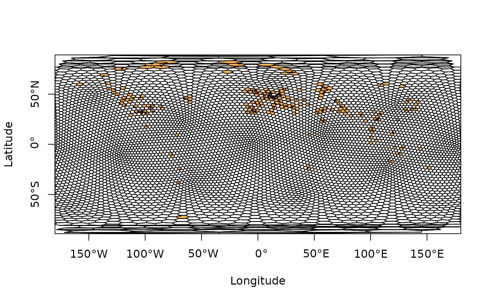

A function to assign fossil occurrences (or localities) to spatial bins/samples using a hexagonal equal-area grid.
Usage
bin_spatial(
occdf,
lng = "lng",
lat = "lat",
spacing = 100,
sub_grid = NULL,
return = FALSE,
plot = FALSE
)Arguments
- occdf
dataframe. A dataframe of the fossil occurrences (or localities) you wish to bin. This dataframe should contain the decimal degree coordinates of your occurrences, and they should be of classnumeric.- lng
character. The name of the column you wish to be treated as the input longitude (e.g., "lng" or "p_lng").- lat
character. The name of the column you wish to be treated as the input latitude (e.g., "lat" or "p_lat").- spacing
numeric. The desired spacing between the center of adjacent cells. This value should be provided in kilometres.- sub_grid
numeric. For an optional sub-grid, the desired spacing between the center of adjacent cells in the sub-grid. This value should be provided in kilometres. See details for information on sub-grid usage.- return
logical. Should the equal-area grid information and polygons be returned?- plot
logical. Should the occupied cells of the equal-area grid be plotted?
Value
If the return argument is set to FALSE, a dataframe is
returned of the original input occdf with cell information. If return is
set to TRUE, a list is returned with both the input occdf and grid
information and polygons.
Details
This function assigns fossil occurrence data into
equal-area grid cells using discrete hexagonal grids via the
h3jsr package. This package relies on Uber's H3 library,
a geospatial indexing system that partitions the world into hexagonal cells:
https://h3geo.org/docs. In H3, 16 different resolutions are available:
https://h3geo.org/docs/core-library/restable. In the implementation of
the bin_spatial() function, the resolution is defined by the user-input
spacing which represents the distance between the centroid of adjacent
cells. Using this distance, the function identifies which resolution is most
similar to the input spacing, and uses this resolution.
Additional functionality allows the user to simultaneously assign occurrence
data to equal-area grid cells of a finer-scale grid (i.e., a ‘sub-grid’)
within the primary grid via the sub_grid argument. This might be desirable
for users to evaluate the differences in the amount of area occupied by
occurrences within their primary grid cells. This functionality also allows
the user to easily rarefy across sub-grid cells within primary cells to
further standardise spatial sampling (see example for basic implementation).
Note: prior to implementation, coordinate reference system (CRS) for input data is defined as EPSG:4326 (World Geodetic System 1984). The user should transform their data accordingly if this is not appropriate. If you are unfamiliar with working with geographic data, we highly recommend checking out Geocomputation with R https://geocompr.robinlovelace.net/index.html.
Examples
# Get internal data
data("reefs")
# Reduce data for plotting
occdf <- reefs[1:500, ]
# Bin data using a hexagonal equal-area grid
bin_spatial(occdf = occdf, spacing = 250, plot = TRUE)
#> Average spacing between adjacent cells in the primary grid was set to 274.09 km.
#> H3 resolution: 2
#> r_number name
#> 1 1 Tilkideligi Tepe
#> 2 2 Hydra
#> 3 3 Shiraho, W-Pacific
#> 4 4 Aksu-Terziler area
#> 5 5 Adnet, Salzburg
#> 6 6 Rotelwand
#> 7 7 Rio Blanco
#> 8 8 Anxian, Sichuan
#> 9 9 Grimming
#> 10 10 Lime Peak, Yukon
#> 11 11 Sarmeika reef, Argolis
#> 12 12 Feichtenstein
#> 13 13 Gruber
#> 14 14 Wombat Plateau, offshore Australia, Indian Ocean
#> 15 15 Mahlknecht
#> 16 16 Wilde Kirche+Tegernsee
#> 17 17 Aflenz, Hochschwab
#> 18 18 Celje
#> 19 19 Pokljuka
#> 20 20 Hudajuzna and Cerkno area
#> 21 21 Hohe Wand
#> 22 22 Alichur, Pamir
#> 23 23 Schaimak, Pamir
#> 24 24 Schachtessai, Pamir
#> 25 25 Mala Fatra
#> 26 26 Panormide, Sicily
#> 27 27 Monti Cadini, Dolomites
#> 28 28 Gosaukamm
#> 29 29 Spiti, Himalaya
#> 30 30 Hangrang, Kinnaur, Himalaya
#> 31 31 Granada
#> 32 32 Gesause
#> 33 33 Jebel Wasa south
#> 34 34 Lovere
#> 35 35 Jebel Kawr
#> 36 36 Olang
#> 37 37 Karwendel, Innsbruck
#> 38 38 Hafelekar
#> 39 39 Idrija
#> 40 40 Fischerwiese, Steinplatte
#> 41 41 Richthofen
#> 42 42 Monte Caramolo
#> 43 43 Malajon, Palawan
#> 44 44 Hochkonig
#> 45 45 Kotel, Luda-Kamcia
#> 46 46 Pilot Mountains I, Nevada
#> 47 47 Lake Shasta, California
#> 48 48 Summit Peak, N-Wallowa Mountains, Oregon
#> 49 49 South Vancouver, British Columbia
#> 50 50 Gravina Island, Alaska
#> 51 51 North Vancouver
#> 52 52 Iliamna, Alaska
#> 53 53 Uffenheim
#> 54 54 Marktbreit
#> 55 55 Enslingen
#> 56 56 La Riba
#> 57 57 Zhenfeng (Chen-feng), Guizhou
#> 58 58 Shizong+Ch-iu-pei, Yunnan
#> 59 59 Mianzhu, Sichuan
#> 60 60 Yangmeibao, Huaxi, Guizhou
#> 61 61 Manang, Annapurna
#> 62 62 Mission Creek, Lewiston, Idaho
#> 63 63 New Pass, Nevada
#> 64 64 Tudiya, Wenxingchang, Laolongdong, Beipei buildup group, Sichuan
#> 65 65 Opole
#> 66 66 Acotambo
#> 67 67 Lagazuoi
#> 68 68 Aghdarband
#> 69 69 Latemar, Dolomites
#> 70 70 Epinal
#> 71 71 Mottgers
#> 72 72 Begunjscica
#> 73 73 W-Ceram
#> 74 74 Central Ceram
#> 75 75 Marawand, Delijan
#> 76 76 Lakaftari, Esfahan
#> 77 77 Tabas area including Parvadeh section
#> 78 78 Quebrada Granate
#> 79 79 Gurumugl
#> 80 80 Hoher Goll, Bavaria
#> 81 81 Karaburun
#> 82 82 Chios
#> 83 83 Waliabad
#> 84 84 Monte Genuardo, Sicily
#> 85 85 Bechar
#> 86 86 El Capitan, Texas and McKittric, New Mexico
#> 87 87 Shalypayco
#> 88 88 Huanincocha
#> 89 89 Possneck
#> 90 90 Trogkofel
#> 91 91 Kusunluk Hill, Bucakdere, Isparta
#> 92 92 Derekoy
#> 93 93 Triglav
#> 94 94 Negaia Hill, Cimp Moti, Vascau
#> 95 95 Aldan River, Siberia
#> 96 96 Riepl
#> 97 97 Sonora
#> 98 98 Pualaca, NE-Timor
#> 99 99 SW-Timor
#> 100 100 Alsohegy Plateau
#> 101 101 Gela, Sicily
#> 102 102 Rhatikon
#> 103 103 Mratinje, Bosnia
#> 104 104 Mine Verhny, Sichote Alin
#> 105 105 Bleiberg
#> 106 106 Lattari Mountains
#> 107 107 Telkwa Range, British Columbia
#> 108 108 Demascota well, Nova Scotia
#> 109 109 Demascota well, Nova Scotia
#> 110 110 Cohasset well, Nova Scotia
#> 111 111 Suplee-Izee, Oregon
#> 112 112 Bullmoose Mt., British Columbia
#> 113 113 Acadia, Nova Scotia
#> 114 114 Demascota well, Nova Scotia
#> 115 115 Prince Patrick Island I
#> 116 116 Prince Patrick Island II
#> 117 117 Ellef Ringnes Island
#> 118 118 Holm Land, Greenland
#> 119 119 Topuk + Tavuk Cesme, Isparta
#> 120 120 Rahatalana Yayla
#> 121 121 Swimming Woman, Big Snowy Mts., Montana
#> 122 122 Bridger Range, Montana
#> 123 123 Cedar Creek, Williston Basin, Montana
#> 124 124 Wilsons Brook, New Brunswick
#> 125 125 Havelock, New Brunswick
#> 126 126 Devondal, Greenland
#> 127 127 Aguathuna, Newfoundland
#> 128 128 Blue Mountains, Ellesmere Island, Nunavut
#> 129 129 Arthaber Creek, Axel Heiberg Island, Nunavut
#> 130 130 Hare Fjord, Ellesmere
#> 131 131 Westerstein, Harz
#> 132 132 Romerstein, Harz
#> 133 133 Schale
#> 134 134 Abenra
#> 135 135 E-Durham, England
#> 136 136 Liebenstein
#> 137 137 Karakorum, Kashmir
#> 138 138 Northern Caucasus
#> 139 139 Ussuri, Sichote Alin
#> 140 140 Partizansk, Primorsky
#> 141 141 Nakhodka, Primorsky
#> 142 142 Karavan, Kirgiziya
#> 143 143 Bakhchisaray, Krym
#> 144 144 Areni, Armeniya
#> 145 145 Coron Island
#> 146 146 Szentantalfa
#> 147 147 E-Sulawesi
#> 148 148 Lhasa, Tibet
#> 149 149 Menina
#> 150 150 Yesilova
#> 151 151 Rowley Terrace, N
#> 152 152 Gartnerkofel
#> 153 153 Mina, Pilot Mountains, Nevada
#> 154 154 S-Wallowa Mountains, Oregon
#> 155 155 W-Cyprus
#> 156 156 Wendelstein, Bavaria
#> 157 157 Dajiang I, Great Bank of Guizhou
#> 158 158 Bianyang I, Great Bank of Guizhou
#> 159 159 Bianyang II
#> 160 160 Jinshajiang
#> 161 161 Buru
#> 162 162 Seelandalpe
#> 163 163 Kosmatiza, Karawanken
#> 164 164 Lugano
#> 165 165 Lienz
#> 166 166 Kuma River, Kyushu
#> 167 167 Nara
#> 168 168 Haj, Zadial Plateau
#> 169 169 Zadial Plateau
#> 170 170 Silica Plateau
#> 171 171 Veterlin, Male Karpaty
#> 172 172 Liptovska Osada
#> 173 173 Pljevlja, Montenegro
#> 174 174 Bukk Mountains
#> 175 175 Moliterno, S-Apennin
#> 176 176 Cerchiara, Brienza, S-Apennin
#> 177 177 Irpina
#> 178 178 Sambosan, Shikoku
#> 179 179 N-Calabria, microbe-serpulid reefs
#> 180 180 Zangla, Ladakh
#> 181 181 Peace River, Alberta
#> 182 182 N-Yukon
#> 183 183 Arco Hills, Idaho
#> 184 184 Brookfield, Nova Scotia
#> 185 185 Shubenacadie, Nova Scotia
#> 186 186 Windsor, Nova Scotia
#> 187 187 Raanes Peninsula I, Ellesmere Island, Nunavut
#> 188 188 Raanes Peninsula II, Ellesmere Island, Nunavut
#> 189 189 Bunde Fjord, Axel Heib. Is.
#> 190 190 Raanes Peninsula III, Ellesmere Island, Nunavut
#> 191 191 Blind Fjord, Raanes Penins., Ellesmere Isl., Nunav
#> 192 192 Raanes Peninsula V, Ellesmere Isl., Nunavut
#> 193 193 Sotong B1, offshore
#> 194 194 Okumino
#> 195 195 Wengdao, Guizhou
#> 196 196 Ziyundong, Ziyun Co., Guizhou
#> 197 197 Ziyun County, Guizhou
#> 198 198 Maltby, England
#> 199 199 Aberford, England
#> 200 200 Djebel Tebaga
#> 201 201 Birkat al Mawz
#> 202 202 Jebel Wasa north, Oman Mountains
#> 203 203 Il Karraba
#> 204 204 Marcali
#> 205 205 Grigna
#> 206 206 Phatthalung
#> 207 207 Lake Tobe, Sumatra
#> 208 208 Val Adrara and others, Lombardia
#> 209 209 Pogorzyce, Silesia
#> 210 210 Iwaizaki
#> 211 211 Chhidru
#> 212 212 Korfu
#> 213 213 Urakovs, Urals
#> 214 214 Shachtau, Sterlitamak, Bashkiria
#> 215 215 Sarginsk, Urals
#> 216 216 Sylvinsk, Urals
#> 217 217 Ufa River, Urals
#> 218 218 Zhilyanka, Aktyubinsk
#> 219 219 Sitorman, Dobrogea
#> 220 220 Tokyo
#> 221 221 Buffalo, Kansas
#> 222 222 Jianshuigou - Chunmuping Reefs, Chuenmuping, Sichuan
#> 223 223 Jiantianba, Hubei
#> 224 224 Xiangbo, Longlin County, Guangxi
#> 225 225 Xiangbo II, Longlin County, Guangxi
#> 226 226 Dongnameng, Guangnan, Yunnan
#> 227 227 Kemnitz Field, New Mexico
#> 228 228 Aneth Field, San Juan Canyon, Utah
#> 229 229 Ba-id
#> 230 230 Wadi Aday, Saih Hatat
#> 231 231 Rif
#> 232 232 Bolshetirsky, Siberia
#> 233 233 Srednebotuobinsky, Siberia
#> 234 234 Dulisminsky, Siberia
#> 235 235 Monte Lieggio, Salerno
#> 236 236 Valdeteja
#> 237 237 Valdeteja II
#> 238 238 Rudnig Sattle
#> 239 239 Herrlingen
#> 240 240 Torinosu, Sakawa, Shikoku
#> 241 241 Immouzer
#> 242 242 Diezma
#> 243 243 Marbella
#> 244 244 Bianyang, Ziyun County, Guizhou
#> 245 245 Hanlong, Guizhou
#> 246 246 Madonie, Sicily
#> 247 247 Rotelstein
#> 248 248 Krahstein
#> 249 249 Djebel Tebaga II
#> 250 250 Palazzo Adriano, Sicily
#> 251 251 Roccapalumba, Sicily
#> 252 252 Wegener Halvo, Greenland
#> 253 253 N-Amdrup Land, Greenland
#> 254 254 S-Amdrup Land, Greenland
#> 255 255 Skyros
#> 256 256 Nishino-dai
#> 257 257 Akiyoshi-dai
#> 258 258 Minamidai, Akiyoshi-dai
#> 259 259 Ryugoho, Akiyoshi-dai
#> 260 260 Olinala, Guerrero
#> 261 261 Klamath Mountains, California
#> 262 262 El Portachuelo
#> 263 263 Baske Ostarije
#> 264 264 Baske Ostarije II
#> 265 265 Baske Ostarije III
#> 266 266 Azizia
#> 267 267 Hidaka, Hokkaido
#> 268 268 Naybandan
#> 269 269 Straza, Bled
#> 270 270 Bohinjska Bela
#> 271 271 Derbyshire, Great Britain
#> 272 272 Derbyshire II, Great Britain
#> 273 273 El Nido, Philippines
#> 274 274 Lake Cumberland, Kentucky
#> 275 275 Celina, Tennessee
#> 276 276 Sheep Draw and Dark Canyon, Capitan, New Mexico
#> 277 277 Qincaiyuan, Ziyun, Guizhou
#> 278 278 Lop Buri
#> 279 279 Phetchabun
#> 280 280 Phet Buri
#> 281 281 Lom Sak
#> 282 282 Lemhi Range, Idaho
#> 283 283 Bihendula
#> 284 284 Scorpion, Tularosa, New Mexico
#> 285 285 Phrae
#> 286 286 Amanda, Adriatic Sea
#> 287 287 Brunnachhohe
#> 288 288 Zeitz
#> 289 289 Hess Ranch and Leonard Mt., Glass Mountains, Texas
#> 290 290 Jiannan well, Hubei
#> 291 291 Huangnitang, Hubei
#> 292 292 Taiyun, Sichuan
#> 293 293 Yucca Mound, Dry Canyon, New Mexico
#> 294 294 Nordkapp Basin I
#> 295 295 Nordkapp Basin II
#> 296 296 Nordkapp Basin III
#> 297 297 Nordkapp Basin IV
#> 298 298 Nordkapp Basin V
#> 299 299 Nordkapp Basin VI
#> 300 300 Nordkapp Basin VII
#> 301 301 Kolosseum, Ekmanfjorden, Spitzbergen
#> 302 302 Boltonbreen, Spitzbergen
#> 303 303 Bjornoya, Barents Sea
#> 304 304 Heeseberg
#> 305 305 Alytus
#> 306 306 Jonava, Pashulyai
#> 307 307 Silale
#> 308 308 Hida Massif
#> 309 309 Wellman, Horseshoe Atoll, Texas
#> 310 310 Mungerville, Horseshoe Atoll, Texas
#> 311 311 Martha van Eman, Texas
#> 312 312 Ringmauer, Carnic Alps
#> 313 313 Val di Puartis
#> 314 314 Huangjindong, Hubei
#> 315 315 Hydra
#> 316 316 Hackberry Draw and Chinaberry Draw, Capitan, Texas
#> 317 317 Brooks Ranch, Texas
#> 318 318 Dugot Mountain, Texas
#> 319 319 Leonard Mountain, Glass Mts., Texas
#> 320 320 Boone County I, Missouri
#> 321 321 Boone County II, Missouri
#> 322 322 Marble Falls, Texas
#> 323 323 Bend, Texas
#> 324 324 Elk City, Kansas
#> 325 325 Wangmo, Guizhou
#> 326 326 Guanchang, Lingyun, Guangxi
#> 327 327 Guangnan II, Yunnan
#> 328 328 Tularosa II, New Mexico
#> 329 329 Vinton, Texas
#> 330 330 Ozbak-Kuh
#> 331 331 Hasanoglan
#> 332 332 Argolis
#> 333 333 Big Hatchet Mountains, New Mexico
#> 334 334 Portal, Arizona
#> 335 335 Big Hatchet Mountains II, New Mexico
#> 336 336 Big Hatchet Mts. III, New Mexico
#> 337 337 Nena Lucia - Jameson, Nolan County, Texas
#> 338 338 Cache Field, Colorado
#> 339 339 E-Kansas
#> 340 340 Rumelange
#> 341 341 Grand Lake, Oklahoma
#> 342 342 Illinois River, Oklahoma
#> 343 343 Kocagedik
#> 344 344 Wolf Camp Hills, Texas
#> 345 345 Ohio Falls, Indiana
#> 346 346 Sumitomo quarry
#> 347 347 Sumitomo quarry
#> 348 348 Bou Arfa
#> 349 349 Bou Arnhous
#> 350 350 Jebel Bou Iblane
#> 351 351 Jebel Bou Mokhta
#> 352 352 Jebel Bou Dahar, High Atlas
#> 353 353 Jebel Azourki
#> 354 354 Almis, D-Guigou
#> 355 355 Tazzeka
#> 356 356 Midelt
#> 357 357 Touissite
#> 358 358 Sinjavina, Montenegro
#> 359 359 Durmitor, Montenegro
#> 360 360 Waulsort
#> 361 361 Cannington Park, Great Britain
#> 362 362 Linney Head, Wales, Great Britain
#> 363 363 Troitsk
#> 364 364 Orsk
#> 365 365 Koltuban, Urals
#> 366 366 Urtazym, Urals
#> 367 367 Okrestnosti, Urals
#> 368 368 Sinara
#> 369 369 Troitsk
#> 370 370 Ajtuarka
#> 371 371 Podolsk
#> 372 372 Novobelokatay
#> 373 373 Chusovoy, Urals
#> 374 374 Kirgishany
#> 375 375 Foum Zabel, Rich
#> 376 376 Touissite
#> 377 377 Jebel Mechkakour
#> 378 378 Jebel Klakh
#> 379 379 Hatu Dame, Timor
#> 380 380 Huajiaoping Reef, Lichuan, Hubei
#> 381 381 Muleshoe, Sacramento Mts., New Mexico
#> 382 382 Higgins Ranch Field, Texas
#> 383 383 Sacroc well, Texas
#> 384 384 Crane, Texas
#> 385 385 Taza
#> 386 386 Ifrane S
#> 387 387 Ifrane
#> 388 388 Jebel Khourati
#> 389 389 Meknes
#> 390 390 Walker Creek, Arkansas
#> 391 391 Kyaukme
#> 392 392 Klaeng
#> 393 393 Si Sawat, Thong Pha Phum
#> 394 394 Thong Pha Phum
#> 395 395 Nikitinskaya Gorge, Caucasus
#> 396 396 Pico de la Carne
#> 397 397 Palmers Wood, England
#> 398 398 Detention, England
#> 399 399 Brady, Texas
#> 400 400 La Colmena, Hueco Mts., Texas
#> 401 401 Hueco Mts. II, Texas
#> 402 403 Salt Range
#> 403 404 Karakorum
#> 404 405 Karakorum II
#> 405 406 Torrecilla en Cameros
#> 406 407 Sierra del Madero
#> 407 408 Apuseni Mts.
#> 408 409 Brasov
#> 409 410 Saulgau well
#> 410 411 Laisacker
#> 411 412 Balingen
#> 412 413 Sasso di Castalda
#> 413 414 Sierra de la Vaca Muerta, Argentina
#> 414 415 Seminole, Texas
#> 415 416 Seminole II, Texas
#> 416 417 Happy and Seberger, Rawlings County, Kansas
#> 417 418 Anderson Ranch, New Mexico
#> 418 419 Morton Field, New Mexico
#> 419 420 Blalock Field, Texas
#> 420 421 Hico Knowles Field, Louisiana
#> 421 422 Sisophon
#> 422 423 Zalesiaki + Niwiska + Racizyn + Lisowice
#> 423 424 Kielniki
#> 424 425 Podzamcze+Smolen, Zegarowe
#> 425 426 Trzebinia, Polish Jura
#> 426 427 Craven, Lancashire, Great Britain
#> 427 428 Stebden Hill, Cracoe, Great Britain
#> 428 429 Halton, Carnforth, Great Britain
#> 429 430 Isle of Man, Great Britain
#> 430 431 Caldon Low, Derbyshire, Great Britain
#> 431 432 Indian Creek Field, Fentress Co., Tennessee
#> 432 433 N-Arkansas
#> 433 434 Cork
#> 434 435 Kenmare
#> 435 436 Rathkeale, Shannon Estuary
#> 436 437 Feltrim Hill, Dublin
#> 437 438 Keel
#> 438 439 San Andres Mts, New Mexico
#> 439 440 Teepee Mound, Sacramento Mts., New Mexico
#> 440 441 Grapevine Canyon, New Mexico
#> 441 442 Bishop Cap Hills, Las Cruces, New Mexico
#> 442 443 Bokan
#> 443 444 Spina Kada
#> 444 445 Band-e Bayan
#> 445 446 Northern Poland
#> 446 447 Alexander Island, Antarctica
#> 447 448 El Entredicho
#> 448 449 Fuente Alamo
#> 449 450 Stranska skala
#> 450 451 Stranska skala
#> 451 452 Vel. Pavlovice
#> 452 453 Stramberk
#> 453 454 Belleme, Normandy
#> 454 455 Steeple Ashton, England
#> 455 456 Haudainville, Lorraine
#> 456 457 Fairford, England
#> 457 458 Morestel
#> 458 459 Reculet
#> 459 460 Dobrogea II
#> 460 461 Dangovato
#> 461 462 Ankotoboka
#> 462 463 Ankotoboka II
#> 463 464 Maghara Massif
#> 464 465 Meillon
#> 465 466 Turner Valley, Alberta
#> 466 467 Grenora, North Dakota
#> 467 468 Sheridan County, Montana
#> 468 469 Muskogee County, Oklahoma
#> 469 470 Plassen
#> 470 471 Assemsouk, High Atlas
#> 471 472 Tizi n Tizint
#> 472 473 Lion Creek, Queensland
#> 473 474 Epidauros
#> 474 475 Raxalpe/Heukuppe
#> 475 476 Gosing
#> 476 477 Josvafo, Aggtelek Karst
#> 477 478 Szendro
#> 478 479 Abadeh
#> 479 480 Abadeh II
#> 480 481 Firuzkuh
#> 481 482 Altensteig
#> 482 483 Altensteig II
#> 483 484 Graisbach
#> 484 485 Ota
#> 485 486 Tengiz
#> 486 487 Tengiz II
#> 487 488 Bolshoi Karatau
#> 488 489 Bolshoi Karatau II
#> 489 490 Bolshoi Karatau III
#> 490 491 Bolshoi Karatau IV
#> 491 492 Bolshoi Karatau V
#> 492 493 Bolshoi Karatau VI
#> 493 494 Qaleh Dokhtar
#> 494 495 Kuh-e-Birk
#> 495 496 Esfandiar
#> 496 497 Trancoso
#> 497 498 Rocha, Faro
#> 498 499 Cotovio + Cerro da Cabeca + Peral
#> 499 500 Frias de Albarracin
#> 500 501 Arroyo Cerezo
#> formation system series
#> 1 Triassic Upper Triassic
#> 2 Pantokrator Limestone Triassic Upper Triassic
#> 3 Neogene Holocene
#> 4 Triassic Upper Triassic
#> 5 Triassic Upper Triassic
#> 6 Triassic Upper Triassic
#> 7 Triassic Upper Triassic
#> 8 Hanwang Triassic Upper Triassic
#> 9 Triassic Upper Triassic
#> 10 Aksala Triassic Upper Triassic
#> 11 Pantokrator Triassic Upper Triassic
#> 12 Triassic Upper Triassic
#> 13 Triassic Upper Triassic
#> 14 Triassic Upper Triassic
#> 15 Triassic Middle Triassic
#> 16 Triassic Upper Triassic
#> 17 Triassic Upper Triassic
#> 18 Triassic Middle Triassic
#> 19 Triassic Upper Triassic
#> 20 Triassic Upper Triassic
#> 21 Dachstein Triassic Upper Triassic
#> 22 Triassic Middle Triassic
#> 23 Shaimak Triassic Upper Triassic
#> 24 Bortepa Triassic Upper Triassic
#> 25 Triassic Upper Triassic
#> 26 Triassic Upper Triassic
#> 27 Cassian Triassic Upper Triassic
#> 28 Dachstein Triassic Upper Triassic
#> 29 Nimaloksa Triassic Upper Triassic
#> 30 Nimaloksa Triassic Upper Triassic
#> 31 Triassic Middle Triassic
#> 32 Dachstein Triassic Upper Triassic
#> 33 Jebel Wasa Triassic Upper Triassic
#> 34 Camorelli Triassic Middle Triassic
#> 35 Misfah Triassic Upper Triassic
#> 36 Recoaro - Upper Serla Triassic Middle Triassic
#> 37 Wetterstein Triassic Middle Triassic
#> 38 Triassic Middle/Upper Triassic
#> 39 Triassic Upper Triassic
#> 40 Zlambach Beds Triassic Upper Triassic
#> 41 Cassian Dolomite Triassic Upper Triassic
#> 42 Calcari Triassic Middle/Upper Triassic
#> 43 Coron Triassic Upper Triassic
#> 44 Dachstein Triassic Upper Triassic
#> 45 Kotel Triassic Upper Triassic
#> 46 Luning Triassic Upper Triassic
#> 47 Hosselkus Limestone Triassic Upper Triassic
#> 48 Martin Bridge Triassic Upper Triassic
#> 49 Sutton Limestone Triassic Upper Triassic
#> 50 Nehenta Triassic Upper Triassic
#> 51 Triassic Upper Triassic
#> 52 Triassic Upper Triassic
#> 53 Triassic Middle Triassic
#> 54 Triassic Middle Triassic
#> 55 Triassic Middle Triassic
#> 56 Triassic Middle Triassic
#> 57 Yangliujing Triassic Middle Triassic
#> 58 Lanmu Triassic Middle Triassic
#> 59 Triassic Upper Triassic
#> 60 Qinyan Triassic Middle Triassic
#> 61 Tarap Triassic Upper Triassic
#> 62 Martin Bridge Triassic Upper Triassic
#> 63 Augusta Triassic Middle Triassic
#> 64 Changxing Permian Upper Permian
#> 65 Triassic Middle Triassic
#> 66 Chambara Triassic Upper Triassic
#> 67 Cassian Triassic Middle/Upper Triassic
#> 68 Triassic Middle Triassic
#> 69 Schlern Triassic Middle Triassic
#> 70 Triassic Middle Triassic
#> 71 Triassic Middle Triassic
#> 72 Triassic Upper Triassic
#> 73 Asinepe Limestone Triassic Upper Triassic
#> 74 Asinepe Limestone Triassic Upper Triassic
#> 75 Nayband Triassic Upper Triassic
#> 76 Nayband Triassic Upper Triassic
#> 77 Nayband Triassic Upper Triassic
#> 78 Triassic Upper Triassic
#> 79 Kuta Limestone Triassic Upper Triassic
#> 80 Dachstein Triassic Upper Triassic
#> 81 Lalekoy Triassic Middle/Upper Triassic
#> 82 Triassic Middle/Upper Triassic
#> 83 Nayband Triassic Upper Triassic
#> 84 Triassic Upper Triassic
#> 85 Carboniferous Lower Carboniferous
#> 86 Yates Permian Middle Permian
#> 87 Chambara Triassic Upper Triassic
#> 88 Chambara Triassic Upper Triassic
#> 89 Werrakarbonat Permian Upper Permian
#> 90 Trogkofel Permian Lower Permian
#> 91 Triassic Upper Triassic
#> 92 Triassic Upper Triassic
#> 93 Triassic Upper Triassic
#> 94 Triassic Upper Triassic
#> 95 Cambrian Lower Cambrian
#> 96 Triassic Middle Triassic
#> 97 Antimonio Triassic Upper Triassic
#> 98 Triassic Upper Triassic
#> 99 Triassic Upper Triassic
#> 100 Wetterstein Limestone Triassic Middle/Upper Triassic
#> 101 Triassic Upper Triassic
#> 102 Triassic Upper Triassic
#> 103 Triassic Middle/Upper Triassic
#> 104 Triassic Upper Triassic
#> 105 Triassic Middle Triassic
#> 106 Triassic Upper Triassic
#> 107 Nilkitkwa Jurassic Lower Jurassic
#> 108 Abenaki Jurassic Upper Jurassic
#> 109 Abenaki Jurassic Upper Jurassic
#> 110 Jurassic Upper Jurassic
#> 111 Robertson Jurassic Lower Jurassic
#> 112 Cretaceous Lower Cretaceous
#> 113 Jurassic Upper Jurassic
#> 114 Abenaki Cretaceous Lower Cretaceous
#> 115 Christopher Cretaceous Lower Cretaceous
#> 116 Christopher Cretaceous Lower Cretaceous
#> 117 Christopher Cretaceous Lower Cretaceous
#> 118 Carboniferous Upper Carboniferous
#> 119 Triassic Upper Triassic
#> 120 Triassic Upper Triassic
#> 121 Lodgepole Carboniferous Lower Carboniferous
#> 122 Lodgepole Carboniferous Lower Carboniferous
#> 123 Lodgepole Carboniferous Lower Carboniferous
#> 124 Carboniferous Lower Carboniferous
#> 125 Carboniferous Lower Carboniferous
#> 126 Permian Middle Permian
#> 127 Carboniferous Lower Carboniferous
#> 128 Hare Fjord Carboniferous Upper Carboniferous
#> 129 Nansen Carboniferous Upper Carboniferous
#> 130 Otto Fjord Carboniferous Middle Carboniferous
#> 131 Permian Upper Permian
#> 132 Permian Upper Permian
#> 133 Permian Upper Permian
#> 134 Permian Upper Permian
#> 135 Ford Permian Lopingian
#> 136 Permian Upper Permian
#> 137 Triassic Upper Triassic
#> 138 Bolshoj Tkah'c Triassic Upper Triassic
#> 139 Triassic Upper Triassic
#> 140 Permian Middle Permian
#> 141 Lyudyanza Permian Lopingian
#> 142 Carboniferous Upper Carboniferous
#> 143 Permian Middle Permian
#> 144 Permian Middle Permian
#> 145 Triassic Upper Triassic
#> 146 Tagyon Triassic Middle Triassic
#> 147 Triassic Upper Triassic
#> 148 Triassic Upper Triassic
#> 149 Triassic Upper Triassic
#> 150 Triassic Upper Triassic
#> 151 Triassic Upper Triassic
#> 152 Triassic Middle Triassic
#> 153 Luning Triassic Upper Triassic
#> 154 Triassic Upper Triassic
#> 155 Triassic Upper Triassic
#> 156 Triassic Middle Triassic
#> 157 Triassic Lower Triassic
#> 158 Triassic Middle Triassic
#> 159 Triassic Middle/Upper Triassic
#> 160 Triassic Upper Triassic
#> 161 Triassic Upper Triassic
#> 162 Cassian Triassic Upper Triassic
#> 163 Contrin Triassic Middle Triassic
#> 164 Triassic Middle Triassic
#> 165 Triassic Middle Triassic
#> 166 Konose Group Triassic Upper Triassic
#> 167 Triassic Upper Triassic
#> 168 Triassic Middle Triassic
#> 169 Triassic Upper Triassic
#> 170 Wetterstein Limestone Triassic Middle/Upper Triassic
#> 171 Wetterstein Limestone Triassic Middle Triassic
#> 172 Triassic Upper Triassic
#> 173 Triassic Middle Triassic
#> 174 Wetterstein Limestone Triassic Middle Triassic
#> 175 Mt. Facito Triassic Middle Triassic
#> 176 Mt. Facito Triassic Middle Triassic
#> 177 Triassic Upper Triassic
#> 178 Triassic Upper Triassic
#> 179 Triassic Upper Triassic
#> 180 Triassic Upper Triassic
#> 181 Pekisko Carboniferous Lower Carboniferous
#> 182 Permian Lower Permian
#> 183 Snaky Canyon Permian Lower Permian
#> 184 Windsor Group Carboniferous Lower Carboniferous
#> 185 Gays River Carboniferous Lower Carboniferous
#> 186 Miller Creek Carboniferous Lower Carboniferous
#> 187 Nansen Permian Lower Permian
#> 188 Nansen Permian Lower Permian
#> 189 Permian Lower Permian
#> 190 Permian Lower Permian
#> 191 Great Bear Cape Permian Lower Permian
#> 192 Great Bear Cape Permian Lower Permian
#> 193 Sotong Limestone Triassic Upper Triassic
#> 194 Permian Lower Permian
#> 195 Carboniferous Upper Carboniferous
#> 196 Houziguan Limestone Permian Middle Permian
#> 197 Shitouzhai Permian Upper Permian
#> 198 Permian Upper Permian
#> 199 Cadeby Permian Lopingian
#> 200 Permian Upper Permian
#> 201 Misfah Triassic Upper Triassic
#> 202 Jebel Wasa Triassic Upper Triassic
#> 203 Neogene Miocene
#> 204 Triassic Middle/Upper Triassic
#> 205 Triassic Middle Triassic
#> 206 Chaiburi Triassic Upper Triassic
#> 207 Triassic Middle/Upper Triassic
#> 208 Calcare di Zu Triassic Upper Triassic
#> 209 Karchowice Beds Triassic Middle Triassic
#> 210 Iwaizaki Limestone Permian Middle Permian
#> 211 Permian Upper Permian
#> 212 Triassic Upper Triassic
#> 213 Permian Lower Permian
#> 214 Permian Lower Permian
#> 215 Permian Lower Permian
#> 216 Permian Lower Permian
#> 217 Permian Lower Permian
#> 218 Permian Lower Permian
#> 219 Jurassic Upper Jurassic
#> 220 Permian Middle Permian
#> 221 Carboniferous Upper Carboniferous
#> 222 Changxing Permian Upper Permian
#> 223 Changxing Permian Upper Permian
#> 224 Changxing Permian Upper Permian
#> 225 Maokou Permian Middle Permian
#> 226 Maokou Permian Middle Permian
#> 227 Permian Lower Permian
#> 228 Hermosa Carboniferous Upper Carboniferous
#> 229 Permian Middle Permian
#> 230 Permian Middle Permian
#> 231 Carboniferous Lower Carboniferous
#> 232 Cambrian Lower Cambrian
#> 233 Cambrian Lower Cambrian
#> 234 Cambrian Lower Cambrian
#> 235 Triassic Upper Triassic
#> 236 Valdeteja Carboniferous Middle Carboniferous
#> 237 Valdeteja Carboniferous Middle Carboniferous
#> 238 Carboniferous Upper Carboniferous
#> 239 Jurassic Upper Jurassic
#> 240 Torinosu Jurassic Upper Jurassic
#> 241 Jurassic Upper Jurassic
#> 242 Carboniferous Lower Carboniferous
#> 243 Carboniferous Lower Carboniferous
#> 244 Mobo Permian Upper Permian
#> 245 Permian Upper Permian
#> 246 Triassic Upper Triassic
#> 247 Plassenkalk Jurassic Upper Jurassic
#> 248 Plassenkalk Jurassic Upper Jurassic
#> 249 Permian Upper Permian
#> 250 Permian Middle Permian
#> 251 Lercara Permian Lower Permian
#> 252 Wegener Halvo Permian Middle Permian
#> 253 Carboniferous Upper Carboniferous
#> 254 Kap Jungersen Carboniferous Upper Carboniferous
#> 255 Permian Upper Permian
#> 256 Carboniferous Upper Carboniferous
#> 257 Carboniferous Lower Carboniferous
#> 258 Carboniferous Lower Carboniferous
#> 259 Carboniferous Lower Carboniferous
#> 260 Olinala Permian Middle Permian
#> 261 Permian Lower Permian
#> 262 Palmarito Permian Middle Permian
#> 263 Permian Middle Permian
#> 264 Permian Middle Permian
#> 265 Permian Middle Permian
#> 266 Triassic Upper Triassic
#> 267 Triassic Upper Triassic
#> 268 Nayband Triassic Upper Triassic
#> 269 Permian Middle Permian
#> 270 Permian Middle Permian
#> 271 Carboniferous Lower Carboniferous
#> 272 Carboniferous Lower Carboniferous
#> 273 Permian Guadalupian
#> 274 Fort Payne Carboniferous Lower Carboniferous
#> 275 Fort Payne Carboniferous Lower Carboniferous
#> 276 Tansill Permian Middle Permian
#> 277 Jiyaopo Permian Lopingian
#> 278 Permian Middle Permian
#> 279 Permian Middle Permian
#> 280 Permian Middle Permian
#> 281 Permian Middle Permian
#> 282 Permian Lower Permian
#> 283 Jurassic Middle Jurassic
#> 284 Permian Lower Permian
#> 285 Permian Upper Permian
#> 286 Permian Lower Permian
#> 287 Carboniferous Lower Carboniferous
#> 288 Permian Upper Permian
#> 289 Lenox Hills Permian Lower Permian
#> 290 Changxing Permian Upper Permian
#> 291 Changxing Permian Upper Permian
#> 292 Changxing Permian Upper Permian
#> 293 Holder Carboniferous Upper Carboniferous
#> 294 Permian Lower Permian
#> 295 Permian Lower Permian
#> 296 Permian Lower Permian
#> 297 Permian Lower Permian
#> 298 Permian Lower Permian
#> 299 Permian Upper Permian
#> 300 Permian Lower Permian
#> 301 Nordenskjoldbreen Permian Lower Permian
#> 302 Wordiekammen Permian Lower Permian
#> 303 Permian Lower Permian
#> 304 Triassic Lower Triassic
#> 305 Permian Upper Permian
#> 306 Permian Upper Permian
#> 307 Permian Upper Permian
#> 308 Ichinotani Permian Lower Permian
#> 309 Carboniferous Upper Carboniferous
#> 310 Carboniferous Upper Carboniferous
#> 311 Permian Lower Permian
#> 312 Auernig Carboniferous Upper Carboniferous
#> 313 Carboniferous Upper Carboniferous
#> 314 Changxing Permian Upper Permian
#> 315 Permian Lower Permian
#> 316 Capitan Permian Middle Permian
#> 317 Gaptank Carboniferous Upper Carboniferous
#> 318 Cathedral Mountain Permian Lower Permian
#> 319 Skinner Ranch Permian Lower Permian
#> 320 Burlington Limestone Carboniferous Lower Carboniferous
#> 321 Burlington Limestone Carboniferous Lower Carboniferous
#> 322 Carboniferous Middle Carboniferous
#> 323 Carboniferous Middle Carboniferous
#> 324 Carboniferous Upper Carboniferous
#> 325 Permian Upper Permian
#> 326 Maokou Permian Middle Permian
#> 327 Maokou Permian Middle Permian
#> 328 Laborcita Permian Lower Permian
#> 329 Permian Lower Permian
#> 330 Carboniferous Middle Carboniferous
#> 331 Triassic Middle Triassic
#> 332 Permian Upper Permian
#> 333 Carboniferous Middle Carboniferous
#> 334 Horquilla Limestone Carboniferous Upper Carboniferous
#> 335 Horquilla Limestone Carboniferous Upper Carboniferous
#> 336 Permian Lower Permian
#> 337 Strawn Carboniferous Upper Carboniferous
#> 338 Carboniferous Upper Carboniferous
#> 339 Carboniferous Upper Carboniferous
#> 340 Jurassic Middle Jurassic
#> 341 St. Joe Carboniferous Lower Carboniferous
#> 342 St. Joe Carboniferous Lower Carboniferous
#> 343 Triassic Upper Triassic
#> 344 Neal Ranch Permian Lower Permian
#> 345 Devonian Middle Devonian
#> 346 Permian Lower Permian
#> 347 Akiyoshi Limestone Permian Lower Permian
#> 348 Jurassic Lower Jurassic
#> 349 Jurassic Lower Jurassic
#> 350 Jurassic Lower Jurassic
#> 351 Jurassic Lower Jurassic
#> 352 <NA> Jurassic Lower Jurassic
#> 353 Jurassic Lower Jurassic
#> 354 Jurassic Lower Jurassic
#> 355 Jurassic Lower Jurassic
#> 356 Jurassic Lower/Middle Jurassic
#> 357 Jurassic Lower/Middle Jurassic
#> 358 Triassic Middle/Upper Triassic
#> 359 Triassic Upper Triassic
#> 360 Carboniferous Lower Carboniferous
#> 361 Carboniferous Lower Carboniferous
#> 362 Carboniferous Lower Carboniferous
#> 363 Cambrian Lower Cambrian
#> 364 Carboniferous Lower Carboniferous
#> 365 Devonian Upper Devonian
#> 366 Devonian Upper Devonian
#> 367 Shubartau Devonian Upper Devonian
#> 368 Carboniferous Upper Carboniferous
#> 369 Carboniferous Upper Carboniferous
#> 370 Carboniferous Upper Carboniferous
#> 371 Akatievo Carboniferous Middle Carboniferous
#> 372 Permian Lower Permian
#> 373 Permian Lower Permian
#> 374 Permian Lower Permian
#> 375 Bin El Oudinane Group, Fm. 1 Jurassic Middle Jurassic
#> 376 Jurassic Middle Jurassic
#> 377 Jurassic Middle Jurassic
#> 378 Jurassic Middle Jurassic
#> 379 Permian Lower Permian
#> 380 Changxing Permian Lopingian
#> 381 Carboniferous Lower Carboniferous
#> 382 Carboniferous Upper Carboniferous
#> 383 Carboniferous Upper Carboniferous
#> 384 Permian Middle Permian
#> 385 Jurassic Lower Jurassic
#> 386 Jurassic Lower Jurassic
#> 387 Jurassic Lower Jurassic
#> 388 Jurassic Upper Jurassic
#> 389 Jurassic Lower Jurassic
#> 390 Jurassic Upper Jurassic
#> 391 Triassic Upper Triassic
#> 392 Triassic Middle Triassic
#> 393 Permian Middle Permian
#> 394 Permian Middle Permian
#> 395 Urushten Permian Upper Permian
#> 396 Triassic Upper Triassic
#> 397 Jurassic Upper Jurassic
#> 398 Jurassic Upper Jurassic
#> 399 Marble Falls Carboniferous Upper Carboniferous
#> 400 Permian Lower Permian
#> 401 Permian Lower Permian
#> 402 Wargal Permian Upper Permian
#> 403 Permian Lower Permian
#> 404 Permian Middle Permian
#> 405 Jurassic Upper Jurassic
#> 406 Jurassic Upper Jurassic
#> 407 Triassic Middle Triassic
#> 408 Triassic Middle/Upper Triassic
#> 409 Jurassic Upper Jurassic
#> 410 Jurassic Upper Jurassic
#> 411 Jurassic Upper Jurassic
#> 412 Permian Middle Permian
#> 413 La Manga Jurassic Upper Jurassic
#> 414 Strawn Carboniferous Upper Carboniferous
#> 415 Carboniferous Upper Carboniferous
#> 416 Carboniferous Upper Carboniferous
#> 417 Permian Lower Permian
#> 418 Hueco Permian Lower Permian
#> 419 Permian Lower Permian
#> 420 Smackover Jurassic Upper Jurassic
#> 421 Permian Middle Permian
#> 422 Jurassic Upper Jurassic
#> 423 Jurassic Upper Jurassic
#> 424 Zegarowe Jurassic Upper Jurassic
#> 425 Jurassic Upper Jurassic
#> 426 Carboniferous Lower Carboniferous
#> 427 Carboniferous Lower Carboniferous
#> 428 Carboniferous Lower Carboniferous
#> 429 Carboniferous Lower Carboniferous
#> 430 Carboniferous Lower Carboniferous
#> 431 Fort Payne Carboniferous Lower Carboniferous
#> 432 Carboniferous Lower Carboniferous
#> 433 Carboniferous Lower Carboniferous
#> 434 Carboniferous Lower Carboniferous
#> 435 Carboniferous Lower Carboniferous
#> 436 Carboniferous Lower Carboniferous
#> 437 Carboniferous Lower Carboniferous
#> 438 Lake Valley Carboniferous Lower Carboniferous
#> 439 Lake Valley Carboniferous Lower Carboniferous
#> 440 Lake Valley Carboniferous Lower Carboniferous
#> 441 Lake Valley Carboniferous Lower Carboniferous
#> 442 Carboniferous Lower Carboniferous
#> 443 Carboniferous Lower Carboniferous
#> 444 Carboniferous Lower Carboniferous
#> 445 Carboniferous Lower Carboniferous
#> 446 Jurassic Upper Jurassic
#> 447 Jurassic Upper Jurassic
#> 448 Jurassic Upper Jurassic
#> 449 Jurassic Upper Jurassic
#> 450 Jurassic Upper Jurassic
#> 451 Jurassic Upper Jurassic
#> 452 Jurassic Upper Jurassic
#> 453 Jurassic Upper Jurassic
#> 454 Jurassic Upper Jurassic
#> 455 Jurassic Upper Jurassic
#> 456 Jurassic Middle Jurassic
#> 457 Jurassic Upper Jurassic
#> 458 Jurassic Upper Jurassic
#> 459 Tichibesti Jurassic Middle Jurassic
#> 460 Jurassic Upper Jurassic
#> 461 Jurassic Middle Jurassic
#> 462 Jurassic Middle Jurassic
#> 463 Jurassic Middle Jurassic
#> 464 Jurassic Upper Jurassic
#> 465 Carboniferous Lower Carboniferous
#> 466 Ratcliffe Carboniferous Lower Carboniferous
#> 467 Ratcliffe Carboniferous Lower Carboniferous
#> 468 Sausbee Carboniferous Middle Carboniferous
#> 469 Jurassic Upper Jurassic
#> 470 Jebel Rihat Jurassic Lower Jurassic
#> 471 Jurassic Lower Jurassic
#> 472 Lion Creek Carboniferous Lower Carboniferous
#> 473 Triassic Upper Triassic
#> 474 Wetterstein Limestone Triassic Upper Triassic
#> 475 Wetterstein Limestone Triassic Upper Triassic
#> 476 Triassic Middle Triassic
#> 477 Carboniferous Middle Carboniferous
#> 478 Permian Lower Permian
#> 479 Permian Middle Permian
#> 480 Permian Middle Permian
#> 481 Jurassic Upper Jurassic
#> 482 Jurassic Upper Jurassic
#> 483 Jurassic Upper Jurassic
#> 484 Ota Limestone Jurassic Upper Jurassic
#> 485 Carboniferous Lower Carboniferous
#> 486 Carboniferous Middle Carboniferous
#> 487 Carboniferous Lower Carboniferous
#> 488 Carboniferous Lower Carboniferous
#> 489 Carboniferous Lower Carboniferous
#> 490 Carboniferous Lower Carboniferous
#> 491 Devonian Upper Devonian
#> 492 Carboniferous Lower Carboniferous
#> 493 Qaleh Dokhtar Jurassic Middle Jurassic
#> 494 Baghamshah Jurassic Upper Jurassic
#> 495 Esfandiar Limestone Jurassic Upper Jurassic
#> 496 Jurassic Upper Jurassic
#> 497 Jurassic Upper Jurassic
#> 498 Cabeca Beds Jurassic Upper Jurassic
#> 499 Jurassic Upper Jurassic
#> 500 Jurassic Upper Jurassic
#> interval biota_main
#> 1 lower Norian Calcisponges
#> 2 upper Carnian Corals
#> 3 Recent Corals
#> 4 Tuvalian Calcisponges
#> 5 upper Rhaetian Corals
#> 6 Rhaetian Corals
#> 7 Rhaetian Serpulids, worms, vermetids
#> 8 upper Carnian Siliceous sponges
#> 9 upper Norian Calcisponges
#> 10 Norian Calcisponges
#> 11 Norian Calcisponges
#> 12 upper Rhaetian Corals
#> 13 upper Rhaetian Corals
#> 14 Rhaetian Corals
#> 15 upper Ladinian Microbes
#> 16 upper Rhaetian Corals
#> 17 upper Norian Corals
#> 18 Ladinian Calcisponges
#> 19 middle/upper Norian Corals
#> 20 early Carnian Calcisponges
#> 21 Sevatian Calcisponges
#> 22 late Ladinian Corals
#> 23 lower Norian Corals
#> 24 Sevatian Calcisponges
#> 25 Rhaetian Corals
#> 26 upper Norian Calcisponges
#> 27 lower Carnian Microbes
#> 28 upper Norian Calcisponges
#> 29 middle Norian Corals
#> 30 middle Norian Corals
#> 31 Ladinian Serpulids, worms, vermetids
#> 32 upper Norian Calcisponges
#> 33 Norian Calcisponges
#> 34 middle Anisian Microbes
#> 35 Norian Corals
#> 36 upper Anisian Calcisponges
#> 37 Ladinian Calcisponges
#> 38 Ladinian/Carnian Calcisponges
#> 39 Cordevolian Corals
#> 40 upper Rhaetian Corals
#> 41 lower Carnian Calcisponges
#> 42 Ladinian/Carnian Calcisponges
#> 43 Rhaetian Corals
#> 44 upper Norian Corals
#> 45 Norian Corals
#> 46 lower Norian Calcisponges
#> 47 upper Carnian Corals
#> 48 lower Norian Microbes
#> 49 Norian Corals
#> 50 lower Norian Corals
#> 51 Norian Corals
#> 52 Norian Calcisponges
#> 53 Ladinian Non-rudist bivalves
#> 54 Ladinian Non-rudist bivalves
#> 55 Ladinian Non-rudist bivalves
#> 56 upper Ladinian Corals
#> 57 Ladinian Corals
#> 58 Ladinian Corals
#> 59 Carnian Calcisponges
#> 60 Anisian Algae
#> 61 middle Norian Corals
#> 62 early Sevatian Corals
#> 63 Ladinian Corals
#> 64 Changhsingian Calcisponges
#> 65 late Anisian Siliceous sponges
#> 66 Norian Corals
#> 67 Ladinian/Carnian Microbes
#> 68 Spathian Algae
#> 69 late Anisian Microbes
#> 70 Ladinian Non-rudist bivalves
#> 71 Anisian Non-rudist bivalves
#> 72 Rhaetian Calcisponges
#> 73 Norian Corals
#> 74 Sevatian-Rhaetian Calcisponges
#> 75 Sevatian Calcisponges
#> 76 middle Norian Corals
#> 77 upper Norian Corals
#> 78 Norian/Rhaetian Corals
#> 79 Rhaetian Corals
#> 80 upper Norian Calcisponges
#> 81 Ladinian/Carnian Calcisponges
#> 82 Ladinian/Carnian Calcisponges
#> 83 Rhaetian Calcisponges
#> 84 Norian/Rhaetian Calcisponges
#> 85 upper Visean Siliceous sponges
#> 86 Capitanian Microbes
#> 87 Norian Corals
#> 88 Norian Calcisponges
#> 89 Zechstein 1 Microbes
#> 90 Sakmarian-Artinskian Tubiphytes
#> 91 Carnian Calcisponges
#> 92 lower Norian Calcisponges
#> 93 upper Norian Corals
#> 94 Norian Corals
#> 95 Tommotian Archaeocyaths
#> 96 upper Anisian Tubiphytes
#> 97 Norian Corals
#> 98 upper Norian Corals
#> 99 Norian Corals
#> 100 Ladinian/Carnian Corals
#> 101 Norian Microbes
#> 102 upper Rhaetian Corals
#> 103 Ladinian/Carnian Calcisponges
#> 104 Norian-Rhaetian Calcisponges
#> 105 upper Anisian Tubiphytes
#> 106 Rhaetian Microbes
#> 107 upper Sinemurian Corals
#> 108 Oxfordian Microbes
#> 109 Tithonian Corals
#> 110 Tithonian Corals
#> 111 Pliensbachian Non-rudist bivalves
#> 112 Albian Non-rudist bivalves
#> 113 Oxfordian/Kimmeridgian Microbes
#> 114 Valanginian Siliceous sponges
#> 115 Albian Serpulids, worms, vermetids
#> 116 Albian Serpulids, worms, vermetids
#> 117 Albian Serpulids, worms, vermetids
#> 118 Moscovian Stromatoporoids
#> 119 Lacian Calcisponges
#> 120 upper Norian Corals
#> 121 Kinderhookian Microbes
#> 122 Kinderhookian Microbes
#> 123 Kinderhookian Microbes
#> 124 Visean Microbes
#> 125 Visean Microbes
#> 126 Guadalupian Bryozoans
#> 127 Visean Bryozoans
#> 128 early Moscovian Bryozoans
#> 129 Moscovian Bryozoans
#> 130 Bashkirian Algae
#> 131 Zechstein 2 Microbes
#> 132 Zechstein 1 Microbes
#> 133 Zechstein 1 Microbes
#> 134 Zechstein 1 Microbes
#> 135 Zechstein 2 Microbes
#> 136 Zechstein 1 Microbes
#> 137 lower Norian Corals
#> 138 Norian Algae
#> 139 Norian Calcisponges
#> 140 Kazanian Algae
#> 141 Wuchiapingian Calcisponges
#> 142 Kasimovian Algae
#> 143 Guadalupian Calcisponges
#> 144 Kazanian Calcisponges
#> 145 Norian Corals
#> 146 late Anisian Calcisponges
#> 147 Rhaetian Corals
#> 148 Carnian/Norian Corals
#> 149 lower Carnian Corals
#> 150 upper Norian Calcisponges
#> 151 Norian/Rhaetian Corals
#> 152 Ladinian Tubiphytes
#> 153 lower Norian Corals
#> 154 lower Norian Corals
#> 155 Carnian/Norian Corals
#> 156 Ladinian Corals
#> 157 Griesbachian Microbes
#> 158 middle Anisian Tubiphytes
#> 159 Ladinian/Carnian Corals
#> 160 Carnian/Norian Corals
#> 161 Norian
#> 162 lower Carnian Stromatoporoids
#> 163 upper Anisian Microbes
#> 164 Anisian/Ladinian Calcisponges
#> 165 Anisian Calcisponges
#> 166 Norian Algae
#> 167 Carnian Corals
#> 168 Ladinian Calcisponges
#> 169 Norian Corals
#> 170 Ladinian/Carnian Calcisponges
#> 171 Ladinian Calcisponges
#> 172 Norian Corals
#> 173 Ladinian Calcisponges
#> 174 upper Ladinian Corals
#> 175 Ladinian Microbes
#> 176 Ladinian Microbes
#> 177 Carnian Calcisponges
#> 178 Norian Calcisponges
#> 179 Norian Microbes
#> 180 Norian Corals
#> 181 middle Tournasian Microbes
#> 182 Sakmarian/Artinskian Algae
#> 183 Virgilian Algae
#> 184 upper Visean Bryozoans
#> 185 early to middle Visean Algae
#> 186 middle-upper Visean Bryozoans
#> 187 Moscovian/Sakmarian Algae
#> 188 Moscovian/Sakmarian Algae
#> 189 Moscovian/Sakmarian Algae
#> 190 upper Sakmarian Bryozoans
#> 191 Early to upper Artinskian Bryozoans
#> 192 Artinskian Bryozoans
#> 193 Norian Calcisponges
#> 194 Sakmarian Tubiphytes
#> 195 Gzhelian Algae
#> 196 Maokouan Calcisponges
#> 197 Changhsingian Calcisponges
#> 198 Zechstein 1 Bryozoans
#> 199 Zechstein 1 Bryozoans
#> 200 Wordian Calcisponges
#> 201 upper Carnian Calcisponges
#> 202 middle Carnian Calcisponges
#> 203 Miocene Algae
#> 204 Ladinian/Carnian Calcisponges
#> 205 Ladinian Microbes
#> 206 middle-late Carnian Corals
#> 207 Ladinian/Carnian Corals
#> 208 Rhaetian Corals
#> 209 upper Anisian Corals
#> 210 Wordian-Capitanian Corals
#> 211 Murgabian/Dzhulfian Corals
#> 212 Rhaetian Corals
#> 213 Asselian/Sakmarian Algae
#> 214 Asselian-Sakmarian Tubiphytes
#> 215 middle Artinskian Bryozoans
#> 216 Artinskian Tubiphytes
#> 217 Kungurian Microbes
#> 218 Kungurian Microbes
#> 219 Oxfordian/Kimmeridgian Corals
#> 220 Midian Corals
#> 221 Missourian Algae
#> 222 Changhsingian Calcisponges
#> 223 Changhsingian Calcisponges
#> 224 Changhsingian Calcisponges
#> 225 Maokouan Calcisponges
#> 226 Maokouan Calcisponges
#> 227 Asselian Tubiphytes
#> 228 Desmoinesian Algae
#> 229 Murghabian Calcisponges
#> 230 Murghabian Corals
#> 231 Serpukhovian Algae
#> 232 Tommotian Microbes
#> 233 Tommotian Microbes
#> 234 Tommotian Microbes
#> 235 Norian Serpulids, worms, vermetids
#> 236 Serpukhovian/Bashkirian Algae
#> 237 Serpukhovian/Bashkirian Microbes
#> 238 Stephanian Algae
#> 239 Kimmeridgian Siliceous sponges
#> 240 Tithonian/Berriasian Corals
#> 241 Oxfordian Corals
#> 242 Serpukhovian Algae
#> 243 Serpukhovian Corals
#> 244 Changhsingian Calcisponges
#> 245 Wuchiapingian Corals
#> 246 upper Norian Calcisponges
#> 247 upper Kimmeridgian Stromatoporoids
#> 248 upper Kimmeridgian Stromatoporoids
#> 249 Kazanian/Tartarian Microbes
#> 250 Wordian Tubiphytes
#> 251 Artinskian Algae
#> 252 Wordian-Capitanian Bryozoans
#> 253 Moscovian Bryozoans
#> 254 lower Moscovian Bryozoans
#> 255 Changhsingian Calcisponges
#> 256 upper Atokan Corals
#> 257 middle-upper Visean Corals
#> 258 Serpukhovian-Bashkirian Microbes
#> 259 Serpukhovian-Bashkirian Microbes
#> 260 Wordian-Capitanian Tubiphytes
#> 261 Asselian Algae
#> 262 Leonardian/Guadalupian Siliceous sponges
#> 263 Wordian Corals
#> 264 Wordian Bryozoans
#> 265 Wordian Calcisponges
#> 266 Carnian Algae
#> 267 Carnian Calcisponges
#> 268 upper Norian Calcisponges
#> 269 Wordian Calcisponges
#> 270 Wordian Calcisponges
#> 271 Brigantian Bryozoans
#> 272 Asbian-Brigantian Bryozoans
#> 273 Wordian Non-rudist bivalves
#> 274 upper Osagean Microbes
#> 275 upper Osagean Echinoderms
#> 276 Capitanian Calcisponges
#> 277 Wuchiapingian Corals
#> 278 Wordian Corals
#> 279 Wordian Corals
#> 280 Wordian Corals
#> 281 Wordian Corals
#> 282 Virgilian/Asselian Algae
#> 283 Callovian Corals
#> 284 Asselian Algae
#> 285 Changhsingian Calcisponges
#> 286 Sakmarian Tubiphytes
#> 287 Visean Corals
#> 288 Zechstein 1 Microbes
#> 289 Sakmarian Bryozoans
#> 290 Changhsingian Calcisponges
#> 291 Changhsingian Calcisponges
#> 292 Changhsingian Calcisponges
#> 293 Virgilian Algae
#> 294 Asselian Algae
#> 295 Asselian Algae
#> 296 Artinskian Tubiphytes
#> 297 Artinskian Tubiphytes
#> 298 Artinskian Tubiphytes
#> 299 Kungurian/Kazanian Bryozoans
#> 300 Kungurian/Kazanian Bryozoans
#> 301 Asselian Algae
#> 302 Asselian Algae
#> 303 Asselian Algae
#> 304 Scythian Microbes
#> 305 Zechstein Microbes
#> 306 Zechstein Microbes
#> 307 Zechstein Microbes
#> 308 Asselian Calcisponges
#> 309 Missourian Algae
#> 310 Missourian Bryozoans
#> 311 Asselian Algae
#> 312 upper Gzhelian Algae
#> 313 lower Kasimovian Corals
#> 314 late Changhsingian Calcisponges
#> 315 upper Asselian Tubiphytes
#> 316 Capitanian Microbes
#> 317 Virgilian Stromatoporoids
#> 318 Kungurian Bryozoans
#> 319 Leonardian (Hessian) Tubiphytes
#> 320 Osagean (Tn3) Microbes
#> 321 Osagean (Tn3) Echinoderms
#> 322 Bashkirian Algae
#> 323 Moscovian Algae
#> 324 Missourian Algae
#> 325 Changhsingian Algae
#> 326 middle-upper Maokouan Calcisponges
#> 327 Maokouan Calcisponges
#> 328 Asselian Algae
#> 329 Asselian Algae
#> 330 Namurian Corals
#> 331 upper Anisian Microbes
#> 332 Dzhulfian Tubiphytes
#> 333 Bashkirian Stromatoporoids
#> 334 Virgilian
#> 335 Virgilian
#> 336 Wolfcampian
#> 337 Desmoinesian Algae
#> 338 Desmoinesian Algae
#> 339 Desmoinesian Stromatoporoids
#> 340 lower Bajocian Corals
#> 341 lower Osagean Echinoderms
#> 342 lower Osagean Echinoderms
#> 343 Carnian/Norian Corals
#> 344 Asselian Algae
#> 345 Eifelian Corals
#> 346 Asselian Algae
#> 347 Artinskian Algae
#> 348 Sinemurian-Pliensbachian Corals
#> 349 Sinemurian? Corals
#> 350 Sinemurian? Corals
#> 351 Pliensbachian Corals
#> 352 Domerian Corals
#> 353 Pliensbachian Corals
#> 354 Pliensbachian Corals
#> 355 Pliensbachian Corals
#> 356 Toarcian/Aalenian Corals
#> 357 Toarcian/Aalenian Corals
#> 358 Ladinian/Carnian Corals
#> 359 Norian
#> 360 upper Tournaisian Microbes
#> 361 Ivorian Microbes
#> 362 Ivorian Microbes
#> 363 Lower Cambrian
#> 364 Visean
#> 365 Frasnian
#> 366 Frasnian
#> 367 Frasnian
#> 368 Moscovian Algae
#> 369 Moscovian Algae
#> 370 Moscovian Algae
#> 371 upper Moscovian Microbes
#> 372 Asselian Tubiphytes
#> 373 upper Kungurian Microbes
#> 374 Sakmarian Algae
#> 375 Aalenian/Bajocian Corals
#> 376 Aalenian/Bajocian Corals
#> 377 Aalenian/Bajocian Corals
#> 378 Aalenian/Bajocian Corals
#> 379 Artinskian Corals
#> 380 Changhsingian Calcisponges
#> 381 Ivorian Microbes
#> 382 Missourian Corals
#> 383 Missourian Algae
#> 384 Wordian Calcisponges
#> 385 Pliensbachian Non-rudist bivalves
#> 386 Toarcian Non-rudist bivalves
#> 387 Pliensbachian Corals
#> 388 Oxfordian Corals
#> 389 Pliensbachian? Corals
#> 390 Oxfordian Tubiphytes
#> 391 Carnian
#> 392 Ladinian Microbes
#> 393 Murghabian Bryozoans
#> 394 Murghabian Bryozoans
#> 395 upper Dzhulfian Algae
#> 396 Norian Algae
#> 397 Oxfordian Corals
#> 398 Oxfordian Corals
#> 399 Atokan Algae
#> 400 Wolfcampian Algae
#> 401 Wolfcampian Algae
#> 402 Abadehian Corals
#> 403 Kungurian Tubiphytes
#> 404 Murghabian Tubiphytes
#> 405 lower Kimmeridgian Corals
#> 406 lower Kimmeridgian Corals
#> 407 Ladinian Calcisponges
#> 408 Ladinian/Carnian Calcisponges
#> 409 Oxfordian/Kimmeridgian Siliceous sponges
#> 410 lower Tithonian Corals
#> 411 Oxfordian Siliceous sponges
#> 412 Murghabian Tubiphytes
#> 413 Oxfordian Corals
#> 414 Moscovian Stromatoporoids
#> 415 Moscovian Algae
#> 416 Missourian Algae
#> 417 Sakmarian Tubiphytes
#> 418 Asselian Algae
#> 419 Asselian Tubiphytes
#> 420 Oxfordian/Kimmeridgian Corals
#> 421 upper Murghabian Corals
#> 422 upper Oxfordian Siliceous sponges
#> 423 upper Oxfordian Siliceous sponges
#> 424 upper Oxfordian Microbes
#> 425 middle Oxfordian Siliceous sponges
#> 426 Chadian Microbes
#> 427 Asbian Microbes
#> 428 upper Asbian Microbes
#> 429 Asbian Microbes
#> 430 Chadian Microbes
#> 431 upper Osagean Bryozoans
#> 432 Osagean Bryozoans
#> 433 Tournaisian/Visean Microbes
#> 434 Tournaisian/Visean Microbes
#> 435 Tournaisian/Visean Microbes
#> 436 Courceyan Microbes
#> 437 Tournaisian/Visean Microbes
#> 438 Ivorian Microbes
#> 439 Ivorian Microbes
#> 440 Ivorian Microbes
#> 441 Ivorian Microbes
#> 442 Tournaisian Microbes
#> 443 Tournaisian Microbes
#> 444 Tournaisian Microbes
#> 445 Tournaisian Microbes
#> 446 Tithonian Microbes
#> 447 Oxfordian Siliceous sponges
#> 448 Oxfordian Siliceous sponges
#> 449 Oxfordian Corals
#> 450 Tithonian Corals
#> 451 Tithonian Corals
#> 452 upper Tithonian Corals
#> 453 Oxfordian/Kimmeridgian Corals
#> 454 upper Oxfordian Corals
#> 455 middle Oxfordian Corals
#> 456 Bathonian Corals
#> 457 Kimmeridgian Corals
#> 458 upper Kimmeridgian Corals
#> 459 Bathonian Corals
#> 460 Oxfordian Corals
#> 461 upper Bathonian Corals
#> 462 Callovian Corals
#> 463 Bathonian/Callovian Corals
#> 464 lower Kimmeridgian Corals
#> 465 Osagean Echinoderms
#> 466 Meramecian Microbes
#> 467 Meramecian Microbes
#> 468 Bashkirian Algae
#> 469 Kimmeridgian/Tithonian Corals
#> 470 Domerian Non-rudist bivalves
#> 471 Domerian Non-rudist bivalves
#> 472 middle-upper Visean Microbes
#> 473 Norian Calcisponges
#> 474 lower Carnian Tubiphytes
#> 475 lower Carnian Tubiphytes
#> 476 Anisian-Ladinian
#> 477 Visean/Serpukhovian
#> 478 Artinskian Corals
#> 479 Guadalupian Corals
#> 480 Guadalupian Corals
#> 481 Kimmeridgian/Tithonian Microbes
#> 482 lower Tithonian Tubiphytes
#> 483 lower Tithonian Tubiphytes
#> 484 Kimmeridgian Corals
#> 485 Tournaisian/Visean
#> 486 Brigantian-Serpukhovian Algae
#> 487 upper Visean Tubiphytes
#> 488 upper Visean Tubiphytes
#> 489 lower Visean Microbes
#> 490 Serpukhovian Tubiphytes
#> 491 Famennian Microbes
#> 492 Visean/Serpukhovian Algae
#> 493 Bathonian/Callovian Corals
#> 494 Bathonian/Callovian Corals
#> 495 Oxfordian Microbes
#> 496 Kimmeridgian Corals
#> 497 Kimmeridgian Microbes
#> 498 lower Kimmeridgian Corals
#> 499 lower Kimmeridgian Corals
#> 500 Kimmeridgian/Tithonian Corals
#> biota_sec lng lat country
#> 1 Stromatoporoids 30.3833 37.0333 Turkey
#> 2 Calcisponges 23.6333 37.3833 Greece
#> 3 Algae 124.2500 24.3333 Pacific
#> 4 Stromatoporoids 31.0333 37.8000 Turkey
#> 5 Calcisponges 13.1667 47.7000 Austria
#> 6 Calcisponges 13.1833 47.7000 Austria
#> 7 Serpulids, worms, vermetids -3.4333 37.3250 Spain
#> 8 Serpulids, worms, vermetids 104.4333 31.6167 China
#> 9 Corals 14.2500 47.5833 Austria
#> 10 Corals -134.8736 61.0611 Canada
#> 11 Corals 23.0833 37.6333 Greece
#> 12 Calcisponges 13.2972 47.7069 Austria
#> 13 Calcisponges 13.3039 47.6861 Austria
#> 14 Calcisponges 115.8333 -16.8333 Indian Ocean
#> 15 Calcisponges 11.3667 46.5000 Italy
#> 16 Calcisponges 11.7167 47.4333 Austria
#> 17 Calcisponges 15.1333 47.6167 Austria
#> 18 Corals 15.2667 46.2500 Slovenia
#> 19 Calcisponges 14.0333 46.4000 Slovenia
#> 20 Corals 13.7667 46.1833 Slovenia
#> 21 Microbes 16.2500 47.8167 Austria
#> 22 Calcisponges 73.3333 37.5833 Tajikistan
#> 23 Calcisponges 74.5000 37.5000 Tajikistan
#> 24 Corals 74.6667 37.3333 Tajikistan
#> 25 Corals 18.8333 49.1667 Slovakia
#> 26 Stromatoporoids 13.3833 38.1333 Italy
#> 27 Calcisponges 12.2500 46.5833 Italy
#> 28 Corals 13.6000 47.4833 Austria
#> 29 Calcisponges 78.1667 32.1000 India
#> 30 Calcisponges 78.5333 31.8000 India
#> 31 Microbes -3.5833 37.1667 Spain
#> 32 Corals 14.4667 47.5833 Austria
#> 33 Stromatoporoids 55.8667 24.7000 Oman
#> 34 Tubiphytes 10.0667 45.8167 Italy
#> 35 Algae 57.0583 23.1722 Oman
#> 36 Bryozoans 11.9667 46.7500 Italy
#> 37 Corals 11.4000 47.3000 Austria
#> 38 Corals 11.4000 47.3028 Austria
#> 39 Microbes 13.9167 46.1667 Slovenia
#> 40 Corals 12.5667 47.6000 Austria
#> 41 Corals 11.9667 46.5333 Italy
#> 42 Microbes 16.1167 39.8000 Italy
#> 43 Calcisponges 119.8167 12.1500 Philippines
#> 44 Calcisponges 13.0667 47.4500 Austria
#> 45 Calcisponges 26.5000 42.9000 Bulgaria
#> 46 Corals -118.0167 38.4083 United States
#> 47 Stromatoporoids -122.0500 40.6000 United States
#> 48 Corals -117.5167 45.5000 United States
#> 49 Corals -124.2319 48.8569 Canada
#> 50 Corals -131.7500 55.3333 United States
#> 51 Corals -127.6333 50.5000 Canada
#> 52 Corals -155.5000 59.5000 United States
#> 53 Non-rudist bivalves 10.2261 49.5489 Germany
#> 54 Non-rudist bivalves 10.1433 49.6703 Germany
#> 55 Non-rudist bivalves 9.7500 49.1167 Germany
#> 56 Calcisponges 1.1667 41.2833 Spain
#> 57 Calcisponges 105.7500 25.2500 China
#> 58 Calcisponges 104.2000 24.5000 China
#> 59 Microbes 104.2167 31.3167 China
#> 60 Microbes 106.7333 26.4667 China
#> 61 Stromatoporoids 83.9667 28.7000 Nepal
#> 62 Corals -116.7333 46.3667 United States
#> 63 Stromatoporoids -117.4833 39.6000 United States
#> 64 Bryozoans 106.4333 29.9167 China
#> 65 Corals 18.0833 50.5667 Poland
#> 66 Calcisponges -76.7500 -8.7500 Peru
#> 67 Calcisponges 12.0333 46.5333 Italy
#> 68 Foraminifera 60.8500 35.9833 Iran
#> 69 Tubiphytes 11.5833 46.3833 Italy
#> 70 Non-rudist bivalves 6.4333 48.1667 France
#> 71 Serpulids, worms, vermetids 9.6833 50.3000 Germany
#> 72 Corals 14.0333 46.4333 Slovenia
#> 73 Calcisponges 128.6667 -3.2500 Indonesia
#> 74 Corals 129.6667 -3.1667 Indonesia
#> 75 Corals 51.4833 33.5667 Iran
#> 76 Calcisponges 52.0000 32.9500 Iran
#> 77 Calcisponges 57.1667 33.2500 Iran
#> 78 Corals -69.1667 -24.7500 Chile
#> 79 Algae 144.8667 -6.0167 Papua New Guinea
#> 80 Corals 13.1667 47.6333 Germany
#> 81 Algae 26.5000 38.3333 Turkey
#> 82 Microbes 26.1167 38.3833 Greece
#> 83 Algae 52.8667 31.0333 Iran
#> 84 Stromatoporoids 13.1806 37.6806 Italy
#> 85 Bryozoans -2.2667 31.5667 Algeria
#> 86 Calcisponges -104.8583 31.8728 United States
#> 87 Corals -75.9833 -10.8500 Peru
#> 88 Corals -75.9167 -10.8667 Peru
#> 89 Bryozoans 11.5500 50.6667 Germany
#> 90 Microbes 13.1972 46.5778 Austria
#> 91 Corals 31.1500 37.5333 Turkey
#> 92 Stromatoporoids 30.3333 36.7500 Turkey
#> 93 Calcisponges 13.8833 46.4000 Slovenia
#> 94 Calcisponges 22.5000 46.4667 Romania
#> 95 Microbes 129.5000 58.5000 Russia
#> 96 Microbes 14.6000 46.4833 Austria
#> 97 Calcisponges -112.5500 30.7333 Mexico
#> 98 Calcisponges 125.9500 -8.8167 Timor
#> 99 Calcisponges 123.9833 -9.8000 Indonesia
#> 100 Calcisponges 17.3000 46.8667 Hungary
#> 101 Microbes 14.2500 37.0833 Italy
#> 102 Calcisponges 9.7167 47.0667 Switzerland
#> 103 Microbes 18.7000 43.2500 Bosnia and Herzegovina
#> 104 Algae 135.5167 44.5167 Russia
#> 105 Calcisponges 13.7000 46.6167 Austria
#> 106 Serpulids, worms, vermetids 14.4667 40.6167 Italy
#> 107 Corals -127.1333 54.3833 United States
#> 108 Tubiphytes -60.8317 43.6908 Canada
#> 109 Siliceous sponges -60.8317 43.6908 Canada
#> 110 Corals -60.4997 43.9436 Canada
#> 111 Non-rudist bivalves -119.6833 44.0500 United States
#> 112 Non-rudist bivalves -121.5167 55.2167 Canada
#> 113 Microbes -61.9167 42.8622 Canada
#> 114 Tubiphytes -60.8317 43.6908 Canada
#> 115 Non-rudist bivalves -120.0528 75.1333 Canada
#> 116 Non-rudist bivalves -120.1250 76.2061 Canada
#> 117 Non-rudist bivalves -100.2167 78.1667 Canada
#> 118 Stromatoporoids -17.5000 80.1667 Denmark
#> 119 Algae 31.2667 37.6667 Turkey
#> 120 Calcisponges 31.2833 37.6833 Turkey
#> 121 Bryozoans -109.3500 46.7667 United States
#> 122 Bryozoans -110.9333 45.8167 United States
#> 123 Bryozoans -104.3667 46.2000 United States
#> 124 Serpulids, worms, vermetids -64.7139 45.8506 Canada
#> 125 Algae -65.3083 45.9972 Canada
#> 126 Algae -22.8333 71.5833 Denmark
#> 127 Microbes -58.7333 48.6500 Canada
#> 128 Microbes -85.5000 80.7500 Canada
#> 129 Microbes -95.4667 80.5500 Canada
#> 130 Algae -81.0000 81.2500 Canada
#> 131 Bryozoans 11.0833 51.6333 Germany
#> 132 Bryozoans 11.2500 51.6167 Germany
#> 133 Bryozoans 7.9667 52.3333 Germany
#> 134 Bryozoans 9.4333 55.0500 Denmark
#> 135 Bryozoans -1.3500 54.7833 United Kingdom
#> 136 Algae 10.8333 50.7667 Germany
#> 137 Stromatoporoids 77.8500 35.5500 Pakistan
#> 138 Calcisponges 40.5000 44.0833 Russia
#> 139 Corals 133.6667 44.5000 Russia
#> 140 Microbes 133.0833 43.0500 Russia
#> 141 Bryozoans 132.6333 42.8667 Russia
#> 142 Calcisponges 72.1833 40.3167 Kyrgyzstan
#> 143 Calcisponges 33.8833 44.7333 Ukraine
#> 144 Calcisponges 45.2000 39.7167 Armenia
#> 145 Calcisponges 120.2167 11.9333 Philippines
#> 146 Corals 17.7833 46.9000 Hungary
#> 147 Stromatoporoids 121.3333 -1.9833 Indonesia
#> 148 Corals 91.5500 29.9667 China
#> 149 Calcisponges 14.7833 46.2667 Slovenia
#> 150 Corals 29.7333 37.5500 Turkey
#> 151 Corals 118.3333 -16.3333 Australia
#> 152 Microbes 13.2986 46.5778 Austria
#> 153 Calcisponges -118.0667 38.4111 United States
#> 154 Calcisponges -117.3333 44.9333 United States
#> 155 Calcisponges 33.2500 34.7500 Cyprus
#> 156 Calcisponges 12.0167 47.7000 Germany
#> 157 Microbes 106.8667 25.5500 China
#> 158 Microbes 106.6667 25.6667 China
#> 159 Tubiphytes 106.8333 25.6833 China
#> 160 Corals 92.0000 29.0000 China
#> 161 126.5000 -3.5000 Indonesia
#> 162 Corals 12.1500 46.6833 Italy
#> 163 Tubiphytes 14.2000 46.4500 Austria
#> 164 Tubiphytes 8.9444 45.9764 Switzerland
#> 165 Microbes 12.5833 46.7500 Austria
#> 166 Microbes 130.6000 32.3500 Japan
#> 167 Corals 136.0000 34.3333 Japan
#> 168 Microbes 20.8833 48.6306 Slovakia
#> 169 Calcisponges 20.6500 48.6333 Slovakia
#> 170 Microbes 20.5833 48.5667 Slovakia
#> 171 Tubiphytes 17.3667 48.5333 Slovakia
#> 172 Calcisponges 19.2667 48.9417 Slovakia
#> 173 Corals 19.3500 43.3500 Yugoslavia
#> 174 Calcisponges 20.5000 47.9708 Hungary
#> 175 Algae 15.8667 40.2333 Italy
#> 176 Calcisponges 15.6500 40.4833 Italy
#> 177 Stromatoporoids 15.0833 41.0333 Italy
#> 178 Stromatoporoids 133.5333 33.5500 Japan
#> 179 Serpulids, worms, vermetids 15.8667 39.9167 Italy
#> 180 Corals 77.0167 33.6667 India
#> 181 Bryozoans -117.3000 56.2500 Canada
#> 182 Algae -136.4625 68.2583 Canada
#> 183 Algae -113.2667 43.6500 United States
#> 184 Microbes -63.3333 45.2500 Canada
#> 185 Microbes -63.4167 45.0833 Canada
#> 186 Echinoderms -64.1500 45.0000 Canada
#> 187 Tubiphytes -85.9000 78.3667 Canada
#> 188 Algae -85.6667 78.1333 Canada
#> 189 Algae -94.4667 80.4667 Canada
#> 190 Tubiphytes -85.9167 78.3667 Canada
#> 191 Siliceous sponges -85.7000 78.3500 Canada
#> 192 Siliceous sponges -85.7667 78.4500 Canada
#> 193 Corals 104.7997 4.8769 Malaysia
#> 194 Microbes 136.7667 35.7000 Japan
#> 195 Algae 106.0333 25.5000 China
#> 196 Stromatoporoids 106.0361 25.8278 China
#> 197 Bryozoans 106.0944 25.8417 China
#> 198 Microbes -1.1833 53.4333 United Kingdom
#> 199 Microbes -1.5000 53.8500 United Kingdom
#> 200 Microbes 10.3000 33.4333 Tunisia
#> 201 Algae 57.8194 22.8139 Oman
#> 202 Algae 55.8667 24.7083 Oman
#> 203 Algae 14.4167 35.8833 Malta
#> 204 Calcisponges 17.5000 46.6000 Hungary
#> 205 Tubiphytes 9.4000 45.9167 Italy
#> 206 Calcisponges 100.1667 7.1167 Thailand
#> 207 Corals 99.0000 2.5000 Indonesia
#> 208 Corals 9.9667 45.7167 Italy
#> 209 Non-rudist bivalves 19.5000 50.0833 Poland
#> 210 Algae 141.6000 38.8833 Japan
#> 211 Corals 71.8333 32.5333 Pakistan
#> 212 Algae 19.8333 39.7500 Greece
#> 213 Microbes 58.8000 56.8333 Russia
#> 214 Bryozoans 56.0833 53.6167 Russia
#> 215 Bryozoans 56.4833 58.5000 Russia
#> 216 Microbes 57.3667 57.1667 Russia
#> 217 Microbes 56.7333 55.4167 Russia
#> 218 Microbes 57.2167 50.2667 Kazakhstan
#> 219 Stromatoporoids 28.5333 44.3667 Romania
#> 220 Corals 139.7500 35.6667 Japan
#> 221 Microbes -95.7167 37.7167 United States
#> 222 Stromatoporoids 106.8000 30.2000 China
#> 223 Stromatoporoids 109.0500 30.4833 China
#> 224 Microbes 105.3333 24.9167 China
#> 225 Stromatoporoids 105.4167 24.9000 China
#> 226 Bryozoans 105.0833 24.0167 China
#> 227 Foraminifera -103.5500 32.8167 United States
#> 228 Foraminifera -109.8333 37.1667 United States
#> 229 Corals 58.3333 23.1333 Oman
#> 230 Corals 58.6333 23.5000 Oman
#> 231 Algae -5.1333 35.2667 Morocco
#> 232 Archaeocyaths 108.4167 59.3333 Russia
#> 233 Microbes 112.6667 61.6667 Russia
#> 234 Microbes 109.0000 58.0000 Russia
#> 235 Microbes 14.9000 40.7417 Italy
#> 236 Bryozoans -5.3917 42.9167 Spain
#> 237 Corals -5.3667 42.9167 Spain
#> 238 Microbes 13.2167 46.5500 Austria
#> 239 Microbes 9.8972 48.4056 Germany
#> 240 Stromatoporoids 133.2667 33.5000 Japan
#> 241 Stromatoporoids -9.5000 30.6667 Morocco
#> 242 Microbes -4.0100 37.9000 Spain
#> 243 Microbes -5.0100 37.0100 Spain
#> 244 Microbes 106.5833 25.6500 China
#> 245 Tubiphytes 106.8833 25.6833 China
#> 246 Calcisponges 13.9833 37.8014 Italy
#> 247 Corals 13.9167 47.5833 Austria
#> 248 Corals 13.9833 47.5833 Austria
#> 249 Tubiphytes 10.2500 33.4167 Tunisia
#> 250 Microbes 13.3833 37.7000 Italy
#> 251 Calcisponges 13.6333 37.8000 Italy
#> 252 Algae -23.0000 71.7167 Denmark
#> 253 Echinoderms -17.0000 80.6667 Denmark
#> 254 Echinoderms -16.8333 80.8333 Denmark
#> 255 Microbes 24.5000 38.8667 Greece
#> 256 Stromatoporoids 131.1500 34.1833 Japan
#> 257 Algae 131.2167 34.2333 Japan
#> 258 Stromatoporoids 131.1667 34.2000 Japan
#> 259 Corals 131.2000 34.2167 Japan
#> 260 Calcisponges -98.7333 17.8000 Mexico
#> 261 Algae -122.2833 40.8667 United States
#> 262 Calcisponges -71.3500 8.0333 Venezuela
#> 263 Corals 15.2333 44.5000 Croatia
#> 264 Calcisponges 15.2250 44.5167 Croatia
#> 265 Bryozoans 15.2167 44.5083 Croatia
#> 266 Algae 13.0167 32.5000 Libya
#> 267 Calcisponges 142.4667 42.8833 Japan
#> 268 Corals 57.5667 32.5000 Iran
#> 269 Calcisponges 14.1139 46.3708 Slovenia
#> 270 Calcisponges 14.0708 46.3500 Slovenia
#> 271 Brachiopods -1.5000 53.0833 United Kingdom
#> 272 Brachiopods -1.7333 53.2000 United Kingdom
#> 273 Non-rudist bivalves 119.3333 11.1500 Philippines
#> 274 Bryozoans -85.0167 36.9500 United States
#> 275 Bryozoans -85.5000 36.5333 United States
#> 276 Microbes -104.3111 32.3833 United States
#> 277 Corals 106.0833 25.7500 China
#> 278 Algae 100.9167 14.7167 Thailand
#> 279 Corals 101.2667 16.2500 Thailand
#> 280 Corals 99.9167 13.0167 Thailand
#> 281 Corals 101.4167 16.7333 Thailand
#> 282 Algae -112.7833 43.8167 United States
#> 283 Corals 45.1667 10.1667 Somalia
#> 284 Algae -105.9833 33.1000 United States
#> 285 Siliceous sponges 100.1167 18.1167 Thailand
#> 286 Algae 12.9833 45.4167 Italy
#> 287 Corals 13.8000 46.8333 Austria
#> 288 Bryozoans 12.1333 51.0500 Germany
#> 289 Calcisponges -103.2833 30.3500 United States
#> 290 Stromatoporoids 108.5333 30.4333 China
#> 291 Stromatoporoids 108.9333 30.0500 China
#> 292 Stromatoporoids 107.9333 29.8833 China
#> 293 Foraminifera -105.9150 32.9597 United States
#> 294 Algae 26.0167 71.4667 Norway
#> 295 Algae 29.3167 71.7333 Norway
#> 296 Bryozoans 26.5000 71.6667 Norway
#> 297 Tubiphytes 30.0000 72.3333 Norway
#> 298 Tubiphytes 32.0000 71.5833 Norway
#> 299 Bryozoans 27.5000 71.5000 Norway
#> 300 Bryozoans 30.0000 71.5000 Norway
#> 301 Corals 14.7500 78.7333 Norway
#> 302 Corals 17.1333 78.5000 Norway
#> 303 Bryozoans 19.1667 74.3333 Russia
#> 304 Microbes 10.8833 52.0972 Germany
#> 305 Bryozoans 24.0500 54.4000 Lithuania
#> 306 Bryozoans 24.4167 55.0667 Lithuania
#> 307 Bryozoans 22.1333 55.5167 Lithuania
#> 308 Algae 137.3333 36.1667 Japan
#> 309 Bryozoans -102.4167 33.0500 United States
#> 310 Calcisponges -102.0833 32.7667 United States
#> 311 Tubiphytes -101.0000 34.0000 United States
#> 312 Tubiphytes 13.1667 46.5917 Austria
#> 313 Stromatoporoids 13.1167 46.5750 Italy
#> 314 Microbes 109.0833 29.9833 China
#> 315 Calcisponges 23.4500 37.3000 Greece
#> 316 Calcisponges -104.4333 32.1667 United States
#> 317 Stromatoporoids -103.0833 30.4000 United States
#> 318 Bryozoans -103.5167 30.2083 United States
#> 319 Tubiphytes -103.2258 30.3339 United States
#> 320 Echinoderms -92.8333 39.0000 United States
#> 321 Bryozoans -92.8333 38.8333 United States
#> 322 Bryozoans -98.2667 30.5667 United States
#> 323 Microbes -98.5333 31.0667 United States
#> 324 Bryozoans -95.8833 37.2667 United States
#> 325 Stromatoporoids 106.1000 25.2000 China
#> 326 Microbes 106.4833 24.4167 China
#> 327 Calcisponges 105.0333 24.0667 China
#> 328 Siliceous sponges -105.9833 33.1000 United States
#> 329 Serpulids, worms, vermetids -106.5000 31.9167 United States
#> 330 Corals 56.9833 34.6833 Iran
#> 331 Algae 33.1917 40.0250 Turkey
#> 332 Calcisponges 23.2500 37.3500 Greece
#> 333 Stromatoporoids -108.4333 31.5167 United States
#> 334 -109.1500 31.9167 United States
#> 335 -108.4333 31.5000 United States
#> 336 -108.4333 31.5000 United States
#> 337 Foraminifera -100.5667 32.1167 United States
#> 338 Bryozoans -108.9667 37.2333 United States
#> 339 Stromatoporoids -94.8333 38.5000 United States
#> 340 Corals 6.0333 49.4667 Luxembourg
#> 341 Microbes -95.0000 36.4000 United States
#> 342 Microbes -94.9167 36.0333 United States
#> 343 Calcisponges 36.5750 38.7167 Turkey
#> 344 Bryozoans -103.4667 30.3000 United States
#> 345 Stromatoporoids -85.7667 38.2500 United States
#> 346 Algae 131.2500 34.2333 Japan
#> 347 Bryozoans 131.2500 34.2333 Japan
#> 348 Corals -1.9833 32.5000 Morocco
#> 349 Algae -4.1667 32.0833 Morocco
#> 350 Corals -3.8333 33.9000 Morocco
#> 351 Stromatoporoids -1.6667 32.5167 Morocco
#> 352 Stromatoporoids -3.4333 32.2667 Morocco
#> 353 Algae -6.2667 31.6833 Morocco
#> 354 Algae -5.0000 33.5000 Morocco
#> 355 Algae -4.1667 34.0000 Morocco
#> 356 Algae -4.7167 32.6833 Morocco
#> 357 Stromatoporoids -1.6667 34.2500 Morocco
#> 358 Corals 19.3333 42.9167 Yugoslavia
#> 359 19.0833 43.1667 Yugoslavia
#> 360 Bryozoans 4.8667 50.1667 Belgium
#> 361 Corals -3.0667 51.1500 United Kingdom
#> 362 Echinoderms -5.0667 51.6333 United Kingdom
#> 363 61.5000 54.1667 Russia
#> 364 58.5000 51.1667 Russia
#> 365 59.0000 52.4167 Russia
#> 366 58.7667 52.2167 Russia
#> 367 58.9167 51.4167 Russia
#> 368 Algae 60.7500 56.1333 Russia
#> 369 Algae 61.5000 54.0000 Russia
#> 370 Algae 58.3333 51.2000 Russia
#> 371 Stromatoporoids 37.5333 55.3833 Russia
#> 372 Microbes 58.9667 55.7000 Russia
#> 373 Microbes 57.8333 58.3000 Russia
#> 374 Microbes 59.1667 56.8667 Russia
#> 375 Algae -4.3597 32.1597 Morocco
#> 376 Corals -1.6667 34.2500 Morocco
#> 377 Corals -3.0000 33.0000 Morocco
#> 378 Corals -1.3333 32.3333 Morocco
#> 379 Corals 125.5833 -8.8000 Timor
#> 380 Stromatoporoids 109.0500 30.2167 China
#> 381 Bryozoans -105.9167 32.8000 United States
#> 382 Corals -100.1667 31.5000 United States
#> 383 Algae -102.3333 33.1667 United States
#> 384 Bryozoans -102.3667 31.3833 United States
#> 385 Non-rudist bivalves -4.0167 34.2667 Morocco
#> 386 Stromatoporoids -5.1667 33.5167 Morocco
#> 387 Algae -5.1667 33.5333 Morocco
#> 388 Stromatoporoids -9.6667 32.5500 Morocco
#> 389 Corals -5.6667 33.8500 Morocco
#> 390 Microbes -93.3500 33.0833 United States
#> 391 97.1667 22.5667 Burma
#> 392 Tubiphytes 101.5000 13.0000 Thailand
#> 393 Tubiphytes 98.7500 14.5833 Thailand
#> 394 Bryozoans 98.6667 14.5000 Thailand
#> 395 Tubiphytes 40.9000 44.1667 Russia
#> 396 Microbes -3.5000 37.0833 Spain
#> 397 Microbes -0.0500 51.2667 United Kingdom
#> 398 Microbes 0.5167 51.1167 United Kingdom
#> 399 Microbes -99.3167 31.0833 United States
#> 400 Tubiphytes -106.0333 31.8167 United States
#> 401 Bryozoans -106.0333 31.9000 United States
#> 402 Corals 71.8333 32.5333 Pakistan
#> 403 Tubiphytes 73.4333 36.8833 Pakistan
#> 404 Tubiphytes 73.4333 36.8667 Pakistan
#> 405 Stromatoporoids -2.6333 42.2333 Spain
#> 406 Corals -2.1500 41.7833 Spain
#> 407 Algae 22.8333 46.8833 Romania
#> 408 Tubiphytes 25.5833 45.6167 Romania
#> 409 Microbes 9.5028 48.0167 Germany
#> 410 Microbes 11.1833 48.7500 Germany
#> 411 Microbes 8.8667 48.2667 Germany
#> 412 Algae 15.6833 40.4889 Italy
#> 413 Algae -70.2833 -38.7000 Argentina
#> 414 Algae -102.6500 32.7167 United States
#> 415 Bryozoans -102.6333 32.7000 United States
#> 416 Foraminifera -101.2333 39.8167 United States
#> 417 Algae -103.6667 32.8667 United States
#> 418 Foraminifera -103.3833 33.1333 United States
#> 419 Bryozoans -101.6500 31.9000 United States
#> 420 Tubiphytes -92.6667 32.8333 United States
#> 421 Corals 102.9667 13.6167 Cambodia
#> 422 Microbes 18.8333 51.0833 Poland
#> 423 Microbes 19.2500 50.7500 Poland
#> 424 Siliceous sponges 19.6167 50.4333 Poland
#> 425 Microbes 19.4167 50.1833 Poland
#> 426 Bryozoans -2.4000 53.9000 United Kingdom
#> 427 Bryozoans -2.0167 54.0500 United Kingdom
#> 428 Bryozoans -2.8000 54.1000 United Kingdom
#> 429 Siliceous sponges -4.7500 54.0833 United Kingdom
#> 430 Bryozoans -1.8333 53.0667 United Kingdom
#> 431 Microbes -85.1500 36.5000 United States
#> 432 Bryozoans -93.4167 36.3333 United States
#> 433 Bryozoans -8.4667 51.9000 Ireland
#> 434 Bryozoans -9.5833 51.8833 Ireland
#> 435 Bryozoans -8.9333 52.5167 Ireland
#> 436 Bryozoans -6.5000 53.5000 Ireland
#> 437 Bryozoans -7.8833 53.6833 Ireland
#> 438 Bryozoans -106.6667 33.0000 United States
#> 439 Bryozoans -105.9000 32.8667 United States
#> 440 Bryozoans -105.8500 32.6833 United States
#> 441 Bryozoans -106.5833 32.2500 United States
#> 442 Bryozoans 67.9167 33.9167 Afghanistan
#> 443 Bryozoans 66.8333 33.5000 Afghanistan
#> 444 Bryozoans 65.1667 34.3333 Afghanistan
#> 445 Bryozoans 19.0000 53.0000 Poland
#> 446 Non-rudist bivalves -68.7000 -71.6167 Antarctica
#> 447 Microbes 1.5750 38.4333 Spain
#> 448 Microbes 2.2667 38.7000 Spain
#> 449 Corals 16.5000 49.0833 Czech Republic
#> 450 Corals 16.5000 49.0833 Czech Republic
#> 451 Stromatoporoids 16.8167 48.9000 Czech Republic
#> 452 Algae 18.1167 49.5833 Czech Republic
#> 453 Corals 0.5667 48.3667 France
#> 454 Corals -1.8333 51.3333 United Kingdom
#> 455 Corals 5.4000 49.1000 France
#> 456 Corals -1.7833 51.7333 United Kingdom
#> 457 Corals 5.4667 45.6667 France
#> 458 Corals 5.9167 46.2500 France
#> 459 Corals 28.5000 44.3333 Romania
#> 460 Corals 44.3333 -23.0833 Madagascar
#> 461 Corals 44.3333 -23.8333 Madagascar
#> 462 Corals 45.3333 -20.5000 Madagascar
#> 463 Corals 33.4167 30.7333 Egypt
#> 464 Corals -0.3000 43.2667 France
#> 465 Bryozoans -114.3167 50.7167 Canada
#> 466 Algae -103.9167 48.6333 United States
#> 467 Algae -104.0833 48.9333 United States
#> 468 Microbes -95.1333 35.5500 United States
#> 469 Algae 13.6167 47.5500 Austria
#> 470 Corals -6.2000 31.7167 Morocco
#> 471 Non-rudist bivalves -6.3333 31.6333 Morocco
#> 472 Corals 150.4000 -23.3833 Australia
#> 473 Calcisponges 23.0667 37.5833 Greece
#> 474 Microbes 15.6500 47.7000 Austria
#> 475 Microbes 15.9167 47.7667 Austria
#> 476 20.5500 48.5000 Hungary
#> 477 20.6667 48.4667 Hungary
#> 478 Corals 52.6667 31.1000 Iran
#> 479 Corals 52.6667 31.1000 Iran
#> 480 Corals 52.8333 35.7333 Iran
#> 481 Siliceous sponges 10.7500 48.0833 Germany
#> 482 Tubiphytes 10.7500 48.0833 Germany
#> 483 Siliceous sponges 10.8000 48.7333 Germany
#> 484 Microbes -9.0000 39.0667 Portugal
#> 485 53.5500 46.2500 Kazakhstan
#> 486 Stromatoporoids 53.4333 46.2000 Kazakhstan
#> 487 Bryozoans 68.8333 43.3333 Kazakhstan
#> 488 Corals 68.0000 43.6667 Kazakhstan
#> 489 Corals 68.5000 43.5000 Kazakhstan
#> 490 Corals 69.3333 43.0000 Kazakhstan
#> 491 Echinoderms 69.5000 43.4167 Kazakhstan
#> 492 Algae 68.6667 43.3333 Kazakhstan
#> 493 Calcisponges 57.3000 33.9167 Iran
#> 494 Algae 58.0833 33.2500 Iran
#> 495 Microbes 57.0000 33.3000 Iran
#> 496 Stromatoporoids -9.0500 38.9500 Portugal
#> 497 Siliceous sponges -7.8667 37.1333 Portugal
#> 498 Stromatoporoids -8.1000 37.1500 Portugal
#> 499 Algae -1.6167 40.3389 Spain
#> 500 Stromatoporoids -1.4167 40.1500 Spain
#> authors
#> 1 Riedel, P.
#> 2 Schafer, P., Senowbari-Daryan, B.
#> 3 Kayanne, H., Suzuki, A. & Saito, H.
#> 4 Riedel, P.
#> 5 Schafer, P.
#> 6 Schafer, P.
#> 7 Braga, J.C., Lopez-Lopez, J.R.
#> 8 Wu, X.
#> 9 Bohm, F.
#> 10 Reid, R.P., Ginsburg, R.N.
#> 11 Matarangas, D., Marcopoulou-Diacantoni, A. & Vartis-Matarangas, M.
#> 12 Senowbari-Daryan, B.
#> 13 Senowbari-Daryan, B.
#> 14 Rohl, U., Dumont, T., von Rad, U., Martini, R. & Zaninetti, L.
#> 15 Brandner, R., Flugel, E. & Senowbari-Daryan, B.
#> 16 Riedel, P.
#> 17 Nicol, S.A.
#> 18 Buser, S., Ramovs, A. & Turnsek, D.
#> 19 Buser, S., Ramovs, A. & Turnsek, D.
#> 20 Buser, S., Ramovs, A. & Turnsek, D.
#> 21 Sadati, S.-M.
#> 22 Dronov, V.I., Gazdicki, A. & Melnikova, K.
#> 23 Senowbari-Daryan, B.
#> 24 Senowbari-Daryan, B.
#> 25 Michalik, J.
#> 26 Senowbari-Daryan, B., Schafer, P. & Abate, B.
#> 27 Wendt, J.
#> 28 Wurm, D.
#> 29 Bhargava, O.N., Bassi, U.K.
#> 30 Bhargava, O.N., Bassi, U.K.
#> 31 Flugel, E., Flugel-Kahler, E., Martin, J.M. & Martin-Algarra, A.
#> 32 Dullo, W.C.
#> 33 Bernecker, M.
#> 34 Gaetani, M., Gorza, M.
#> 35 Bernecker, M.
#> 36 Senowbari-Daryan, B., Zuhlke, R., Bechstadt, T. & Flugel, E.
#> 37 Brandner, R., Resch, W.
#> 38 Brandner, R., Resch, W.
#> 39 Car, J., Skaberne, D., Ogorelec, B., Turnsek, D. & Placer, L.
#> 40 Stanton, R.J., Flugel, E.
#> 41 Mojsisovics, E. von
#> 42 Boni, M., Iannace, A., Torre, M. & Zamparelli, V.
#> 43 Fontaine, H.
#> 44 Satterley, A.K.
#> 45 Entcheva, M.
#> 46 Stanley, G.D.
#> 47 Stanley, G.D.
#> 48 Stanley, G.D., Senowbari-Daryan, B.
#> 49 Stanley, G.D.
#> 50 Stanley, G.D.
#> 51 Stanley, G.D.
#> 52 Stanley, G.D.
#> 53 Bachmann, G.H.
#> 54 Bachmann, G.H.
#> 55 Bachmann, G.H.
#> 56 Calvet, F., Tucker, M.E. & Henton, J.M.
#> 57 Deng, Z., Kong, L.
#> 58 Deng, Z., Kong, L.
#> 59 Fan, J.
#> 60 Fan, J.
#> 61 Fuchs, G., Widder, R.W. & Tuladhar, R.
#> 62 Stanley, G.D.
#> 63 Stanley, G.D.
#> 64 Reinhardt, J.W.
#> 65 Bodzioch, A.
#> 66 Korner, K.
#> 67 Wendt, J., Fursich, F.T.
#> 68 Baud, A., Brandner, R. & Donofrio, D.A.
#> 69 Harris, M.T.
#> 70 Holder, H.
#> 71 Klotz, W., Lukas, V.
#> 72 Flugel, E., Ramovs, A.
#> 73 Wilckens, O.
#> 74 Wilckens, O.
#> 75 Senowbari-Daryan, B.
#> 76 Kristan-Tollmann, E., Tollmann, A. & Hamedani, A.
#> 77 Kluyver, H.M., Tirrul, R., Chance, P.N., Johns, G.W. & Meixner, H.M.
#> 78 Prinz-Grimm, P.
#> 79 Kristan-Tollmann, E.
#> 80 Zankl, H.
#> 81 Ott, E.
#> 82 Ott, E.
#> 83 Kristan-Tollmann, E., Tollmann, A. & Hamedani, A.
#> 84 Di Stefano, P., Gullo, M. & Senowbari-Daryan, B.
#> 85 Bourque, P.-A., Madi, A. & Mamet, B.L.
#> 86 Wilson, J.L.
#> 87 Stanley, G.D.
#> 88 Stanley, G.D.
#> 89 Peryt, T.M.
#> 90 Flugel, E.
#> 91 Senowbari-Daryan, B., Link, M. & Garcia-Bellido, D.C.
#> 92 Cremer, H.
#> 93 Riedel, P.
#> 94 Riedel, P.
#> 95 Riding, R., Zhuravlev, A.Y.
#> 96 Flugel, E.
#> 97 Stanley, G.D., Gonzalez-Leon, C., Sandy, M.R., Senowbari-Daryan, B., D
#> 98 Vinassa de Regny, P.
#> 99 Vinassa de Regny, P.
#> 100 Kovacs, S.
#> 101 Gubler, Y., Bertrand, J.P., Mattavelli, L., Rizzini, A., Passega, R.
#> 102 Furrer, H.
#> 103 Pantic, S.
#> 104 Krasnov, E.V., Preobrazhensky, B.V. & Savitsky, V.O.
#> 105 Block, A., Schafhauser, M.
#> 106 Iannnace, A.
#> 107 Poulton, T.P.
#> 108 Pratt, B.R., Jansa, L.F.
#> 109 Pratt, B.R., Jansa, L.F.
#> 110 Pratt, B.R., Jansa, L.F.
#> 111 Nauss, A.L., Smith, P.L.
#> 112 Leckie, D.
#> 113 Jansa, L.F., Pratt, B.R. & Dromart, G.
#> 114 Eliuk, L., Levesque, R.
#> 115 Beauchamp, B., Harrison, C., Nassichuk, W.W. & Eliuk, L.S.
#> 116 Beauchamp, B., Harrison, C., Nassichuk, W.W. & Eliuk, L.S.
#> 117 Beauchamp, B., Harrison, C., Nassichuk, W.W. & Eliuk, L.S.
#> 118 Stemmerik, L.
#> 119 Flugel, E., Link, M.
#> 120 Flugel, E., Link, M.
#> 121 Precht, W.F., Shepard, W.
#> 122 Precht, W.F., Shepard, W.
#> 123 Precht, W.F., Shepard, W.
#> 124 McCutcheon, S.R.
#> 125 McCutcheon, S.R.
#> 126 Hurst, J.M., Scholle, P.A. & Stemmerik, L.
#> 127 Dix, G.R., James, N.P.
#> 128 Davies, G.R., Nassichuk, W.W. & Beauchamp, B.
#> 129 Davies, G.R., Nassichuk, W.W. & Beauchamp, B.
#> 130 Davies, G.R., Nassichuk, W.W.
#> 131 Paul, J.
#> 132 Paul, J.
#> 133 Fuchtbauer, H.
#> 134 Clark, D.N., Tallbacka, L.
#> 135 Smith, D.B.
#> 136 Kerkmann, K.
#> 137 Vinassa de Regny, P.
#> 138 Boiko, E.V., Belyaeva, G.V. & Zhuravlega, I.T.
#> 139 Boiko, E.V., Belyaeva, G.V. & Zhuravlega, I.T.
#> 140 Boiko, E.V., Belyaeva, G.V. & Zhuravlega, I.T.
#> 141 Boiko, E.V., Belyaeva, G.V. & Zhuravlega, I.T.
#> 142 Boiko, E.V., Belyaeva, G.V. & Zhuravlega, I.T.
#> 143 Boiko, E.V., Belyaeva, G.V. & Zhuravlega, I.T.
#> 144 Boiko, E.V., Belyaeva, G.V. & Zhuravlega, I.T.
#> 145 Fontaine, H.
#> 146 Budai, T., Lelkes, G. & Piros, O.
#> 147 Cornee, J.-J., Villeneuve, M., Martini, R., Zaninetti, L., Vachard, D. et
#> 148 Xia, J., Liao, W.
#> 149 Ramovs, A., Sribar, L.
#> 150 Altiner, D., Zaninetti, L., Martini, R. & Alkan, H.
#> 151 Colwell, J.B., Rohl, U., v. Rad, U. & Kristan-Tollmann, E.
#> 152 Pfeiffer, J.
#> 153 Kristan-Tollmann, E., Tollmann, A.
#> 154 Stanley, G.D., Senowbari-Daryan, B.
#> 155 Flugel, E.
#> 156 Wolff, H.
#> 157 Lehrmann, D. J., Wei, J. Y. & Enos, P.
#> 158 Lehrmann, D. J., Wei, J. Y. & Enos, P.
#> 159 Lehrmann, D. J., Wei, J. Y. & Enos, P.
#> 160 Geol. Inv. Brigade
#> 161 Pigram, C.J., Panggabean, H.
#> 162 Fursich, F.T., Wendt, J.
#> 163 Block, A.
#> 164 Zorn, H.
#> 165 Brandner, R.
#> 166 Kanmera, K.
#> 167 Okuda, H., Yamagiwa, N.
#> 168 Bystricky, J.
#> 169 Bystricky, J.
#> 170 Bystricky, J.
#> 171 Michalik, J., Masaryk, P., Lintnerova, O., Sotak, J., Jendrejakova, O.,
#> 172 Bystricky, J.
#> 173 Pantic, S.
#> 174 Velledits, F., Pero, CS.
#> 175 Rettori, R., Ciarapica, G., Cirilli, S., Martini, R., Salvini-Bonnard,
#> 176 Ciarapica, G., Cirilli, S., Martini, R., Rettori, R., Zaninetti, L. & Salvini-Bonnard, G.
#> 177 Zamparelli, V.
#> 178 Kristan-Tollmann, E.
#> 179 Iannace, A., Boni, M., Climaco, A. & Zamparelli, V.
#> 180 Jadoul, F., Garzanti, E. & Fois, E.
#> 181 Davies, G.R., Edwards, D.E. & Flach, P.
#> 182 Davies, G.R.
#> 183 Breuninger, R.H., Canter, K.L. & Isaacson, P.E.
#> 184 Boehner, R.C., Horne, R.J. & Ryan, R.J.
#> 185 Boehner, R.C., Giles, P.S., Murray, D.A. & Ryan, R.J.
#> 186 Boehner, R.C.
#> 187 Beauchamp, B., Davies, G.R. & Nassichuk, W.W.
#> 188 Beauchamp, B., Davies, G.R. & Nassichuk, W.W.
#> 189 Beauchamp, B., Davies, G.R. & Nassichuk, W.W.
#> 190 Beauchamp, B.
#> 191 Beauchamp, B.
#> 192 Beauchamp, B.
#> 193 Rao, C.P.
#> 194 Sano, H., Horibo, K. & Kumamoto, Y.
#> 195 Fan, J., Rigby, J.K.
#> 196 Wang, S., Fan, J. & Rigby, J.K.
#> 197 Wang, S., Fan, J. & Rigby, J.K.
#> 198 Smith, D.B.
#> 199 Smith, D.B.
#> 200 Newell, N.D., Rigby, J.K., Driggs, A., Boyd, D.W. & Stehli, F.G.
#> 201 Bernecker, M.
#> 202 Bernecker, M.
#> 203 Bosence, D.W.J.
#> 204 Berczi-Makk, A., Haas, J., Raoisch-Felgenbauer, E. & Oravecz-Scheffer, A.
#> 205 Frette, M.P.
#> 206 Adachi, S., Igo, H., Ampornmaha, A., Sashida, K. & Nakornsri, N.
#> 207 Fontaine, H., Gafoer, S.
#> 208 Fantini-Sestini, N., Motta, N.
#> 209 Morycowa, E.
#> 210 Kawamura, T., Machiyama, H.
#> 211 Pakistani-Japanese, Research Group
#> 212 Flugel, E.
#> 213 Chuvashov, B.I.
#> 214 Chuvashov, B.I.
#> 215 Chuvashov, B.I.
#> 216 Chuvashov, B.I.
#> 217 Chuvashov, B.I.
#> 218 Gusev, A.K., Bogatyrev, V.V., Igonin, V.M. & Soloducho, M.G.
#> 219 Turnsek, D., Barbulescu, A.
#> 220 Minato, M., Kato, M.
#> 221 Heckel, P.H.
#> 222 Li, G., Riding, R.
#> 223 Li, G., Riding, R.
#> 224 Rigby, J.K., Fan, J. & Zhang, W.
#> 225 Rigby, J.K., Fan, J. & Zhang, W.
#> 226 Fan, J., Zhang, W., Ma, X., Zhang, Y. & Liu, H.
#> 227 Malek-Aslani, M.
#> 228 Wengerd, S.A.
#> 229 Weidlich, O.
#> 230 Weidlich, O.
#> 231 Flugel, E., Herbig, H.-G.
#> 232 Kuznetsov, V.G., Postnikova, O.V.
#> 233 Kuznetsov, V.G., Postnikova, O.V.
#> 234 Kuznetsov, V.G., Postnikova, O.V.
#> 235 Iannace, A.
#> 236 Eichmuller, K.
#> 237 Eichmuller, K.
#> 238 Boeckelmann, K.
#> 239 Schorr, M., Koch, R.
#> 240 Kano, A.
#> 241 Hussner, H.
#> 242 Herbig, H.-G.
#> 243 Herbig, H.-G.
#> 244 Lehrmann, D.J.
#> 245 Lehrmann, D.J.
#> 246 Senowbari-Daryan, B., Schafer, P. & Abate, B.
#> 247 Steiger, T., Wurm, D.
#> 248 Steiger, T., Wurm, D.
#> 249 Toomey, D.F.
#> 250 Flugel, E., Di Stefano, P. & Senowbari-Daryan, B.
#> 251 Flugel, E., Di Stefano, P. & Senowbari-Daryan, B.
#> 252 Scholle, P.A., Stemmerik, L. & Ulmer, D.S.
#> 253 Stemmerik, L.
#> 254 Stemmerik, L.
#> 255 Flugel, E., Reinhardt, J.
#> 256 Hashimoto, K.
#> 257 Haikawa, T., Ota, M.
#> 258 Nagai, K.
#> 259 Nagai, K.
#> 260 Vachard, D., Oviedo, A., Flores de Dios, A., Malpica, R., Brunner, P.,
#> 261 Watkins, R., Wilson, E.C.
#> 262 Rigby, J.K.
#> 263 Sremac, J.
#> 264 Sremac, J.
#> 265 Sremac, J.
#> 266 Adloff, M.-C., Doubinger, J., Massa, D. & Vachard, D.
#> 267 Senowbari-Daryan, B.
#> 268 Kluyver, H.M., Tirrul, R., Chance, P.N., Johns, G.W. & Meixner, H.M.
#> 269 Flugel, E., Kochansky-Devide, V. & Ramovs, A.
#> 270 Flugel, E., Kochansky-Devide, V. & Ramovs, A.
#> 271 Gutteridge, P.
#> 272 Gutteridge, P.
#> 273 Kiessling, W., Soechting, W.
#> 274 Meyer, D.L., Ausich, W.I., Bohl, D.T., Norris, W.A. & Potter, P.E.
#> 275 Meyer, D.L., Ausich, W.I., Bohl, D.T., Norris, W.A. & Potter, P.E.
#> 276 Noe, S.U., Mazzullo, S.J.
#> 277 Shen, J.-W., Xu, X. L.
#> 278 Fontaine, H., Lovachalasupaporn, S. & Sektheera, B.
#> 279 Fontaine, H., Lovachalasupaporn, S. & Sektheera, B.
#> 280 Fontaine, H., Lovachalasupaporn, S. & Sektheera, B.
#> 281 Fontaine, H., Lovachalasupaporn, S. & Sektheera, B.
#> 282 Breuninger, R.H.
#> 283 Barnes, S.U.
#> 284 Otte, C., Parks, J.M.
#> 285 Senowbari-Daryan, B., Ingavat-Helmcke, R.
#> 286 Cati, A., Sartorio, D. & Venturini, S.
#> 287 Schloser, H., Kullmann, J. & Loeschke, J.
#> 288 Kerkmann, K.
#> 289 Zimmermann, L.S., Cuffey, R.J.
#> 290 Liu, Huaibo, Rigby, J.K., Li, Guisen, Xia, Kedong, Liu, Lingshan
#> 291 Liu, Huaibo, Rigby, J.K., Li, Guisen, Xia, Kedong, Liu, Lingshan
#> 292 Liu, Huaibo, Rigby, J.K., Li, Guisen, Xia, Kedong, Liu, Lingshan
#> 293 Otte, C., Parks, J.M.
#> 294 Bruce, J.R., Toomey, D.F.
#> 295 Bruce, J.R., Toomey, D.F.
#> 296 Bruce, J.R., Toomey, D.F.
#> 297 Bruce, J.R., Toomey, D.F.
#> 298 Bruce, J.R., Toomey, D.F.
#> 299 Bruce, J.R., Toomey, D.F.
#> 300 Bruce, J.R., Toomey, D.F.
#> 301 Skaug, M., Dons, C.E., Lauritzen, O & Worsley, D.
#> 302 Skaug, M., Dons, C.E., Lauritzen, O & Worsley, D.
#> 303 Skaug, M., Dons, C.E., Lauritzen, O & Worsley, D.
#> 304 Paul, J.
#> 305 Kuznetsov, V.G., Kurze, M., Smilgis, I.I., Suveizis, P.I. & Schmidt, G.
#> 306 Kuznetsov, V.G., Kurze, M., Smilgis, I.I., Suveizis, P.I. & Schmidt, G.
#> 307 Kuznetsov, V.G., Kurze, M., Smilgis, I.I., Suveizis, P.I. & Schmidt, G.
#> 308 Igo, H., Igo, H. & Adachi, S.
#> 309 Wilson, J.L.
#> 310 Schatzinger, R.A.
#> 311 Wahlmann, G.P.
#> 312 Flugel, E.
#> 313 Flugel, E., Krainer, K.
#> 314 Fan, J., Rigby, J.K. & Qi, J.
#> 315 Grant, R.E., Nestell, M.K., Baud, A. & Jenny, C.
#> 316 Kirkland, B. L., Dickson, J. A. D., Wood, R. A., and Land, L. S.
#> 317 Ross, C.A.
#> 318 Cromwell, D., Mazzullo, L.
#> 319 Cromwell, D., Mazzullo, L.
#> 320 King, D.T.
#> 321 King, D.T.
#> 322 Wiggins, W.D.
#> 323 Wiggins, W.D.
#> 324 Heckel, P.H.
#> 325 Rigby, J.K., Fan, J., Zhang, W., Wang, S. & Zhang, X.
#> 326 Rigby, J.K., Fan, J., Zhang, W., Wang, S. & Zhang, X.
#> 327 Rigby, J.K., Fan, J., Zhang, W., Wang, S. & Zhang, X.
#> 328 Toomey, D.F., Cys, J.M.
#> 329 Toomey, D.F.
#> 330 Flugel, H.W.
#> 331 Altiner, D., Kocyigit, A.
#> 332 Vachard, D., Clift, P. & Decrouez, D.
#> 333 Ross, C.A.
#> 334 Ross, C.A.
#> 335 Ross, C.A.
#> 336 Ross, C.A.
#> 337 Toomey, D.F., Winland, H.D.
#> 338 Gray, R.S.
#> 339 Manos, C.
#> 340 Geister, J.
#> 341 Harbaugh, J.W.
#> 342 Harbaugh, J.W.
#> 343 Altiner, D., Zaninetti, L.
#> 344 Ross, C.A.
#> 345 Kissling, D.L., Lineback, J.A.
#> 346 Yanagida, J., Ota, M. & Sano, H.
#> 347 Yanagida, J., Ota, M. & Sano, H.
#> 348 Beauvais, L.
#> 349 Beauvais, L.
#> 350 Beauvais, L.
#> 351 Beauvais, L.
#> 352 Beauvais, L.
#> 353 Beauvais, L.
#> 354 Beauvais, L.
#> 355 Beauvais, L.
#> 356 Beauvais, L.
#> 357 Beauvais, L.
#> 358 Besic, Z.M.
#> 359 Besic, Z.M.
#> 360 Lees, A.
#> 361 Lees, A.
#> 362 Lees, A.
#> 363 Chuvashov, B.I.
#> 364 Chuvashov, B.I.
#> 365 Chuvashov, B.I.
#> 366 Chuvashov, B.I.
#> 367 Chuvashov, B.I.
#> 368 Chuvashov, B.I.
#> 369 Chuvashov, B.I.
#> 370 Chuvashov, B.I.
#> 371 Chuvashov, B.I.
#> 372 Chuvashov, B.I.
#> 373 Chuvashov, B.I.
#> 374 Chuvashov, B.I.
#> 375 Dresnay, R. du
#> 376 Dresnay, R. du
#> 377 Dresnay, R. du
#> 378 Dresnay, R. du
#> 379 Wanner, J.
#> 380 Fan, J.S., Rigby, J.K., Zhang, W.
#> 381 Shinn, E.A., Robbin, D.M., Lidz, B.H. & Hudson, J.H.
#> 382 Mazzullo, S.J., Mazzullo, L.J.
#> 383 Schatzinger, R.A.
#> 384 Longacre, S.A.
#> 385 Park, R.K.
#> 386 Park, R.K.
#> 387 Park, R.K.
#> 388 Park, R.K.
#> 389 Park, R.K.
#> 390 Harris, P.M., Crevello, P.D.
#> 391 Bronnimann, P., Whittaker, J.E. & Zaninetti, L.
#> 392 Vachard, D., Fontaine, H.
#> 393 Hagen, D., Kemper, E.
#> 394 Hagen, D., Kemper, E.
#> 395 Pisera, A., Zawidzka, K.
#> 396 Martin, J.M., Delgado, F.
#> 397 Sun, S.Q., Wright, V.P.
#> 398 Sun, S.Q., Wright, V.P.
#> 399 Freeman, T.
#> 400 Wahlman, G.P., Tasker, D.R., St. John, J.W. & Werle, K.J.
#> 401 Wahlman, G.P., Tasker, D.R., St. John, J.W. & Werle, K.J.
#> 402 Pakistani-Japanese, Research Group
#> 403 Gaetani, M., Angiolini, L., Garzanti, E., Jadoul, F., Leven, E.Y.,
#> 404 Gaetani, M., Angiolini, L., Garzanti, E., Jadoul, F., Leven, E.Y.,
#> 405 Benke, K., Durkoop, A., Errenst, C. & Mensink, H.
#> 406 Benke, K., Durkoop, A., Errenst, C. & Mensink, H.
#> 407 Dragastan, O.
#> 408 Dragastan, O.
#> 409 Huber, S.
#> 410 Joachimski, M.M., Scheller, J.W.
#> 411 Schweizer, V.
#> 412 Vachard, D., Miconnet, P.
#> 413 Morsch, S.M.
#> 414 Mazzullo, S.J.
#> 415 Mazzullo, S.J.
#> 416 Ebanks, W.J.Jr., Watney, W.L.
#> 417 Malek-Aslani, M.
#> 418 Cys, J.M., Mazzullo, S.J.
#> 419 Asquith, G.B., Drake, J.F.
#> 420 Crevello, P.D., Harris, P.M., Stoudt, D.L. & Baria, L.R.
#> 421 Ishii, K., Kato, M. & Nakamura, K.
#> 422 Trammer, J.
#> 423 Trammer, J.
#> 424 Trammer, J.
#> 425 Trammer, J.
#> 426 Miller, J., Grayson, R.F.
#> 427 Mundy, D.J.C.
#> 428 Horbury, A.D.
#> 429 Mundy, D.J.C.
#> 430 Miller, J., Grayson, R.F.
#> 431 Macquown, W.C., Perkins, J.H.
#> 432 Manger, W.L., Thompson, T.L.
#> 433 Sevastopulo, G.D.
#> 434 Sevastopulo, G.D.
#> 435 Somerville, I.D., Strogen, P.
#> 436 Sevastopulo, G.D.
#> 437 Lees, A., Miller, J.
#> 438 Meyers, W.J., Cowan, P. & Lohmann, K.C.
#> 439 Lane, H.R., Ormiston, A.R.
#> 440 Lane, H.R., Ormiston, A.R.
#> 441 LeMone, D.V., Flih, B. & Lane, H.R.
#> 442 Vachard, D.
#> 443 Vachard, D.
#> 444 Vachard, D.
#> 445 Lees, A., Miller, J.
#> 446 Kelly, S.R.A., Ditchfield, P.W., Doubleday, P.A. & Marshall, J.D.
#> 447 Behmel, H.
#> 448 Behmel, H.
#> 449 Elias, M., Eliasova, H.
#> 450 Elias, M., Eliasova, H.
#> 451 Elias, M., Eliasova, H.
#> 452 Eliasova, H.
#> 453 Beauvais, L.
#> 454 Negus, P., Beauvais, L.
#> 455 Beauvais, L., Hilly, J. & Haguenauer, B.
#> 456 Beauvais, L., Negus, P.
#> 457 Beauvais, L., Bernier, P.
#> 458 Beauvais, L., Bernier, P.
#> 459 Beauvais, L., Draganescu, A.
#> 460 Mette, W.
#> 461 Alloiteau, J.
#> 462 Alloiteau, J.
#> 463 Farag, J.A.M.
#> 464 Carozzi, A.-V., Bouroullec, J., Deloffre, R. & Rumeau, J.-L.
#> 465 Thomas, G.E., Glaister, R.P.
#> 466 Hansen, A.R.
#> 467 Hansen, A.R.
#> 468 Bonem, R.M.
#> 469 Fenninger, A.
#> 470 Lee, C.W.
#> 471 Lee, C.W.
#> 472 Webb, G.E.
#> 473 Varty-Matararanga M., Matarangas, D.
#> 474 Piros, O., Mandl, G.W., Lein, R., Pavlik, W., Berczi-Makk, A., Siblik, M. & Lobitzer, H.
#> 475 Piros, O., Mandl, G.W., Lein, R., Pavlik, W., Berczi-Makk, A., Siblik, M. & Lobitzer, H.
#> 476 Piros, O., Mandl, G.W., Lein, R., Pavlik, W., Berczi-Makk, A., Siblik, M. & Lobitzer, H.
#> 477 Ebner, F., Kovacs, S. & Schonlaub, H.P.
#> 478 Graf, W.
#> 479 Graf, W.
#> 480 Graf, W.
#> 481 Pomoni-Papaioannou F, Flugel, E. & Koch, R.
#> 482 Pomoni-Papaioannou F, Flugel, E. & Koch, R.
#> 483 Trauth, S.
#> 484 Leinfelder, R.R.
#> 485 Lisovsky, N.N., Gogonenkov, G.N. & Petzuukha, Y.A.
#> 486 Cook, H.E., Zhemchuzhnikov, V.G., Buvtyshkin, V.M., Golub, L.Y., Gatovsky, Y.A. & Zorin, A.Y
#> 487 Cook, H.E., Zhemchuzhnikov, V.G., Buvtyshkin, V.M., Golub, L.Y., Gatovsky, Y.A. & Zorin, A.Y
#> 488 Cook, H.E., Zhemchuzhnikov, V.G., Buvtyshkin, V.M., Golub, L.Y., Gatovsky, Y.A. & Zorin, A.Y
#> 489 Cook, H.E., Zhemchuzhnikov, V.G., Buvtyshkin, V.M., Golub, L.Y., Gatovsky, Y.A. & Zorin, A.Y
#> 490 Cook, H.E., Zhemchuzhnikov, V.G., Buvtyshkin, V.M., Golub, L.Y., Gatovsky, Y.A. & Zorin, A.Y
#> 491 Cook, H.E., Zhemchuzhnikov, V.G., Buvtyshkin, V.M., Golub, L.Y., Gatovsky, Y.A. & Zorin, A.Y
#> 492 Cook, H.E., Zhemchuzhnikov, V.G., Buvtyshkin, V.M., Golub, L.Y., Gatovsky, Y.A. & Zorin, A.Y
#> 493 Flugel, E.
#> 494 Flugel, E.
#> 495 Flugel, E.
#> 496 Nose, M.
#> 497 Leinfelder, R.R., Krautter, M., Nose, M., Ramalho, M.M. & Werner, W.
#> 498 Nose, M.
#> 499 Nose, M.
#> 500 Nose, M.
#> title
#> 1 Riffbiotope im Karn und Nor (Obertrias) der Tethys: Entwicklung, Einschnitte und Diversitatsmuster. -
#> 2 The Upper Triassic Pantokrator Limestone of Hydra (Greece): An example of a prograding reef complex. -
#> 3 Diurnal changes in the partial pressure of carbon dioxide in coral reef water. -
#> 4 Riffbiotope im Karn und Nor (Obertrias) der Tethys: Entwicklung, Einschnitte und Diversitatsmuster. -
#> 5 Fazielle Entwicklung und palokologische Zonierung zweier obertriadischer Riffstrukturen in den Nordlichen Kalkalpen (Oberrhat"-Riff-Kalke, Salzburg)
#> 6 Fazielle Entwicklung und palokologische Zonierung zweier obertriadischer Riffstrukturen in den Nordlichen Kalkalpen (Oberrhat"-Riff-Kalke, Salzburg)
#> 7 Serpulid bioconstructions at the Triassic-Liassic boundary in southern Spain. -
#> 8 Carnian (Upper Triassic) sponge mounds of the northwestern Sichuan Basin, China: Stratigraphy, facies and paleoecology. -
#> 9 Der Grimming: Geschichte einer Karbonatplattform von der Obertrias bis zum Dogger (Nordliche Kalkalpen, Steiermark). -
#> 10 The role of framework in Upper Triassic patch reefs in the Yukon. -
#> 11 Carnian reef facies from pantokrator limestones of Argolis Peninsula (NE Mavrovouni), Peloponnese. -
#> 12 Fazielle und palaontologische Untersuchungen in oberrhatischen Riffen (Feichtenstein- und Gruberriff bei Hintersee, Salzburg, Nordliche Kalkalpen). -
#> 13 Fazielle und palaontologische Untersuchungen in oberrhatischen Riffen (Feichtenstein- und Gruberriff bei Hintersee, Salzburg, Nordliche Kalkalpen). -
#> 14 Upper Triassic Tethyan Carbonates off Northwest Australia (Wombat Plateau, ODP Leg 122). -
#> 15 Microfacies of carbonate slope boulders: Indicator of the source area (Middle Triassic: Mahlknecht Cliff, Western Dolomites). -
#> 16 Facies and development of the 'Wilde Kirche' reef complex (Rhaetian, Upper Triassic, Karwendelgebirge, Austria). -
#> 17 A down-slope Upper Triassic reef mound: Aflenz Limestone, Hochschwab Mountains, Northern Calcareous Alps. -
#> 18 Triassic reefs in Slovenia. -
#> 19 Triassic reefs in Slovenia. -
#> 20 Triassic reefs in Slovenia. -
#> 21 Die Hohe Wand: Ein obertriadisches Lagunen-Riff am Ostende der Nordlichen Kalkalpen. -
#> 22 Die triadischen Riffe im sudostlichen Pamir
#> 23 pers. comm.
#> 24 pers. comm.
#> 25 Uppermost Triassic short-lived bioherm complexes in the Fatric, Western Carpathians. -
#> 26 Obertriadische Riffe und Rifforganismen in Sizilien (Beitrage zur Palaontologie und Mikrofazies obertriadischer Riffe im alpin-mediterranen Raum, 27). -
#> 27 The Cassian patch reefs (Lower Carnian, Southern Alps). -
#> 28 Mikrofazies, Palaontologie und Palokologie der Dachsteinriffkalke (Nor) des Gosaukammes, Osterreich. -
#> 29 Upper Triassic coral knoll reefs: Middle Norian, Spiti-Kinnaur, Himachal Himalaya, India. -
#> 30 Upper Triassic coral knoll reefs: Middle Norian, Spiti-Kinnaur, Himachal Himalaya, India. -
#> 31 Middle Triassic reefs from Southern Spain. -
#> 32 Palaontologie, Fazies und Geochemie der Dachstein-Kalke (Ober-Trias) im sudwestlichen Gesause, Steiermark, Osterreich. -
#> 33 Upper Triassic reefs of the Oman Mountains: Data from the south Tethyan margin. -
#> 34 The Anisian (Middle Triassic) carbonate bank of Camorelli (Lombardy, Southern Alps). -
#> 35 Upper Triassic reefs of the Oman Mountains: Data from the south Tethyan margin. -
#> 36 Anisian (Middle Triassic) buildups of the northern Dolomites (Italy): The recovery of reef communities after the Permian/Triassic crisis. -
#> 37 Reef development in the Middle Triassic (Ladinian and Cordevolian) of the Northern Limestone Alps near Innsbruck, Austria. -
#> 38 Reef development in the Middle Triassic (Ladinian and Cordevolian) of the Northern Limestone Alps near Innsbruck, Austria. -
#> 39 Sedimentological chracteristics of Upper Triassic (Cordevolian) circular quiet water coral bioherms in western Slovenia, Northwestern Yugoslavia. -
#> 40 Problems with reef models
#> 41 Die Dolomit-Riffe von Sudtirol und Venetien: Beitrage zur Bildungsgeschichte der Alpen. -
#> 42 The Ladinian-Carnian reef facies of Monte Caramolo (Calbria, Southern Italy). -
#> 43 Note on the geology of the Calamian Islands, North Palawan, Philippines. -
#> 44 Sedimentology of the Upper Triassic reef complex at the Hochkonig Massif (Northern Calcareous Alps, Austria). -
#> 45 Les fossiles de Bulgarie. II. Le Trias
#> 46 Triassic carbonate development and reefbuilding in Western North America. -
#> 47 Triassic carbonate development and reefbuilding in Western North America. -
#> 48 Upper Triassic , Dachstein-type reef limestone from the Wallowa Mountains, Oregon: first reported occurrence in the United States. -
#> 49 Triassic carbonate development and reefbuilding in Western North America. -
#> 50 Triassic carbonate development and reefbuilding in Western North America. -
#> 51 Triassic carbonate development and reefbuilding in Western North America. -
#> 52 Triassic carbonate development and reefbuilding in Western North America. -
#> 53 Bioherme der Muschel Placunopsis ostracina v. Schlotheim und ihre Diagenese. -
#> 54 Bioherme der Muschel Placunopsis ostracina v. Schlotheim und ihre Diagenese. -
#> 55 Bioherme der Muschel Placunopsis ostracina v. Schlotheim und ihre Diagenese. -
#> 56 Middle Triassic carbonate ramp systems in the Catalan Basin, northeast Spain: facies, systems tracts, sequences and controls. -
#> 57 Middle Triassic corals and sponges form southern Guizhou and eastern Yunnan. -
#> 58 Middle Triassic corals and sponges form southern Guizhou and eastern Yunnan. -
#> 59 The main features of marine Triassic sedimentary facies in Southern China. -
#> 60 The main features of marine Triassic sedimentary facies in Southern China. -
#> 61 Contributions to the geology of the Annapurna Range (Manang area, Nepal). -
#> 62 Late Triassic coelenterate faunas of western Idaho and northeastern Oregon: implications for biostratigraphy and paleogeography. -
#> 63 Triassic carbonate buildups of western North America: comparisons with the Alpine Triassic of Europe. -
#> 64 Uppermost Permian reefs and Permo-Triassic sedimentary facies from the southeastern margin of Sichuan Basin, China. -
#> 65 Sponge bioherms from epicontinental Triassic formations of Upper Silesia (southern Poland). -
#> 66 Marine (Cassianer-Raibler) Trias am Nevado de Acrotambo (Nord-Peru). -
#> 67 Facies analysis and palaeogeography of the Cassian Formation, Triassic, Southern Alps. -
#> 68 The Sefid Kuh Limestone - A late Lower Triassic carbonate ramp (Aghdarband, NE-Iran). -
#> 69 Reef fabrics, biotic crusts and syndepositional cements of the Latemar reef margin (Middle Triassic) northern Italy. -
#> 70 Das Gefuge eine Placunopsis-Riffs aus dem Hauptmuschelkalk. -
#> 71 Bioherme im Unteren Muschelkalk (Trias) Sudosthessens. -
#> 72 Fossilinhalt und Mikrofazies des Dachsteinkalkes (Ober-Trias) im Begunjscica-Gebirge, S-Karawanken (NW-Slowenien, Jugoslavien). -
#> 73 Korallen und Kalkschwamme aus dem obertriadischen Pharetronenkalk von Seran (Molukken). -
#> 74 Korallen und Kalkschwamme aus dem obertriadischen Pharetronenkalk von Seran (Molukken). -
#> 75 Upper Triassic reefs and reef communities of Iran. -
#> 76 Beitrage zur Kenntinis der Trias von Persien. II. Zur Rhatfauna von Bagerabad bei Isfahan (Korallen, Ostracoden). -
#> 77 Explanatory test of the Naybandan quadrangle map, 1:250,000. -
#> 78 Triassische Korallen der sudlichen Zentral-Anden. -
#> 79 Rhat-Foraminiferen aus dem Kuta-Kalk des Gurumugl-Riffes in Zentral-Papua/Neuguinea. -
#> 80 Der Hohe Goll-Aufbau und Lebensbild eines Dachsteinkalk-Riffes in der Obertrias der nordlichen Kalkalpen
#> 81 Mitteltriadische Riffe der Nordlichen Kalkalpen und altersgleiche Bildungen auf Karaburun und Chios (Agais). -
#> 82 Mitteltriadische Riffe der Nordlichen Kalkalpen und altersgleiche Bildungen auf Karaburun und Chios (Agais). -
#> 83 Beitrage zur Kenntnis der Trias von Persien. I. Revision der Triasgliederung, Rhatfazies im Raum von Isfahan und Kossener Fazieseinschlag bei Waliabad SE Abadeh. -
#> 84 The Upper Triassic reef of M. Genuardo (Western Sicily). -
#> 85 Waulsortian-type bioherm development and response to sea-level fluctuations: Upper Visean of Bechar Basin, western Algeria. -
#> 86 Carbonate Facies in Geologic History. -
#> 87 Early Mesozoic carbonate rocks of the Pucara Group in northern and central Peru. -
#> 88 Upper Triassic corals from Peru. -
#> 89 Zechstein Stromaria (=Archaeolithoporella)-cement reefs in Thuringia. -
#> 90 Lower Permian Tubiphytes/Archaeolithoporella buildups in the Southern Alps (Austria and Italy). -
#> 91 Fanthalamia kadiri nov. sp., a new sphinctozoan" sponge from the Triassic (Carnian) of Turkey"
#> 92 Spicule pseudomorphs in Upper Triassic (Norian) chaetetid sponges from the western Taurids (Antalya-region, SW Turkey)
#> 93 Riffbiotope im Karn und Nor (Obertrias) der Tethys: Entwicklung, Einschnitte und Diversitatsmuster. -
#> 94 Riffbiotope im Karn und Nor (Obertrias) der Tethys: Entwicklung, Einschnitte und Diversitatsmuster. -
#> 95 Structure and diversity of oldest sponge-microbe reefs: Lower Cambrian, Aldan River, Siberia. -
#> 96 Zur Mikrofazies oberanisischer Riffkalke in den ostlichen Nordkarawanken, Karnten. -
#> 97 Upper Triassic invertebrates from the Antimonio Formation, Sonora, Mexico. -
#> 98 Triadische Algen, Spongien, Anthozoen und Bryozoen aus Timor. -
#> 99 Triadische Algen, Spongien, Anthozoen und Bryozoen aus Timor. -
#> 100 New Sphinctozoan sponges from the North Hungarian Triassic. -
#> 101 Petrology and petrography of carbonate rocks. -
#> 102 Stratigraphie und Facies der Trias/Jura-Grenzschichten in den oberostalpinen Decken Graubundens. -
#> 103 Mikropaleontoloske i biostratigrafske odlike trijaskih karbonatnih sedimenata busotine SB-2 na profilu brane HE Mratinje (Crna Gora). -
#> 104 Main developmental stages of reef-building organisms in the geologic history of Far Eastern seas (in Russian). -
#> 105 Microfacies of Upper Anisian 'reef-limestones' of the southern Karawanken Mountains (Carinthia, Southern Alps). -
#> 106 Cement reef in the Rhaetian of Lattari Mountains (Southern Apennines, Italy). -
#> 107 A Lower Jurassic coral reef, Telkwa Range, British Columbia. -
#> 108 Upper Jurassic shallow water reefs of offshore Nova Scotia. -
#> 109 Upper Jurassic shallow water reefs of offshore Nova Scotia. -
#> 110 Upper Jurassic shallow water reefs of offshore Nova Scotia. -
#> 111 Lithiotis (Bivalvia) bioherms, Lower Jurassic, Oregon. -
#> 112 An Ostrea bioherm in the Cretaceous Notikewin Member, British Columbia. -
#> 113 Deep water thrombolite mounds from the Upper Jurassic of offshore Nova Scotia. -
#> 114 Earliest Cretaceous sponge reef mounds, Nova Scotia Shelf (Shell Demascotia). -
#> 115 Lower Cretaceous (Albian) serpulid-bivalve carbonate mounds" related to hydrocarbon seeps Canadian Arctic Archipelago. -"
#> 116 Lower Cretaceous (Albian) serpulid-bivalve carbonate mounds" related to hydrocarbon seeps Canadian Arctic Archipelago. -"
#> 117 Lower Cretaceous (Albian) serpulid-bivalve carbonate mounds" related to hydrocarbon seeps Canadian Arctic Archipelago. -"
#> 118 Chaetetid bioherm, Upper Carboniferous, Holm Land, Eastern North Greenland. -
#> 119 Upper Triassic reefs of southwestern Turkey: evidence of reef boulders (Cipits"). -"
#> 120 Upper Triassic reefs of southwestern Turkey: evidence of reef boulders (Cipits"). -"
#> 121 The structure, sedimentology and diagenesis of some Waulsortian carbonate buildups of Mississippian age from Montana. -
#> 122 The structure, sedimentology and diagenesis of some Waulsortian carbonate buildups of Mississippian age from Montana. -
#> 123 The structure, sedimentology and diagenesis of some Waulsortian carbonate buildups of Mississippian age from Montana. -
#> 124 Algal builups of Visean age in southern New Brunswick. -
#> 125 Algal builups of Visean age in southern New Brunswick. -
#> 126 Submarine cemented bryozoan mounds, Upper Permian, Devondal, east Greenland. -
#> 127 Upper Mississippian bryozoan/microbial bioherms, western Newfoundland. -
#> 128 Upper Carboniferous Waulsortian reefs Canadian Arctic Archipelago
#> 129 Upper Carboniferous Waulsortian reefs Canadian Arctic Archipelago
#> 130 Upper Carboniferous tubular algal boundstone reefs in the Otto Fiord Formation, Canadian Arctic Archipelago. -
#> 131 Upper Permian algal stromatolite reefs, Harz Mountains (F.R. Germany). -
#> 132 Upper Permian algal stromatolite reefs, Harz Mountains (F.R. Germany). -
#> 133 Composition and diagenesis of a stromatolitic bryozoan bioherm in the Zechstein 1 (northwestern Germany). -
#> 134 The Zechstein deposits of southern Denmark. -
#> 135 The Magnesian Limestone (Upper Permian) reef complex of northeastern England. -
#> 136 Riffe und Algenbanke im Zechstein von Thuringen. -
#> 137 Hydrozoen und Korallen aus der ob. Trias des Karakorum. -
#> 138 Phanerozoic sphinctozoa of the territory of the USSR (in Russian). -
#> 139 Phanerozoic sphinctozoa of the territory of the USSR (in Russian). -
#> 140 Phanerozoic sphinctozoa of the territory of the USSR (in Russian). -
#> 141 Phanerozoic sphinctozoa of the territory of the USSR (in Russian). -
#> 142 Phanerozoic sphinctozoa of the territory of the USSR (in Russian). -
#> 143 Phanerozoic sphinctozoa of the territory of the USSR (in Russian). -
#> 144 Phanerozoic sphinctozoa of the territory of the USSR (in Russian). -
#> 145 Note on the geology of the Calamian Islands, North Palawan, Philippines. -
#> 146 Evolution of Middle Triassic shallow marine carbonates in the Balaton Highland (Hungary). -
#> 147 Une plate-forme carbonatee d'age rhetian au centre-est de Sulawesi (region de Kolondale, Celebes, Indonesie). -
#> 148 Some scleractinian corals of procyclolitidae from Lhasa (in Chinese). -
#> 149 Cordevolski greben na Menini. -
#> 150 Siculocosta floriformis, n.sp. (Siculocostidae, Milioliporacea), un nouveau foraminifere du Trias (Norien-Rhetien) recifal du Taurus occidental (Nappes Lyciennes), Turquie. -
#> 151 Mesozoic sedimentary and volcaniclastic rocks dredged from the northern Exmouth Plateau and Rowley Terrace, offshore northwest Australia. -
#> 152 Paleontology and microfacies of a platform margin in the Carnic Alps (Austria, Middle Triassic). -
#> 153 Tethys-Faunenelemente in der Trias der USA. -
#> 154 Upper Triassic , Dachstein-type reef limestone from the Wallowa Mountains, Oregon: first reported occurrence in the United States. -
#> 155 Heterastridium conglobatum conglobatum Reuss, an Upper Triassic hydrozoan from the Petra-Tou-Roumiou Limestone of Pendakomo, Cyprus. -
#> 156 Fazies-Gliederung und Palaogeographie des Ladins zwischen Wendelstein und Kampenwand. -
#> 157 Controls on facies architecture of a large Triassic carbonate platform - The great bank of Guizhou, Nanpanjiang basin, South China. -
#> 158 Controls on facies architecture of a large Triassic carbonate platform - The great bank of Guizhou, Nanpanjiang basin, South China. -
#> 159 Controls on facies architecture of a large Triassic carbonate platform - The great bank of Guizhou, Nanpanjiang basin, South China. -
#> 160 The Triassic system of the Qinghai-Xizang Plateau. -
#> 161 Rifting of the northern margin of the Australian continent and the origin of some microcontinents in eastern Indonesia. -
#> 162 Biostratinomy and palaeoecology of the Cassian Formation (Triassic) of the Southern Alps. -
#> 163 Biostratigraphie und mikrofazielle Untersuchungen im Anis der Karawanken am Beispiel des Profils Kosmatiza. -
#> 164 Mikrofazielle Analyse eines mitteltriassischen Riffkomplexes in den Tessiner Kalkalpen. -
#> 165 Sudalpines" Anis in den Lienzer Dolomiten (Drauzug): ein Beitrag zur alpin-dinarischen Grenze. -"
#> 166 Triassic coral faunas from the Konose Group in Kyushu. -
#> 167 Triassic corals from Mt. Daifugen, Nara Prefecture, southwest Japan. -
#> 168 Faziesverteilung der mittleren und oberen Trias in den Westkarpaten. -
#> 169 Faziesverteilung der mittleren und oberen Trias in den Westkarpaten. -
#> 170 Faziesverteilung der mittleren und oberen Trias in den Westkarpaten. -
#> 171 Facies, paleogeography and diagenetic evolution of the Ladinian/Carnian Veterlin reef complex, Male Karpaty Mts. (western Carpathians). -
#> 172 Faziesverteilung der mittleren und oberen Trias in den Westkarpaten. -
#> 173 Ceotinella mirunae gen. nov., sp. nov. (Spongia, Familia Incertae sedis") from the Middle Triassic of Montenegro. -"
#> 174 The southern Bukk (N Hungary) Triassic revisted: The Bervavolgy Limestone. -
#> 175 Build-ups Ladinici e facies associate nella formazione di M. Facito (Appennino meridionale). -
#> 176 Carbonate buildups and associated facies in the Monte Facito Formation (southern Apennines). -
#> 177 Sulla presenza di alcune demospongie e coralli nel Trias medio-superiore dell'Irpina (Campania). -
#> 178 Triassic Tethyan microfauna in Dachstein Limestone blocks in Japan. -
#> 179 The platform-to-basin transition in the Upper Triassic of the Verbicaro unit" (Calabria southern Italy)
#> 180 Upper Triassic-Lower Jurassic stratigraphy and paleogeographic evolution of the Zanskar Tethys Himalaya (Zangla Unit). -
#> 181 Lower Carboniferous (Mississippian) Waulsortian reefs in the Seal area of north-central Alberta. -
#> 182 Lower Permian palaeoaplysinid mound, northern Yukon, Canada. -
#> 183 Pennsylvanian-Permian Palaeoaplysina and algal buildups, Snaky Canyon Formation, east-central Idaho, U.S.A. -
#> 184 Carbonate bioherms in the Kennetcook and Herbert River Limestone Members, upper part of the Windsor Group, central mainland Nova Scotia. -
#> 185 Carbonate buildups of the Gays River Formation, Lower Carboniferous Windsor Group, Nova Scotia. -
#> 186 Carbonate buildups of Windsor Group major cycle 2: Maxner and Miller Limestone, Miller Creek Formation and Mosher Road Member, Elderbank Formation and B2 Limestone, Nova Scotia.
#> 187 Upper Carboniferous to Lower Permian Palaeoaplysina-phylloid algal buildups, Canadian Arctic Archipelago. -
#> 188 Upper Carboniferous to Lower Permian Palaeoaplysina-phylloid algal buildups, Canadian Arctic Archipelago. -
#> 189 Upper Carboniferous to Lower Permian Palaeoaplysina-phylloid algal buildups, Canadian Arctic Archipelago. -
#> 190 Lower Permian (Sakmarian) Tubiphytes-bryozoan buildup, southwestern Ellesmere Island, Canadian Arctic Archipelago. -
#> 191 Lower Permian (Artinskian) sponge-bryozoan buildups, southwestern Ellesmere Island, Canadian Arctic. -
#> 192 Lower Permian (Artinskian) sponge-bryozoan buildups, southwestern Ellesmere Island, Canadian Arctic. -
#> 193 Paleoclimate of some Permo-Triassic carbonates of Malaysia. -
#> 194 Tubiphytes-Archaeolithoporella-Girvanella reefal facies in Permian buildup, Mino terrane, central Japan. -
#> 195 Upper Carboniferous phylloid algal mounds in southern Guizhou, China. -
#> 196 The Permian reefs in Ziyun County, southern Guizhou, China. -
#> 197 The Permian reefs in Ziyun County, southern Guizhou, China. -
#> 198 The Magnesian Limestone (Upper Permian) reef complex of northeastern England. -
#> 199 The Magnesian Limestone (Upper Permian) reef complex of northeastern England. -
#> 200 Permian reef complex, Tunisia. -
#> 201 Upper Triassic reefs of the Oman Mountains: Data from the south Tethyan margin. -
#> 202 Upper Triassic reefs of the Oman Mountains: Data from the south Tethyan margin. -
#> 203 Coralline algal reef frameworks. -
#> 204 Upper Paleozoic-Mesozoic formations of the Mid-Transdanubian Unit and theri relationships. -
#> 205 Il calcare de Esino: Studio della piattaforma carbonatica medio-Triassica del Gruppo delle Grigne (Prealpi Lombarde). -
#> 206 Triassic coral buildups observed in the Chaiburi Formation, near Phatthalung, Peninsular Thailand. -
#> 207 ?
#> 208 I coralli del calcare di Zu (Triassico superiore) della Lombardia (Italia)
#> 209 Middle Triassic scleractinia from the Cracow-Silesia region, Poland. -
#> 210 A Late Permian coral reef complex, South Kitakami Terrane, Japan. -
#> 211 Permian and Triassic Systems in the Salt Range and Surghar Range. -
#> 212 Mikrofazies der Pantokrator-Kalke (Lias) von Korfu, Griechenland. -
#> 213 Permian reefs of the Urals. -
#> 214 Permian reefs of the Urals. -
#> 215 Permian reefs of the Urals. -
#> 216 Permian reefs of the Urals. -
#> 217 Permian reefs of the Urals. -
#> 218 Stratigraphia verchnepaleozoiskich otlozhenii Aktjubinskogo Priuralya. -
#> 219 Upper Jurassic hydrozoa in central Dobrogea (Romania). -
#> 220 Waagenophyllidae. -
#> 221 Pennsylvanian stratigraphic reefs in Kansas, some modern comparisons and implications. -
#> 222 Microbial micritic carbonates in uppermost Permian reefs, Sichuan Basin, southern China: some similarities with Recent travertines. -
#> 223 Microbial micritic carbonates in uppermost Permian reefs, Sichuan Basin, southern China: some similarities with Recent travertines. -
#> 224 Sphinctozoan sponges from the Permian reefs of South China. -
#> 225 Sphinctozoan sponges from the Permian reefs of South China. -
#> 226 On the main features of Lower Permian reefs in Guangnan County southeastern Yunnan and their frame-building organisms - sphinctozoans. -
#> 227 Lower Wolfcampian reef in Kemnitz field, Lea County, New Mexico. -
#> 228 Reef limestones of Hermosa Formation, San Juan Canyon, Utah. -
#> 229 Rekonstruktion einer Karbonatplattform im Oberperm: Palokologie, Mikrofazies und Biostratigraphie von autochthonen und allochthonen Karbonaten, Sultanat Oman. -
#> 230 Rekonstruktion einer Karbonatplattform im Oberperm: Palokologie, Mikrofazies und Biostratigraphie von autochthonen und allochthonen Karbonaten, Sultanat Oman. -
#> 231 Mikrofazies karbonischer Kalkgerolle aus dem Palaozoikum des Rif (Marokko): Ein Beitrag zur Palaogeographie der westmediterranen Palaotethys im Karbon. -
#> 232 Geometry and internal structure of subsurface Lower Cambrian reefs of the Siberian Platform: Osinsky Horizon (Aldanian), Nepsko-Botoubinsky Anteclise, southern central Siberia.
#> 233 Geometry and internal structure of subsurface Lower Cambrian reefs of the Siberian Platform: Osinsky Horizon (Aldanian), Nepsko-Botoubinsky Anteclise, southern central Siberia.
#> 234 Geometry and internal structure of subsurface Lower Cambrian reefs of the Siberian Platform: Osinsky Horizon (Aldanian), Nepsko-Botoubinsky Anteclise, southern central Siberia.
#> 235 Ambienti deposizionali e processi diagenetici successioni di piattaforma carbonitca del Trias superiore nei Monti Lattari e Picentini (Salerno). -
#> 236 Die Valdeteja Formation: Aufbau und Geschichte einer oberkarbonischen Karbonatplattform (Kantabrisches Gebirge, Nordspanien). -
#> 237 Die Valdeteja Formation: Aufbau und Geschichte einer oberkarbonischen Karbonatplattform (Kantabrisches Gebirge, Nordspanien). -
#> 238 Mikrofazies der Auernig-Schichten und Grenzland-Banke westlich des Rudnig-Sattels (Karbon-Perm
#> 239 Fazieszonierung eines oberjurassischen Algen-Schwamm-Bioherms (Herrlingen, Schwabische Alb). -
#> 240 Facies and depositional conditions of a carbonate mound (Tithonian-Berriasian, SW-Japan). -
#> 241 Jurassische Karbonate des westlichen Hohen Atlas (Marokko): Mikrofaziesanalyse und plattentektonischer Rahmen. -
#> 242 Rekonstruktion eines nicht mehr existenten Sedimentationsraumes - Die Kalkgerolle im Karbon-Flysch der Malagiden (Betische Kordillere, Sudspanien). -
#> 243 Rekonstruktion eines nicht mehr existenten Sedimentationsraumes - Die Kalkgerolle im Karbon-Flysch der Malagiden (Betische Kordillere, Sudspanien). -
#> 244 Sedimentary geology of the Great Bank of Guizhou: birth, evolution and death of a Triassic isolated carbonate platform, Guizhou Province, south China. -
#> 245 Sedimentary geology of the Great Bank of Guizhou: birth, evolution and death of a Triassic isolated carbonate platform, Guizhou Province, south China. -
#> 246 Obertriadische Riffe und Rifforganismen in Sizilien (Beitrage zur Palaontologie und Mikrofazies obertriadischer Riffe im alpin-mediterranen Raum, 27). -
#> 247 Faziesmuster oberjurassischer Plattform-Karbonate (Plassen-Kalke), Nordliche Kalkalpen, Steirisches Salzkammergut, Osterreich). -
#> 248 Faziesmuster oberjurassischer Plattform-Karbonate (Plassen-Kalke), Nordliche Kalkalpen, Steirisches Salzkammergut, Osterreich). -
#> 249 Late Permian reefs of southern Tunisia: facies patterns and comparison with the Capitan reef, southwestern United States. -
#> 250 Microfacies and depositional structure of allochthonous carbonate base-of-slope deposits: the Late Permian Pietra di Salomone megablock, Sosio Valley (western Sicily). -
#> 251 Microfacies and depositional structure of allochthonous carbonate base-of-slope deposits: the Late Permian Pietra di Salomone megablock, Sosio Valley (western Sicily). -
#> 252 Diagenetic history and hydrocarbon potential of Upper Permian carbonate buildups, Wegener Halvo area, Jameson Land Basin, East Greenland. -
#> 253 Crinoid-bryozoan reef mounds, Upper Carboniferous Amdrup Land, eastern North Greenland. -
#> 254 Controls on localization and morphology of Moscovian (Late Carboniferous) carbonate buildups, southern Amdrup Land, North Greenland
#> 255 Uppermost Permian reefs in Skyros (Greece) and Sichuan (China): Implications for the Late Permian Extinction event. -
#> 256 Akiyoshicrinus, a new erisocrinid cronoid genus from the Upper Carboniferous of the Akiyoshi Limestone Group, Southwest Japan. -
#> 257 A Lower Carboniferous coral reef found in the Nagatophyllum satoi zone of the Akiyoshi Limestone Group, Southwest Japan. -
#> 258 Reef-forming algal chaetetid boundstone found in the Akiyoshi Limestone Group, Southwest Japan. -
#> 259 Litho- and Bio-facies of reef limestones in the Ryugoho area of the Akiyoshi Limestone Plateau. -
#> 260 Barranca d'Olinala (Guerrero): une coupe de reference pour le Permien du Mexique central
#> 261 Paleoecologic and biogeographic significance of the biostromal Palaeoaplysina in the Lower McCloud Limestone, Eastern Klamath Mountains, Californian. -
#> 262 Permian sponges from western Venezuela. -
#> 263 Zona Neoschwagerina craticulifera u Srednjem Velebitu. -
#> 264 Zona Neoschwagerina craticulifera u Srednjem Velebitu. -
#> 265 Zona Neoschwagerina craticulifera u Srednjem Velebitu. -
#> 266 Trias de Tripolotaine (Libye). Nouvelles donnees biostratigraphiques et palynologiques. - Part 1
#> 267 pers. comm.
#> 268 Explanatory test of the Naybandan quadrangle map, 1:250,000. -
#> 269 A Middle Permian calcisponge/algal/cement reef: Straza near Bled, Slovenia. -
#> 270 A Middle Permian calcisponge/algal/cement reef: Straza near Bled, Slovenia. -
#> 271 Late Dinantian (Brigantian) carbonate mud-mounds of the Derbyshire carbonate platform. -
#> 272 Late Dinantian (Brigantian) carbonate mud-mounds of the Derbyshire carbonate platform. -
#> 273 Stratigraphy, sedimentology and structural analysis of selected outcrops on Palawan, 1994 field work. -
#> 274 Carbonate mud-mounds in the Fort Payne Formation (Lower Carboniferous), Cumberland Saddle region, Kentucky and Tennessee, USA. -
#> 275 Carbonate mud-mounds in the Fort Payne Formation (Lower Carboniferous), Cumberland Saddle region, Kentucky and Tennessee, USA. -
#> 276 Upper Tansill patch reef facies, Sheep Draw Canyon, Guadalupe Mountains, Eddy County, New Mexico. -
#> 277 Microbial carbonates as contributors to Upper Permian (Guadalupian-Lopingian) biostromes and reefs in carbonate platform margin setting, Ziyun County, South China
#> 278 Distribution of corals and coral reefs in the Permian of Thailand. -
#> 279 Distribution of corals and coral reefs in the Permian of Thailand. -
#> 280 Distribution of corals and coral reefs in the Permian of Thailand. -
#> 281 Distribution of corals and coral reefs in the Permian of Thailand. -
#> 282 Palaeoaplysina (Hydrozoan?) carbonate buildups from Upper Paleozoic of Idaho. -
#> 283 Geology and oil prospects of Somalia, East Africa. -
#> 284 Fabric studies of Virgil and Wolfcamp bioherms, New Mexico. -
#> 285 Sponge assemblage of some Upper Permian reef limestones from Phrae province (Northern Thailand). -
#> 286 Carbonate platforms in the subsurface of the northern Adriatic Sea. -
#> 287 Korallen-fuhrendes Unterkarbon auf der Brunnachhohe (Nockgebiet, Gurktaler Decke, Osterreich). -
#> 288 Riffe und Algenbanke im Zechstein von Thuringen. -
#> 289 Acanthoclad-Fenestrate-Trepostome frame-thickets (Permian, west Texas), a model for Late Paleozoic bryozoan reefs. -
#> 290 Upper Permian carbonate buildups and associated lithofacies, western Hubei-eastern Sichuan provinces, China. -
#> 291 Upper Permian carbonate buildups and associated lithofacies, western Hubei-eastern Sichuan provinces, China. -
#> 292 Upper Permian carbonate buildups and associated lithofacies, western Hubei-eastern Sichuan provinces, China. -
#> 293 Fabric studies of Virgil and Wolfcamp bioherms, New Mexico. -
#> 294 Late Palaeozoic bioherm occurrences of the Finnmark Shelf, Norwegian Barents Sea: analogues and regional significance. -
#> 295 Late Palaeozoic bioherm occurrences of the Finnmark Shelf, Norwegian Barents Sea: analogues and regional significance. -
#> 296 Late Palaeozoic bioherm occurrences of the Finnmark Shelf, Norwegian Barents Sea: analogues and regional significance. -
#> 297 Late Palaeozoic bioherm occurrences of the Finnmark Shelf, Norwegian Barents Sea: analogues and regional significance. -
#> 298 Late Palaeozoic bioherm occurrences of the Finnmark Shelf, Norwegian Barents Sea: analogues and regional significance. -
#> 299 Late Palaeozoic bioherm occurrences of the Finnmark Shelf, Norwegian Barents Sea: analogues and regional significance. -
#> 300 Late Palaeozoic bioherm occurrences of the Finnmark Shelf, Norwegian Barents Sea: analogues and regional significance. -
#> 301 Lower Permian palaeoaplysinid bioherms and associated sediments from central Spitzbergen. -
#> 302 Lower Permian palaeoaplysinid bioherms and associated sediments from central Spitzbergen. -
#> 303 Lower Permian palaeoaplysinid bioherms and associated sediments from central Spitzbergen. -
#> 304 Kalkowsky's stromatolites revisted & Upper Permian stromatolitic reefs. -
#> 305 Rify nizhnego Zechsteina vostotsnoi Evropy. -
#> 306 Rify nizhnego Zechsteina vostotsnoi Evropy. -
#> 307 Rify nizhnego Zechsteina vostotsnoi Evropy. -
#> 308 Permian sphinctozoan sponges from the Ichinotani Formation, Hida Massif, Central Japan. -
#> 309 Carbonate Facies in Geologic History. -
#> 310 Phylloid algal and sponge-bryozoan mound-to-basin transition: a Late Paleozoic facies tract from the Kelly-Snyder field, West Texas. -
#> 311 Lower Permian (Wolfcampian) Archaeolithoporella-Tubiphytes-sponge boundstones from the subsurface of west Texas. -
#> 312 Reef Mound-Entstehung: Algen-Mounds im Unterperm der Karnischen Alpen. -
#> 313 Allogenic and autogenic controls of reef mound formation: Late Carboniferous auloprid coral buildups from the Carnic Alps, Italy. -
#> 314 The Permian reefs of South China and comparisons with the Permian reef complex of the Guadalupe Mountains, west Texas and New Mexico. -
#> 315 Permian Stratigraphy of Hydra Island, Greece. -
#> 316 Microbialite and microstratigraphy: the origin of encrustations in the middle and upper Capitan Formation, Guadalupe Mountains, Texas and New Mexico, USA. -
#> 317 Stratigraphy and depositional history of the Gaptank Formation (Pennsylvanian), West Texas. -
#> 318 The Leonardian facies in W. Texas and SE New Mexico and Guidebook to the Glass Mountains, west Texas. -
#> 319 The Leonardian facies in W. Texas and SE New Mexico and Guidebook to the Glass Mountains, west Texas. -
#> 320 Waulsortian-type buildups and resedimented (carbonate-turbidite) facies, Early Mississippian Burlington Shelf, central Missouri. -
#> 321 Waulsortian-type buildups and resedimented (carbonate-turbidite) facies, Early Mississippian Burlington Shelf, central Missouri. -
#> 322 Geochemical signatures in carbonate matrix and their relation to deposition and diagenesis, Pennsylvanian Marble Falls Limestone, central Texas. -
#> 323 Geochemical signatures in carbonate matrix and their relation to deposition and diagenesis, Pennsylvanian Marble Falls Limestone, central Texas. -
#> 324 Pennsylvanian stratigraphic reefs in Kansas, some modern comparisons and implications. -
#> 325 Sphinctozoan and Inozoan sponges from the Permian reefs of South China. -
#> 326 Sphinctozoan and Inozoan sponges from the Permian reefs of South China. -
#> 327 Sphinctozoan and Inozoan sponges from the Permian reefs of South China. -
#> 328 Community succession in small bioherms of algae and sponges in the Lower Permian of New Mexico. -
#> 329 Paleosynecology of a Permian plant dominated marine community. -
#> 330 Rugosa aus dem Karbon der Ozbak-Kuh-Gruppe Ost-Irans (Teil 1). -
#> 331 Third remark on the geology of Karakaya Basin. An Anisian megablock in northern central Anatolia: Micropaleontologic, stratigr. and tect. impl. for the rift. stage of Karakaya
#> 332 Une association a Pseudodunbarula (Fulsulinoide) du Permien Superieur (Jjoulfien) remaniee dans le Jurassique d'Argolide (Peloponnese). -
#> 333 Pennsylvanian and Early Permian depositional history, southeastern Arizona. -
#> 334 Pennsylvanian and Early Permian depositional history, southeastern Arizona. -
#> 335 Pennsylvanian and Early Permian depositional history, southeastern Arizona. -
#> 336 Pennsylvanian and Early Permian depositional history, southeastern Arizona. -
#> 337 Rock and biotic facies associated with Middle Pennsylvanian (Desmoinesian) algal buildup, Nena Lucia field, Nolan County, Texas. -
#> 338 Cache Field - a Pennsylvanian algal reservoir in southwestern Colorado. -
#> 339 Depositional environment of Sparland cyclothem (Pennsylvanian) Illinois and Forest City Basins. -
#> 340 Qualitative aspects of coral growth and carbonate production in a Middle Jurassic reef. -
#> 341 Mississippian bioherms in northeast Oklahoma. -
#> 342 Mississippian bioherms in northeast Oklahoma. -
#> 343 Le Trias dans la region de Pinarbasi, Taurus oriental, Turque: Unites lithologiques, micropaleontologie, mileux de depot. -
#> 344 Stratigraphy and depositional history of the Gaptank Formation (Pennsylvanian), West Texas. -
#> 345 Paleoecological analysis of corals and stromatoporoids in a Devonian biostrome, Falls of the Ohio, Kentucky-Indiana. -
#> 346 Akiyoshi Limestone Group: Permo-Carboniferous organic reef complex. -
#> 347 Akiyoshi Limestone Group: Permo-Carboniferous organic reef complex. -
#> 348 Monographie des madreporaires du Jurassique Inferieur du Maroc
#> 349 Monographie des madreporaires du Jurassique Inferieur du Maroc
#> 350 Monographie des madreporaires du Jurassique Inferieur du Maroc
#> 351 Monographie des madreporaires du Jurassique Inferieur du Maroc
#> 352 Monographie des madreporaires du Jurassique Inferieur du Maroc
#> 353 Monographie des madreporaires du Jurassique Inferieur du Maroc
#> 354 Monographie des madreporaires du Jurassique Inferieur du Maroc
#> 355 Monographie des madreporaires du Jurassique Inferieur du Maroc
#> 356 Monographie des madreporaires du Jurassique Inferieur du Maroc
#> 357 Monographie des madreporaires du Jurassique Inferieur du Maroc
#> 358 Geoloski vodic kroz narodnu republiku Crnu Goru. -
#> 359 Geoloski vodic kroz narodnu republiku Crnu Goru. -
#> 360 The paleoenvironmental setting and distribution of the Waulsortian facies of Belgium and Southern Britain. -
#> 361 The paleoenvironmental setting and distribution of the Waulsortian facies of Belgium and Southern Britain. -
#> 362 The paleoenvironmental setting and distribution of the Waulsortian facies of Belgium and Southern Britain. -
#> 363 Znauenie vodorosli v formirovanii prirezhnich biogermov paleozoya Urala. -
#> 364 Znauenie vodorosli v formirovanii prirezhnich biogermov paleozoya Urala. -
#> 365 Znauenie vodorosli v formirovanii prirezhnich biogermov paleozoya Urala. -
#> 366 Znauenie vodorosli v formirovanii prirezhnich biogermov paleozoya Urala. -
#> 367 Znauenie vodorosli v formirovanii prirezhnich biogermov paleozoya Urala. -
#> 368 Znauenie vodorosli v formirovanii prirezhnich biogermov paleozoya Urala. -
#> 369 Znauenie vodorosli v formirovanii prirezhnich biogermov paleozoya Urala. -
#> 370 Znauenie vodorosli v formirovanii prirezhnich biogermov paleozoya Urala. -
#> 371 Znauenie vodorosli v formirovanii prirezhnich biogermov paleozoya Urala. -
#> 372 Znauenie vodorosli v formirovanii prirezhnich biogermov paleozoya Urala. -
#> 373 Znauenie vodorosli v formirovanii prirezhnich biogermov paleozoya Urala. -
#> 374 Znauenie vodorosli v formirovanii prirezhnich biogermov paleozoya Urala. -
#> 375 Extension et development des phenomenes recifaux jurassiques dans le domaine atlasique marocain, particulierment au Lias moyen. -
#> 376 Extension et development des phenomenes recifaux jurassiques dans le domaine atlasique marocain, particulierment au Lias moyen. -
#> 377 Extension et development des phenomenes recifaux jurassiques dans le domaine atlasique marocain, particulierment au Lias moyen. -
#> 378 Extension et development des phenomenes recifaux jurassiques dans le domaine atlasique marocain, particulierment au Lias moyen. -
#> 379 Zur Stratigraphie von Portugiesisch Timor. -
#> 380 Hydrozoa" from Middle and Upper Permian reefs of south China"
#> 381 Influence of deposition and early diagenesis fo porosity and chemical compaction in two Paleozoic buildups: Mississippian and Permian age rocks in the Sacramento Mountains, N. M
#> 382 Atoll reservoir facies in Pennsylvanian limestone Higgins Ranch Field, Coke County, Texas. -
#> 383 Phylloid algal and sponge-bryozoan mound-to-basin transition: a Late Paleozoic facies tract from the Kelly-Snyder field, West Texas. -
#> 384 A subsurface example of a dolomitized middle Guadalupian (Permian) reef from west Texas. -
#> 385 Lower Jurassic carbonate buildups and associated facies, central and western Morocco. -
#> 386 Lower Jurassic carbonate buildups and associated facies, central and western Morocco. -
#> 387 Lower Jurassic carbonate buildups and associated facies, central and western Morocco. -
#> 388 Lower Jurassic carbonate buildups and associated facies, central and western Morocco. -
#> 389 Lower Jurassic carbonate buildups and associated facies, central and western Morocco. -
#> 390 Upper Jurassic Smackover reefs - an example from Walker Creek Field, Arkansas. -
#> 391 Triassic foraminiferal biostratigraphy of the Kyaukme-Longtawkno area, northern Shan States, Burma. -
#> 392 Biostratigraphic importance of Triassic foraminifera and algae from South-East Asia. -
#> 393 Geology of the Thong Pha Phum Area (Kanchanaburi Province, Western Thailand). -
#> 394 Geology of the Thong Pha Phum Area (Kanchanaburi Province, Western Thailand). -
#> 395 Archaeolithoporella from the Upper Permian reef limestones of the northern Caucasus. -
#> 396 Biostromes of dasycladacean algae and stromatolites: a peculiar interbedding. -
#> 397 Peloidal fabrics in Upper Jurassic reefal limestones, Weald Basin, southern England. -
#> 398 Peloidal fabrics in Upper Jurassic reefal limestones, Weald Basin, southern England. -
#> 399 Algal limestones of the Marble Falls Formation (Lower Pennsylvanian), central Texas. -
#> 400 Early Permian (Middle-Late Wolfcampian) phylloid algal/Tubiphytes bioherms and associated facies along the margin of the Orogrande Basin, Hueco Mountains, west Texas. -
#> 401 Early Permian (Middle-Late Wolfcampian) phylloid algal/Tubiphytes bioherms and associated facies along the margin of the Orogrande Basin, Hueco Mountains, west Texas. -
#> 402 Stratigraphy and correlation of the marine Permian-Lower Triassic in the Surghar Range and the Salt Range, Pakistan. -
#> 403 Permian stratigraphy in the northern Karakorum, Pakistan. -
#> 404 Permian stratigraphy in the northern Karakorum, Pakistan. -
#> 405 Die Korallenkalke im Ober-Jura der norwestlichen Iberischen Ketten (Spanien). -
#> 406 Die Korallenkalke im Ober-Jura der norwestlichen Iberischen Ketten (Spanien). -
#> 407 Mesozoic Dasycladaceae from Romania: Distribution and biostratigraphical importance. -
#> 408 Mesozoic Dasycladaceae from Romania: Distribution and biostratigraphical importance. -
#> 409 Drucklosungserscheinungen in Karbonaten des Oxford 1 und Kimmeridge 1 der Bohrung TB-3 Saulgau (Oberschwaben). -
#> 410 Faziesgesteuerte Diagenese am Beispiel des Korallen-Patchriffs von Laisacker (Untertithon, Sudliche Frankenalb). -
#> 411 Die Schwamm-Algen-Fazies im Weissen Jura der westlichen Schwabischen Alb. -
#> 412 Une association a Fusulinoides du Murghabien Superieur au Monte Facito (Apennin meridional, Italie). -
#> 413 Scleractinian corals from the Oxfordian La Manga Formation in the Neuquen Basin, Argentina. -
#> 414 Pennsylvanian facies-diagenetic reservoir, lower Strawn Formation, Seminole southeast field, Midland Basin, West Texas. -
#> 415 Pennsylvanian facies-diagenetic reservoir, lower Strawn Formation, Seminole southeast field, Midland Basin, West Texas. -
#> 416 Geology of Upper Pennsylvanian carbonate oil reservoirs, Happy and Seberger fields, northwestern Kansas. -
#> 417 Permian patch-reef reservoir, north Anderson Ranch field, southeastern New Mexico. -
#> 418 Depositional and diagenetic history of a Lower Permian (Wolfcamp) phylloid-algal reservoir, Hueco Formation, Morton field, southeastern New Mexico. -
#> 419 Depositional history and reservoir development of a Permian Fistulipora-Tubiphytes bank complex, Blalock Lake east field, west Texas. -
#> 420 Porosity evolution and burial diagenesis in a Jurassic reef-debris reservoir, Smackover Formation, Hico Knowles Field, Louisiana. -
#> 421 Permian limestones of west Cambodia. -
#> 422 Middle to Upper Oxfordian sponges of the Polish Jura. -
#> 423 Middle to Upper Oxfordian sponges of the Polish Jura. -
#> 424 Middle to Upper Oxfordian sponges of the Polish Jura. -
#> 425 Middle to Upper Oxfordian sponges of the Polish Jura. -
#> 426 The regional context of Waulsortian facies in northern England. -
#> 427 Microbialite-sponge-bryozoan-coral framestones in Lower Carboniferous (Late Visean) buildups of northern England (UK). -
#> 428 A Late Dinantian peloid cementstone-palaeoberesellid buildup from North Lancashire, England. -
#> 429 Microbialite-sponge-bryozoan-coral framestones in Lower Carboniferous (Late Visean) buildups of northern England (UK). -
#> 430 The regional context of Waulsortian facies in northern England. -
#> 431 Stratigraphy and petrology of petroleum-producing Waulsortian-type carbonate mounds in Fort Payne Formation (Lower Mississippian) of north-central Tennessee. -
#> 432 Regional depositional setting of Lower Mississippian Waulsortian Mound facies, southern midcontinent, Arkansas, Missouri and Oklahoma. -
#> 433 The age and depositional setting of Waulsortian limestones in Ireland. -
#> 434 The age and depositional setting of Waulsortian limestones in Ireland. -
#> 435 Ramp sedimentation in the Dinantian limestones of the Shannon Trough, Co. Limerick, Ireland. -
#> 436 The age and depositional setting of Waulsortian limestones in Ireland. -
#> 437 Waulsortian banks. -
#> 438 Diagenesis of Mississippian skeletal limestones and bioherm muds, New Mexico. -
#> 439 Waulsortian facies, Sacramento Mountains, New Mexico: guide for an international field seminar, March 2-6, 1982. -
#> 440 Waulsortian facies, Sacramento Mountains, New Mexico: guide for an international field seminar, March 2-6, 1982. -
#> 441 Waulsortian facies of the Bishop Cap Hills, Dona Ana County, New Mexico. -
#> 442 Tethys et Gondwana au Paleozoique superieur les donnees afghanes. Biostratigraphie, micropaleontologie, paleogeographie. -
#> 443 Tethys et Gondwana au Paleozoique superieur les donnees afghanes. Biostratigraphie, micropaleontologie, paleogeographie. -
#> 444 Tethys et Gondwana au Paleozoique superieur les donnees afghanes. Biostratigraphie, micropaleontologie, paleogeographie. -
#> 445 Waulsortian banks. -
#> 446 An Upper Jurassic methane-seep limestone from the Fossil Bluff Group forearc basin of Alexander Island, Antarctica. -
#> 447 Beitrage zur Stratigraphie und Palaontologie des Juras von Ostspanien, V. Stratigraphie und Fazies im prabetischen Jura von Albacete und Nord-Murcia. -
#> 448 Beitrage zur Stratigraphie und Palaontologie des Juras von Ostspanien, V. Stratigraphie und Fazies im prabetischen Jura von Albacete und Nord-Murcia. -
#> 449 Elevation facies of the Malm in Moravia. -
#> 450 Elevation facies of the Malm in Moravia. -
#> 451 Elevation facies of the Malm in Moravia. -
#> 452 The Tithonian reef of Stramberk Limestone (Czechoslovakia, West Carpathians). -
#> 453 Les Madreporaires jurassiques indicateurs de paleoenvironments: quelques exemples. -
#> 454 The corals of Steeple Ashton, Wiltshire (English upper Oxfordian). -
#> 455 Etude d'une formation recifale rythmique dans le Jurassique superieur des environs de Verdun (Meuse). -
#> 456 The Fairford coral beds. -
#> 457 Quelques especes nouvelles de Madreporaires dans le Kimmeridgien superieur du Jura. -
#> 458 Quelques especes nouvelles de Madreporaires dans le Kimmeridgien superieur du Jura. -
#> 459 Les facies a Scleractiniaires du Jurassique moyen (Formation de Tichibesti) da la Dobrogea centrale (S.-E. de la Roumanie). -
#> 460 Middle to Upper Jurassic sedimentary sequences and marine biota of the early Indian Ocean (Southwest Madagascar): some biostratigraphic, palaeoecologic and palaeobiogeographic conclusions
#> 461 Monographie des Madreporaires de Madagascar. -
#> 462 Monographie des Madreporaires de Madagascar. -
#> 463 Contribution to the study of the Jurassic formation in the Maghara Massif (Northern Sinai, Egypt). -
#> 464 Microfacies du Jurassique d'Aquitaine. -
#> 465 Facies and porosity relationships in some Mississippian carbonate cycles of western Canada Basin. -
#> 466 Reef trends of Mississippian Ratcliffe Zone, northeast Montana and northwest North Dakota. -
#> 467 Reef trends of Mississippian Ratcliffe Zone, northeast Montana and northwest North Dakota. -
#> 468 Early Pennsylvanian algal-bryozoan bioherms: developmental phases and associations. -
#> 469 Riffentwicklung im ostalpinen Malm. -
#> 470 Bivalve mounds and reefs of the central High Atlas, Morocco. -
#> 471 Bivalve mounds and reefs of the central High Atlas, Morocco. -
#> 472 Lower Carbvoniferous coral fauna of the Rockhampton Group, east-central Queensland. -
#> 473 Faseis apothesis kai diagenetika fainomena stoys Asvestolithoys Pantokratora" Argolidas (periochi Tasoylaitka-Karnazaitka). -"
#> 474 Dasycladaceen-Assoziationen aus triadischen Seichtwasserkarbonaten des Ostabschnittes der Nordlichen Kalkalpen. -
#> 475 Dasycladaceen-Assoziationen aus triadischen Seichtwasserkarbonaten des Ostabschnittes der Nordlichen Kalkalpen. -
#> 476 Dasycladaceen-Assoziationen aus triadischen Seichtwasserkarbonaten des Ostabschnittes der Nordlichen Kalkalpen. -
#> 477 Das klassische Karbon in Osterreich und Ungarn - ein Vergleich der sedimentaren fossilfuhrenden Vorkommen. -
#> 478 Permische Korallen aus dem Zagros-Gebirge, dem Elburz und aus Azerbeidjan, Iran. -
#> 479 Permische Korallen aus dem Zagros-Gebirge, dem Elburz und aus Azerbeidjan, Iran. -
#> 480 Permische Korallen aus dem Zagros-Gebirge, dem Elburz und aus Azerbeidjan, Iran. -
#> 481 Depositional environments and diagenesis of Upper Jurassic subsurface sponge- and Tubiphytes reef limestones: Altensteig 1 well, western Molasse Basin, Southern Germany. -
#> 482 Depositional environments and diagenesis of Upper Jurassic subsurface sponge- and Tubiphytes reef limestones: Altensteig 1 well, western Molasse Basin, Southern Germany. -
#> 483 Faziesanalyse flachmariner Tubiphyten-Riffkalke mit verzahnendem Korallen-Fleckenriff und hangenden Bankkalken (Malm zeta 3-4) in Graisbach (sudliche Frankenalb). -
#> 484 A modern-type Kimmeridgian reef (Ota Limestone, Portugal): implications for Jurassic reef models. -
#> 485 The Tengiz oil field, Pri-Caspian basin, USSR, a super giant of the 80's. -
#> 486 Devonian and Carboniferous passive-margin carbonate platform of southern Kazakhstan: summary of depositional and stratigraphical models to assist in the exploration and production of coeval giant carbonate platform oil and gas fields in the North
#> 487 Devonian and Carboniferous passive-margin carbonate platform of southern Kazakhstan: summary of depositional and stratigraphical models to assist in the exploration and production of coeval giant carbonate platform oil and gas fields in the North
#> 488 Devonian and Carboniferous passive-margin carbonate platform of southern Kazakhstan: summary of depositional and stratigraphical models to assist in the exploration and production of coeval giant carbonate platform oil and gas fields in the North
#> 489 Devonian and Carboniferous passive-margin carbonate platform of southern Kazakhstan: summary of depositional and stratigraphical models to assist in the exploration and production of coeval giant carbonate platform oil and gas fields in the North
#> 490 Devonian and Carboniferous passive-margin carbonate platform of southern Kazakhstan: summary of depositional and stratigraphical models to assist in the exploration and production of coeval giant carbonate platform oil and gas fields in the North
#> 491 Devonian and Carboniferous passive-margin carbonate platform of southern Kazakhstan: summary of depositional and stratigraphical models to assist in the exploration and production of coeval giant carbonate platform oil and gas fields in the North
#> 492 Devonian and Carboniferous passive-margin carbonate platform of southern Kazakhstan: summary of depositional and stratigraphical models to assist in the exploration and production of coeval giant carbonate platform oil and gas fields in the North
#> 493 Mitteljurassische Korallen vom Ostrand der Grossen Salzwuste (Shotori-Kette, Iran). -
#> 494 Mitteljurassische Korallen vom Ostrand der Grossen Salzwuste (Shotori-Kette, Iran). -
#> 495 Mitteljurassische Korallen vom Ostrand der Grossen Salzwuste (Shotori-Kette, Iran). -
#> 496 Vergleichende Faziesanalyse und Palokologie korallenreicher Verflachungsabfolgen des iberischen Oberjura. -
#> 497 Siliceous sponge facies from the Upper Jurassic of Portugal. -
#> 498 Vergleichende Faziesanalyse und Palokologie korallenreicher Verflachungsabfolgen des iberischen Oberjura. -
#> 499 Vergleichende Faziesanalyse und Palokologie korallenreicher Verflachungsabfolgen des iberischen Oberjura. -
#> 500 Vergleichende Faziesanalyse und Palokologie korallenreicher Verflachungsabfolgen des iberischen Oberjura. -
#> year cell_ID cell_centroid_lng cell_centroid_lat
#> 1 1990 823f6ffffffffff 31.4369490 36.766227
#> 2 1982 823f77fffffffff 24.8554040 36.242626
#> 3 1995 824baffffffffff 124.0687087 24.536731
#> 4 1990 823f6ffffffffff 31.4369490 36.766227
#> 5 1979 821f8ffffffffff 10.9814782 47.494537
#> 6 1979 821f8ffffffffff 10.9814782 47.494537
#> 7 1989 82391ffffffffff -5.2079446 36.841143
#> 8 1989 8240c7fffffffff 103.2312978 32.383259
#> 9 1986 821e17fffffffff 15.0616963 46.845486
#> 10 1986 821387fffffffff -133.0941762 60.841222
#> 11 1995 823f2ffffffffff 21.2583586 37.350194
#> 12 1980 821e17fffffffff 15.0616963 46.845486
#> 13 1980 821e17fffffffff 15.0616963 46.845486
#> 14 1991 82a697fffffffff 116.5954388 -16.610477
#> 15 1991 821f8ffffffffff 10.9814782 47.494537
#> 16 1988 821f8ffffffffff 10.9814782 47.494537
#> 17 1987 821e17fffffffff 15.0616963 46.845486
#> 18 1982 821e17fffffffff 15.0616963 46.845486
#> 19 1982 821e17fffffffff 15.0616963 46.845486
#> 20 1982 821e17fffffffff 15.0616963 46.845486
#> 21 1981 821e17fffffffff 15.0616963 46.845486
#> 22 1982 82208ffffffffff 74.9039624 38.215544
#> 23 NA 82208ffffffffff 74.9039624 38.215544
#> 24 NA 82208ffffffffff 74.9039624 38.215544
#> 25 1982 821e07fffffffff 18.3030445 48.758350
#> 26 1982 821e9ffffffffff 13.8836937 39.196323
#> 27 1982 821f8ffffffffff 10.9814782 47.494537
#> 28 1982 821e17fffffffff 15.0616963 46.845486
#> 29 1985 823d07fffffffff 79.1240343 33.261040
#> 30 1985 823d17fffffffff 77.5197423 30.624729
#> 31 1984 82391ffffffffff -5.2079446 36.841143
#> 32 1980 821e17fffffffff 15.0616963 46.845486
#> 33 1996 8243affffffffff 56.8666867 25.035695
#> 34 1989 821f9ffffffffff 8.0652917 45.393601
#> 35 1996 824387fffffffff 56.2809745 22.526912
#> 36 1993 821f8ffffffffff 10.9814782 47.494537
#> 37 1981 821f8ffffffffff 10.9814782 47.494537
#> 38 1981 821f8ffffffffff 10.9814782 47.494537
#> 39 1981 821e17fffffffff 15.0616963 46.845486
#> 40 NA 821f8ffffffffff 10.9814782 47.494537
#> 41 1879 821f8ffffffffff 10.9814782 47.494537
#> 42 1994 821e8ffffffffff 16.8012801 41.255810
#> 43 1979 82695ffffffffff 120.6920626 12.426083
#> 44 1994 821f8ffffffffff 10.9814782 47.494537
#> 45 1972 821eeffffffffff 27.0006967 43.961441
#> 46 1982 82298ffffffffff -118.5438457 38.960282
#> 47 1982 822817fffffffff -121.1136405 40.980162
#> 48 1986 82288ffffffffff -118.7334157 46.335210
#> 49 1982 8228dffffffffff -124.3698498 49.794336
#> 50 1982 8212b7fffffffff -131.9589101 55.436237
#> 51 1982 82129ffffffffff -127.8532298 51.371828
#> 52 1982 820ce7fffffffff -158.0597875 59.762304
#> 53 1979 821faffffffffff 9.8857389 50.064295
#> 54 1979 821faffffffffff 9.8857389 50.064295
#> 55 1979 821faffffffffff 9.8857389 50.064295
#> 56 1990 823947fffffffff 2.8207144 40.971342
#> 57 1984 82402ffffffffff 107.2685482 24.619919
#> 58 1984 824077fffffffff 104.0442940 25.041473
#> 59 1980 8240c7fffffffff 103.2312978 32.383259
#> 60 1980 82400ffffffffff 105.9575236 27.279519
#> 61 1988 823c37fffffffff 82.7099035 28.430178
#> 62 1986 82288ffffffffff -118.7334157 46.335210
#> 63 1980 82298ffffffffff -118.5438457 38.960282
#> 64 1988 82401ffffffffff 107.8804980 29.416484
#> 65 1991 821e27fffffffff 17.4295735 51.376730
#> 66 1937 828f5ffffffffff -77.5541732 -9.373941
#> 67 1980 821f8ffffffffff 10.9814782 47.494537
#> 68 1991 824367fffffffff 59.7769525 35.983915
#> 69 1993 821f8ffffffffff 10.9814782 47.494537
#> 70 1961 821f87fffffffff 6.9179326 47.984658
#> 71 1988 821faffffffffff 9.8857389 50.064295
#> 72 1961 821e17fffffffff 15.0616963 46.845486
#> 73 1937 82956ffffffffff 129.0225418 -2.089359
#> 74 1937 82956ffffffffff 129.0225418 -2.089359
#> 75 1996 822cd7fffffffff 52.9444351 34.276965
#> 76 1980 824327fffffffff 52.4562129 31.481024
#> 77 1978 824377fffffffff 58.9490118 33.127621
#> 78 1995 82b227fffffffff -69.5815486 -24.138499
#> 79 1990 8272dffffffffff 144.2127898 -4.694339
#> 80 1969 821f8ffffffffff 10.9814782 47.494537
#> 81 1972 823f67fffffffff 27.9345384 38.063395
#> 82 1972 823f67fffffffff 27.9345384 38.063395
#> 83 1979 824327fffffffff 52.4562129 31.481024
#> 84 1990 821e9ffffffffff 13.8836937 39.196323
#> 85 1995 823817fffffffff -2.5920294 31.389449
#> 86 1975 8248d7fffffffff -104.0103861 33.020613
#> 87 1994 828e67fffffffff -75.7337861 -11.895001
#> 88 1994 828e67fffffffff -75.7337861 -11.895001
#> 89 1986 821faffffffffff 9.8857389 50.064295
#> 90 1981 821e17fffffffff 15.0616963 46.845486
#> 91 2003 823f6ffffffffff 31.4369490 36.766227
#> 92 1995 823f6ffffffffff 31.4369490 36.766227
#> 93 1990 821e17fffffffff 15.0616963 46.845486
#> 94 1990 821e0ffffffffff 22.4436291 47.855980
#> 95 1995 82142ffffffffff 128.2828487 57.955291
#> 96 1986 821e17fffffffff 15.0616963 46.845486
#> 97 1994 824857fffffffff -112.5782806 29.358902
#> 98 1915 82942ffffffffff 126.3330113 -9.396793
#> 99 1915 829427fffffffff 123.4487618 -8.803473
#> 100 1978 821e17fffffffff 15.0616963 46.845486
#> 101 1967 823f37fffffffff 14.7394316 36.270169
#> 102 1993 821f8ffffffffff 10.9814782 47.494537
#> 103 1972 821ef7fffffffff 19.8783393 43.220716
#> 104 1975 822ec7fffffffff 136.9299552 44.679809
#> 105 1991 821e17fffffffff 15.0616963 46.845486
#> 106 1991 821e9ffffffffff 13.8836937 39.196323
#> 107 1989 821287fffffffff -128.0041105 54.007524
#> 108 1989 822b2ffffffffff -60.3520693 45.026905
#> 109 1989 822b2ffffffffff -60.3520693 45.026905
#> 110 1989 822b2ffffffffff -60.3520693 45.026905
#> 111 1989 8228affffffffff -119.9613576 43.698313
#> 112 1989 82121ffffffffff -119.8501545 56.175092
#> 113 1989 822b77fffffffff -60.3156547 42.226269
#> 114 1989 822b2ffffffffff -60.3520693 45.026905
#> 115 1989 8202affffffffff -121.8007962 75.262149
#> 116 1989 8202affffffffff -121.8007962 75.262149
#> 117 1989 82020ffffffffff -98.7524973 77.083685
#> 118 1989 8207b7fffffffff -19.2069868 79.401970
#> 119 1996 823f6ffffffffff 31.4369490 36.766227
#> 120 1996 823f6ffffffffff 31.4369490 36.766227
#> 121 1989 822797fffffffff -110.4916286 47.498765
#> 122 1989 822897fffffffff -112.0044455 44.967409
#> 123 1989 82278ffffffffff -103.7711730 45.662910
#> 124 1989 822b07fffffffff -64.0995935 46.277882
#> 125 1989 822b07fffffffff -64.0995935 46.277882
#> 126 1989 820637fffffffff -26.9623383 72.191622
#> 127 1989 822b27fffffffff -60.3935000 47.911251
#> 128 1989 820357fffffffff -80.8405779 81.889789
#> 129 1989 82022ffffffffff -91.7472470 79.631260
#> 130 1989 820357fffffffff -80.8405779 81.889789
#> 131 1980 821f1ffffffffff 13.0754416 52.037460
#> 132 1980 821f1ffffffffff 13.0754416 52.037460
#> 133 1980 821f17fffffffff 8.7162188 52.523324
#> 134 1980 821f37fffffffff 7.4662866 54.867213
#> 135 1981 821947fffffffff 0.2142589 53.652814
#> 136 1969 821faffffffffff 9.8857389 50.064295
#> 137 1931 823d27fffffffff 77.1008107 35.731881
#> 138 1991 822d57fffffffff 41.0489267 44.104731
#> 139 1991 822ecffffffffff 133.4799212 44.568306
#> 140 1991 82316ffffffffff 131.9449347 42.138983
#> 141 1991 82316ffffffffff 131.9449347 42.138983
#> 142 1991 8220affffffffff 72.5174940 40.690803
#> 143 1991 822d2ffffffffff 34.1290044 44.249905
#> 144 1991 822c07fffffffff 44.2137510 39.642144
#> 145 1979 82695ffffffffff 120.6920626 12.426083
#> 146 1993 821e1ffffffffff 19.1174686 46.036838
#> 147 1994 82952ffffffffff 121.3499990 -3.289175
#> 148 1986 823c77fffffffff 91.1414814 30.865304
#> 149 1993 821e17fffffffff 15.0616963 46.845486
#> 150 1992 823f67fffffffff 27.9345384 38.063395
#> 151 1994 8294b7fffffffff 119.2482703 -17.311624
#> 152 1988 821e17fffffffff 15.0616963 46.845486
#> 153 1983 82298ffffffffff -118.5438457 38.960282
#> 154 1986 822887fffffffff -116.0363455 44.400306
#> 155 1960 822da7fffffffff 34.7995553 35.378142
#> 156 1973 821f8ffffffffff 10.9814782 47.494537
#> 157 1998 82402ffffffffff 107.2685482 24.619919
#> 158 1998 82402ffffffffff 107.2685482 24.619919
#> 159 1998 82402ffffffffff 107.2685482 24.619919
#> 160 1987 823c57fffffffff 92.6413412 28.424304
#> 161 1984 829547fffffffff 127.1278252 -4.392913
#> 162 1977 821f8ffffffffff 10.9814782 47.494537
#> 163 1994 821e17fffffffff 15.0616963 46.845486
#> 164 1972 821f9ffffffffff 8.0652917 45.393601
#> 165 1972 821f8ffffffffff 10.9814782 47.494537
#> 166 1964 824b67fffffffff 132.0043497 32.965730
#> 167 1978 822e67fffffffff 136.7264431 34.983013
#> 168 1972 821e0ffffffffff 22.4436291 47.855980
#> 169 1972 821e0ffffffffff 22.4436291 47.855980
#> 170 1972 821e0ffffffffff 22.4436291 47.855980
#> 171 1993 821e07fffffffff 18.3030445 48.758350
#> 172 1972 821e07fffffffff 18.3030445 48.758350
#> 173 1975 821ef7fffffffff 19.8783393 43.220716
#> 174 1987 821e0ffffffffff 22.4436291 47.855980
#> 175 1988 821e8ffffffffff 16.8012801 41.255810
#> 176 1990 821e8ffffffffff 16.8012801 41.255810
#> 177 1993 821e8ffffffffff 16.8012801 41.255810
#> 178 1991 824b67fffffffff 132.0043497 32.965730
#> 179 1994 821e8ffffffffff 16.8012801 41.255810
#> 180 1990 823d37fffffffff 75.5131114 33.015739
#> 181 1989 82121ffffffffff -119.8501545 56.175092
#> 182 1989 820d67fffffffff -136.1495327 68.978063
#> 183 1989 8228b7fffffffff -113.4309012 42.336666
#> 184 1989 822b07fffffffff -64.0995935 46.277882
#> 185 1989 822b07fffffffff -64.0995935 46.277882
#> 186 1989 822b07fffffffff -64.0995935 46.277882
#> 187 1989 820277fffffffff -85.4885104 77.104476
#> 188 1989 820277fffffffff -85.4885104 77.104476
#> 189 1989 82022ffffffffff -91.7472470 79.631260
#> 190 1989 820277fffffffff -85.4885104 77.104476
#> 191 1989 820277fffffffff -85.4885104 77.104476
#> 192 1989 820277fffffffff -85.4885104 77.104476
#> 193 1988 826537fffffffff 104.9971386 3.773524
#> 194 1990 822e67fffffffff 136.7264431 34.983013
#> 195 1994 82402ffffffffff 107.2685482 24.619919
#> 196 1994 82400ffffffffff 105.9575236 27.279519
#> 197 1994 82400ffffffffff 105.9575236 27.279519
#> 198 1981 821947fffffffff 0.2142589 53.652814
#> 199 1981 821947fffffffff 0.2142589 53.652814
#> 200 1976 82384ffffffffff 12.0366535 34.138543
#> 201 1996 82438ffffffffff 59.1451542 23.142212
#> 202 1996 8243affffffffff 56.8666867 25.035695
#> 203 1983 823f37fffffffff 14.7394316 36.270169
#> 204 1993 821e1ffffffffff 19.1174686 46.036838
#> 205 1993 821f9ffffffffff 8.0652917 45.393601
#> 206 1993 82651ffffffffff 100.6412494 6.828795
#> 207 1989 82652ffffffffff 100.1707862 1.503563
#> 208 1984 821f9ffffffffff 8.0652917 45.393601
#> 209 1988 821e2ffffffffff 21.7289917 50.541533
#> 210 1995 822e0ffffffffff 140.1672748 39.742201
#> 211 1985 82426ffffffffff 71.9163515 32.666011
#> 212 1983 821ed7fffffffff 20.5905269 40.320811
#> 213 1983 8210c7fffffffff 59.4813761 58.020408
#> 214 1983 82108ffffffffff 53.4083570 54.003545
#> 215 1983 8210e7fffffffff 55.1796865 59.900286
#> 216 1983 8210c7fffffffff 59.4813761 58.020408
#> 217 1983 8210d7fffffffff 58.2697535 55.077971
#> 218 1967 822137fffffffff 56.2849796 49.079390
#> 219 1969 821eeffffffffff 27.0006967 43.961441
#> 220 1965 822f5ffffffffff 139.8460327 34.798266
#> 221 1972 8226e7fffffffff -97.0766288 38.496006
#> 222 1992 82401ffffffffff 107.8804980 29.416484
#> 223 1992 8240affffffffff 109.8089362 31.446345
#> 224 1989 824077fffffffff 104.0442940 25.041473
#> 225 1989 824077fffffffff 104.0442940 25.041473
#> 226 1989 824077fffffffff 104.0442940 25.041473
#> 227 1970 8248d7fffffffff -104.0103861 33.020613
#> 228 1951 82269ffffffffff -108.5154569 37.863444
#> 229 1992 82438ffffffffff 59.1451542 23.142212
#> 230 1992 82438ffffffffff 59.1451542 23.142212
#> 231 1988 82391ffffffffff -5.2079446 36.841143
#> 232 1988 821527fffffffff 108.8353356 59.014468
#> 233 1988 82152ffffffffff 113.6773738 60.440218
#> 234 1988 821527fffffffff 108.8353356 59.014468
#> 235 1991 821e8ffffffffff 16.8012801 41.255810
#> 236 1985 82392ffffffffff -4.4415456 41.948060
#> 237 1985 82392ffffffffff -4.4415456 41.948060
#> 238 NA 821e17fffffffff 15.0616963 46.845486
#> 239 1985 821f8ffffffffff 10.9814782 47.494537
#> 240 1988 824b67fffffffff 132.0043497 32.965730
#> 241 1985 823987fffffffff -9.2935228 31.907050
#> 242 1984 82391ffffffffff -5.2079446 36.841143
#> 243 1984 82391ffffffffff -5.2079446 36.841143
#> 244 1993 82402ffffffffff 107.2685482 24.619919
#> 245 1993 82402ffffffffff 107.2685482 24.619919
#> 246 1982 821e9ffffffffff 13.8836937 39.196323
#> 247 1980 821e17fffffffff 15.0616963 46.845486
#> 248 1980 821e17fffffffff 15.0616963 46.845486
#> 249 1991 82385ffffffffff 9.4829032 31.963269
#> 250 1991 821e9ffffffffff 13.8836937 39.196323
#> 251 1991 821e9ffffffffff 13.8836937 39.196323
#> 252 1991 820637fffffffff -26.9623383 72.191622
#> 253 1989 8207b7fffffffff -19.2069868 79.401970
#> 254 2003 82006ffffffffff -24.4977004 81.905369
#> 255 1989 821edffffffffff 24.3110933 39.253001
#> 256 1995 8230cffffffffff 130.8568923 35.113142
#> 257 1978 8230cffffffffff 130.8568923 35.113142
#> 258 1985 8230cffffffffff 130.8568923 35.113142
#> 259 1978 8230cffffffffff 130.8568923 35.113142
#> 260 NA 8249b7fffffffff -99.1234629 17.293389
#> 261 1989 822817fffffffff -121.1136405 40.980162
#> 262 1984 82662ffffffffff -71.9543568 9.106001
#> 263 1991 821eaffffffffff 15.9595795 44.095774
#> 264 1991 821eaffffffffff 15.9595795 44.095774
#> 265 1991 821eaffffffffff 15.9595795 44.095774
#> 266 1986 823fa7fffffffff 12.8967640 31.166395
#> 267 NA 822e1ffffffffff 142.1321776 42.156162
#> 268 1978 824377fffffffff 58.9490118 33.127621
#> 269 1984 821e17fffffffff 15.0616963 46.845486
#> 270 1984 821e17fffffffff 15.0616963 46.845486
#> 271 1995 821947fffffffff 0.2142589 53.652814
#> 272 1995 821947fffffffff 0.2142589 53.652814
#> 273 1995 82682ffffffffff 118.9187699 10.060463
#> 274 1995 82266ffffffffff -86.2377672 38.064363
#> 275 1995 8244cffffffffff -84.6747209 35.474591
#> 276 1992 8248d7fffffffff -104.0103861 33.020613
#> 277 2005 82402ffffffffff 107.2685482 24.619919
#> 278 1982 8264a7fffffffff 99.7790583 15.020912
#> 279 1982 8264b7fffffffff 101.6276692 17.524521
#> 280 1982 82658ffffffffff 101.1266601 12.200631
#> 281 1982 8264b7fffffffff 101.6276692 17.524521
#> 282 1976 822897fffffffff -112.0044455 44.967409
#> 283 1976 8252dffffffffff 45.7267363 9.640526
#> 284 1963 8248c7fffffffff -107.6622488 32.686726
#> 285 1994 8264b7fffffffff 101.6276692 17.524521
#> 286 1989 821ea7fffffffff 12.0094745 44.820491
#> 287 1990 821e17fffffffff 15.0616963 46.845486
#> 288 1969 821f1ffffffffff 13.0754416 52.037460
#> 289 1985 82488ffffffffff -101.9123103 30.502533
#> 290 1991 82401ffffffffff 107.8804980 29.416484
#> 291 1991 82401ffffffffff 107.8804980 29.416484
#> 292 1991 82401ffffffffff 107.8804980 29.416484
#> 293 1963 8248c7fffffffff -107.6622488 32.686726
#> 294 1993 820127fffffffff 24.3549670 70.683933
#> 295 1993 820107fffffffff 28.6431887 72.680492
#> 296 1993 820107fffffffff 28.6431887 72.680492
#> 297 1993 820107fffffffff 28.6431887 72.680492
#> 298 1993 820137fffffffff 32.2892898 70.309462
#> 299 1993 820107fffffffff 28.6431887 72.680492
#> 300 1993 820107fffffffff 28.6431887 72.680492
#> 301 1982 82015ffffffffff 7.4321232 79.313332
#> 302 1982 820157fffffffff 17.0171216 77.272426
#> 303 1982 82010ffffffffff 23.7627755 75.023720
#> 304 1988 821f1ffffffffff 13.0754416 52.037460
#> 305 1984 821f47fffffffff 24.6829757 54.716272
#> 306 1984 821f47fffffffff 24.6829757 54.716272
#> 307 1984 821f77fffffffff 20.1299190 55.592243
#> 308 1988 822e67fffffffff 136.7264431 34.983013
#> 309 1975 8248d7fffffffff -104.0103861 33.020613
#> 310 1983 8226dffffffffff -100.3670856 33.245943
#> 311 1985 8226dffffffffff -100.3670856 33.245943
#> 312 1987 821e17fffffffff 15.0616963 46.845486
#> 313 1992 821e17fffffffff 15.0616963 46.845486
#> 314 1990 82401ffffffffff 107.8804980 29.416484
#> 315 1991 823f77fffffffff 24.8554040 36.242626
#> 316 1998 8248d7fffffffff -104.0103861 33.020613
#> 317 1967 82488ffffffffff -101.9123103 30.502533
#> 318 1987 82488ffffffffff -101.9123103 30.502533
#> 319 1987 82488ffffffffff -101.9123103 30.502533
#> 320 1986 822657fffffffff -93.3584575 38.460991
#> 321 1986 822657fffffffff -93.3584575 38.460991
#> 322 1986 82489ffffffffff -98.3689840 30.687215
#> 323 1986 82489ffffffffff -98.3689840 30.687215
#> 324 1972 8226effffffffff -95.0914999 35.959293
#> 325 1994 82402ffffffffff 107.2685482 24.619919
#> 326 1994 82402ffffffffff 107.2685482 24.619919
#> 327 1994 824077fffffffff 104.0442940 25.041473
#> 328 1979 8248c7fffffffff -107.6622488 32.686726
#> 329 1976 8248c7fffffffff -107.6622488 32.686726
#> 330 1991 822cdffffffffff 56.2825456 35.167825
#> 331 1993 822d37fffffffff 31.1105510 39.770931
#> 332 1993 823f2ffffffffff 21.2583586 37.350194
#> 333 1973 8248c7fffffffff -107.6622488 32.686726
#> 334 1973 8248c7fffffffff -107.6622488 32.686726
#> 335 1973 8248c7fffffffff -107.6622488 32.686726
#> 336 1973 8248c7fffffffff -107.6622488 32.686726
#> 337 1973 8226dffffffffff -100.3670856 33.245943
#> 338 1967 82269ffffffffff -108.5154569 37.863444
#> 339 1967 822657fffffffff -93.3584575 38.460991
#> 340 1989 821fa7fffffffff 5.6987118 50.468291
#> 341 1957 8226effffffffff -95.0914999 35.959293
#> 342 1957 8226effffffffff -95.0914999 35.959293
#> 343 1981 822d1ffffffffff 37.8017825 39.889759
#> 344 1967 82488ffffffffff -101.9123103 30.502533
#> 345 1967 82266ffffffffff -86.2377672 38.064363
#> 346 1992 8230cffffffffff 130.8568923 35.113142
#> 347 1992 8230cffffffffff 130.8568923 35.113142
#> 348 1986 823817fffffffff -2.5920294 31.389449
#> 349 1986 82398ffffffffff -5.8832714 31.688168
#> 350 1986 823837fffffffff -3.8472806 34.100265
#> 351 1986 823817fffffffff -2.5920294 31.389449
#> 352 1986 823817fffffffff -2.5920294 31.389449
#> 353 1986 82398ffffffffff -5.8832714 31.688168
#> 354 1986 823837fffffffff -3.8472806 34.100265
#> 355 1986 823837fffffffff -3.8472806 34.100265
#> 356 1986 82398ffffffffff -5.8832714 31.688168
#> 357 1986 823807fffffffff -0.5345171 33.711012
#> 358 1959 821ef7fffffffff 19.8783393 43.220716
#> 359 1959 821ef7fffffffff 19.8783393 43.220716
#> 360 1982 821fa7fffffffff 5.6987118 50.468291
#> 361 1982 82195ffffffffff -2.5520527 51.710983
#> 362 1982 82182ffffffffff -6.9758351 52.274404
#> 363 1980 82212ffffffffff 62.0126013 53.011553
#> 364 1980 822127fffffffff 57.2134434 52.091411
#> 365 1980 822127fffffffff 57.2134434 52.091411
#> 366 1980 822127fffffffff 57.2134434 52.091411
#> 367 1980 822127fffffffff 57.2134434 52.091411
#> 368 1980 8210dffffffffff 63.4326517 55.957459
#> 369 1980 82212ffffffffff 62.0126013 53.011553
#> 370 1980 822127fffffffff 57.2134434 52.091411
#> 371 1980 821187fffffffff 36.8076642 54.132446
#> 372 1980 8210d7fffffffff 58.2697535 55.077971
#> 373 1980 8210c7fffffffff 59.4813761 58.020408
#> 374 1980 8210c7fffffffff 59.4813761 58.020408
#> 375 1971 82398ffffffffff -5.8832714 31.688168
#> 376 1971 823807fffffffff -0.5345171 33.711012
#> 377 1971 823837fffffffff -3.8472806 34.100265
#> 378 1971 823817fffffffff -2.5920294 31.389449
#> 379 1956 82942ffffffffff 126.3330113 -9.396793
#> 380 1991 82401ffffffffff 107.8804980 29.416484
#> 381 1983 8248c7fffffffff -107.6622488 32.686726
#> 382 1983 82489ffffffffff -98.3689840 30.687215
#> 383 1983 8248d7fffffffff -104.0103861 33.020613
#> 384 1983 82488ffffffffff -101.9123103 30.502533
#> 385 1983 823837fffffffff -3.8472806 34.100265
#> 386 1983 823837fffffffff -3.8472806 34.100265
#> 387 1983 823837fffffffff -3.8472806 34.100265
#> 388 1983 823987fffffffff -9.2935228 31.907050
#> 389 1983 8239affffffffff -7.2968538 34.408123
#> 390 1983 82444ffffffffff -93.2207768 33.377732
#> 391 1975 823ccffffffffff 95.5725088 23.265371
#> 392 1988 82658ffffffffff 101.1266601 12.200631
#> 393 1976 8264a7fffffffff 99.7790583 15.020912
#> 394 1976 8264a7fffffffff 99.7790583 15.020912
#> 395 1981 822d57fffffffff 41.0489267 44.104731
#> 396 1980 82391ffffffffff -5.2079446 36.841143
#> 397 1989 82194ffffffffff 1.6337703 51.007441
#> 398 1989 82194ffffffffff 1.6337703 51.007441
#> 399 1964 82489ffffffffff -98.3689840 30.687215
#> 400 1992 8248c7fffffffff -107.6622488 32.686726
#> 401 1992 8248c7fffffffff -107.6622488 32.686726
#> 402 1981 82426ffffffffff 71.9163515 32.666011
#> 403 1995 82209ffffffffff 73.3457848 35.426076
#> 404 1995 82209ffffffffff 73.3457848 35.426076
#> 405 1981 82392ffffffffff -4.4415456 41.948060
#> 406 1981 823977fffffffff -0.7520267 41.442223
#> 407 1981 821e0ffffffffff 22.4436291 47.855980
#> 408 1981 821e57fffffffff 26.4834328 46.795300
#> 409 1987 821f8ffffffffff 10.9814782 47.494537
#> 410 1987 821f8ffffffffff 10.9814782 47.494537
#> 411 1987 821f87fffffffff 6.9179326 47.984658
#> 412 1989 821e8ffffffffff 16.8012801 41.255810
#> 413 1989 82ce9ffffffffff -70.4083600 -38.244174
#> 414 1985 8248d7fffffffff -104.0103861 33.020613
#> 415 1985 8248d7fffffffff -104.0103861 33.020613
#> 416 1985 8226f7fffffffff -100.8637047 38.410759
#> 417 1985 8248d7fffffffff -104.0103861 33.020613
#> 418 1985 8248d7fffffffff -104.0103861 33.020613
#> 419 1985 82488ffffffffff -101.9123103 30.502533
#> 420 1985 82444ffffffffff -93.2207768 33.377732
#> 421 1969 82659ffffffffff 102.9620547 14.717589
#> 422 1989 821e27fffffffff 17.4295735 51.376730
#> 423 1989 821e27fffffffff 17.4295735 51.376730
#> 424 1989 821e2ffffffffff 21.7289917 50.541533
#> 425 1989 821e2ffffffffff 21.7289917 50.541533
#> 426 1982 821957fffffffff -4.2499927 54.331897
#> 427 1994 821957fffffffff -4.2499927 54.331897
#> 428 1992 821957fffffffff -4.2499927 54.331897
#> 429 1994 821957fffffffff -4.2499927 54.331897
#> 430 1982 821947fffffffff 0.2142589 53.652814
#> 431 1982 8244cffffffffff -84.6747209 35.474591
#> 432 1982 8226effffffffff -95.0914999 35.959293
#> 433 1982 82182ffffffffff -6.9758351 52.274404
#> 434 1982 821807fffffffff -11.6016256 52.675751
#> 435 1992 82182ffffffffff -6.9758351 52.274404
#> 436 1982 82182ffffffffff -6.9758351 52.274404
#> 437 1995 821827fffffffff -8.9599851 54.851488
#> 438 1982 8248c7fffffffff -107.6622488 32.686726
#> 439 1982 8248c7fffffffff -107.6622488 32.686726
#> 440 1982 8248c7fffffffff -107.6622488 32.686726
#> 441 1982 8248c7fffffffff -107.6622488 32.686726
#> 442 1980 82434ffffffffff 65.9671325 34.475056
#> 443 1980 82434ffffffffff 65.9671325 34.475056
#> 444 1980 82434ffffffffff 65.9671325 34.475056
#> 445 1995 821f57fffffffff 20.9598148 53.121993
#> 446 1995 82ef4ffffffffff -66.8481600 -72.354426
#> 447 1970 823957fffffffff 0.4732455 38.690749
#> 448 1970 82395ffffffffff 3.9672672 38.270167
#> 449 1986 821e07fffffffff 18.3030445 48.758350
#> 450 1986 821e07fffffffff 18.3030445 48.758350
#> 451 1986 821e07fffffffff 18.3030445 48.758350
#> 452 1981 821e07fffffffff 18.3030445 48.758350
#> 453 1985 821867fffffffff -1.0231259 49.035216
#> 454 1979 82195ffffffffff -2.5520527 51.710983
#> 455 1980 821fa7fffffffff 5.6987118 50.468291
#> 456 1975 82195ffffffffff -2.5520527 51.710983
#> 457 1981 821f97fffffffff 4.1639660 45.818112
#> 458 1981 821f97fffffffff 4.1639660 45.818112
#> 459 1985 821eeffffffffff 27.0006967 43.961441
#> 460 2004 82a2a7fffffffff 45.1678732 -24.251241
#> 461 1958 82a2a7fffffffff 45.1678732 -24.251241
#> 462 1958 82a38ffffffffff 44.5395724 -21.398658
#> 463 1959 823e67fffffffff 32.0302435 30.641247
#> 464 1972 823967fffffffff 1.6129412 43.584727
#> 465 1960 8212cffffffffff -113.5128198 49.566135
#> 466 1966 8227affffffffff -102.2045127 48.215131
#> 467 1966 8227affffffffff -102.2045127 48.215131
#> 468 1978 8226effffffffff -95.0914999 35.959293
#> 469 1967 821e17fffffffff 15.0616963 46.845486
#> 470 1983 82398ffffffffff -5.8832714 31.688168
#> 471 1983 82398ffffffffff -5.8832714 31.688168
#> 472 1990 829d27fffffffff 151.9298801 -23.433073
#> 473 1991 823f2ffffffffff 21.2583586 37.350194
#> 474 1994 821e17fffffffff 15.0616963 46.845486
#> 475 1994 821e17fffffffff 15.0616963 46.845486
#> 476 1994 821e0ffffffffff 22.4436291 47.855980
#> 477 1991 821e0ffffffffff 22.4436291 47.855980
#> 478 1964 824327fffffffff 52.4562129 31.481024
#> 479 1964 824327fffffffff 52.4562129 31.481024
#> 480 1964 822cd7fffffffff 52.9444351 34.276965
#> 481 1989 821f8ffffffffff 10.9814782 47.494537
#> 482 1989 821f8ffffffffff 10.9814782 47.494537
#> 483 1986 821f8ffffffffff 10.9814782 47.494537
#> 484 1992 823937fffffffff -10.4861109 39.890006
#> 485 1990 822c4ffffffffff 55.4628869 46.060776
#> 486 1994 822c4ffffffffff 55.4628869 46.060776
#> 487 1994 822017fffffffff 69.9251804 43.134396
#> 488 1994 822017fffffffff 69.9251804 43.134396
#> 489 1994 822017fffffffff 69.9251804 43.134396
#> 490 1994 822017fffffffff 69.9251804 43.134396
#> 491 1994 822017fffffffff 69.9251804 43.134396
#> 492 1994 822017fffffffff 69.9251804 43.134396
#> 493 1966 822cdffffffffff 56.2825456 35.167825
#> 494 1966 824377fffffffff 58.9490118 33.127621
#> 495 1966 82432ffffffffff 55.6296201 32.334860
#> 496 1995 823937fffffffff -10.4861109 39.890006
#> 497 1993 823917fffffffff -8.8269508 37.148231
#> 498 1995 823917fffffffff -8.8269508 37.148231
#> 499 1995 823977fffffffff -0.7520267 41.442223
#> 500 1995 823977fffffffff -0.7520267 41.442223
# Bin data using a hexagonal equal-area grid and sub-grid
bin_spatial(occdf = occdf, spacing = 250, sub_grid = 50, plot = TRUE)
#> Average spacing between adjacent cells in the primary grid was set to 274.09 km.
#> H3 resolution: 2

#> r_number name
#> 1 1 Tilkideligi Tepe
#> 2 2 Hydra
#> 3 3 Shiraho, W-Pacific
#> 4 4 Aksu-Terziler area
#> 5 5 Adnet, Salzburg
#> 6 6 Rotelwand
#> 7 7 Rio Blanco
#> 8 8 Anxian, Sichuan
#> 9 9 Grimming
#> 10 10 Lime Peak, Yukon
#> 11 11 Sarmeika reef, Argolis
#> 12 12 Feichtenstein
#> 13 13 Gruber
#> 14 14 Wombat Plateau, offshore Australia, Indian Ocean
#> 15 15 Mahlknecht
#> 16 16 Wilde Kirche+Tegernsee
#> 17 17 Aflenz, Hochschwab
#> 18 18 Celje
#> 19 19 Pokljuka
#> 20 20 Hudajuzna and Cerkno area
#> 21 21 Hohe Wand
#> 22 22 Alichur, Pamir
#> 23 23 Schaimak, Pamir
#> 24 24 Schachtessai, Pamir
#> 25 25 Mala Fatra
#> 26 26 Panormide, Sicily
#> 27 27 Monti Cadini, Dolomites
#> 28 28 Gosaukamm
#> 29 29 Spiti, Himalaya
#> 30 30 Hangrang, Kinnaur, Himalaya
#> 31 31 Granada
#> 32 32 Gesause
#> 33 33 Jebel Wasa south
#> 34 34 Lovere
#> 35 35 Jebel Kawr
#> 36 36 Olang
#> 37 37 Karwendel, Innsbruck
#> 38 38 Hafelekar
#> 39 39 Idrija
#> 40 40 Fischerwiese, Steinplatte
#> 41 41 Richthofen
#> 42 42 Monte Caramolo
#> 43 43 Malajon, Palawan
#> 44 44 Hochkonig
#> 45 45 Kotel, Luda-Kamcia
#> 46 46 Pilot Mountains I, Nevada
#> 47 47 Lake Shasta, California
#> 48 48 Summit Peak, N-Wallowa Mountains, Oregon
#> 49 49 South Vancouver, British Columbia
#> 50 50 Gravina Island, Alaska
#> 51 51 North Vancouver
#> 52 52 Iliamna, Alaska
#> 53 53 Uffenheim
#> 54 54 Marktbreit
#> 55 55 Enslingen
#> 56 56 La Riba
#> 57 57 Zhenfeng (Chen-feng), Guizhou
#> 58 58 Shizong+Ch-iu-pei, Yunnan
#> 59 59 Mianzhu, Sichuan
#> 60 60 Yangmeibao, Huaxi, Guizhou
#> 61 61 Manang, Annapurna
#> 62 62 Mission Creek, Lewiston, Idaho
#> 63 63 New Pass, Nevada
#> 64 64 Tudiya, Wenxingchang, Laolongdong, Beipei buildup group, Sichuan
#> 65 65 Opole
#> 66 66 Acotambo
#> 67 67 Lagazuoi
#> 68 68 Aghdarband
#> 69 69 Latemar, Dolomites
#> 70 70 Epinal
#> 71 71 Mottgers
#> 72 72 Begunjscica
#> 73 73 W-Ceram
#> 74 74 Central Ceram
#> 75 75 Marawand, Delijan
#> 76 76 Lakaftari, Esfahan
#> 77 77 Tabas area including Parvadeh section
#> 78 78 Quebrada Granate
#> 79 79 Gurumugl
#> 80 80 Hoher Goll, Bavaria
#> 81 81 Karaburun
#> 82 82 Chios
#> 83 83 Waliabad
#> 84 84 Monte Genuardo, Sicily
#> 85 85 Bechar
#> 86 86 El Capitan, Texas and McKittric, New Mexico
#> 87 87 Shalypayco
#> 88 88 Huanincocha
#> 89 89 Possneck
#> 90 90 Trogkofel
#> 91 91 Kusunluk Hill, Bucakdere, Isparta
#> 92 92 Derekoy
#> 93 93 Triglav
#> 94 94 Negaia Hill, Cimp Moti, Vascau
#> 95 95 Aldan River, Siberia
#> 96 96 Riepl
#> 97 97 Sonora
#> 98 98 Pualaca, NE-Timor
#> 99 99 SW-Timor
#> 100 100 Alsohegy Plateau
#> 101 101 Gela, Sicily
#> 102 102 Rhatikon
#> 103 103 Mratinje, Bosnia
#> 104 104 Mine Verhny, Sichote Alin
#> 105 105 Bleiberg
#> 106 106 Lattari Mountains
#> 107 107 Telkwa Range, British Columbia
#> 108 108 Demascota well, Nova Scotia
#> 109 109 Demascota well, Nova Scotia
#> 110 110 Cohasset well, Nova Scotia
#> 111 111 Suplee-Izee, Oregon
#> 112 112 Bullmoose Mt., British Columbia
#> 113 113 Acadia, Nova Scotia
#> 114 114 Demascota well, Nova Scotia
#> 115 115 Prince Patrick Island I
#> 116 116 Prince Patrick Island II
#> 117 117 Ellef Ringnes Island
#> 118 118 Holm Land, Greenland
#> 119 119 Topuk + Tavuk Cesme, Isparta
#> 120 120 Rahatalana Yayla
#> 121 121 Swimming Woman, Big Snowy Mts., Montana
#> 122 122 Bridger Range, Montana
#> 123 123 Cedar Creek, Williston Basin, Montana
#> 124 124 Wilsons Brook, New Brunswick
#> 125 125 Havelock, New Brunswick
#> 126 126 Devondal, Greenland
#> 127 127 Aguathuna, Newfoundland
#> 128 128 Blue Mountains, Ellesmere Island, Nunavut
#> 129 129 Arthaber Creek, Axel Heiberg Island, Nunavut
#> 130 130 Hare Fjord, Ellesmere
#> 131 131 Westerstein, Harz
#> 132 132 Romerstein, Harz
#> 133 133 Schale
#> 134 134 Abenra
#> 135 135 E-Durham, England
#> 136 136 Liebenstein
#> 137 137 Karakorum, Kashmir
#> 138 138 Northern Caucasus
#> 139 139 Ussuri, Sichote Alin
#> 140 140 Partizansk, Primorsky
#> 141 141 Nakhodka, Primorsky
#> 142 142 Karavan, Kirgiziya
#> 143 143 Bakhchisaray, Krym
#> 144 144 Areni, Armeniya
#> 145 145 Coron Island
#> 146 146 Szentantalfa
#> 147 147 E-Sulawesi
#> 148 148 Lhasa, Tibet
#> 149 149 Menina
#> 150 150 Yesilova
#> 151 151 Rowley Terrace, N
#> 152 152 Gartnerkofel
#> 153 153 Mina, Pilot Mountains, Nevada
#> 154 154 S-Wallowa Mountains, Oregon
#> 155 155 W-Cyprus
#> 156 156 Wendelstein, Bavaria
#> 157 157 Dajiang I, Great Bank of Guizhou
#> 158 158 Bianyang I, Great Bank of Guizhou
#> 159 159 Bianyang II
#> 160 160 Jinshajiang
#> 161 161 Buru
#> 162 162 Seelandalpe
#> 163 163 Kosmatiza, Karawanken
#> 164 164 Lugano
#> 165 165 Lienz
#> 166 166 Kuma River, Kyushu
#> 167 167 Nara
#> 168 168 Haj, Zadial Plateau
#> 169 169 Zadial Plateau
#> 170 170 Silica Plateau
#> 171 171 Veterlin, Male Karpaty
#> 172 172 Liptovska Osada
#> 173 173 Pljevlja, Montenegro
#> 174 174 Bukk Mountains
#> 175 175 Moliterno, S-Apennin
#> 176 176 Cerchiara, Brienza, S-Apennin
#> 177 177 Irpina
#> 178 178 Sambosan, Shikoku
#> 179 179 N-Calabria, microbe-serpulid reefs
#> 180 180 Zangla, Ladakh
#> 181 181 Peace River, Alberta
#> 182 182 N-Yukon
#> 183 183 Arco Hills, Idaho
#> 184 184 Brookfield, Nova Scotia
#> 185 185 Shubenacadie, Nova Scotia
#> 186 186 Windsor, Nova Scotia
#> 187 187 Raanes Peninsula I, Ellesmere Island, Nunavut
#> 188 188 Raanes Peninsula II, Ellesmere Island, Nunavut
#> 189 189 Bunde Fjord, Axel Heib. Is.
#> 190 190 Raanes Peninsula III, Ellesmere Island, Nunavut
#> 191 191 Blind Fjord, Raanes Penins., Ellesmere Isl., Nunav
#> 192 192 Raanes Peninsula V, Ellesmere Isl., Nunavut
#> 193 193 Sotong B1, offshore
#> 194 194 Okumino
#> 195 195 Wengdao, Guizhou
#> 196 196 Ziyundong, Ziyun Co., Guizhou
#> 197 197 Ziyun County, Guizhou
#> 198 198 Maltby, England
#> 199 199 Aberford, England
#> 200 200 Djebel Tebaga
#> 201 201 Birkat al Mawz
#> 202 202 Jebel Wasa north, Oman Mountains
#> 203 203 Il Karraba
#> 204 204 Marcali
#> 205 205 Grigna
#> 206 206 Phatthalung
#> 207 207 Lake Tobe, Sumatra
#> 208 208 Val Adrara and others, Lombardia
#> 209 209 Pogorzyce, Silesia
#> 210 210 Iwaizaki
#> 211 211 Chhidru
#> 212 212 Korfu
#> 213 213 Urakovs, Urals
#> 214 214 Shachtau, Sterlitamak, Bashkiria
#> 215 215 Sarginsk, Urals
#> 216 216 Sylvinsk, Urals
#> 217 217 Ufa River, Urals
#> 218 218 Zhilyanka, Aktyubinsk
#> 219 219 Sitorman, Dobrogea
#> 220 220 Tokyo
#> 221 221 Buffalo, Kansas
#> 222 222 Jianshuigou - Chunmuping Reefs, Chuenmuping, Sichuan
#> 223 223 Jiantianba, Hubei
#> 224 224 Xiangbo, Longlin County, Guangxi
#> 225 225 Xiangbo II, Longlin County, Guangxi
#> 226 226 Dongnameng, Guangnan, Yunnan
#> 227 227 Kemnitz Field, New Mexico
#> 228 228 Aneth Field, San Juan Canyon, Utah
#> 229 229 Ba-id
#> 230 230 Wadi Aday, Saih Hatat
#> 231 231 Rif
#> 232 232 Bolshetirsky, Siberia
#> 233 233 Srednebotuobinsky, Siberia
#> 234 234 Dulisminsky, Siberia
#> 235 235 Monte Lieggio, Salerno
#> 236 236 Valdeteja
#> 237 237 Valdeteja II
#> 238 238 Rudnig Sattle
#> 239 239 Herrlingen
#> 240 240 Torinosu, Sakawa, Shikoku
#> 241 241 Immouzer
#> 242 242 Diezma
#> 243 243 Marbella
#> 244 244 Bianyang, Ziyun County, Guizhou
#> 245 245 Hanlong, Guizhou
#> 246 246 Madonie, Sicily
#> 247 247 Rotelstein
#> 248 248 Krahstein
#> 249 249 Djebel Tebaga II
#> 250 250 Palazzo Adriano, Sicily
#> 251 251 Roccapalumba, Sicily
#> 252 252 Wegener Halvo, Greenland
#> 253 253 N-Amdrup Land, Greenland
#> 254 254 S-Amdrup Land, Greenland
#> 255 255 Skyros
#> 256 256 Nishino-dai
#> 257 257 Akiyoshi-dai
#> 258 258 Minamidai, Akiyoshi-dai
#> 259 259 Ryugoho, Akiyoshi-dai
#> 260 260 Olinala, Guerrero
#> 261 261 Klamath Mountains, California
#> 262 262 El Portachuelo
#> 263 263 Baske Ostarije
#> 264 264 Baske Ostarije II
#> 265 265 Baske Ostarije III
#> 266 266 Azizia
#> 267 267 Hidaka, Hokkaido
#> 268 268 Naybandan
#> 269 269 Straza, Bled
#> 270 270 Bohinjska Bela
#> 271 271 Derbyshire, Great Britain
#> 272 272 Derbyshire II, Great Britain
#> 273 273 El Nido, Philippines
#> 274 274 Lake Cumberland, Kentucky
#> 275 275 Celina, Tennessee
#> 276 276 Sheep Draw and Dark Canyon, Capitan, New Mexico
#> 277 277 Qincaiyuan, Ziyun, Guizhou
#> 278 278 Lop Buri
#> 279 279 Phetchabun
#> 280 280 Phet Buri
#> 281 281 Lom Sak
#> 282 282 Lemhi Range, Idaho
#> 283 283 Bihendula
#> 284 284 Scorpion, Tularosa, New Mexico
#> 285 285 Phrae
#> 286 286 Amanda, Adriatic Sea
#> 287 287 Brunnachhohe
#> 288 288 Zeitz
#> 289 289 Hess Ranch and Leonard Mt., Glass Mountains, Texas
#> 290 290 Jiannan well, Hubei
#> 291 291 Huangnitang, Hubei
#> 292 292 Taiyun, Sichuan
#> 293 293 Yucca Mound, Dry Canyon, New Mexico
#> 294 294 Nordkapp Basin I
#> 295 295 Nordkapp Basin II
#> 296 296 Nordkapp Basin III
#> 297 297 Nordkapp Basin IV
#> 298 298 Nordkapp Basin V
#> 299 299 Nordkapp Basin VI
#> 300 300 Nordkapp Basin VII
#> 301 301 Kolosseum, Ekmanfjorden, Spitzbergen
#> 302 302 Boltonbreen, Spitzbergen
#> 303 303 Bjornoya, Barents Sea
#> 304 304 Heeseberg
#> 305 305 Alytus
#> 306 306 Jonava, Pashulyai
#> 307 307 Silale
#> 308 308 Hida Massif
#> 309 309 Wellman, Horseshoe Atoll, Texas
#> 310 310 Mungerville, Horseshoe Atoll, Texas
#> 311 311 Martha van Eman, Texas
#> 312 312 Ringmauer, Carnic Alps
#> 313 313 Val di Puartis
#> 314 314 Huangjindong, Hubei
#> 315 315 Hydra
#> 316 316 Hackberry Draw and Chinaberry Draw, Capitan, Texas
#> 317 317 Brooks Ranch, Texas
#> 318 318 Dugot Mountain, Texas
#> 319 319 Leonard Mountain, Glass Mts., Texas
#> 320 320 Boone County I, Missouri
#> 321 321 Boone County II, Missouri
#> 322 322 Marble Falls, Texas
#> 323 323 Bend, Texas
#> 324 324 Elk City, Kansas
#> 325 325 Wangmo, Guizhou
#> 326 326 Guanchang, Lingyun, Guangxi
#> 327 327 Guangnan II, Yunnan
#> 328 328 Tularosa II, New Mexico
#> 329 329 Vinton, Texas
#> 330 330 Ozbak-Kuh
#> 331 331 Hasanoglan
#> 332 332 Argolis
#> 333 333 Big Hatchet Mountains, New Mexico
#> 334 334 Portal, Arizona
#> 335 335 Big Hatchet Mountains II, New Mexico
#> 336 336 Big Hatchet Mts. III, New Mexico
#> 337 337 Nena Lucia - Jameson, Nolan County, Texas
#> 338 338 Cache Field, Colorado
#> 339 339 E-Kansas
#> 340 340 Rumelange
#> 341 341 Grand Lake, Oklahoma
#> 342 342 Illinois River, Oklahoma
#> 343 343 Kocagedik
#> 344 344 Wolf Camp Hills, Texas
#> 345 345 Ohio Falls, Indiana
#> 346 346 Sumitomo quarry
#> 347 347 Sumitomo quarry
#> 348 348 Bou Arfa
#> 349 349 Bou Arnhous
#> 350 350 Jebel Bou Iblane
#> 351 351 Jebel Bou Mokhta
#> 352 352 Jebel Bou Dahar, High Atlas
#> 353 353 Jebel Azourki
#> 354 354 Almis, D-Guigou
#> 355 355 Tazzeka
#> 356 356 Midelt
#> 357 357 Touissite
#> 358 358 Sinjavina, Montenegro
#> 359 359 Durmitor, Montenegro
#> 360 360 Waulsort
#> 361 361 Cannington Park, Great Britain
#> 362 362 Linney Head, Wales, Great Britain
#> 363 363 Troitsk
#> 364 364 Orsk
#> 365 365 Koltuban, Urals
#> 366 366 Urtazym, Urals
#> 367 367 Okrestnosti, Urals
#> 368 368 Sinara
#> 369 369 Troitsk
#> 370 370 Ajtuarka
#> 371 371 Podolsk
#> 372 372 Novobelokatay
#> 373 373 Chusovoy, Urals
#> 374 374 Kirgishany
#> 375 375 Foum Zabel, Rich
#> 376 376 Touissite
#> 377 377 Jebel Mechkakour
#> 378 378 Jebel Klakh
#> 379 379 Hatu Dame, Timor
#> 380 380 Huajiaoping Reef, Lichuan, Hubei
#> 381 381 Muleshoe, Sacramento Mts., New Mexico
#> 382 382 Higgins Ranch Field, Texas
#> 383 383 Sacroc well, Texas
#> 384 384 Crane, Texas
#> 385 385 Taza
#> 386 386 Ifrane S
#> 387 387 Ifrane
#> 388 388 Jebel Khourati
#> 389 389 Meknes
#> 390 390 Walker Creek, Arkansas
#> 391 391 Kyaukme
#> 392 392 Klaeng
#> 393 393 Si Sawat, Thong Pha Phum
#> 394 394 Thong Pha Phum
#> 395 395 Nikitinskaya Gorge, Caucasus
#> 396 396 Pico de la Carne
#> 397 397 Palmers Wood, England
#> 398 398 Detention, England
#> 399 399 Brady, Texas
#> 400 400 La Colmena, Hueco Mts., Texas
#> 401 401 Hueco Mts. II, Texas
#> 402 403 Salt Range
#> 403 404 Karakorum
#> 404 405 Karakorum II
#> 405 406 Torrecilla en Cameros
#> 406 407 Sierra del Madero
#> 407 408 Apuseni Mts.
#> 408 409 Brasov
#> 409 410 Saulgau well
#> 410 411 Laisacker
#> 411 412 Balingen
#> 412 413 Sasso di Castalda
#> 413 414 Sierra de la Vaca Muerta, Argentina
#> 414 415 Seminole, Texas
#> 415 416 Seminole II, Texas
#> 416 417 Happy and Seberger, Rawlings County, Kansas
#> 417 418 Anderson Ranch, New Mexico
#> 418 419 Morton Field, New Mexico
#> 419 420 Blalock Field, Texas
#> 420 421 Hico Knowles Field, Louisiana
#> 421 422 Sisophon
#> 422 423 Zalesiaki + Niwiska + Racizyn + Lisowice
#> 423 424 Kielniki
#> 424 425 Podzamcze+Smolen, Zegarowe
#> 425 426 Trzebinia, Polish Jura
#> 426 427 Craven, Lancashire, Great Britain
#> 427 428 Stebden Hill, Cracoe, Great Britain
#> 428 429 Halton, Carnforth, Great Britain
#> 429 430 Isle of Man, Great Britain
#> 430 431 Caldon Low, Derbyshire, Great Britain
#> 431 432 Indian Creek Field, Fentress Co., Tennessee
#> 432 433 N-Arkansas
#> 433 434 Cork
#> 434 435 Kenmare
#> 435 436 Rathkeale, Shannon Estuary
#> 436 437 Feltrim Hill, Dublin
#> 437 438 Keel
#> 438 439 San Andres Mts, New Mexico
#> 439 440 Teepee Mound, Sacramento Mts., New Mexico
#> 440 441 Grapevine Canyon, New Mexico
#> 441 442 Bishop Cap Hills, Las Cruces, New Mexico
#> 442 443 Bokan
#> 443 444 Spina Kada
#> 444 445 Band-e Bayan
#> 445 446 Northern Poland
#> 446 447 Alexander Island, Antarctica
#> 447 448 El Entredicho
#> 448 449 Fuente Alamo
#> 449 450 Stranska skala
#> 450 451 Stranska skala
#> 451 452 Vel. Pavlovice
#> 452 453 Stramberk
#> 453 454 Belleme, Normandy
#> 454 455 Steeple Ashton, England
#> 455 456 Haudainville, Lorraine
#> 456 457 Fairford, England
#> 457 458 Morestel
#> 458 459 Reculet
#> 459 460 Dobrogea II
#> 460 461 Dangovato
#> 461 462 Ankotoboka
#> 462 463 Ankotoboka II
#> 463 464 Maghara Massif
#> 464 465 Meillon
#> 465 466 Turner Valley, Alberta
#> 466 467 Grenora, North Dakota
#> 467 468 Sheridan County, Montana
#> 468 469 Muskogee County, Oklahoma
#> 469 470 Plassen
#> 470 471 Assemsouk, High Atlas
#> 471 472 Tizi n Tizint
#> 472 473 Lion Creek, Queensland
#> 473 474 Epidauros
#> 474 475 Raxalpe/Heukuppe
#> 475 476 Gosing
#> 476 477 Josvafo, Aggtelek Karst
#> 477 478 Szendro
#> 478 479 Abadeh
#> 479 480 Abadeh II
#> 480 481 Firuzkuh
#> 481 482 Altensteig
#> 482 483 Altensteig II
#> 483 484 Graisbach
#> 484 485 Ota
#> 485 486 Tengiz
#> 486 487 Tengiz II
#> 487 488 Bolshoi Karatau
#> 488 489 Bolshoi Karatau II
#> 489 490 Bolshoi Karatau III
#> 490 491 Bolshoi Karatau IV
#> 491 492 Bolshoi Karatau V
#> 492 493 Bolshoi Karatau VI
#> 493 494 Qaleh Dokhtar
#> 494 495 Kuh-e-Birk
#> 495 496 Esfandiar
#> 496 497 Trancoso
#> 497 498 Rocha, Faro
#> 498 499 Cotovio + Cerro da Cabeca + Peral
#> 499 500 Frias de Albarracin
#> 500 501 Arroyo Cerezo
#> formation system series
#> 1 Triassic Upper Triassic
#> 2 Pantokrator Limestone Triassic Upper Triassic
#> 3 Neogene Holocene
#> 4 Triassic Upper Triassic
#> 5 Triassic Upper Triassic
#> 6 Triassic Upper Triassic
#> 7 Triassic Upper Triassic
#> 8 Hanwang Triassic Upper Triassic
#> 9 Triassic Upper Triassic
#> 10 Aksala Triassic Upper Triassic
#> 11 Pantokrator Triassic Upper Triassic
#> 12 Triassic Upper Triassic
#> 13 Triassic Upper Triassic
#> 14 Triassic Upper Triassic
#> 15 Triassic Middle Triassic
#> 16 Triassic Upper Triassic
#> 17 Triassic Upper Triassic
#> 18 Triassic Middle Triassic
#> 19 Triassic Upper Triassic
#> 20 Triassic Upper Triassic
#> 21 Dachstein Triassic Upper Triassic
#> 22 Triassic Middle Triassic
#> 23 Shaimak Triassic Upper Triassic
#> 24 Bortepa Triassic Upper Triassic
#> 25 Triassic Upper Triassic
#> 26 Triassic Upper Triassic
#> 27 Cassian Triassic Upper Triassic
#> 28 Dachstein Triassic Upper Triassic
#> 29 Nimaloksa Triassic Upper Triassic
#> 30 Nimaloksa Triassic Upper Triassic
#> 31 Triassic Middle Triassic
#> 32 Dachstein Triassic Upper Triassic
#> 33 Jebel Wasa Triassic Upper Triassic
#> 34 Camorelli Triassic Middle Triassic
#> 35 Misfah Triassic Upper Triassic
#> 36 Recoaro - Upper Serla Triassic Middle Triassic
#> 37 Wetterstein Triassic Middle Triassic
#> 38 Triassic Middle/Upper Triassic
#> 39 Triassic Upper Triassic
#> 40 Zlambach Beds Triassic Upper Triassic
#> 41 Cassian Dolomite Triassic Upper Triassic
#> 42 Calcari Triassic Middle/Upper Triassic
#> 43 Coron Triassic Upper Triassic
#> 44 Dachstein Triassic Upper Triassic
#> 45 Kotel Triassic Upper Triassic
#> 46 Luning Triassic Upper Triassic
#> 47 Hosselkus Limestone Triassic Upper Triassic
#> 48 Martin Bridge Triassic Upper Triassic
#> 49 Sutton Limestone Triassic Upper Triassic
#> 50 Nehenta Triassic Upper Triassic
#> 51 Triassic Upper Triassic
#> 52 Triassic Upper Triassic
#> 53 Triassic Middle Triassic
#> 54 Triassic Middle Triassic
#> 55 Triassic Middle Triassic
#> 56 Triassic Middle Triassic
#> 57 Yangliujing Triassic Middle Triassic
#> 58 Lanmu Triassic Middle Triassic
#> 59 Triassic Upper Triassic
#> 60 Qinyan Triassic Middle Triassic
#> 61 Tarap Triassic Upper Triassic
#> 62 Martin Bridge Triassic Upper Triassic
#> 63 Augusta Triassic Middle Triassic
#> 64 Changxing Permian Upper Permian
#> 65 Triassic Middle Triassic
#> 66 Chambara Triassic Upper Triassic
#> 67 Cassian Triassic Middle/Upper Triassic
#> 68 Triassic Middle Triassic
#> 69 Schlern Triassic Middle Triassic
#> 70 Triassic Middle Triassic
#> 71 Triassic Middle Triassic
#> 72 Triassic Upper Triassic
#> 73 Asinepe Limestone Triassic Upper Triassic
#> 74 Asinepe Limestone Triassic Upper Triassic
#> 75 Nayband Triassic Upper Triassic
#> 76 Nayband Triassic Upper Triassic
#> 77 Nayband Triassic Upper Triassic
#> 78 Triassic Upper Triassic
#> 79 Kuta Limestone Triassic Upper Triassic
#> 80 Dachstein Triassic Upper Triassic
#> 81 Lalekoy Triassic Middle/Upper Triassic
#> 82 Triassic Middle/Upper Triassic
#> 83 Nayband Triassic Upper Triassic
#> 84 Triassic Upper Triassic
#> 85 Carboniferous Lower Carboniferous
#> 86 Yates Permian Middle Permian
#> 87 Chambara Triassic Upper Triassic
#> 88 Chambara Triassic Upper Triassic
#> 89 Werrakarbonat Permian Upper Permian
#> 90 Trogkofel Permian Lower Permian
#> 91 Triassic Upper Triassic
#> 92 Triassic Upper Triassic
#> 93 Triassic Upper Triassic
#> 94 Triassic Upper Triassic
#> 95 Cambrian Lower Cambrian
#> 96 Triassic Middle Triassic
#> 97 Antimonio Triassic Upper Triassic
#> 98 Triassic Upper Triassic
#> 99 Triassic Upper Triassic
#> 100 Wetterstein Limestone Triassic Middle/Upper Triassic
#> 101 Triassic Upper Triassic
#> 102 Triassic Upper Triassic
#> 103 Triassic Middle/Upper Triassic
#> 104 Triassic Upper Triassic
#> 105 Triassic Middle Triassic
#> 106 Triassic Upper Triassic
#> 107 Nilkitkwa Jurassic Lower Jurassic
#> 108 Abenaki Jurassic Upper Jurassic
#> 109 Abenaki Jurassic Upper Jurassic
#> 110 Jurassic Upper Jurassic
#> 111 Robertson Jurassic Lower Jurassic
#> 112 Cretaceous Lower Cretaceous
#> 113 Jurassic Upper Jurassic
#> 114 Abenaki Cretaceous Lower Cretaceous
#> 115 Christopher Cretaceous Lower Cretaceous
#> 116 Christopher Cretaceous Lower Cretaceous
#> 117 Christopher Cretaceous Lower Cretaceous
#> 118 Carboniferous Upper Carboniferous
#> 119 Triassic Upper Triassic
#> 120 Triassic Upper Triassic
#> 121 Lodgepole Carboniferous Lower Carboniferous
#> 122 Lodgepole Carboniferous Lower Carboniferous
#> 123 Lodgepole Carboniferous Lower Carboniferous
#> 124 Carboniferous Lower Carboniferous
#> 125 Carboniferous Lower Carboniferous
#> 126 Permian Middle Permian
#> 127 Carboniferous Lower Carboniferous
#> 128 Hare Fjord Carboniferous Upper Carboniferous
#> 129 Nansen Carboniferous Upper Carboniferous
#> 130 Otto Fjord Carboniferous Middle Carboniferous
#> 131 Permian Upper Permian
#> 132 Permian Upper Permian
#> 133 Permian Upper Permian
#> 134 Permian Upper Permian
#> 135 Ford Permian Lopingian
#> 136 Permian Upper Permian
#> 137 Triassic Upper Triassic
#> 138 Bolshoj Tkah'c Triassic Upper Triassic
#> 139 Triassic Upper Triassic
#> 140 Permian Middle Permian
#> 141 Lyudyanza Permian Lopingian
#> 142 Carboniferous Upper Carboniferous
#> 143 Permian Middle Permian
#> 144 Permian Middle Permian
#> 145 Triassic Upper Triassic
#> 146 Tagyon Triassic Middle Triassic
#> 147 Triassic Upper Triassic
#> 148 Triassic Upper Triassic
#> 149 Triassic Upper Triassic
#> 150 Triassic Upper Triassic
#> 151 Triassic Upper Triassic
#> 152 Triassic Middle Triassic
#> 153 Luning Triassic Upper Triassic
#> 154 Triassic Upper Triassic
#> 155 Triassic Upper Triassic
#> 156 Triassic Middle Triassic
#> 157 Triassic Lower Triassic
#> 158 Triassic Middle Triassic
#> 159 Triassic Middle/Upper Triassic
#> 160 Triassic Upper Triassic
#> 161 Triassic Upper Triassic
#> 162 Cassian Triassic Upper Triassic
#> 163 Contrin Triassic Middle Triassic
#> 164 Triassic Middle Triassic
#> 165 Triassic Middle Triassic
#> 166 Konose Group Triassic Upper Triassic
#> 167 Triassic Upper Triassic
#> 168 Triassic Middle Triassic
#> 169 Triassic Upper Triassic
#> 170 Wetterstein Limestone Triassic Middle/Upper Triassic
#> 171 Wetterstein Limestone Triassic Middle Triassic
#> 172 Triassic Upper Triassic
#> 173 Triassic Middle Triassic
#> 174 Wetterstein Limestone Triassic Middle Triassic
#> 175 Mt. Facito Triassic Middle Triassic
#> 176 Mt. Facito Triassic Middle Triassic
#> 177 Triassic Upper Triassic
#> 178 Triassic Upper Triassic
#> 179 Triassic Upper Triassic
#> 180 Triassic Upper Triassic
#> 181 Pekisko Carboniferous Lower Carboniferous
#> 182 Permian Lower Permian
#> 183 Snaky Canyon Permian Lower Permian
#> 184 Windsor Group Carboniferous Lower Carboniferous
#> 185 Gays River Carboniferous Lower Carboniferous
#> 186 Miller Creek Carboniferous Lower Carboniferous
#> 187 Nansen Permian Lower Permian
#> 188 Nansen Permian Lower Permian
#> 189 Permian Lower Permian
#> 190 Permian Lower Permian
#> 191 Great Bear Cape Permian Lower Permian
#> 192 Great Bear Cape Permian Lower Permian
#> 193 Sotong Limestone Triassic Upper Triassic
#> 194 Permian Lower Permian
#> 195 Carboniferous Upper Carboniferous
#> 196 Houziguan Limestone Permian Middle Permian
#> 197 Shitouzhai Permian Upper Permian
#> 198 Permian Upper Permian
#> 199 Cadeby Permian Lopingian
#> 200 Permian Upper Permian
#> 201 Misfah Triassic Upper Triassic
#> 202 Jebel Wasa Triassic Upper Triassic
#> 203 Neogene Miocene
#> 204 Triassic Middle/Upper Triassic
#> 205 Triassic Middle Triassic
#> 206 Chaiburi Triassic Upper Triassic
#> 207 Triassic Middle/Upper Triassic
#> 208 Calcare di Zu Triassic Upper Triassic
#> 209 Karchowice Beds Triassic Middle Triassic
#> 210 Iwaizaki Limestone Permian Middle Permian
#> 211 Permian Upper Permian
#> 212 Triassic Upper Triassic
#> 213 Permian Lower Permian
#> 214 Permian Lower Permian
#> 215 Permian Lower Permian
#> 216 Permian Lower Permian
#> 217 Permian Lower Permian
#> 218 Permian Lower Permian
#> 219 Jurassic Upper Jurassic
#> 220 Permian Middle Permian
#> 221 Carboniferous Upper Carboniferous
#> 222 Changxing Permian Upper Permian
#> 223 Changxing Permian Upper Permian
#> 224 Changxing Permian Upper Permian
#> 225 Maokou Permian Middle Permian
#> 226 Maokou Permian Middle Permian
#> 227 Permian Lower Permian
#> 228 Hermosa Carboniferous Upper Carboniferous
#> 229 Permian Middle Permian
#> 230 Permian Middle Permian
#> 231 Carboniferous Lower Carboniferous
#> 232 Cambrian Lower Cambrian
#> 233 Cambrian Lower Cambrian
#> 234 Cambrian Lower Cambrian
#> 235 Triassic Upper Triassic
#> 236 Valdeteja Carboniferous Middle Carboniferous
#> 237 Valdeteja Carboniferous Middle Carboniferous
#> 238 Carboniferous Upper Carboniferous
#> 239 Jurassic Upper Jurassic
#> 240 Torinosu Jurassic Upper Jurassic
#> 241 Jurassic Upper Jurassic
#> 242 Carboniferous Lower Carboniferous
#> 243 Carboniferous Lower Carboniferous
#> 244 Mobo Permian Upper Permian
#> 245 Permian Upper Permian
#> 246 Triassic Upper Triassic
#> 247 Plassenkalk Jurassic Upper Jurassic
#> 248 Plassenkalk Jurassic Upper Jurassic
#> 249 Permian Upper Permian
#> 250 Permian Middle Permian
#> 251 Lercara Permian Lower Permian
#> 252 Wegener Halvo Permian Middle Permian
#> 253 Carboniferous Upper Carboniferous
#> 254 Kap Jungersen Carboniferous Upper Carboniferous
#> 255 Permian Upper Permian
#> 256 Carboniferous Upper Carboniferous
#> 257 Carboniferous Lower Carboniferous
#> 258 Carboniferous Lower Carboniferous
#> 259 Carboniferous Lower Carboniferous
#> 260 Olinala Permian Middle Permian
#> 261 Permian Lower Permian
#> 262 Palmarito Permian Middle Permian
#> 263 Permian Middle Permian
#> 264 Permian Middle Permian
#> 265 Permian Middle Permian
#> 266 Triassic Upper Triassic
#> 267 Triassic Upper Triassic
#> 268 Nayband Triassic Upper Triassic
#> 269 Permian Middle Permian
#> 270 Permian Middle Permian
#> 271 Carboniferous Lower Carboniferous
#> 272 Carboniferous Lower Carboniferous
#> 273 Permian Guadalupian
#> 274 Fort Payne Carboniferous Lower Carboniferous
#> 275 Fort Payne Carboniferous Lower Carboniferous
#> 276 Tansill Permian Middle Permian
#> 277 Jiyaopo Permian Lopingian
#> 278 Permian Middle Permian
#> 279 Permian Middle Permian
#> 280 Permian Middle Permian
#> 281 Permian Middle Permian
#> 282 Permian Lower Permian
#> 283 Jurassic Middle Jurassic
#> 284 Permian Lower Permian
#> 285 Permian Upper Permian
#> 286 Permian Lower Permian
#> 287 Carboniferous Lower Carboniferous
#> 288 Permian Upper Permian
#> 289 Lenox Hills Permian Lower Permian
#> 290 Changxing Permian Upper Permian
#> 291 Changxing Permian Upper Permian
#> 292 Changxing Permian Upper Permian
#> 293 Holder Carboniferous Upper Carboniferous
#> 294 Permian Lower Permian
#> 295 Permian Lower Permian
#> 296 Permian Lower Permian
#> 297 Permian Lower Permian
#> 298 Permian Lower Permian
#> 299 Permian Upper Permian
#> 300 Permian Lower Permian
#> 301 Nordenskjoldbreen Permian Lower Permian
#> 302 Wordiekammen Permian Lower Permian
#> 303 Permian Lower Permian
#> 304 Triassic Lower Triassic
#> 305 Permian Upper Permian
#> 306 Permian Upper Permian
#> 307 Permian Upper Permian
#> 308 Ichinotani Permian Lower Permian
#> 309 Carboniferous Upper Carboniferous
#> 310 Carboniferous Upper Carboniferous
#> 311 Permian Lower Permian
#> 312 Auernig Carboniferous Upper Carboniferous
#> 313 Carboniferous Upper Carboniferous
#> 314 Changxing Permian Upper Permian
#> 315 Permian Lower Permian
#> 316 Capitan Permian Middle Permian
#> 317 Gaptank Carboniferous Upper Carboniferous
#> 318 Cathedral Mountain Permian Lower Permian
#> 319 Skinner Ranch Permian Lower Permian
#> 320 Burlington Limestone Carboniferous Lower Carboniferous
#> 321 Burlington Limestone Carboniferous Lower Carboniferous
#> 322 Carboniferous Middle Carboniferous
#> 323 Carboniferous Middle Carboniferous
#> 324 Carboniferous Upper Carboniferous
#> 325 Permian Upper Permian
#> 326 Maokou Permian Middle Permian
#> 327 Maokou Permian Middle Permian
#> 328 Laborcita Permian Lower Permian
#> 329 Permian Lower Permian
#> 330 Carboniferous Middle Carboniferous
#> 331 Triassic Middle Triassic
#> 332 Permian Upper Permian
#> 333 Carboniferous Middle Carboniferous
#> 334 Horquilla Limestone Carboniferous Upper Carboniferous
#> 335 Horquilla Limestone Carboniferous Upper Carboniferous
#> 336 Permian Lower Permian
#> 337 Strawn Carboniferous Upper Carboniferous
#> 338 Carboniferous Upper Carboniferous
#> 339 Carboniferous Upper Carboniferous
#> 340 Jurassic Middle Jurassic
#> 341 St. Joe Carboniferous Lower Carboniferous
#> 342 St. Joe Carboniferous Lower Carboniferous
#> 343 Triassic Upper Triassic
#> 344 Neal Ranch Permian Lower Permian
#> 345 Devonian Middle Devonian
#> 346 Permian Lower Permian
#> 347 Akiyoshi Limestone Permian Lower Permian
#> 348 Jurassic Lower Jurassic
#> 349 Jurassic Lower Jurassic
#> 350 Jurassic Lower Jurassic
#> 351 Jurassic Lower Jurassic
#> 352 <NA> Jurassic Lower Jurassic
#> 353 Jurassic Lower Jurassic
#> 354 Jurassic Lower Jurassic
#> 355 Jurassic Lower Jurassic
#> 356 Jurassic Lower/Middle Jurassic
#> 357 Jurassic Lower/Middle Jurassic
#> 358 Triassic Middle/Upper Triassic
#> 359 Triassic Upper Triassic
#> 360 Carboniferous Lower Carboniferous
#> 361 Carboniferous Lower Carboniferous
#> 362 Carboniferous Lower Carboniferous
#> 363 Cambrian Lower Cambrian
#> 364 Carboniferous Lower Carboniferous
#> 365 Devonian Upper Devonian
#> 366 Devonian Upper Devonian
#> 367 Shubartau Devonian Upper Devonian
#> 368 Carboniferous Upper Carboniferous
#> 369 Carboniferous Upper Carboniferous
#> 370 Carboniferous Upper Carboniferous
#> 371 Akatievo Carboniferous Middle Carboniferous
#> 372 Permian Lower Permian
#> 373 Permian Lower Permian
#> 374 Permian Lower Permian
#> 375 Bin El Oudinane Group, Fm. 1 Jurassic Middle Jurassic
#> 376 Jurassic Middle Jurassic
#> 377 Jurassic Middle Jurassic
#> 378 Jurassic Middle Jurassic
#> 379 Permian Lower Permian
#> 380 Changxing Permian Lopingian
#> 381 Carboniferous Lower Carboniferous
#> 382 Carboniferous Upper Carboniferous
#> 383 Carboniferous Upper Carboniferous
#> 384 Permian Middle Permian
#> 385 Jurassic Lower Jurassic
#> 386 Jurassic Lower Jurassic
#> 387 Jurassic Lower Jurassic
#> 388 Jurassic Upper Jurassic
#> 389 Jurassic Lower Jurassic
#> 390 Jurassic Upper Jurassic
#> 391 Triassic Upper Triassic
#> 392 Triassic Middle Triassic
#> 393 Permian Middle Permian
#> 394 Permian Middle Permian
#> 395 Urushten Permian Upper Permian
#> 396 Triassic Upper Triassic
#> 397 Jurassic Upper Jurassic
#> 398 Jurassic Upper Jurassic
#> 399 Marble Falls Carboniferous Upper Carboniferous
#> 400 Permian Lower Permian
#> 401 Permian Lower Permian
#> 402 Wargal Permian Upper Permian
#> 403 Permian Lower Permian
#> 404 Permian Middle Permian
#> 405 Jurassic Upper Jurassic
#> 406 Jurassic Upper Jurassic
#> 407 Triassic Middle Triassic
#> 408 Triassic Middle/Upper Triassic
#> 409 Jurassic Upper Jurassic
#> 410 Jurassic Upper Jurassic
#> 411 Jurassic Upper Jurassic
#> 412 Permian Middle Permian
#> 413 La Manga Jurassic Upper Jurassic
#> 414 Strawn Carboniferous Upper Carboniferous
#> 415 Carboniferous Upper Carboniferous
#> 416 Carboniferous Upper Carboniferous
#> 417 Permian Lower Permian
#> 418 Hueco Permian Lower Permian
#> 419 Permian Lower Permian
#> 420 Smackover Jurassic Upper Jurassic
#> 421 Permian Middle Permian
#> 422 Jurassic Upper Jurassic
#> 423 Jurassic Upper Jurassic
#> 424 Zegarowe Jurassic Upper Jurassic
#> 425 Jurassic Upper Jurassic
#> 426 Carboniferous Lower Carboniferous
#> 427 Carboniferous Lower Carboniferous
#> 428 Carboniferous Lower Carboniferous
#> 429 Carboniferous Lower Carboniferous
#> 430 Carboniferous Lower Carboniferous
#> 431 Fort Payne Carboniferous Lower Carboniferous
#> 432 Carboniferous Lower Carboniferous
#> 433 Carboniferous Lower Carboniferous
#> 434 Carboniferous Lower Carboniferous
#> 435 Carboniferous Lower Carboniferous
#> 436 Carboniferous Lower Carboniferous
#> 437 Carboniferous Lower Carboniferous
#> 438 Lake Valley Carboniferous Lower Carboniferous
#> 439 Lake Valley Carboniferous Lower Carboniferous
#> 440 Lake Valley Carboniferous Lower Carboniferous
#> 441 Lake Valley Carboniferous Lower Carboniferous
#> 442 Carboniferous Lower Carboniferous
#> 443 Carboniferous Lower Carboniferous
#> 444 Carboniferous Lower Carboniferous
#> 445 Carboniferous Lower Carboniferous
#> 446 Jurassic Upper Jurassic
#> 447 Jurassic Upper Jurassic
#> 448 Jurassic Upper Jurassic
#> 449 Jurassic Upper Jurassic
#> 450 Jurassic Upper Jurassic
#> 451 Jurassic Upper Jurassic
#> 452 Jurassic Upper Jurassic
#> 453 Jurassic Upper Jurassic
#> 454 Jurassic Upper Jurassic
#> 455 Jurassic Upper Jurassic
#> 456 Jurassic Middle Jurassic
#> 457 Jurassic Upper Jurassic
#> 458 Jurassic Upper Jurassic
#> 459 Tichibesti Jurassic Middle Jurassic
#> 460 Jurassic Upper Jurassic
#> 461 Jurassic Middle Jurassic
#> 462 Jurassic Middle Jurassic
#> 463 Jurassic Middle Jurassic
#> 464 Jurassic Upper Jurassic
#> 465 Carboniferous Lower Carboniferous
#> 466 Ratcliffe Carboniferous Lower Carboniferous
#> 467 Ratcliffe Carboniferous Lower Carboniferous
#> 468 Sausbee Carboniferous Middle Carboniferous
#> 469 Jurassic Upper Jurassic
#> 470 Jebel Rihat Jurassic Lower Jurassic
#> 471 Jurassic Lower Jurassic
#> 472 Lion Creek Carboniferous Lower Carboniferous
#> 473 Triassic Upper Triassic
#> 474 Wetterstein Limestone Triassic Upper Triassic
#> 475 Wetterstein Limestone Triassic Upper Triassic
#> 476 Triassic Middle Triassic
#> 477 Carboniferous Middle Carboniferous
#> 478 Permian Lower Permian
#> 479 Permian Middle Permian
#> 480 Permian Middle Permian
#> 481 Jurassic Upper Jurassic
#> 482 Jurassic Upper Jurassic
#> 483 Jurassic Upper Jurassic
#> 484 Ota Limestone Jurassic Upper Jurassic
#> 485 Carboniferous Lower Carboniferous
#> 486 Carboniferous Middle Carboniferous
#> 487 Carboniferous Lower Carboniferous
#> 488 Carboniferous Lower Carboniferous
#> 489 Carboniferous Lower Carboniferous
#> 490 Carboniferous Lower Carboniferous
#> 491 Devonian Upper Devonian
#> 492 Carboniferous Lower Carboniferous
#> 493 Qaleh Dokhtar Jurassic Middle Jurassic
#> 494 Baghamshah Jurassic Upper Jurassic
#> 495 Esfandiar Limestone Jurassic Upper Jurassic
#> 496 Jurassic Upper Jurassic
#> 497 Jurassic Upper Jurassic
#> 498 Cabeca Beds Jurassic Upper Jurassic
#> 499 Jurassic Upper Jurassic
#> 500 Jurassic Upper Jurassic
#> interval biota_main
#> 1 lower Norian Calcisponges
#> 2 upper Carnian Corals
#> 3 Recent Corals
#> 4 Tuvalian Calcisponges
#> 5 upper Rhaetian Corals
#> 6 Rhaetian Corals
#> 7 Rhaetian Serpulids, worms, vermetids
#> 8 upper Carnian Siliceous sponges
#> 9 upper Norian Calcisponges
#> 10 Norian Calcisponges
#> 11 Norian Calcisponges
#> 12 upper Rhaetian Corals
#> 13 upper Rhaetian Corals
#> 14 Rhaetian Corals
#> 15 upper Ladinian Microbes
#> 16 upper Rhaetian Corals
#> 17 upper Norian Corals
#> 18 Ladinian Calcisponges
#> 19 middle/upper Norian Corals
#> 20 early Carnian Calcisponges
#> 21 Sevatian Calcisponges
#> 22 late Ladinian Corals
#> 23 lower Norian Corals
#> 24 Sevatian Calcisponges
#> 25 Rhaetian Corals
#> 26 upper Norian Calcisponges
#> 27 lower Carnian Microbes
#> 28 upper Norian Calcisponges
#> 29 middle Norian Corals
#> 30 middle Norian Corals
#> 31 Ladinian Serpulids, worms, vermetids
#> 32 upper Norian Calcisponges
#> 33 Norian Calcisponges
#> 34 middle Anisian Microbes
#> 35 Norian Corals
#> 36 upper Anisian Calcisponges
#> 37 Ladinian Calcisponges
#> 38 Ladinian/Carnian Calcisponges
#> 39 Cordevolian Corals
#> 40 upper Rhaetian Corals
#> 41 lower Carnian Calcisponges
#> 42 Ladinian/Carnian Calcisponges
#> 43 Rhaetian Corals
#> 44 upper Norian Corals
#> 45 Norian Corals
#> 46 lower Norian Calcisponges
#> 47 upper Carnian Corals
#> 48 lower Norian Microbes
#> 49 Norian Corals
#> 50 lower Norian Corals
#> 51 Norian Corals
#> 52 Norian Calcisponges
#> 53 Ladinian Non-rudist bivalves
#> 54 Ladinian Non-rudist bivalves
#> 55 Ladinian Non-rudist bivalves
#> 56 upper Ladinian Corals
#> 57 Ladinian Corals
#> 58 Ladinian Corals
#> 59 Carnian Calcisponges
#> 60 Anisian Algae
#> 61 middle Norian Corals
#> 62 early Sevatian Corals
#> 63 Ladinian Corals
#> 64 Changhsingian Calcisponges
#> 65 late Anisian Siliceous sponges
#> 66 Norian Corals
#> 67 Ladinian/Carnian Microbes
#> 68 Spathian Algae
#> 69 late Anisian Microbes
#> 70 Ladinian Non-rudist bivalves
#> 71 Anisian Non-rudist bivalves
#> 72 Rhaetian Calcisponges
#> 73 Norian Corals
#> 74 Sevatian-Rhaetian Calcisponges
#> 75 Sevatian Calcisponges
#> 76 middle Norian Corals
#> 77 upper Norian Corals
#> 78 Norian/Rhaetian Corals
#> 79 Rhaetian Corals
#> 80 upper Norian Calcisponges
#> 81 Ladinian/Carnian Calcisponges
#> 82 Ladinian/Carnian Calcisponges
#> 83 Rhaetian Calcisponges
#> 84 Norian/Rhaetian Calcisponges
#> 85 upper Visean Siliceous sponges
#> 86 Capitanian Microbes
#> 87 Norian Corals
#> 88 Norian Calcisponges
#> 89 Zechstein 1 Microbes
#> 90 Sakmarian-Artinskian Tubiphytes
#> 91 Carnian Calcisponges
#> 92 lower Norian Calcisponges
#> 93 upper Norian Corals
#> 94 Norian Corals
#> 95 Tommotian Archaeocyaths
#> 96 upper Anisian Tubiphytes
#> 97 Norian Corals
#> 98 upper Norian Corals
#> 99 Norian Corals
#> 100 Ladinian/Carnian Corals
#> 101 Norian Microbes
#> 102 upper Rhaetian Corals
#> 103 Ladinian/Carnian Calcisponges
#> 104 Norian-Rhaetian Calcisponges
#> 105 upper Anisian Tubiphytes
#> 106 Rhaetian Microbes
#> 107 upper Sinemurian Corals
#> 108 Oxfordian Microbes
#> 109 Tithonian Corals
#> 110 Tithonian Corals
#> 111 Pliensbachian Non-rudist bivalves
#> 112 Albian Non-rudist bivalves
#> 113 Oxfordian/Kimmeridgian Microbes
#> 114 Valanginian Siliceous sponges
#> 115 Albian Serpulids, worms, vermetids
#> 116 Albian Serpulids, worms, vermetids
#> 117 Albian Serpulids, worms, vermetids
#> 118 Moscovian Stromatoporoids
#> 119 Lacian Calcisponges
#> 120 upper Norian Corals
#> 121 Kinderhookian Microbes
#> 122 Kinderhookian Microbes
#> 123 Kinderhookian Microbes
#> 124 Visean Microbes
#> 125 Visean Microbes
#> 126 Guadalupian Bryozoans
#> 127 Visean Bryozoans
#> 128 early Moscovian Bryozoans
#> 129 Moscovian Bryozoans
#> 130 Bashkirian Algae
#> 131 Zechstein 2 Microbes
#> 132 Zechstein 1 Microbes
#> 133 Zechstein 1 Microbes
#> 134 Zechstein 1 Microbes
#> 135 Zechstein 2 Microbes
#> 136 Zechstein 1 Microbes
#> 137 lower Norian Corals
#> 138 Norian Algae
#> 139 Norian Calcisponges
#> 140 Kazanian Algae
#> 141 Wuchiapingian Calcisponges
#> 142 Kasimovian Algae
#> 143 Guadalupian Calcisponges
#> 144 Kazanian Calcisponges
#> 145 Norian Corals
#> 146 late Anisian Calcisponges
#> 147 Rhaetian Corals
#> 148 Carnian/Norian Corals
#> 149 lower Carnian Corals
#> 150 upper Norian Calcisponges
#> 151 Norian/Rhaetian Corals
#> 152 Ladinian Tubiphytes
#> 153 lower Norian Corals
#> 154 lower Norian Corals
#> 155 Carnian/Norian Corals
#> 156 Ladinian Corals
#> 157 Griesbachian Microbes
#> 158 middle Anisian Tubiphytes
#> 159 Ladinian/Carnian Corals
#> 160 Carnian/Norian Corals
#> 161 Norian
#> 162 lower Carnian Stromatoporoids
#> 163 upper Anisian Microbes
#> 164 Anisian/Ladinian Calcisponges
#> 165 Anisian Calcisponges
#> 166 Norian Algae
#> 167 Carnian Corals
#> 168 Ladinian Calcisponges
#> 169 Norian Corals
#> 170 Ladinian/Carnian Calcisponges
#> 171 Ladinian Calcisponges
#> 172 Norian Corals
#> 173 Ladinian Calcisponges
#> 174 upper Ladinian Corals
#> 175 Ladinian Microbes
#> 176 Ladinian Microbes
#> 177 Carnian Calcisponges
#> 178 Norian Calcisponges
#> 179 Norian Microbes
#> 180 Norian Corals
#> 181 middle Tournasian Microbes
#> 182 Sakmarian/Artinskian Algae
#> 183 Virgilian Algae
#> 184 upper Visean Bryozoans
#> 185 early to middle Visean Algae
#> 186 middle-upper Visean Bryozoans
#> 187 Moscovian/Sakmarian Algae
#> 188 Moscovian/Sakmarian Algae
#> 189 Moscovian/Sakmarian Algae
#> 190 upper Sakmarian Bryozoans
#> 191 Early to upper Artinskian Bryozoans
#> 192 Artinskian Bryozoans
#> 193 Norian Calcisponges
#> 194 Sakmarian Tubiphytes
#> 195 Gzhelian Algae
#> 196 Maokouan Calcisponges
#> 197 Changhsingian Calcisponges
#> 198 Zechstein 1 Bryozoans
#> 199 Zechstein 1 Bryozoans
#> 200 Wordian Calcisponges
#> 201 upper Carnian Calcisponges
#> 202 middle Carnian Calcisponges
#> 203 Miocene Algae
#> 204 Ladinian/Carnian Calcisponges
#> 205 Ladinian Microbes
#> 206 middle-late Carnian Corals
#> 207 Ladinian/Carnian Corals
#> 208 Rhaetian Corals
#> 209 upper Anisian Corals
#> 210 Wordian-Capitanian Corals
#> 211 Murgabian/Dzhulfian Corals
#> 212 Rhaetian Corals
#> 213 Asselian/Sakmarian Algae
#> 214 Asselian-Sakmarian Tubiphytes
#> 215 middle Artinskian Bryozoans
#> 216 Artinskian Tubiphytes
#> 217 Kungurian Microbes
#> 218 Kungurian Microbes
#> 219 Oxfordian/Kimmeridgian Corals
#> 220 Midian Corals
#> 221 Missourian Algae
#> 222 Changhsingian Calcisponges
#> 223 Changhsingian Calcisponges
#> 224 Changhsingian Calcisponges
#> 225 Maokouan Calcisponges
#> 226 Maokouan Calcisponges
#> 227 Asselian Tubiphytes
#> 228 Desmoinesian Algae
#> 229 Murghabian Calcisponges
#> 230 Murghabian Corals
#> 231 Serpukhovian Algae
#> 232 Tommotian Microbes
#> 233 Tommotian Microbes
#> 234 Tommotian Microbes
#> 235 Norian Serpulids, worms, vermetids
#> 236 Serpukhovian/Bashkirian Algae
#> 237 Serpukhovian/Bashkirian Microbes
#> 238 Stephanian Algae
#> 239 Kimmeridgian Siliceous sponges
#> 240 Tithonian/Berriasian Corals
#> 241 Oxfordian Corals
#> 242 Serpukhovian Algae
#> 243 Serpukhovian Corals
#> 244 Changhsingian Calcisponges
#> 245 Wuchiapingian Corals
#> 246 upper Norian Calcisponges
#> 247 upper Kimmeridgian Stromatoporoids
#> 248 upper Kimmeridgian Stromatoporoids
#> 249 Kazanian/Tartarian Microbes
#> 250 Wordian Tubiphytes
#> 251 Artinskian Algae
#> 252 Wordian-Capitanian Bryozoans
#> 253 Moscovian Bryozoans
#> 254 lower Moscovian Bryozoans
#> 255 Changhsingian Calcisponges
#> 256 upper Atokan Corals
#> 257 middle-upper Visean Corals
#> 258 Serpukhovian-Bashkirian Microbes
#> 259 Serpukhovian-Bashkirian Microbes
#> 260 Wordian-Capitanian Tubiphytes
#> 261 Asselian Algae
#> 262 Leonardian/Guadalupian Siliceous sponges
#> 263 Wordian Corals
#> 264 Wordian Bryozoans
#> 265 Wordian Calcisponges
#> 266 Carnian Algae
#> 267 Carnian Calcisponges
#> 268 upper Norian Calcisponges
#> 269 Wordian Calcisponges
#> 270 Wordian Calcisponges
#> 271 Brigantian Bryozoans
#> 272 Asbian-Brigantian Bryozoans
#> 273 Wordian Non-rudist bivalves
#> 274 upper Osagean Microbes
#> 275 upper Osagean Echinoderms
#> 276 Capitanian Calcisponges
#> 277 Wuchiapingian Corals
#> 278 Wordian Corals
#> 279 Wordian Corals
#> 280 Wordian Corals
#> 281 Wordian Corals
#> 282 Virgilian/Asselian Algae
#> 283 Callovian Corals
#> 284 Asselian Algae
#> 285 Changhsingian Calcisponges
#> 286 Sakmarian Tubiphytes
#> 287 Visean Corals
#> 288 Zechstein 1 Microbes
#> 289 Sakmarian Bryozoans
#> 290 Changhsingian Calcisponges
#> 291 Changhsingian Calcisponges
#> 292 Changhsingian Calcisponges
#> 293 Virgilian Algae
#> 294 Asselian Algae
#> 295 Asselian Algae
#> 296 Artinskian Tubiphytes
#> 297 Artinskian Tubiphytes
#> 298 Artinskian Tubiphytes
#> 299 Kungurian/Kazanian Bryozoans
#> 300 Kungurian/Kazanian Bryozoans
#> 301 Asselian Algae
#> 302 Asselian Algae
#> 303 Asselian Algae
#> 304 Scythian Microbes
#> 305 Zechstein Microbes
#> 306 Zechstein Microbes
#> 307 Zechstein Microbes
#> 308 Asselian Calcisponges
#> 309 Missourian Algae
#> 310 Missourian Bryozoans
#> 311 Asselian Algae
#> 312 upper Gzhelian Algae
#> 313 lower Kasimovian Corals
#> 314 late Changhsingian Calcisponges
#> 315 upper Asselian Tubiphytes
#> 316 Capitanian Microbes
#> 317 Virgilian Stromatoporoids
#> 318 Kungurian Bryozoans
#> 319 Leonardian (Hessian) Tubiphytes
#> 320 Osagean (Tn3) Microbes
#> 321 Osagean (Tn3) Echinoderms
#> 322 Bashkirian Algae
#> 323 Moscovian Algae
#> 324 Missourian Algae
#> 325 Changhsingian Algae
#> 326 middle-upper Maokouan Calcisponges
#> 327 Maokouan Calcisponges
#> 328 Asselian Algae
#> 329 Asselian Algae
#> 330 Namurian Corals
#> 331 upper Anisian Microbes
#> 332 Dzhulfian Tubiphytes
#> 333 Bashkirian Stromatoporoids
#> 334 Virgilian
#> 335 Virgilian
#> 336 Wolfcampian
#> 337 Desmoinesian Algae
#> 338 Desmoinesian Algae
#> 339 Desmoinesian Stromatoporoids
#> 340 lower Bajocian Corals
#> 341 lower Osagean Echinoderms
#> 342 lower Osagean Echinoderms
#> 343 Carnian/Norian Corals
#> 344 Asselian Algae
#> 345 Eifelian Corals
#> 346 Asselian Algae
#> 347 Artinskian Algae
#> 348 Sinemurian-Pliensbachian Corals
#> 349 Sinemurian? Corals
#> 350 Sinemurian? Corals
#> 351 Pliensbachian Corals
#> 352 Domerian Corals
#> 353 Pliensbachian Corals
#> 354 Pliensbachian Corals
#> 355 Pliensbachian Corals
#> 356 Toarcian/Aalenian Corals
#> 357 Toarcian/Aalenian Corals
#> 358 Ladinian/Carnian Corals
#> 359 Norian
#> 360 upper Tournaisian Microbes
#> 361 Ivorian Microbes
#> 362 Ivorian Microbes
#> 363 Lower Cambrian
#> 364 Visean
#> 365 Frasnian
#> 366 Frasnian
#> 367 Frasnian
#> 368 Moscovian Algae
#> 369 Moscovian Algae
#> 370 Moscovian Algae
#> 371 upper Moscovian Microbes
#> 372 Asselian Tubiphytes
#> 373 upper Kungurian Microbes
#> 374 Sakmarian Algae
#> 375 Aalenian/Bajocian Corals
#> 376 Aalenian/Bajocian Corals
#> 377 Aalenian/Bajocian Corals
#> 378 Aalenian/Bajocian Corals
#> 379 Artinskian Corals
#> 380 Changhsingian Calcisponges
#> 381 Ivorian Microbes
#> 382 Missourian Corals
#> 383 Missourian Algae
#> 384 Wordian Calcisponges
#> 385 Pliensbachian Non-rudist bivalves
#> 386 Toarcian Non-rudist bivalves
#> 387 Pliensbachian Corals
#> 388 Oxfordian Corals
#> 389 Pliensbachian? Corals
#> 390 Oxfordian Tubiphytes
#> 391 Carnian
#> 392 Ladinian Microbes
#> 393 Murghabian Bryozoans
#> 394 Murghabian Bryozoans
#> 395 upper Dzhulfian Algae
#> 396 Norian Algae
#> 397 Oxfordian Corals
#> 398 Oxfordian Corals
#> 399 Atokan Algae
#> 400 Wolfcampian Algae
#> 401 Wolfcampian Algae
#> 402 Abadehian Corals
#> 403 Kungurian Tubiphytes
#> 404 Murghabian Tubiphytes
#> 405 lower Kimmeridgian Corals
#> 406 lower Kimmeridgian Corals
#> 407 Ladinian Calcisponges
#> 408 Ladinian/Carnian Calcisponges
#> 409 Oxfordian/Kimmeridgian Siliceous sponges
#> 410 lower Tithonian Corals
#> 411 Oxfordian Siliceous sponges
#> 412 Murghabian Tubiphytes
#> 413 Oxfordian Corals
#> 414 Moscovian Stromatoporoids
#> 415 Moscovian Algae
#> 416 Missourian Algae
#> 417 Sakmarian Tubiphytes
#> 418 Asselian Algae
#> 419 Asselian Tubiphytes
#> 420 Oxfordian/Kimmeridgian Corals
#> 421 upper Murghabian Corals
#> 422 upper Oxfordian Siliceous sponges
#> 423 upper Oxfordian Siliceous sponges
#> 424 upper Oxfordian Microbes
#> 425 middle Oxfordian Siliceous sponges
#> 426 Chadian Microbes
#> 427 Asbian Microbes
#> 428 upper Asbian Microbes
#> 429 Asbian Microbes
#> 430 Chadian Microbes
#> 431 upper Osagean Bryozoans
#> 432 Osagean Bryozoans
#> 433 Tournaisian/Visean Microbes
#> 434 Tournaisian/Visean Microbes
#> 435 Tournaisian/Visean Microbes
#> 436 Courceyan Microbes
#> 437 Tournaisian/Visean Microbes
#> 438 Ivorian Microbes
#> 439 Ivorian Microbes
#> 440 Ivorian Microbes
#> 441 Ivorian Microbes
#> 442 Tournaisian Microbes
#> 443 Tournaisian Microbes
#> 444 Tournaisian Microbes
#> 445 Tournaisian Microbes
#> 446 Tithonian Microbes
#> 447 Oxfordian Siliceous sponges
#> 448 Oxfordian Siliceous sponges
#> 449 Oxfordian Corals
#> 450 Tithonian Corals
#> 451 Tithonian Corals
#> 452 upper Tithonian Corals
#> 453 Oxfordian/Kimmeridgian Corals
#> 454 upper Oxfordian Corals
#> 455 middle Oxfordian Corals
#> 456 Bathonian Corals
#> 457 Kimmeridgian Corals
#> 458 upper Kimmeridgian Corals
#> 459 Bathonian Corals
#> 460 Oxfordian Corals
#> 461 upper Bathonian Corals
#> 462 Callovian Corals
#> 463 Bathonian/Callovian Corals
#> 464 lower Kimmeridgian Corals
#> 465 Osagean Echinoderms
#> 466 Meramecian Microbes
#> 467 Meramecian Microbes
#> 468 Bashkirian Algae
#> 469 Kimmeridgian/Tithonian Corals
#> 470 Domerian Non-rudist bivalves
#> 471 Domerian Non-rudist bivalves
#> 472 middle-upper Visean Microbes
#> 473 Norian Calcisponges
#> 474 lower Carnian Tubiphytes
#> 475 lower Carnian Tubiphytes
#> 476 Anisian-Ladinian
#> 477 Visean/Serpukhovian
#> 478 Artinskian Corals
#> 479 Guadalupian Corals
#> 480 Guadalupian Corals
#> 481 Kimmeridgian/Tithonian Microbes
#> 482 lower Tithonian Tubiphytes
#> 483 lower Tithonian Tubiphytes
#> 484 Kimmeridgian Corals
#> 485 Tournaisian/Visean
#> 486 Brigantian-Serpukhovian Algae
#> 487 upper Visean Tubiphytes
#> 488 upper Visean Tubiphytes
#> 489 lower Visean Microbes
#> 490 Serpukhovian Tubiphytes
#> 491 Famennian Microbes
#> 492 Visean/Serpukhovian Algae
#> 493 Bathonian/Callovian Corals
#> 494 Bathonian/Callovian Corals
#> 495 Oxfordian Microbes
#> 496 Kimmeridgian Corals
#> 497 Kimmeridgian Microbes
#> 498 lower Kimmeridgian Corals
#> 499 lower Kimmeridgian Corals
#> 500 Kimmeridgian/Tithonian Corals
#> biota_sec lng lat country
#> 1 Stromatoporoids 30.3833 37.0333 Turkey
#> 2 Calcisponges 23.6333 37.3833 Greece
#> 3 Algae 124.2500 24.3333 Pacific
#> 4 Stromatoporoids 31.0333 37.8000 Turkey
#> 5 Calcisponges 13.1667 47.7000 Austria
#> 6 Calcisponges 13.1833 47.7000 Austria
#> 7 Serpulids, worms, vermetids -3.4333 37.3250 Spain
#> 8 Serpulids, worms, vermetids 104.4333 31.6167 China
#> 9 Corals 14.2500 47.5833 Austria
#> 10 Corals -134.8736 61.0611 Canada
#> 11 Corals 23.0833 37.6333 Greece
#> 12 Calcisponges 13.2972 47.7069 Austria
#> 13 Calcisponges 13.3039 47.6861 Austria
#> 14 Calcisponges 115.8333 -16.8333 Indian Ocean
#> 15 Calcisponges 11.3667 46.5000 Italy
#> 16 Calcisponges 11.7167 47.4333 Austria
#> 17 Calcisponges 15.1333 47.6167 Austria
#> 18 Corals 15.2667 46.2500 Slovenia
#> 19 Calcisponges 14.0333 46.4000 Slovenia
#> 20 Corals 13.7667 46.1833 Slovenia
#> 21 Microbes 16.2500 47.8167 Austria
#> 22 Calcisponges 73.3333 37.5833 Tajikistan
#> 23 Calcisponges 74.5000 37.5000 Tajikistan
#> 24 Corals 74.6667 37.3333 Tajikistan
#> 25 Corals 18.8333 49.1667 Slovakia
#> 26 Stromatoporoids 13.3833 38.1333 Italy
#> 27 Calcisponges 12.2500 46.5833 Italy
#> 28 Corals 13.6000 47.4833 Austria
#> 29 Calcisponges 78.1667 32.1000 India
#> 30 Calcisponges 78.5333 31.8000 India
#> 31 Microbes -3.5833 37.1667 Spain
#> 32 Corals 14.4667 47.5833 Austria
#> 33 Stromatoporoids 55.8667 24.7000 Oman
#> 34 Tubiphytes 10.0667 45.8167 Italy
#> 35 Algae 57.0583 23.1722 Oman
#> 36 Bryozoans 11.9667 46.7500 Italy
#> 37 Corals 11.4000 47.3000 Austria
#> 38 Corals 11.4000 47.3028 Austria
#> 39 Microbes 13.9167 46.1667 Slovenia
#> 40 Corals 12.5667 47.6000 Austria
#> 41 Corals 11.9667 46.5333 Italy
#> 42 Microbes 16.1167 39.8000 Italy
#> 43 Calcisponges 119.8167 12.1500 Philippines
#> 44 Calcisponges 13.0667 47.4500 Austria
#> 45 Calcisponges 26.5000 42.9000 Bulgaria
#> 46 Corals -118.0167 38.4083 United States
#> 47 Stromatoporoids -122.0500 40.6000 United States
#> 48 Corals -117.5167 45.5000 United States
#> 49 Corals -124.2319 48.8569 Canada
#> 50 Corals -131.7500 55.3333 United States
#> 51 Corals -127.6333 50.5000 Canada
#> 52 Corals -155.5000 59.5000 United States
#> 53 Non-rudist bivalves 10.2261 49.5489 Germany
#> 54 Non-rudist bivalves 10.1433 49.6703 Germany
#> 55 Non-rudist bivalves 9.7500 49.1167 Germany
#> 56 Calcisponges 1.1667 41.2833 Spain
#> 57 Calcisponges 105.7500 25.2500 China
#> 58 Calcisponges 104.2000 24.5000 China
#> 59 Microbes 104.2167 31.3167 China
#> 60 Microbes 106.7333 26.4667 China
#> 61 Stromatoporoids 83.9667 28.7000 Nepal
#> 62 Corals -116.7333 46.3667 United States
#> 63 Stromatoporoids -117.4833 39.6000 United States
#> 64 Bryozoans 106.4333 29.9167 China
#> 65 Corals 18.0833 50.5667 Poland
#> 66 Calcisponges -76.7500 -8.7500 Peru
#> 67 Calcisponges 12.0333 46.5333 Italy
#> 68 Foraminifera 60.8500 35.9833 Iran
#> 69 Tubiphytes 11.5833 46.3833 Italy
#> 70 Non-rudist bivalves 6.4333 48.1667 France
#> 71 Serpulids, worms, vermetids 9.6833 50.3000 Germany
#> 72 Corals 14.0333 46.4333 Slovenia
#> 73 Calcisponges 128.6667 -3.2500 Indonesia
#> 74 Corals 129.6667 -3.1667 Indonesia
#> 75 Corals 51.4833 33.5667 Iran
#> 76 Calcisponges 52.0000 32.9500 Iran
#> 77 Calcisponges 57.1667 33.2500 Iran
#> 78 Corals -69.1667 -24.7500 Chile
#> 79 Algae 144.8667 -6.0167 Papua New Guinea
#> 80 Corals 13.1667 47.6333 Germany
#> 81 Algae 26.5000 38.3333 Turkey
#> 82 Microbes 26.1167 38.3833 Greece
#> 83 Algae 52.8667 31.0333 Iran
#> 84 Stromatoporoids 13.1806 37.6806 Italy
#> 85 Bryozoans -2.2667 31.5667 Algeria
#> 86 Calcisponges -104.8583 31.8728 United States
#> 87 Corals -75.9833 -10.8500 Peru
#> 88 Corals -75.9167 -10.8667 Peru
#> 89 Bryozoans 11.5500 50.6667 Germany
#> 90 Microbes 13.1972 46.5778 Austria
#> 91 Corals 31.1500 37.5333 Turkey
#> 92 Stromatoporoids 30.3333 36.7500 Turkey
#> 93 Calcisponges 13.8833 46.4000 Slovenia
#> 94 Calcisponges 22.5000 46.4667 Romania
#> 95 Microbes 129.5000 58.5000 Russia
#> 96 Microbes 14.6000 46.4833 Austria
#> 97 Calcisponges -112.5500 30.7333 Mexico
#> 98 Calcisponges 125.9500 -8.8167 Timor
#> 99 Calcisponges 123.9833 -9.8000 Indonesia
#> 100 Calcisponges 17.3000 46.8667 Hungary
#> 101 Microbes 14.2500 37.0833 Italy
#> 102 Calcisponges 9.7167 47.0667 Switzerland
#> 103 Microbes 18.7000 43.2500 Bosnia and Herzegovina
#> 104 Algae 135.5167 44.5167 Russia
#> 105 Calcisponges 13.7000 46.6167 Austria
#> 106 Serpulids, worms, vermetids 14.4667 40.6167 Italy
#> 107 Corals -127.1333 54.3833 United States
#> 108 Tubiphytes -60.8317 43.6908 Canada
#> 109 Siliceous sponges -60.8317 43.6908 Canada
#> 110 Corals -60.4997 43.9436 Canada
#> 111 Non-rudist bivalves -119.6833 44.0500 United States
#> 112 Non-rudist bivalves -121.5167 55.2167 Canada
#> 113 Microbes -61.9167 42.8622 Canada
#> 114 Tubiphytes -60.8317 43.6908 Canada
#> 115 Non-rudist bivalves -120.0528 75.1333 Canada
#> 116 Non-rudist bivalves -120.1250 76.2061 Canada
#> 117 Non-rudist bivalves -100.2167 78.1667 Canada
#> 118 Stromatoporoids -17.5000 80.1667 Denmark
#> 119 Algae 31.2667 37.6667 Turkey
#> 120 Calcisponges 31.2833 37.6833 Turkey
#> 121 Bryozoans -109.3500 46.7667 United States
#> 122 Bryozoans -110.9333 45.8167 United States
#> 123 Bryozoans -104.3667 46.2000 United States
#> 124 Serpulids, worms, vermetids -64.7139 45.8506 Canada
#> 125 Algae -65.3083 45.9972 Canada
#> 126 Algae -22.8333 71.5833 Denmark
#> 127 Microbes -58.7333 48.6500 Canada
#> 128 Microbes -85.5000 80.7500 Canada
#> 129 Microbes -95.4667 80.5500 Canada
#> 130 Algae -81.0000 81.2500 Canada
#> 131 Bryozoans 11.0833 51.6333 Germany
#> 132 Bryozoans 11.2500 51.6167 Germany
#> 133 Bryozoans 7.9667 52.3333 Germany
#> 134 Bryozoans 9.4333 55.0500 Denmark
#> 135 Bryozoans -1.3500 54.7833 United Kingdom
#> 136 Algae 10.8333 50.7667 Germany
#> 137 Stromatoporoids 77.8500 35.5500 Pakistan
#> 138 Calcisponges 40.5000 44.0833 Russia
#> 139 Corals 133.6667 44.5000 Russia
#> 140 Microbes 133.0833 43.0500 Russia
#> 141 Bryozoans 132.6333 42.8667 Russia
#> 142 Calcisponges 72.1833 40.3167 Kyrgyzstan
#> 143 Calcisponges 33.8833 44.7333 Ukraine
#> 144 Calcisponges 45.2000 39.7167 Armenia
#> 145 Calcisponges 120.2167 11.9333 Philippines
#> 146 Corals 17.7833 46.9000 Hungary
#> 147 Stromatoporoids 121.3333 -1.9833 Indonesia
#> 148 Corals 91.5500 29.9667 China
#> 149 Calcisponges 14.7833 46.2667 Slovenia
#> 150 Corals 29.7333 37.5500 Turkey
#> 151 Corals 118.3333 -16.3333 Australia
#> 152 Microbes 13.2986 46.5778 Austria
#> 153 Calcisponges -118.0667 38.4111 United States
#> 154 Calcisponges -117.3333 44.9333 United States
#> 155 Calcisponges 33.2500 34.7500 Cyprus
#> 156 Calcisponges 12.0167 47.7000 Germany
#> 157 Microbes 106.8667 25.5500 China
#> 158 Microbes 106.6667 25.6667 China
#> 159 Tubiphytes 106.8333 25.6833 China
#> 160 Corals 92.0000 29.0000 China
#> 161 126.5000 -3.5000 Indonesia
#> 162 Corals 12.1500 46.6833 Italy
#> 163 Tubiphytes 14.2000 46.4500 Austria
#> 164 Tubiphytes 8.9444 45.9764 Switzerland
#> 165 Microbes 12.5833 46.7500 Austria
#> 166 Microbes 130.6000 32.3500 Japan
#> 167 Corals 136.0000 34.3333 Japan
#> 168 Microbes 20.8833 48.6306 Slovakia
#> 169 Calcisponges 20.6500 48.6333 Slovakia
#> 170 Microbes 20.5833 48.5667 Slovakia
#> 171 Tubiphytes 17.3667 48.5333 Slovakia
#> 172 Calcisponges 19.2667 48.9417 Slovakia
#> 173 Corals 19.3500 43.3500 Yugoslavia
#> 174 Calcisponges 20.5000 47.9708 Hungary
#> 175 Algae 15.8667 40.2333 Italy
#> 176 Calcisponges 15.6500 40.4833 Italy
#> 177 Stromatoporoids 15.0833 41.0333 Italy
#> 178 Stromatoporoids 133.5333 33.5500 Japan
#> 179 Serpulids, worms, vermetids 15.8667 39.9167 Italy
#> 180 Corals 77.0167 33.6667 India
#> 181 Bryozoans -117.3000 56.2500 Canada
#> 182 Algae -136.4625 68.2583 Canada
#> 183 Algae -113.2667 43.6500 United States
#> 184 Microbes -63.3333 45.2500 Canada
#> 185 Microbes -63.4167 45.0833 Canada
#> 186 Echinoderms -64.1500 45.0000 Canada
#> 187 Tubiphytes -85.9000 78.3667 Canada
#> 188 Algae -85.6667 78.1333 Canada
#> 189 Algae -94.4667 80.4667 Canada
#> 190 Tubiphytes -85.9167 78.3667 Canada
#> 191 Siliceous sponges -85.7000 78.3500 Canada
#> 192 Siliceous sponges -85.7667 78.4500 Canada
#> 193 Corals 104.7997 4.8769 Malaysia
#> 194 Microbes 136.7667 35.7000 Japan
#> 195 Algae 106.0333 25.5000 China
#> 196 Stromatoporoids 106.0361 25.8278 China
#> 197 Bryozoans 106.0944 25.8417 China
#> 198 Microbes -1.1833 53.4333 United Kingdom
#> 199 Microbes -1.5000 53.8500 United Kingdom
#> 200 Microbes 10.3000 33.4333 Tunisia
#> 201 Algae 57.8194 22.8139 Oman
#> 202 Algae 55.8667 24.7083 Oman
#> 203 Algae 14.4167 35.8833 Malta
#> 204 Calcisponges 17.5000 46.6000 Hungary
#> 205 Tubiphytes 9.4000 45.9167 Italy
#> 206 Calcisponges 100.1667 7.1167 Thailand
#> 207 Corals 99.0000 2.5000 Indonesia
#> 208 Corals 9.9667 45.7167 Italy
#> 209 Non-rudist bivalves 19.5000 50.0833 Poland
#> 210 Algae 141.6000 38.8833 Japan
#> 211 Corals 71.8333 32.5333 Pakistan
#> 212 Algae 19.8333 39.7500 Greece
#> 213 Microbes 58.8000 56.8333 Russia
#> 214 Bryozoans 56.0833 53.6167 Russia
#> 215 Bryozoans 56.4833 58.5000 Russia
#> 216 Microbes 57.3667 57.1667 Russia
#> 217 Microbes 56.7333 55.4167 Russia
#> 218 Microbes 57.2167 50.2667 Kazakhstan
#> 219 Stromatoporoids 28.5333 44.3667 Romania
#> 220 Corals 139.7500 35.6667 Japan
#> 221 Microbes -95.7167 37.7167 United States
#> 222 Stromatoporoids 106.8000 30.2000 China
#> 223 Stromatoporoids 109.0500 30.4833 China
#> 224 Microbes 105.3333 24.9167 China
#> 225 Stromatoporoids 105.4167 24.9000 China
#> 226 Bryozoans 105.0833 24.0167 China
#> 227 Foraminifera -103.5500 32.8167 United States
#> 228 Foraminifera -109.8333 37.1667 United States
#> 229 Corals 58.3333 23.1333 Oman
#> 230 Corals 58.6333 23.5000 Oman
#> 231 Algae -5.1333 35.2667 Morocco
#> 232 Archaeocyaths 108.4167 59.3333 Russia
#> 233 Microbes 112.6667 61.6667 Russia
#> 234 Microbes 109.0000 58.0000 Russia
#> 235 Microbes 14.9000 40.7417 Italy
#> 236 Bryozoans -5.3917 42.9167 Spain
#> 237 Corals -5.3667 42.9167 Spain
#> 238 Microbes 13.2167 46.5500 Austria
#> 239 Microbes 9.8972 48.4056 Germany
#> 240 Stromatoporoids 133.2667 33.5000 Japan
#> 241 Stromatoporoids -9.5000 30.6667 Morocco
#> 242 Microbes -4.0100 37.9000 Spain
#> 243 Microbes -5.0100 37.0100 Spain
#> 244 Microbes 106.5833 25.6500 China
#> 245 Tubiphytes 106.8833 25.6833 China
#> 246 Calcisponges 13.9833 37.8014 Italy
#> 247 Corals 13.9167 47.5833 Austria
#> 248 Corals 13.9833 47.5833 Austria
#> 249 Tubiphytes 10.2500 33.4167 Tunisia
#> 250 Microbes 13.3833 37.7000 Italy
#> 251 Calcisponges 13.6333 37.8000 Italy
#> 252 Algae -23.0000 71.7167 Denmark
#> 253 Echinoderms -17.0000 80.6667 Denmark
#> 254 Echinoderms -16.8333 80.8333 Denmark
#> 255 Microbes 24.5000 38.8667 Greece
#> 256 Stromatoporoids 131.1500 34.1833 Japan
#> 257 Algae 131.2167 34.2333 Japan
#> 258 Stromatoporoids 131.1667 34.2000 Japan
#> 259 Corals 131.2000 34.2167 Japan
#> 260 Calcisponges -98.7333 17.8000 Mexico
#> 261 Algae -122.2833 40.8667 United States
#> 262 Calcisponges -71.3500 8.0333 Venezuela
#> 263 Corals 15.2333 44.5000 Croatia
#> 264 Calcisponges 15.2250 44.5167 Croatia
#> 265 Bryozoans 15.2167 44.5083 Croatia
#> 266 Algae 13.0167 32.5000 Libya
#> 267 Calcisponges 142.4667 42.8833 Japan
#> 268 Corals 57.5667 32.5000 Iran
#> 269 Calcisponges 14.1139 46.3708 Slovenia
#> 270 Calcisponges 14.0708 46.3500 Slovenia
#> 271 Brachiopods -1.5000 53.0833 United Kingdom
#> 272 Brachiopods -1.7333 53.2000 United Kingdom
#> 273 Non-rudist bivalves 119.3333 11.1500 Philippines
#> 274 Bryozoans -85.0167 36.9500 United States
#> 275 Bryozoans -85.5000 36.5333 United States
#> 276 Microbes -104.3111 32.3833 United States
#> 277 Corals 106.0833 25.7500 China
#> 278 Algae 100.9167 14.7167 Thailand
#> 279 Corals 101.2667 16.2500 Thailand
#> 280 Corals 99.9167 13.0167 Thailand
#> 281 Corals 101.4167 16.7333 Thailand
#> 282 Algae -112.7833 43.8167 United States
#> 283 Corals 45.1667 10.1667 Somalia
#> 284 Algae -105.9833 33.1000 United States
#> 285 Siliceous sponges 100.1167 18.1167 Thailand
#> 286 Algae 12.9833 45.4167 Italy
#> 287 Corals 13.8000 46.8333 Austria
#> 288 Bryozoans 12.1333 51.0500 Germany
#> 289 Calcisponges -103.2833 30.3500 United States
#> 290 Stromatoporoids 108.5333 30.4333 China
#> 291 Stromatoporoids 108.9333 30.0500 China
#> 292 Stromatoporoids 107.9333 29.8833 China
#> 293 Foraminifera -105.9150 32.9597 United States
#> 294 Algae 26.0167 71.4667 Norway
#> 295 Algae 29.3167 71.7333 Norway
#> 296 Bryozoans 26.5000 71.6667 Norway
#> 297 Tubiphytes 30.0000 72.3333 Norway
#> 298 Tubiphytes 32.0000 71.5833 Norway
#> 299 Bryozoans 27.5000 71.5000 Norway
#> 300 Bryozoans 30.0000 71.5000 Norway
#> 301 Corals 14.7500 78.7333 Norway
#> 302 Corals 17.1333 78.5000 Norway
#> 303 Bryozoans 19.1667 74.3333 Russia
#> 304 Microbes 10.8833 52.0972 Germany
#> 305 Bryozoans 24.0500 54.4000 Lithuania
#> 306 Bryozoans 24.4167 55.0667 Lithuania
#> 307 Bryozoans 22.1333 55.5167 Lithuania
#> 308 Algae 137.3333 36.1667 Japan
#> 309 Bryozoans -102.4167 33.0500 United States
#> 310 Calcisponges -102.0833 32.7667 United States
#> 311 Tubiphytes -101.0000 34.0000 United States
#> 312 Tubiphytes 13.1667 46.5917 Austria
#> 313 Stromatoporoids 13.1167 46.5750 Italy
#> 314 Microbes 109.0833 29.9833 China
#> 315 Calcisponges 23.4500 37.3000 Greece
#> 316 Calcisponges -104.4333 32.1667 United States
#> 317 Stromatoporoids -103.0833 30.4000 United States
#> 318 Bryozoans -103.5167 30.2083 United States
#> 319 Tubiphytes -103.2258 30.3339 United States
#> 320 Echinoderms -92.8333 39.0000 United States
#> 321 Bryozoans -92.8333 38.8333 United States
#> 322 Bryozoans -98.2667 30.5667 United States
#> 323 Microbes -98.5333 31.0667 United States
#> 324 Bryozoans -95.8833 37.2667 United States
#> 325 Stromatoporoids 106.1000 25.2000 China
#> 326 Microbes 106.4833 24.4167 China
#> 327 Calcisponges 105.0333 24.0667 China
#> 328 Siliceous sponges -105.9833 33.1000 United States
#> 329 Serpulids, worms, vermetids -106.5000 31.9167 United States
#> 330 Corals 56.9833 34.6833 Iran
#> 331 Algae 33.1917 40.0250 Turkey
#> 332 Calcisponges 23.2500 37.3500 Greece
#> 333 Stromatoporoids -108.4333 31.5167 United States
#> 334 -109.1500 31.9167 United States
#> 335 -108.4333 31.5000 United States
#> 336 -108.4333 31.5000 United States
#> 337 Foraminifera -100.5667 32.1167 United States
#> 338 Bryozoans -108.9667 37.2333 United States
#> 339 Stromatoporoids -94.8333 38.5000 United States
#> 340 Corals 6.0333 49.4667 Luxembourg
#> 341 Microbes -95.0000 36.4000 United States
#> 342 Microbes -94.9167 36.0333 United States
#> 343 Calcisponges 36.5750 38.7167 Turkey
#> 344 Bryozoans -103.4667 30.3000 United States
#> 345 Stromatoporoids -85.7667 38.2500 United States
#> 346 Algae 131.2500 34.2333 Japan
#> 347 Bryozoans 131.2500 34.2333 Japan
#> 348 Corals -1.9833 32.5000 Morocco
#> 349 Algae -4.1667 32.0833 Morocco
#> 350 Corals -3.8333 33.9000 Morocco
#> 351 Stromatoporoids -1.6667 32.5167 Morocco
#> 352 Stromatoporoids -3.4333 32.2667 Morocco
#> 353 Algae -6.2667 31.6833 Morocco
#> 354 Algae -5.0000 33.5000 Morocco
#> 355 Algae -4.1667 34.0000 Morocco
#> 356 Algae -4.7167 32.6833 Morocco
#> 357 Stromatoporoids -1.6667 34.2500 Morocco
#> 358 Corals 19.3333 42.9167 Yugoslavia
#> 359 19.0833 43.1667 Yugoslavia
#> 360 Bryozoans 4.8667 50.1667 Belgium
#> 361 Corals -3.0667 51.1500 United Kingdom
#> 362 Echinoderms -5.0667 51.6333 United Kingdom
#> 363 61.5000 54.1667 Russia
#> 364 58.5000 51.1667 Russia
#> 365 59.0000 52.4167 Russia
#> 366 58.7667 52.2167 Russia
#> 367 58.9167 51.4167 Russia
#> 368 Algae 60.7500 56.1333 Russia
#> 369 Algae 61.5000 54.0000 Russia
#> 370 Algae 58.3333 51.2000 Russia
#> 371 Stromatoporoids 37.5333 55.3833 Russia
#> 372 Microbes 58.9667 55.7000 Russia
#> 373 Microbes 57.8333 58.3000 Russia
#> 374 Microbes 59.1667 56.8667 Russia
#> 375 Algae -4.3597 32.1597 Morocco
#> 376 Corals -1.6667 34.2500 Morocco
#> 377 Corals -3.0000 33.0000 Morocco
#> 378 Corals -1.3333 32.3333 Morocco
#> 379 Corals 125.5833 -8.8000 Timor
#> 380 Stromatoporoids 109.0500 30.2167 China
#> 381 Bryozoans -105.9167 32.8000 United States
#> 382 Corals -100.1667 31.5000 United States
#> 383 Algae -102.3333 33.1667 United States
#> 384 Bryozoans -102.3667 31.3833 United States
#> 385 Non-rudist bivalves -4.0167 34.2667 Morocco
#> 386 Stromatoporoids -5.1667 33.5167 Morocco
#> 387 Algae -5.1667 33.5333 Morocco
#> 388 Stromatoporoids -9.6667 32.5500 Morocco
#> 389 Corals -5.6667 33.8500 Morocco
#> 390 Microbes -93.3500 33.0833 United States
#> 391 97.1667 22.5667 Burma
#> 392 Tubiphytes 101.5000 13.0000 Thailand
#> 393 Tubiphytes 98.7500 14.5833 Thailand
#> 394 Bryozoans 98.6667 14.5000 Thailand
#> 395 Tubiphytes 40.9000 44.1667 Russia
#> 396 Microbes -3.5000 37.0833 Spain
#> 397 Microbes -0.0500 51.2667 United Kingdom
#> 398 Microbes 0.5167 51.1167 United Kingdom
#> 399 Microbes -99.3167 31.0833 United States
#> 400 Tubiphytes -106.0333 31.8167 United States
#> 401 Bryozoans -106.0333 31.9000 United States
#> 402 Corals 71.8333 32.5333 Pakistan
#> 403 Tubiphytes 73.4333 36.8833 Pakistan
#> 404 Tubiphytes 73.4333 36.8667 Pakistan
#> 405 Stromatoporoids -2.6333 42.2333 Spain
#> 406 Corals -2.1500 41.7833 Spain
#> 407 Algae 22.8333 46.8833 Romania
#> 408 Tubiphytes 25.5833 45.6167 Romania
#> 409 Microbes 9.5028 48.0167 Germany
#> 410 Microbes 11.1833 48.7500 Germany
#> 411 Microbes 8.8667 48.2667 Germany
#> 412 Algae 15.6833 40.4889 Italy
#> 413 Algae -70.2833 -38.7000 Argentina
#> 414 Algae -102.6500 32.7167 United States
#> 415 Bryozoans -102.6333 32.7000 United States
#> 416 Foraminifera -101.2333 39.8167 United States
#> 417 Algae -103.6667 32.8667 United States
#> 418 Foraminifera -103.3833 33.1333 United States
#> 419 Bryozoans -101.6500 31.9000 United States
#> 420 Tubiphytes -92.6667 32.8333 United States
#> 421 Corals 102.9667 13.6167 Cambodia
#> 422 Microbes 18.8333 51.0833 Poland
#> 423 Microbes 19.2500 50.7500 Poland
#> 424 Siliceous sponges 19.6167 50.4333 Poland
#> 425 Microbes 19.4167 50.1833 Poland
#> 426 Bryozoans -2.4000 53.9000 United Kingdom
#> 427 Bryozoans -2.0167 54.0500 United Kingdom
#> 428 Bryozoans -2.8000 54.1000 United Kingdom
#> 429 Siliceous sponges -4.7500 54.0833 United Kingdom
#> 430 Bryozoans -1.8333 53.0667 United Kingdom
#> 431 Microbes -85.1500 36.5000 United States
#> 432 Bryozoans -93.4167 36.3333 United States
#> 433 Bryozoans -8.4667 51.9000 Ireland
#> 434 Bryozoans -9.5833 51.8833 Ireland
#> 435 Bryozoans -8.9333 52.5167 Ireland
#> 436 Bryozoans -6.5000 53.5000 Ireland
#> 437 Bryozoans -7.8833 53.6833 Ireland
#> 438 Bryozoans -106.6667 33.0000 United States
#> 439 Bryozoans -105.9000 32.8667 United States
#> 440 Bryozoans -105.8500 32.6833 United States
#> 441 Bryozoans -106.5833 32.2500 United States
#> 442 Bryozoans 67.9167 33.9167 Afghanistan
#> 443 Bryozoans 66.8333 33.5000 Afghanistan
#> 444 Bryozoans 65.1667 34.3333 Afghanistan
#> 445 Bryozoans 19.0000 53.0000 Poland
#> 446 Non-rudist bivalves -68.7000 -71.6167 Antarctica
#> 447 Microbes 1.5750 38.4333 Spain
#> 448 Microbes 2.2667 38.7000 Spain
#> 449 Corals 16.5000 49.0833 Czech Republic
#> 450 Corals 16.5000 49.0833 Czech Republic
#> 451 Stromatoporoids 16.8167 48.9000 Czech Republic
#> 452 Algae 18.1167 49.5833 Czech Republic
#> 453 Corals 0.5667 48.3667 France
#> 454 Corals -1.8333 51.3333 United Kingdom
#> 455 Corals 5.4000 49.1000 France
#> 456 Corals -1.7833 51.7333 United Kingdom
#> 457 Corals 5.4667 45.6667 France
#> 458 Corals 5.9167 46.2500 France
#> 459 Corals 28.5000 44.3333 Romania
#> 460 Corals 44.3333 -23.0833 Madagascar
#> 461 Corals 44.3333 -23.8333 Madagascar
#> 462 Corals 45.3333 -20.5000 Madagascar
#> 463 Corals 33.4167 30.7333 Egypt
#> 464 Corals -0.3000 43.2667 France
#> 465 Bryozoans -114.3167 50.7167 Canada
#> 466 Algae -103.9167 48.6333 United States
#> 467 Algae -104.0833 48.9333 United States
#> 468 Microbes -95.1333 35.5500 United States
#> 469 Algae 13.6167 47.5500 Austria
#> 470 Corals -6.2000 31.7167 Morocco
#> 471 Non-rudist bivalves -6.3333 31.6333 Morocco
#> 472 Corals 150.4000 -23.3833 Australia
#> 473 Calcisponges 23.0667 37.5833 Greece
#> 474 Microbes 15.6500 47.7000 Austria
#> 475 Microbes 15.9167 47.7667 Austria
#> 476 20.5500 48.5000 Hungary
#> 477 20.6667 48.4667 Hungary
#> 478 Corals 52.6667 31.1000 Iran
#> 479 Corals 52.6667 31.1000 Iran
#> 480 Corals 52.8333 35.7333 Iran
#> 481 Siliceous sponges 10.7500 48.0833 Germany
#> 482 Tubiphytes 10.7500 48.0833 Germany
#> 483 Siliceous sponges 10.8000 48.7333 Germany
#> 484 Microbes -9.0000 39.0667 Portugal
#> 485 53.5500 46.2500 Kazakhstan
#> 486 Stromatoporoids 53.4333 46.2000 Kazakhstan
#> 487 Bryozoans 68.8333 43.3333 Kazakhstan
#> 488 Corals 68.0000 43.6667 Kazakhstan
#> 489 Corals 68.5000 43.5000 Kazakhstan
#> 490 Corals 69.3333 43.0000 Kazakhstan
#> 491 Echinoderms 69.5000 43.4167 Kazakhstan
#> 492 Algae 68.6667 43.3333 Kazakhstan
#> 493 Calcisponges 57.3000 33.9167 Iran
#> 494 Algae 58.0833 33.2500 Iran
#> 495 Microbes 57.0000 33.3000 Iran
#> 496 Stromatoporoids -9.0500 38.9500 Portugal
#> 497 Siliceous sponges -7.8667 37.1333 Portugal
#> 498 Stromatoporoids -8.1000 37.1500 Portugal
#> 499 Algae -1.6167 40.3389 Spain
#> 500 Stromatoporoids -1.4167 40.1500 Spain
#> authors
#> 1 Riedel, P.
#> 2 Schafer, P., Senowbari-Daryan, B.
#> 3 Kayanne, H., Suzuki, A. & Saito, H.
#> 4 Riedel, P.
#> 5 Schafer, P.
#> 6 Schafer, P.
#> 7 Braga, J.C., Lopez-Lopez, J.R.
#> 8 Wu, X.
#> 9 Bohm, F.
#> 10 Reid, R.P., Ginsburg, R.N.
#> 11 Matarangas, D., Marcopoulou-Diacantoni, A. & Vartis-Matarangas, M.
#> 12 Senowbari-Daryan, B.
#> 13 Senowbari-Daryan, B.
#> 14 Rohl, U., Dumont, T., von Rad, U., Martini, R. & Zaninetti, L.
#> 15 Brandner, R., Flugel, E. & Senowbari-Daryan, B.
#> 16 Riedel, P.
#> 17 Nicol, S.A.
#> 18 Buser, S., Ramovs, A. & Turnsek, D.
#> 19 Buser, S., Ramovs, A. & Turnsek, D.
#> 20 Buser, S., Ramovs, A. & Turnsek, D.
#> 21 Sadati, S.-M.
#> 22 Dronov, V.I., Gazdicki, A. & Melnikova, K.
#> 23 Senowbari-Daryan, B.
#> 24 Senowbari-Daryan, B.
#> 25 Michalik, J.
#> 26 Senowbari-Daryan, B., Schafer, P. & Abate, B.
#> 27 Wendt, J.
#> 28 Wurm, D.
#> 29 Bhargava, O.N., Bassi, U.K.
#> 30 Bhargava, O.N., Bassi, U.K.
#> 31 Flugel, E., Flugel-Kahler, E., Martin, J.M. & Martin-Algarra, A.
#> 32 Dullo, W.C.
#> 33 Bernecker, M.
#> 34 Gaetani, M., Gorza, M.
#> 35 Bernecker, M.
#> 36 Senowbari-Daryan, B., Zuhlke, R., Bechstadt, T. & Flugel, E.
#> 37 Brandner, R., Resch, W.
#> 38 Brandner, R., Resch, W.
#> 39 Car, J., Skaberne, D., Ogorelec, B., Turnsek, D. & Placer, L.
#> 40 Stanton, R.J., Flugel, E.
#> 41 Mojsisovics, E. von
#> 42 Boni, M., Iannace, A., Torre, M. & Zamparelli, V.
#> 43 Fontaine, H.
#> 44 Satterley, A.K.
#> 45 Entcheva, M.
#> 46 Stanley, G.D.
#> 47 Stanley, G.D.
#> 48 Stanley, G.D., Senowbari-Daryan, B.
#> 49 Stanley, G.D.
#> 50 Stanley, G.D.
#> 51 Stanley, G.D.
#> 52 Stanley, G.D.
#> 53 Bachmann, G.H.
#> 54 Bachmann, G.H.
#> 55 Bachmann, G.H.
#> 56 Calvet, F., Tucker, M.E. & Henton, J.M.
#> 57 Deng, Z., Kong, L.
#> 58 Deng, Z., Kong, L.
#> 59 Fan, J.
#> 60 Fan, J.
#> 61 Fuchs, G., Widder, R.W. & Tuladhar, R.
#> 62 Stanley, G.D.
#> 63 Stanley, G.D.
#> 64 Reinhardt, J.W.
#> 65 Bodzioch, A.
#> 66 Korner, K.
#> 67 Wendt, J., Fursich, F.T.
#> 68 Baud, A., Brandner, R. & Donofrio, D.A.
#> 69 Harris, M.T.
#> 70 Holder, H.
#> 71 Klotz, W., Lukas, V.
#> 72 Flugel, E., Ramovs, A.
#> 73 Wilckens, O.
#> 74 Wilckens, O.
#> 75 Senowbari-Daryan, B.
#> 76 Kristan-Tollmann, E., Tollmann, A. & Hamedani, A.
#> 77 Kluyver, H.M., Tirrul, R., Chance, P.N., Johns, G.W. & Meixner, H.M.
#> 78 Prinz-Grimm, P.
#> 79 Kristan-Tollmann, E.
#> 80 Zankl, H.
#> 81 Ott, E.
#> 82 Ott, E.
#> 83 Kristan-Tollmann, E., Tollmann, A. & Hamedani, A.
#> 84 Di Stefano, P., Gullo, M. & Senowbari-Daryan, B.
#> 85 Bourque, P.-A., Madi, A. & Mamet, B.L.
#> 86 Wilson, J.L.
#> 87 Stanley, G.D.
#> 88 Stanley, G.D.
#> 89 Peryt, T.M.
#> 90 Flugel, E.
#> 91 Senowbari-Daryan, B., Link, M. & Garcia-Bellido, D.C.
#> 92 Cremer, H.
#> 93 Riedel, P.
#> 94 Riedel, P.
#> 95 Riding, R., Zhuravlev, A.Y.
#> 96 Flugel, E.
#> 97 Stanley, G.D., Gonzalez-Leon, C., Sandy, M.R., Senowbari-Daryan, B., D
#> 98 Vinassa de Regny, P.
#> 99 Vinassa de Regny, P.
#> 100 Kovacs, S.
#> 101 Gubler, Y., Bertrand, J.P., Mattavelli, L., Rizzini, A., Passega, R.
#> 102 Furrer, H.
#> 103 Pantic, S.
#> 104 Krasnov, E.V., Preobrazhensky, B.V. & Savitsky, V.O.
#> 105 Block, A., Schafhauser, M.
#> 106 Iannnace, A.
#> 107 Poulton, T.P.
#> 108 Pratt, B.R., Jansa, L.F.
#> 109 Pratt, B.R., Jansa, L.F.
#> 110 Pratt, B.R., Jansa, L.F.
#> 111 Nauss, A.L., Smith, P.L.
#> 112 Leckie, D.
#> 113 Jansa, L.F., Pratt, B.R. & Dromart, G.
#> 114 Eliuk, L., Levesque, R.
#> 115 Beauchamp, B., Harrison, C., Nassichuk, W.W. & Eliuk, L.S.
#> 116 Beauchamp, B., Harrison, C., Nassichuk, W.W. & Eliuk, L.S.
#> 117 Beauchamp, B., Harrison, C., Nassichuk, W.W. & Eliuk, L.S.
#> 118 Stemmerik, L.
#> 119 Flugel, E., Link, M.
#> 120 Flugel, E., Link, M.
#> 121 Precht, W.F., Shepard, W.
#> 122 Precht, W.F., Shepard, W.
#> 123 Precht, W.F., Shepard, W.
#> 124 McCutcheon, S.R.
#> 125 McCutcheon, S.R.
#> 126 Hurst, J.M., Scholle, P.A. & Stemmerik, L.
#> 127 Dix, G.R., James, N.P.
#> 128 Davies, G.R., Nassichuk, W.W. & Beauchamp, B.
#> 129 Davies, G.R., Nassichuk, W.W. & Beauchamp, B.
#> 130 Davies, G.R., Nassichuk, W.W.
#> 131 Paul, J.
#> 132 Paul, J.
#> 133 Fuchtbauer, H.
#> 134 Clark, D.N., Tallbacka, L.
#> 135 Smith, D.B.
#> 136 Kerkmann, K.
#> 137 Vinassa de Regny, P.
#> 138 Boiko, E.V., Belyaeva, G.V. & Zhuravlega, I.T.
#> 139 Boiko, E.V., Belyaeva, G.V. & Zhuravlega, I.T.
#> 140 Boiko, E.V., Belyaeva, G.V. & Zhuravlega, I.T.
#> 141 Boiko, E.V., Belyaeva, G.V. & Zhuravlega, I.T.
#> 142 Boiko, E.V., Belyaeva, G.V. & Zhuravlega, I.T.
#> 143 Boiko, E.V., Belyaeva, G.V. & Zhuravlega, I.T.
#> 144 Boiko, E.V., Belyaeva, G.V. & Zhuravlega, I.T.
#> 145 Fontaine, H.
#> 146 Budai, T., Lelkes, G. & Piros, O.
#> 147 Cornee, J.-J., Villeneuve, M., Martini, R., Zaninetti, L., Vachard, D. et
#> 148 Xia, J., Liao, W.
#> 149 Ramovs, A., Sribar, L.
#> 150 Altiner, D., Zaninetti, L., Martini, R. & Alkan, H.
#> 151 Colwell, J.B., Rohl, U., v. Rad, U. & Kristan-Tollmann, E.
#> 152 Pfeiffer, J.
#> 153 Kristan-Tollmann, E., Tollmann, A.
#> 154 Stanley, G.D., Senowbari-Daryan, B.
#> 155 Flugel, E.
#> 156 Wolff, H.
#> 157 Lehrmann, D. J., Wei, J. Y. & Enos, P.
#> 158 Lehrmann, D. J., Wei, J. Y. & Enos, P.
#> 159 Lehrmann, D. J., Wei, J. Y. & Enos, P.
#> 160 Geol. Inv. Brigade
#> 161 Pigram, C.J., Panggabean, H.
#> 162 Fursich, F.T., Wendt, J.
#> 163 Block, A.
#> 164 Zorn, H.
#> 165 Brandner, R.
#> 166 Kanmera, K.
#> 167 Okuda, H., Yamagiwa, N.
#> 168 Bystricky, J.
#> 169 Bystricky, J.
#> 170 Bystricky, J.
#> 171 Michalik, J., Masaryk, P., Lintnerova, O., Sotak, J., Jendrejakova, O.,
#> 172 Bystricky, J.
#> 173 Pantic, S.
#> 174 Velledits, F., Pero, CS.
#> 175 Rettori, R., Ciarapica, G., Cirilli, S., Martini, R., Salvini-Bonnard,
#> 176 Ciarapica, G., Cirilli, S., Martini, R., Rettori, R., Zaninetti, L. & Salvini-Bonnard, G.
#> 177 Zamparelli, V.
#> 178 Kristan-Tollmann, E.
#> 179 Iannace, A., Boni, M., Climaco, A. & Zamparelli, V.
#> 180 Jadoul, F., Garzanti, E. & Fois, E.
#> 181 Davies, G.R., Edwards, D.E. & Flach, P.
#> 182 Davies, G.R.
#> 183 Breuninger, R.H., Canter, K.L. & Isaacson, P.E.
#> 184 Boehner, R.C., Horne, R.J. & Ryan, R.J.
#> 185 Boehner, R.C., Giles, P.S., Murray, D.A. & Ryan, R.J.
#> 186 Boehner, R.C.
#> 187 Beauchamp, B., Davies, G.R. & Nassichuk, W.W.
#> 188 Beauchamp, B., Davies, G.R. & Nassichuk, W.W.
#> 189 Beauchamp, B., Davies, G.R. & Nassichuk, W.W.
#> 190 Beauchamp, B.
#> 191 Beauchamp, B.
#> 192 Beauchamp, B.
#> 193 Rao, C.P.
#> 194 Sano, H., Horibo, K. & Kumamoto, Y.
#> 195 Fan, J., Rigby, J.K.
#> 196 Wang, S., Fan, J. & Rigby, J.K.
#> 197 Wang, S., Fan, J. & Rigby, J.K.
#> 198 Smith, D.B.
#> 199 Smith, D.B.
#> 200 Newell, N.D., Rigby, J.K., Driggs, A., Boyd, D.W. & Stehli, F.G.
#> 201 Bernecker, M.
#> 202 Bernecker, M.
#> 203 Bosence, D.W.J.
#> 204 Berczi-Makk, A., Haas, J., Raoisch-Felgenbauer, E. & Oravecz-Scheffer, A.
#> 205 Frette, M.P.
#> 206 Adachi, S., Igo, H., Ampornmaha, A., Sashida, K. & Nakornsri, N.
#> 207 Fontaine, H., Gafoer, S.
#> 208 Fantini-Sestini, N., Motta, N.
#> 209 Morycowa, E.
#> 210 Kawamura, T., Machiyama, H.
#> 211 Pakistani-Japanese, Research Group
#> 212 Flugel, E.
#> 213 Chuvashov, B.I.
#> 214 Chuvashov, B.I.
#> 215 Chuvashov, B.I.
#> 216 Chuvashov, B.I.
#> 217 Chuvashov, B.I.
#> 218 Gusev, A.K., Bogatyrev, V.V., Igonin, V.M. & Soloducho, M.G.
#> 219 Turnsek, D., Barbulescu, A.
#> 220 Minato, M., Kato, M.
#> 221 Heckel, P.H.
#> 222 Li, G., Riding, R.
#> 223 Li, G., Riding, R.
#> 224 Rigby, J.K., Fan, J. & Zhang, W.
#> 225 Rigby, J.K., Fan, J. & Zhang, W.
#> 226 Fan, J., Zhang, W., Ma, X., Zhang, Y. & Liu, H.
#> 227 Malek-Aslani, M.
#> 228 Wengerd, S.A.
#> 229 Weidlich, O.
#> 230 Weidlich, O.
#> 231 Flugel, E., Herbig, H.-G.
#> 232 Kuznetsov, V.G., Postnikova, O.V.
#> 233 Kuznetsov, V.G., Postnikova, O.V.
#> 234 Kuznetsov, V.G., Postnikova, O.V.
#> 235 Iannace, A.
#> 236 Eichmuller, K.
#> 237 Eichmuller, K.
#> 238 Boeckelmann, K.
#> 239 Schorr, M., Koch, R.
#> 240 Kano, A.
#> 241 Hussner, H.
#> 242 Herbig, H.-G.
#> 243 Herbig, H.-G.
#> 244 Lehrmann, D.J.
#> 245 Lehrmann, D.J.
#> 246 Senowbari-Daryan, B., Schafer, P. & Abate, B.
#> 247 Steiger, T., Wurm, D.
#> 248 Steiger, T., Wurm, D.
#> 249 Toomey, D.F.
#> 250 Flugel, E., Di Stefano, P. & Senowbari-Daryan, B.
#> 251 Flugel, E., Di Stefano, P. & Senowbari-Daryan, B.
#> 252 Scholle, P.A., Stemmerik, L. & Ulmer, D.S.
#> 253 Stemmerik, L.
#> 254 Stemmerik, L.
#> 255 Flugel, E., Reinhardt, J.
#> 256 Hashimoto, K.
#> 257 Haikawa, T., Ota, M.
#> 258 Nagai, K.
#> 259 Nagai, K.
#> 260 Vachard, D., Oviedo, A., Flores de Dios, A., Malpica, R., Brunner, P.,
#> 261 Watkins, R., Wilson, E.C.
#> 262 Rigby, J.K.
#> 263 Sremac, J.
#> 264 Sremac, J.
#> 265 Sremac, J.
#> 266 Adloff, M.-C., Doubinger, J., Massa, D. & Vachard, D.
#> 267 Senowbari-Daryan, B.
#> 268 Kluyver, H.M., Tirrul, R., Chance, P.N., Johns, G.W. & Meixner, H.M.
#> 269 Flugel, E., Kochansky-Devide, V. & Ramovs, A.
#> 270 Flugel, E., Kochansky-Devide, V. & Ramovs, A.
#> 271 Gutteridge, P.
#> 272 Gutteridge, P.
#> 273 Kiessling, W., Soechting, W.
#> 274 Meyer, D.L., Ausich, W.I., Bohl, D.T., Norris, W.A. & Potter, P.E.
#> 275 Meyer, D.L., Ausich, W.I., Bohl, D.T., Norris, W.A. & Potter, P.E.
#> 276 Noe, S.U., Mazzullo, S.J.
#> 277 Shen, J.-W., Xu, X. L.
#> 278 Fontaine, H., Lovachalasupaporn, S. & Sektheera, B.
#> 279 Fontaine, H., Lovachalasupaporn, S. & Sektheera, B.
#> 280 Fontaine, H., Lovachalasupaporn, S. & Sektheera, B.
#> 281 Fontaine, H., Lovachalasupaporn, S. & Sektheera, B.
#> 282 Breuninger, R.H.
#> 283 Barnes, S.U.
#> 284 Otte, C., Parks, J.M.
#> 285 Senowbari-Daryan, B., Ingavat-Helmcke, R.
#> 286 Cati, A., Sartorio, D. & Venturini, S.
#> 287 Schloser, H., Kullmann, J. & Loeschke, J.
#> 288 Kerkmann, K.
#> 289 Zimmermann, L.S., Cuffey, R.J.
#> 290 Liu, Huaibo, Rigby, J.K., Li, Guisen, Xia, Kedong, Liu, Lingshan
#> 291 Liu, Huaibo, Rigby, J.K., Li, Guisen, Xia, Kedong, Liu, Lingshan
#> 292 Liu, Huaibo, Rigby, J.K., Li, Guisen, Xia, Kedong, Liu, Lingshan
#> 293 Otte, C., Parks, J.M.
#> 294 Bruce, J.R., Toomey, D.F.
#> 295 Bruce, J.R., Toomey, D.F.
#> 296 Bruce, J.R., Toomey, D.F.
#> 297 Bruce, J.R., Toomey, D.F.
#> 298 Bruce, J.R., Toomey, D.F.
#> 299 Bruce, J.R., Toomey, D.F.
#> 300 Bruce, J.R., Toomey, D.F.
#> 301 Skaug, M., Dons, C.E., Lauritzen, O & Worsley, D.
#> 302 Skaug, M., Dons, C.E., Lauritzen, O & Worsley, D.
#> 303 Skaug, M., Dons, C.E., Lauritzen, O & Worsley, D.
#> 304 Paul, J.
#> 305 Kuznetsov, V.G., Kurze, M., Smilgis, I.I., Suveizis, P.I. & Schmidt, G.
#> 306 Kuznetsov, V.G., Kurze, M., Smilgis, I.I., Suveizis, P.I. & Schmidt, G.
#> 307 Kuznetsov, V.G., Kurze, M., Smilgis, I.I., Suveizis, P.I. & Schmidt, G.
#> 308 Igo, H., Igo, H. & Adachi, S.
#> 309 Wilson, J.L.
#> 310 Schatzinger, R.A.
#> 311 Wahlmann, G.P.
#> 312 Flugel, E.
#> 313 Flugel, E., Krainer, K.
#> 314 Fan, J., Rigby, J.K. & Qi, J.
#> 315 Grant, R.E., Nestell, M.K., Baud, A. & Jenny, C.
#> 316 Kirkland, B. L., Dickson, J. A. D., Wood, R. A., and Land, L. S.
#> 317 Ross, C.A.
#> 318 Cromwell, D., Mazzullo, L.
#> 319 Cromwell, D., Mazzullo, L.
#> 320 King, D.T.
#> 321 King, D.T.
#> 322 Wiggins, W.D.
#> 323 Wiggins, W.D.
#> 324 Heckel, P.H.
#> 325 Rigby, J.K., Fan, J., Zhang, W., Wang, S. & Zhang, X.
#> 326 Rigby, J.K., Fan, J., Zhang, W., Wang, S. & Zhang, X.
#> 327 Rigby, J.K., Fan, J., Zhang, W., Wang, S. & Zhang, X.
#> 328 Toomey, D.F., Cys, J.M.
#> 329 Toomey, D.F.
#> 330 Flugel, H.W.
#> 331 Altiner, D., Kocyigit, A.
#> 332 Vachard, D., Clift, P. & Decrouez, D.
#> 333 Ross, C.A.
#> 334 Ross, C.A.
#> 335 Ross, C.A.
#> 336 Ross, C.A.
#> 337 Toomey, D.F., Winland, H.D.
#> 338 Gray, R.S.
#> 339 Manos, C.
#> 340 Geister, J.
#> 341 Harbaugh, J.W.
#> 342 Harbaugh, J.W.
#> 343 Altiner, D., Zaninetti, L.
#> 344 Ross, C.A.
#> 345 Kissling, D.L., Lineback, J.A.
#> 346 Yanagida, J., Ota, M. & Sano, H.
#> 347 Yanagida, J., Ota, M. & Sano, H.
#> 348 Beauvais, L.
#> 349 Beauvais, L.
#> 350 Beauvais, L.
#> 351 Beauvais, L.
#> 352 Beauvais, L.
#> 353 Beauvais, L.
#> 354 Beauvais, L.
#> 355 Beauvais, L.
#> 356 Beauvais, L.
#> 357 Beauvais, L.
#> 358 Besic, Z.M.
#> 359 Besic, Z.M.
#> 360 Lees, A.
#> 361 Lees, A.
#> 362 Lees, A.
#> 363 Chuvashov, B.I.
#> 364 Chuvashov, B.I.
#> 365 Chuvashov, B.I.
#> 366 Chuvashov, B.I.
#> 367 Chuvashov, B.I.
#> 368 Chuvashov, B.I.
#> 369 Chuvashov, B.I.
#> 370 Chuvashov, B.I.
#> 371 Chuvashov, B.I.
#> 372 Chuvashov, B.I.
#> 373 Chuvashov, B.I.
#> 374 Chuvashov, B.I.
#> 375 Dresnay, R. du
#> 376 Dresnay, R. du
#> 377 Dresnay, R. du
#> 378 Dresnay, R. du
#> 379 Wanner, J.
#> 380 Fan, J.S., Rigby, J.K., Zhang, W.
#> 381 Shinn, E.A., Robbin, D.M., Lidz, B.H. & Hudson, J.H.
#> 382 Mazzullo, S.J., Mazzullo, L.J.
#> 383 Schatzinger, R.A.
#> 384 Longacre, S.A.
#> 385 Park, R.K.
#> 386 Park, R.K.
#> 387 Park, R.K.
#> 388 Park, R.K.
#> 389 Park, R.K.
#> 390 Harris, P.M., Crevello, P.D.
#> 391 Bronnimann, P., Whittaker, J.E. & Zaninetti, L.
#> 392 Vachard, D., Fontaine, H.
#> 393 Hagen, D., Kemper, E.
#> 394 Hagen, D., Kemper, E.
#> 395 Pisera, A., Zawidzka, K.
#> 396 Martin, J.M., Delgado, F.
#> 397 Sun, S.Q., Wright, V.P.
#> 398 Sun, S.Q., Wright, V.P.
#> 399 Freeman, T.
#> 400 Wahlman, G.P., Tasker, D.R., St. John, J.W. & Werle, K.J.
#> 401 Wahlman, G.P., Tasker, D.R., St. John, J.W. & Werle, K.J.
#> 402 Pakistani-Japanese, Research Group
#> 403 Gaetani, M., Angiolini, L., Garzanti, E., Jadoul, F., Leven, E.Y.,
#> 404 Gaetani, M., Angiolini, L., Garzanti, E., Jadoul, F., Leven, E.Y.,
#> 405 Benke, K., Durkoop, A., Errenst, C. & Mensink, H.
#> 406 Benke, K., Durkoop, A., Errenst, C. & Mensink, H.
#> 407 Dragastan, O.
#> 408 Dragastan, O.
#> 409 Huber, S.
#> 410 Joachimski, M.M., Scheller, J.W.
#> 411 Schweizer, V.
#> 412 Vachard, D., Miconnet, P.
#> 413 Morsch, S.M.
#> 414 Mazzullo, S.J.
#> 415 Mazzullo, S.J.
#> 416 Ebanks, W.J.Jr., Watney, W.L.
#> 417 Malek-Aslani, M.
#> 418 Cys, J.M., Mazzullo, S.J.
#> 419 Asquith, G.B., Drake, J.F.
#> 420 Crevello, P.D., Harris, P.M., Stoudt, D.L. & Baria, L.R.
#> 421 Ishii, K., Kato, M. & Nakamura, K.
#> 422 Trammer, J.
#> 423 Trammer, J.
#> 424 Trammer, J.
#> 425 Trammer, J.
#> 426 Miller, J., Grayson, R.F.
#> 427 Mundy, D.J.C.
#> 428 Horbury, A.D.
#> 429 Mundy, D.J.C.
#> 430 Miller, J., Grayson, R.F.
#> 431 Macquown, W.C., Perkins, J.H.
#> 432 Manger, W.L., Thompson, T.L.
#> 433 Sevastopulo, G.D.
#> 434 Sevastopulo, G.D.
#> 435 Somerville, I.D., Strogen, P.
#> 436 Sevastopulo, G.D.
#> 437 Lees, A., Miller, J.
#> 438 Meyers, W.J., Cowan, P. & Lohmann, K.C.
#> 439 Lane, H.R., Ormiston, A.R.
#> 440 Lane, H.R., Ormiston, A.R.
#> 441 LeMone, D.V., Flih, B. & Lane, H.R.
#> 442 Vachard, D.
#> 443 Vachard, D.
#> 444 Vachard, D.
#> 445 Lees, A., Miller, J.
#> 446 Kelly, S.R.A., Ditchfield, P.W., Doubleday, P.A. & Marshall, J.D.
#> 447 Behmel, H.
#> 448 Behmel, H.
#> 449 Elias, M., Eliasova, H.
#> 450 Elias, M., Eliasova, H.
#> 451 Elias, M., Eliasova, H.
#> 452 Eliasova, H.
#> 453 Beauvais, L.
#> 454 Negus, P., Beauvais, L.
#> 455 Beauvais, L., Hilly, J. & Haguenauer, B.
#> 456 Beauvais, L., Negus, P.
#> 457 Beauvais, L., Bernier, P.
#> 458 Beauvais, L., Bernier, P.
#> 459 Beauvais, L., Draganescu, A.
#> 460 Mette, W.
#> 461 Alloiteau, J.
#> 462 Alloiteau, J.
#> 463 Farag, J.A.M.
#> 464 Carozzi, A.-V., Bouroullec, J., Deloffre, R. & Rumeau, J.-L.
#> 465 Thomas, G.E., Glaister, R.P.
#> 466 Hansen, A.R.
#> 467 Hansen, A.R.
#> 468 Bonem, R.M.
#> 469 Fenninger, A.
#> 470 Lee, C.W.
#> 471 Lee, C.W.
#> 472 Webb, G.E.
#> 473 Varty-Matararanga M., Matarangas, D.
#> 474 Piros, O., Mandl, G.W., Lein, R., Pavlik, W., Berczi-Makk, A., Siblik, M. & Lobitzer, H.
#> 475 Piros, O., Mandl, G.W., Lein, R., Pavlik, W., Berczi-Makk, A., Siblik, M. & Lobitzer, H.
#> 476 Piros, O., Mandl, G.W., Lein, R., Pavlik, W., Berczi-Makk, A., Siblik, M. & Lobitzer, H.
#> 477 Ebner, F., Kovacs, S. & Schonlaub, H.P.
#> 478 Graf, W.
#> 479 Graf, W.
#> 480 Graf, W.
#> 481 Pomoni-Papaioannou F, Flugel, E. & Koch, R.
#> 482 Pomoni-Papaioannou F, Flugel, E. & Koch, R.
#> 483 Trauth, S.
#> 484 Leinfelder, R.R.
#> 485 Lisovsky, N.N., Gogonenkov, G.N. & Petzuukha, Y.A.
#> 486 Cook, H.E., Zhemchuzhnikov, V.G., Buvtyshkin, V.M., Golub, L.Y., Gatovsky, Y.A. & Zorin, A.Y
#> 487 Cook, H.E., Zhemchuzhnikov, V.G., Buvtyshkin, V.M., Golub, L.Y., Gatovsky, Y.A. & Zorin, A.Y
#> 488 Cook, H.E., Zhemchuzhnikov, V.G., Buvtyshkin, V.M., Golub, L.Y., Gatovsky, Y.A. & Zorin, A.Y
#> 489 Cook, H.E., Zhemchuzhnikov, V.G., Buvtyshkin, V.M., Golub, L.Y., Gatovsky, Y.A. & Zorin, A.Y
#> 490 Cook, H.E., Zhemchuzhnikov, V.G., Buvtyshkin, V.M., Golub, L.Y., Gatovsky, Y.A. & Zorin, A.Y
#> 491 Cook, H.E., Zhemchuzhnikov, V.G., Buvtyshkin, V.M., Golub, L.Y., Gatovsky, Y.A. & Zorin, A.Y
#> 492 Cook, H.E., Zhemchuzhnikov, V.G., Buvtyshkin, V.M., Golub, L.Y., Gatovsky, Y.A. & Zorin, A.Y
#> 493 Flugel, E.
#> 494 Flugel, E.
#> 495 Flugel, E.
#> 496 Nose, M.
#> 497 Leinfelder, R.R., Krautter, M., Nose, M., Ramalho, M.M. & Werner, W.
#> 498 Nose, M.
#> 499 Nose, M.
#> 500 Nose, M.
#> title
#> 1 Riffbiotope im Karn und Nor (Obertrias) der Tethys: Entwicklung, Einschnitte und Diversitatsmuster. -
#> 2 The Upper Triassic Pantokrator Limestone of Hydra (Greece): An example of a prograding reef complex. -
#> 3 Diurnal changes in the partial pressure of carbon dioxide in coral reef water. -
#> 4 Riffbiotope im Karn und Nor (Obertrias) der Tethys: Entwicklung, Einschnitte und Diversitatsmuster. -
#> 5 Fazielle Entwicklung und palokologische Zonierung zweier obertriadischer Riffstrukturen in den Nordlichen Kalkalpen (Oberrhat"-Riff-Kalke, Salzburg)
#> 6 Fazielle Entwicklung und palokologische Zonierung zweier obertriadischer Riffstrukturen in den Nordlichen Kalkalpen (Oberrhat"-Riff-Kalke, Salzburg)
#> 7 Serpulid bioconstructions at the Triassic-Liassic boundary in southern Spain. -
#> 8 Carnian (Upper Triassic) sponge mounds of the northwestern Sichuan Basin, China: Stratigraphy, facies and paleoecology. -
#> 9 Der Grimming: Geschichte einer Karbonatplattform von der Obertrias bis zum Dogger (Nordliche Kalkalpen, Steiermark). -
#> 10 The role of framework in Upper Triassic patch reefs in the Yukon. -
#> 11 Carnian reef facies from pantokrator limestones of Argolis Peninsula (NE Mavrovouni), Peloponnese. -
#> 12 Fazielle und palaontologische Untersuchungen in oberrhatischen Riffen (Feichtenstein- und Gruberriff bei Hintersee, Salzburg, Nordliche Kalkalpen). -
#> 13 Fazielle und palaontologische Untersuchungen in oberrhatischen Riffen (Feichtenstein- und Gruberriff bei Hintersee, Salzburg, Nordliche Kalkalpen). -
#> 14 Upper Triassic Tethyan Carbonates off Northwest Australia (Wombat Plateau, ODP Leg 122). -
#> 15 Microfacies of carbonate slope boulders: Indicator of the source area (Middle Triassic: Mahlknecht Cliff, Western Dolomites). -
#> 16 Facies and development of the 'Wilde Kirche' reef complex (Rhaetian, Upper Triassic, Karwendelgebirge, Austria). -
#> 17 A down-slope Upper Triassic reef mound: Aflenz Limestone, Hochschwab Mountains, Northern Calcareous Alps. -
#> 18 Triassic reefs in Slovenia. -
#> 19 Triassic reefs in Slovenia. -
#> 20 Triassic reefs in Slovenia. -
#> 21 Die Hohe Wand: Ein obertriadisches Lagunen-Riff am Ostende der Nordlichen Kalkalpen. -
#> 22 Die triadischen Riffe im sudostlichen Pamir
#> 23 pers. comm.
#> 24 pers. comm.
#> 25 Uppermost Triassic short-lived bioherm complexes in the Fatric, Western Carpathians. -
#> 26 Obertriadische Riffe und Rifforganismen in Sizilien (Beitrage zur Palaontologie und Mikrofazies obertriadischer Riffe im alpin-mediterranen Raum, 27). -
#> 27 The Cassian patch reefs (Lower Carnian, Southern Alps). -
#> 28 Mikrofazies, Palaontologie und Palokologie der Dachsteinriffkalke (Nor) des Gosaukammes, Osterreich. -
#> 29 Upper Triassic coral knoll reefs: Middle Norian, Spiti-Kinnaur, Himachal Himalaya, India. -
#> 30 Upper Triassic coral knoll reefs: Middle Norian, Spiti-Kinnaur, Himachal Himalaya, India. -
#> 31 Middle Triassic reefs from Southern Spain. -
#> 32 Palaontologie, Fazies und Geochemie der Dachstein-Kalke (Ober-Trias) im sudwestlichen Gesause, Steiermark, Osterreich. -
#> 33 Upper Triassic reefs of the Oman Mountains: Data from the south Tethyan margin. -
#> 34 The Anisian (Middle Triassic) carbonate bank of Camorelli (Lombardy, Southern Alps). -
#> 35 Upper Triassic reefs of the Oman Mountains: Data from the south Tethyan margin. -
#> 36 Anisian (Middle Triassic) buildups of the northern Dolomites (Italy): The recovery of reef communities after the Permian/Triassic crisis. -
#> 37 Reef development in the Middle Triassic (Ladinian and Cordevolian) of the Northern Limestone Alps near Innsbruck, Austria. -
#> 38 Reef development in the Middle Triassic (Ladinian and Cordevolian) of the Northern Limestone Alps near Innsbruck, Austria. -
#> 39 Sedimentological chracteristics of Upper Triassic (Cordevolian) circular quiet water coral bioherms in western Slovenia, Northwestern Yugoslavia. -
#> 40 Problems with reef models
#> 41 Die Dolomit-Riffe von Sudtirol und Venetien: Beitrage zur Bildungsgeschichte der Alpen. -
#> 42 The Ladinian-Carnian reef facies of Monte Caramolo (Calbria, Southern Italy). -
#> 43 Note on the geology of the Calamian Islands, North Palawan, Philippines. -
#> 44 Sedimentology of the Upper Triassic reef complex at the Hochkonig Massif (Northern Calcareous Alps, Austria). -
#> 45 Les fossiles de Bulgarie. II. Le Trias
#> 46 Triassic carbonate development and reefbuilding in Western North America. -
#> 47 Triassic carbonate development and reefbuilding in Western North America. -
#> 48 Upper Triassic , Dachstein-type reef limestone from the Wallowa Mountains, Oregon: first reported occurrence in the United States. -
#> 49 Triassic carbonate development and reefbuilding in Western North America. -
#> 50 Triassic carbonate development and reefbuilding in Western North America. -
#> 51 Triassic carbonate development and reefbuilding in Western North America. -
#> 52 Triassic carbonate development and reefbuilding in Western North America. -
#> 53 Bioherme der Muschel Placunopsis ostracina v. Schlotheim und ihre Diagenese. -
#> 54 Bioherme der Muschel Placunopsis ostracina v. Schlotheim und ihre Diagenese. -
#> 55 Bioherme der Muschel Placunopsis ostracina v. Schlotheim und ihre Diagenese. -
#> 56 Middle Triassic carbonate ramp systems in the Catalan Basin, northeast Spain: facies, systems tracts, sequences and controls. -
#> 57 Middle Triassic corals and sponges form southern Guizhou and eastern Yunnan. -
#> 58 Middle Triassic corals and sponges form southern Guizhou and eastern Yunnan. -
#> 59 The main features of marine Triassic sedimentary facies in Southern China. -
#> 60 The main features of marine Triassic sedimentary facies in Southern China. -
#> 61 Contributions to the geology of the Annapurna Range (Manang area, Nepal). -
#> 62 Late Triassic coelenterate faunas of western Idaho and northeastern Oregon: implications for biostratigraphy and paleogeography. -
#> 63 Triassic carbonate buildups of western North America: comparisons with the Alpine Triassic of Europe. -
#> 64 Uppermost Permian reefs and Permo-Triassic sedimentary facies from the southeastern margin of Sichuan Basin, China. -
#> 65 Sponge bioherms from epicontinental Triassic formations of Upper Silesia (southern Poland). -
#> 66 Marine (Cassianer-Raibler) Trias am Nevado de Acrotambo (Nord-Peru). -
#> 67 Facies analysis and palaeogeography of the Cassian Formation, Triassic, Southern Alps. -
#> 68 The Sefid Kuh Limestone - A late Lower Triassic carbonate ramp (Aghdarband, NE-Iran). -
#> 69 Reef fabrics, biotic crusts and syndepositional cements of the Latemar reef margin (Middle Triassic) northern Italy. -
#> 70 Das Gefuge eine Placunopsis-Riffs aus dem Hauptmuschelkalk. -
#> 71 Bioherme im Unteren Muschelkalk (Trias) Sudosthessens. -
#> 72 Fossilinhalt und Mikrofazies des Dachsteinkalkes (Ober-Trias) im Begunjscica-Gebirge, S-Karawanken (NW-Slowenien, Jugoslavien). -
#> 73 Korallen und Kalkschwamme aus dem obertriadischen Pharetronenkalk von Seran (Molukken). -
#> 74 Korallen und Kalkschwamme aus dem obertriadischen Pharetronenkalk von Seran (Molukken). -
#> 75 Upper Triassic reefs and reef communities of Iran. -
#> 76 Beitrage zur Kenntinis der Trias von Persien. II. Zur Rhatfauna von Bagerabad bei Isfahan (Korallen, Ostracoden). -
#> 77 Explanatory test of the Naybandan quadrangle map, 1:250,000. -
#> 78 Triassische Korallen der sudlichen Zentral-Anden. -
#> 79 Rhat-Foraminiferen aus dem Kuta-Kalk des Gurumugl-Riffes in Zentral-Papua/Neuguinea. -
#> 80 Der Hohe Goll-Aufbau und Lebensbild eines Dachsteinkalk-Riffes in der Obertrias der nordlichen Kalkalpen
#> 81 Mitteltriadische Riffe der Nordlichen Kalkalpen und altersgleiche Bildungen auf Karaburun und Chios (Agais). -
#> 82 Mitteltriadische Riffe der Nordlichen Kalkalpen und altersgleiche Bildungen auf Karaburun und Chios (Agais). -
#> 83 Beitrage zur Kenntnis der Trias von Persien. I. Revision der Triasgliederung, Rhatfazies im Raum von Isfahan und Kossener Fazieseinschlag bei Waliabad SE Abadeh. -
#> 84 The Upper Triassic reef of M. Genuardo (Western Sicily). -
#> 85 Waulsortian-type bioherm development and response to sea-level fluctuations: Upper Visean of Bechar Basin, western Algeria. -
#> 86 Carbonate Facies in Geologic History. -
#> 87 Early Mesozoic carbonate rocks of the Pucara Group in northern and central Peru. -
#> 88 Upper Triassic corals from Peru. -
#> 89 Zechstein Stromaria (=Archaeolithoporella)-cement reefs in Thuringia. -
#> 90 Lower Permian Tubiphytes/Archaeolithoporella buildups in the Southern Alps (Austria and Italy). -
#> 91 Fanthalamia kadiri nov. sp., a new sphinctozoan" sponge from the Triassic (Carnian) of Turkey"
#> 92 Spicule pseudomorphs in Upper Triassic (Norian) chaetetid sponges from the western Taurids (Antalya-region, SW Turkey)
#> 93 Riffbiotope im Karn und Nor (Obertrias) der Tethys: Entwicklung, Einschnitte und Diversitatsmuster. -
#> 94 Riffbiotope im Karn und Nor (Obertrias) der Tethys: Entwicklung, Einschnitte und Diversitatsmuster. -
#> 95 Structure and diversity of oldest sponge-microbe reefs: Lower Cambrian, Aldan River, Siberia. -
#> 96 Zur Mikrofazies oberanisischer Riffkalke in den ostlichen Nordkarawanken, Karnten. -
#> 97 Upper Triassic invertebrates from the Antimonio Formation, Sonora, Mexico. -
#> 98 Triadische Algen, Spongien, Anthozoen und Bryozoen aus Timor. -
#> 99 Triadische Algen, Spongien, Anthozoen und Bryozoen aus Timor. -
#> 100 New Sphinctozoan sponges from the North Hungarian Triassic. -
#> 101 Petrology and petrography of carbonate rocks. -
#> 102 Stratigraphie und Facies der Trias/Jura-Grenzschichten in den oberostalpinen Decken Graubundens. -
#> 103 Mikropaleontoloske i biostratigrafske odlike trijaskih karbonatnih sedimenata busotine SB-2 na profilu brane HE Mratinje (Crna Gora). -
#> 104 Main developmental stages of reef-building organisms in the geologic history of Far Eastern seas (in Russian). -
#> 105 Microfacies of Upper Anisian 'reef-limestones' of the southern Karawanken Mountains (Carinthia, Southern Alps). -
#> 106 Cement reef in the Rhaetian of Lattari Mountains (Southern Apennines, Italy). -
#> 107 A Lower Jurassic coral reef, Telkwa Range, British Columbia. -
#> 108 Upper Jurassic shallow water reefs of offshore Nova Scotia. -
#> 109 Upper Jurassic shallow water reefs of offshore Nova Scotia. -
#> 110 Upper Jurassic shallow water reefs of offshore Nova Scotia. -
#> 111 Lithiotis (Bivalvia) bioherms, Lower Jurassic, Oregon. -
#> 112 An Ostrea bioherm in the Cretaceous Notikewin Member, British Columbia. -
#> 113 Deep water thrombolite mounds from the Upper Jurassic of offshore Nova Scotia. -
#> 114 Earliest Cretaceous sponge reef mounds, Nova Scotia Shelf (Shell Demascotia). -
#> 115 Lower Cretaceous (Albian) serpulid-bivalve carbonate mounds" related to hydrocarbon seeps Canadian Arctic Archipelago. -"
#> 116 Lower Cretaceous (Albian) serpulid-bivalve carbonate mounds" related to hydrocarbon seeps Canadian Arctic Archipelago. -"
#> 117 Lower Cretaceous (Albian) serpulid-bivalve carbonate mounds" related to hydrocarbon seeps Canadian Arctic Archipelago. -"
#> 118 Chaetetid bioherm, Upper Carboniferous, Holm Land, Eastern North Greenland. -
#> 119 Upper Triassic reefs of southwestern Turkey: evidence of reef boulders (Cipits"). -"
#> 120 Upper Triassic reefs of southwestern Turkey: evidence of reef boulders (Cipits"). -"
#> 121 The structure, sedimentology and diagenesis of some Waulsortian carbonate buildups of Mississippian age from Montana. -
#> 122 The structure, sedimentology and diagenesis of some Waulsortian carbonate buildups of Mississippian age from Montana. -
#> 123 The structure, sedimentology and diagenesis of some Waulsortian carbonate buildups of Mississippian age from Montana. -
#> 124 Algal builups of Visean age in southern New Brunswick. -
#> 125 Algal builups of Visean age in southern New Brunswick. -
#> 126 Submarine cemented bryozoan mounds, Upper Permian, Devondal, east Greenland. -
#> 127 Upper Mississippian bryozoan/microbial bioherms, western Newfoundland. -
#> 128 Upper Carboniferous Waulsortian reefs Canadian Arctic Archipelago
#> 129 Upper Carboniferous Waulsortian reefs Canadian Arctic Archipelago
#> 130 Upper Carboniferous tubular algal boundstone reefs in the Otto Fiord Formation, Canadian Arctic Archipelago. -
#> 131 Upper Permian algal stromatolite reefs, Harz Mountains (F.R. Germany). -
#> 132 Upper Permian algal stromatolite reefs, Harz Mountains (F.R. Germany). -
#> 133 Composition and diagenesis of a stromatolitic bryozoan bioherm in the Zechstein 1 (northwestern Germany). -
#> 134 The Zechstein deposits of southern Denmark. -
#> 135 The Magnesian Limestone (Upper Permian) reef complex of northeastern England. -
#> 136 Riffe und Algenbanke im Zechstein von Thuringen. -
#> 137 Hydrozoen und Korallen aus der ob. Trias des Karakorum. -
#> 138 Phanerozoic sphinctozoa of the territory of the USSR (in Russian). -
#> 139 Phanerozoic sphinctozoa of the territory of the USSR (in Russian). -
#> 140 Phanerozoic sphinctozoa of the territory of the USSR (in Russian). -
#> 141 Phanerozoic sphinctozoa of the territory of the USSR (in Russian). -
#> 142 Phanerozoic sphinctozoa of the territory of the USSR (in Russian). -
#> 143 Phanerozoic sphinctozoa of the territory of the USSR (in Russian). -
#> 144 Phanerozoic sphinctozoa of the territory of the USSR (in Russian). -
#> 145 Note on the geology of the Calamian Islands, North Palawan, Philippines. -
#> 146 Evolution of Middle Triassic shallow marine carbonates in the Balaton Highland (Hungary). -
#> 147 Une plate-forme carbonatee d'age rhetian au centre-est de Sulawesi (region de Kolondale, Celebes, Indonesie). -
#> 148 Some scleractinian corals of procyclolitidae from Lhasa (in Chinese). -
#> 149 Cordevolski greben na Menini. -
#> 150 Siculocosta floriformis, n.sp. (Siculocostidae, Milioliporacea), un nouveau foraminifere du Trias (Norien-Rhetien) recifal du Taurus occidental (Nappes Lyciennes), Turquie. -
#> 151 Mesozoic sedimentary and volcaniclastic rocks dredged from the northern Exmouth Plateau and Rowley Terrace, offshore northwest Australia. -
#> 152 Paleontology and microfacies of a platform margin in the Carnic Alps (Austria, Middle Triassic). -
#> 153 Tethys-Faunenelemente in der Trias der USA. -
#> 154 Upper Triassic , Dachstein-type reef limestone from the Wallowa Mountains, Oregon: first reported occurrence in the United States. -
#> 155 Heterastridium conglobatum conglobatum Reuss, an Upper Triassic hydrozoan from the Petra-Tou-Roumiou Limestone of Pendakomo, Cyprus. -
#> 156 Fazies-Gliederung und Palaogeographie des Ladins zwischen Wendelstein und Kampenwand. -
#> 157 Controls on facies architecture of a large Triassic carbonate platform - The great bank of Guizhou, Nanpanjiang basin, South China. -
#> 158 Controls on facies architecture of a large Triassic carbonate platform - The great bank of Guizhou, Nanpanjiang basin, South China. -
#> 159 Controls on facies architecture of a large Triassic carbonate platform - The great bank of Guizhou, Nanpanjiang basin, South China. -
#> 160 The Triassic system of the Qinghai-Xizang Plateau. -
#> 161 Rifting of the northern margin of the Australian continent and the origin of some microcontinents in eastern Indonesia. -
#> 162 Biostratinomy and palaeoecology of the Cassian Formation (Triassic) of the Southern Alps. -
#> 163 Biostratigraphie und mikrofazielle Untersuchungen im Anis der Karawanken am Beispiel des Profils Kosmatiza. -
#> 164 Mikrofazielle Analyse eines mitteltriassischen Riffkomplexes in den Tessiner Kalkalpen. -
#> 165 Sudalpines" Anis in den Lienzer Dolomiten (Drauzug): ein Beitrag zur alpin-dinarischen Grenze. -"
#> 166 Triassic coral faunas from the Konose Group in Kyushu. -
#> 167 Triassic corals from Mt. Daifugen, Nara Prefecture, southwest Japan. -
#> 168 Faziesverteilung der mittleren und oberen Trias in den Westkarpaten. -
#> 169 Faziesverteilung der mittleren und oberen Trias in den Westkarpaten. -
#> 170 Faziesverteilung der mittleren und oberen Trias in den Westkarpaten. -
#> 171 Facies, paleogeography and diagenetic evolution of the Ladinian/Carnian Veterlin reef complex, Male Karpaty Mts. (western Carpathians). -
#> 172 Faziesverteilung der mittleren und oberen Trias in den Westkarpaten. -
#> 173 Ceotinella mirunae gen. nov., sp. nov. (Spongia, Familia Incertae sedis") from the Middle Triassic of Montenegro. -"
#> 174 The southern Bukk (N Hungary) Triassic revisted: The Bervavolgy Limestone. -
#> 175 Build-ups Ladinici e facies associate nella formazione di M. Facito (Appennino meridionale). -
#> 176 Carbonate buildups and associated facies in the Monte Facito Formation (southern Apennines). -
#> 177 Sulla presenza di alcune demospongie e coralli nel Trias medio-superiore dell'Irpina (Campania). -
#> 178 Triassic Tethyan microfauna in Dachstein Limestone blocks in Japan. -
#> 179 The platform-to-basin transition in the Upper Triassic of the Verbicaro unit" (Calabria southern Italy)
#> 180 Upper Triassic-Lower Jurassic stratigraphy and paleogeographic evolution of the Zanskar Tethys Himalaya (Zangla Unit). -
#> 181 Lower Carboniferous (Mississippian) Waulsortian reefs in the Seal area of north-central Alberta. -
#> 182 Lower Permian palaeoaplysinid mound, northern Yukon, Canada. -
#> 183 Pennsylvanian-Permian Palaeoaplysina and algal buildups, Snaky Canyon Formation, east-central Idaho, U.S.A. -
#> 184 Carbonate bioherms in the Kennetcook and Herbert River Limestone Members, upper part of the Windsor Group, central mainland Nova Scotia. -
#> 185 Carbonate buildups of the Gays River Formation, Lower Carboniferous Windsor Group, Nova Scotia. -
#> 186 Carbonate buildups of Windsor Group major cycle 2: Maxner and Miller Limestone, Miller Creek Formation and Mosher Road Member, Elderbank Formation and B2 Limestone, Nova Scotia.
#> 187 Upper Carboniferous to Lower Permian Palaeoaplysina-phylloid algal buildups, Canadian Arctic Archipelago. -
#> 188 Upper Carboniferous to Lower Permian Palaeoaplysina-phylloid algal buildups, Canadian Arctic Archipelago. -
#> 189 Upper Carboniferous to Lower Permian Palaeoaplysina-phylloid algal buildups, Canadian Arctic Archipelago. -
#> 190 Lower Permian (Sakmarian) Tubiphytes-bryozoan buildup, southwestern Ellesmere Island, Canadian Arctic Archipelago. -
#> 191 Lower Permian (Artinskian) sponge-bryozoan buildups, southwestern Ellesmere Island, Canadian Arctic. -
#> 192 Lower Permian (Artinskian) sponge-bryozoan buildups, southwestern Ellesmere Island, Canadian Arctic. -
#> 193 Paleoclimate of some Permo-Triassic carbonates of Malaysia. -
#> 194 Tubiphytes-Archaeolithoporella-Girvanella reefal facies in Permian buildup, Mino terrane, central Japan. -
#> 195 Upper Carboniferous phylloid algal mounds in southern Guizhou, China. -
#> 196 The Permian reefs in Ziyun County, southern Guizhou, China. -
#> 197 The Permian reefs in Ziyun County, southern Guizhou, China. -
#> 198 The Magnesian Limestone (Upper Permian) reef complex of northeastern England. -
#> 199 The Magnesian Limestone (Upper Permian) reef complex of northeastern England. -
#> 200 Permian reef complex, Tunisia. -
#> 201 Upper Triassic reefs of the Oman Mountains: Data from the south Tethyan margin. -
#> 202 Upper Triassic reefs of the Oman Mountains: Data from the south Tethyan margin. -
#> 203 Coralline algal reef frameworks. -
#> 204 Upper Paleozoic-Mesozoic formations of the Mid-Transdanubian Unit and theri relationships. -
#> 205 Il calcare de Esino: Studio della piattaforma carbonatica medio-Triassica del Gruppo delle Grigne (Prealpi Lombarde). -
#> 206 Triassic coral buildups observed in the Chaiburi Formation, near Phatthalung, Peninsular Thailand. -
#> 207 ?
#> 208 I coralli del calcare di Zu (Triassico superiore) della Lombardia (Italia)
#> 209 Middle Triassic scleractinia from the Cracow-Silesia region, Poland. -
#> 210 A Late Permian coral reef complex, South Kitakami Terrane, Japan. -
#> 211 Permian and Triassic Systems in the Salt Range and Surghar Range. -
#> 212 Mikrofazies der Pantokrator-Kalke (Lias) von Korfu, Griechenland. -
#> 213 Permian reefs of the Urals. -
#> 214 Permian reefs of the Urals. -
#> 215 Permian reefs of the Urals. -
#> 216 Permian reefs of the Urals. -
#> 217 Permian reefs of the Urals. -
#> 218 Stratigraphia verchnepaleozoiskich otlozhenii Aktjubinskogo Priuralya. -
#> 219 Upper Jurassic hydrozoa in central Dobrogea (Romania). -
#> 220 Waagenophyllidae. -
#> 221 Pennsylvanian stratigraphic reefs in Kansas, some modern comparisons and implications. -
#> 222 Microbial micritic carbonates in uppermost Permian reefs, Sichuan Basin, southern China: some similarities with Recent travertines. -
#> 223 Microbial micritic carbonates in uppermost Permian reefs, Sichuan Basin, southern China: some similarities with Recent travertines. -
#> 224 Sphinctozoan sponges from the Permian reefs of South China. -
#> 225 Sphinctozoan sponges from the Permian reefs of South China. -
#> 226 On the main features of Lower Permian reefs in Guangnan County southeastern Yunnan and their frame-building organisms - sphinctozoans. -
#> 227 Lower Wolfcampian reef in Kemnitz field, Lea County, New Mexico. -
#> 228 Reef limestones of Hermosa Formation, San Juan Canyon, Utah. -
#> 229 Rekonstruktion einer Karbonatplattform im Oberperm: Palokologie, Mikrofazies und Biostratigraphie von autochthonen und allochthonen Karbonaten, Sultanat Oman. -
#> 230 Rekonstruktion einer Karbonatplattform im Oberperm: Palokologie, Mikrofazies und Biostratigraphie von autochthonen und allochthonen Karbonaten, Sultanat Oman. -
#> 231 Mikrofazies karbonischer Kalkgerolle aus dem Palaozoikum des Rif (Marokko): Ein Beitrag zur Palaogeographie der westmediterranen Palaotethys im Karbon. -
#> 232 Geometry and internal structure of subsurface Lower Cambrian reefs of the Siberian Platform: Osinsky Horizon (Aldanian), Nepsko-Botoubinsky Anteclise, southern central Siberia.
#> 233 Geometry and internal structure of subsurface Lower Cambrian reefs of the Siberian Platform: Osinsky Horizon (Aldanian), Nepsko-Botoubinsky Anteclise, southern central Siberia.
#> 234 Geometry and internal structure of subsurface Lower Cambrian reefs of the Siberian Platform: Osinsky Horizon (Aldanian), Nepsko-Botoubinsky Anteclise, southern central Siberia.
#> 235 Ambienti deposizionali e processi diagenetici successioni di piattaforma carbonitca del Trias superiore nei Monti Lattari e Picentini (Salerno). -
#> 236 Die Valdeteja Formation: Aufbau und Geschichte einer oberkarbonischen Karbonatplattform (Kantabrisches Gebirge, Nordspanien). -
#> 237 Die Valdeteja Formation: Aufbau und Geschichte einer oberkarbonischen Karbonatplattform (Kantabrisches Gebirge, Nordspanien). -
#> 238 Mikrofazies der Auernig-Schichten und Grenzland-Banke westlich des Rudnig-Sattels (Karbon-Perm
#> 239 Fazieszonierung eines oberjurassischen Algen-Schwamm-Bioherms (Herrlingen, Schwabische Alb). -
#> 240 Facies and depositional conditions of a carbonate mound (Tithonian-Berriasian, SW-Japan). -
#> 241 Jurassische Karbonate des westlichen Hohen Atlas (Marokko): Mikrofaziesanalyse und plattentektonischer Rahmen. -
#> 242 Rekonstruktion eines nicht mehr existenten Sedimentationsraumes - Die Kalkgerolle im Karbon-Flysch der Malagiden (Betische Kordillere, Sudspanien). -
#> 243 Rekonstruktion eines nicht mehr existenten Sedimentationsraumes - Die Kalkgerolle im Karbon-Flysch der Malagiden (Betische Kordillere, Sudspanien). -
#> 244 Sedimentary geology of the Great Bank of Guizhou: birth, evolution and death of a Triassic isolated carbonate platform, Guizhou Province, south China. -
#> 245 Sedimentary geology of the Great Bank of Guizhou: birth, evolution and death of a Triassic isolated carbonate platform, Guizhou Province, south China. -
#> 246 Obertriadische Riffe und Rifforganismen in Sizilien (Beitrage zur Palaontologie und Mikrofazies obertriadischer Riffe im alpin-mediterranen Raum, 27). -
#> 247 Faziesmuster oberjurassischer Plattform-Karbonate (Plassen-Kalke), Nordliche Kalkalpen, Steirisches Salzkammergut, Osterreich). -
#> 248 Faziesmuster oberjurassischer Plattform-Karbonate (Plassen-Kalke), Nordliche Kalkalpen, Steirisches Salzkammergut, Osterreich). -
#> 249 Late Permian reefs of southern Tunisia: facies patterns and comparison with the Capitan reef, southwestern United States. -
#> 250 Microfacies and depositional structure of allochthonous carbonate base-of-slope deposits: the Late Permian Pietra di Salomone megablock, Sosio Valley (western Sicily). -
#> 251 Microfacies and depositional structure of allochthonous carbonate base-of-slope deposits: the Late Permian Pietra di Salomone megablock, Sosio Valley (western Sicily). -
#> 252 Diagenetic history and hydrocarbon potential of Upper Permian carbonate buildups, Wegener Halvo area, Jameson Land Basin, East Greenland. -
#> 253 Crinoid-bryozoan reef mounds, Upper Carboniferous Amdrup Land, eastern North Greenland. -
#> 254 Controls on localization and morphology of Moscovian (Late Carboniferous) carbonate buildups, southern Amdrup Land, North Greenland
#> 255 Uppermost Permian reefs in Skyros (Greece) and Sichuan (China): Implications for the Late Permian Extinction event. -
#> 256 Akiyoshicrinus, a new erisocrinid cronoid genus from the Upper Carboniferous of the Akiyoshi Limestone Group, Southwest Japan. -
#> 257 A Lower Carboniferous coral reef found in the Nagatophyllum satoi zone of the Akiyoshi Limestone Group, Southwest Japan. -
#> 258 Reef-forming algal chaetetid boundstone found in the Akiyoshi Limestone Group, Southwest Japan. -
#> 259 Litho- and Bio-facies of reef limestones in the Ryugoho area of the Akiyoshi Limestone Plateau. -
#> 260 Barranca d'Olinala (Guerrero): une coupe de reference pour le Permien du Mexique central
#> 261 Paleoecologic and biogeographic significance of the biostromal Palaeoaplysina in the Lower McCloud Limestone, Eastern Klamath Mountains, Californian. -
#> 262 Permian sponges from western Venezuela. -
#> 263 Zona Neoschwagerina craticulifera u Srednjem Velebitu. -
#> 264 Zona Neoschwagerina craticulifera u Srednjem Velebitu. -
#> 265 Zona Neoschwagerina craticulifera u Srednjem Velebitu. -
#> 266 Trias de Tripolotaine (Libye). Nouvelles donnees biostratigraphiques et palynologiques. - Part 1
#> 267 pers. comm.
#> 268 Explanatory test of the Naybandan quadrangle map, 1:250,000. -
#> 269 A Middle Permian calcisponge/algal/cement reef: Straza near Bled, Slovenia. -
#> 270 A Middle Permian calcisponge/algal/cement reef: Straza near Bled, Slovenia. -
#> 271 Late Dinantian (Brigantian) carbonate mud-mounds of the Derbyshire carbonate platform. -
#> 272 Late Dinantian (Brigantian) carbonate mud-mounds of the Derbyshire carbonate platform. -
#> 273 Stratigraphy, sedimentology and structural analysis of selected outcrops on Palawan, 1994 field work. -
#> 274 Carbonate mud-mounds in the Fort Payne Formation (Lower Carboniferous), Cumberland Saddle region, Kentucky and Tennessee, USA. -
#> 275 Carbonate mud-mounds in the Fort Payne Formation (Lower Carboniferous), Cumberland Saddle region, Kentucky and Tennessee, USA. -
#> 276 Upper Tansill patch reef facies, Sheep Draw Canyon, Guadalupe Mountains, Eddy County, New Mexico. -
#> 277 Microbial carbonates as contributors to Upper Permian (Guadalupian-Lopingian) biostromes and reefs in carbonate platform margin setting, Ziyun County, South China
#> 278 Distribution of corals and coral reefs in the Permian of Thailand. -
#> 279 Distribution of corals and coral reefs in the Permian of Thailand. -
#> 280 Distribution of corals and coral reefs in the Permian of Thailand. -
#> 281 Distribution of corals and coral reefs in the Permian of Thailand. -
#> 282 Palaeoaplysina (Hydrozoan?) carbonate buildups from Upper Paleozoic of Idaho. -
#> 283 Geology and oil prospects of Somalia, East Africa. -
#> 284 Fabric studies of Virgil and Wolfcamp bioherms, New Mexico. -
#> 285 Sponge assemblage of some Upper Permian reef limestones from Phrae province (Northern Thailand). -
#> 286 Carbonate platforms in the subsurface of the northern Adriatic Sea. -
#> 287 Korallen-fuhrendes Unterkarbon auf der Brunnachhohe (Nockgebiet, Gurktaler Decke, Osterreich). -
#> 288 Riffe und Algenbanke im Zechstein von Thuringen. -
#> 289 Acanthoclad-Fenestrate-Trepostome frame-thickets (Permian, west Texas), a model for Late Paleozoic bryozoan reefs. -
#> 290 Upper Permian carbonate buildups and associated lithofacies, western Hubei-eastern Sichuan provinces, China. -
#> 291 Upper Permian carbonate buildups and associated lithofacies, western Hubei-eastern Sichuan provinces, China. -
#> 292 Upper Permian carbonate buildups and associated lithofacies, western Hubei-eastern Sichuan provinces, China. -
#> 293 Fabric studies of Virgil and Wolfcamp bioherms, New Mexico. -
#> 294 Late Palaeozoic bioherm occurrences of the Finnmark Shelf, Norwegian Barents Sea: analogues and regional significance. -
#> 295 Late Palaeozoic bioherm occurrences of the Finnmark Shelf, Norwegian Barents Sea: analogues and regional significance. -
#> 296 Late Palaeozoic bioherm occurrences of the Finnmark Shelf, Norwegian Barents Sea: analogues and regional significance. -
#> 297 Late Palaeozoic bioherm occurrences of the Finnmark Shelf, Norwegian Barents Sea: analogues and regional significance. -
#> 298 Late Palaeozoic bioherm occurrences of the Finnmark Shelf, Norwegian Barents Sea: analogues and regional significance. -
#> 299 Late Palaeozoic bioherm occurrences of the Finnmark Shelf, Norwegian Barents Sea: analogues and regional significance. -
#> 300 Late Palaeozoic bioherm occurrences of the Finnmark Shelf, Norwegian Barents Sea: analogues and regional significance. -
#> 301 Lower Permian palaeoaplysinid bioherms and associated sediments from central Spitzbergen. -
#> 302 Lower Permian palaeoaplysinid bioherms and associated sediments from central Spitzbergen. -
#> 303 Lower Permian palaeoaplysinid bioherms and associated sediments from central Spitzbergen. -
#> 304 Kalkowsky's stromatolites revisted & Upper Permian stromatolitic reefs. -
#> 305 Rify nizhnego Zechsteina vostotsnoi Evropy. -
#> 306 Rify nizhnego Zechsteina vostotsnoi Evropy. -
#> 307 Rify nizhnego Zechsteina vostotsnoi Evropy. -
#> 308 Permian sphinctozoan sponges from the Ichinotani Formation, Hida Massif, Central Japan. -
#> 309 Carbonate Facies in Geologic History. -
#> 310 Phylloid algal and sponge-bryozoan mound-to-basin transition: a Late Paleozoic facies tract from the Kelly-Snyder field, West Texas. -
#> 311 Lower Permian (Wolfcampian) Archaeolithoporella-Tubiphytes-sponge boundstones from the subsurface of west Texas. -
#> 312 Reef Mound-Entstehung: Algen-Mounds im Unterperm der Karnischen Alpen. -
#> 313 Allogenic and autogenic controls of reef mound formation: Late Carboniferous auloprid coral buildups from the Carnic Alps, Italy. -
#> 314 The Permian reefs of South China and comparisons with the Permian reef complex of the Guadalupe Mountains, west Texas and New Mexico. -
#> 315 Permian Stratigraphy of Hydra Island, Greece. -
#> 316 Microbialite and microstratigraphy: the origin of encrustations in the middle and upper Capitan Formation, Guadalupe Mountains, Texas and New Mexico, USA. -
#> 317 Stratigraphy and depositional history of the Gaptank Formation (Pennsylvanian), West Texas. -
#> 318 The Leonardian facies in W. Texas and SE New Mexico and Guidebook to the Glass Mountains, west Texas. -
#> 319 The Leonardian facies in W. Texas and SE New Mexico and Guidebook to the Glass Mountains, west Texas. -
#> 320 Waulsortian-type buildups and resedimented (carbonate-turbidite) facies, Early Mississippian Burlington Shelf, central Missouri. -
#> 321 Waulsortian-type buildups and resedimented (carbonate-turbidite) facies, Early Mississippian Burlington Shelf, central Missouri. -
#> 322 Geochemical signatures in carbonate matrix and their relation to deposition and diagenesis, Pennsylvanian Marble Falls Limestone, central Texas. -
#> 323 Geochemical signatures in carbonate matrix and their relation to deposition and diagenesis, Pennsylvanian Marble Falls Limestone, central Texas. -
#> 324 Pennsylvanian stratigraphic reefs in Kansas, some modern comparisons and implications. -
#> 325 Sphinctozoan and Inozoan sponges from the Permian reefs of South China. -
#> 326 Sphinctozoan and Inozoan sponges from the Permian reefs of South China. -
#> 327 Sphinctozoan and Inozoan sponges from the Permian reefs of South China. -
#> 328 Community succession in small bioherms of algae and sponges in the Lower Permian of New Mexico. -
#> 329 Paleosynecology of a Permian plant dominated marine community. -
#> 330 Rugosa aus dem Karbon der Ozbak-Kuh-Gruppe Ost-Irans (Teil 1). -
#> 331 Third remark on the geology of Karakaya Basin. An Anisian megablock in northern central Anatolia: Micropaleontologic, stratigr. and tect. impl. for the rift. stage of Karakaya
#> 332 Une association a Pseudodunbarula (Fulsulinoide) du Permien Superieur (Jjoulfien) remaniee dans le Jurassique d'Argolide (Peloponnese). -
#> 333 Pennsylvanian and Early Permian depositional history, southeastern Arizona. -
#> 334 Pennsylvanian and Early Permian depositional history, southeastern Arizona. -
#> 335 Pennsylvanian and Early Permian depositional history, southeastern Arizona. -
#> 336 Pennsylvanian and Early Permian depositional history, southeastern Arizona. -
#> 337 Rock and biotic facies associated with Middle Pennsylvanian (Desmoinesian) algal buildup, Nena Lucia field, Nolan County, Texas. -
#> 338 Cache Field - a Pennsylvanian algal reservoir in southwestern Colorado. -
#> 339 Depositional environment of Sparland cyclothem (Pennsylvanian) Illinois and Forest City Basins. -
#> 340 Qualitative aspects of coral growth and carbonate production in a Middle Jurassic reef. -
#> 341 Mississippian bioherms in northeast Oklahoma. -
#> 342 Mississippian bioherms in northeast Oklahoma. -
#> 343 Le Trias dans la region de Pinarbasi, Taurus oriental, Turque: Unites lithologiques, micropaleontologie, mileux de depot. -
#> 344 Stratigraphy and depositional history of the Gaptank Formation (Pennsylvanian), West Texas. -
#> 345 Paleoecological analysis of corals and stromatoporoids in a Devonian biostrome, Falls of the Ohio, Kentucky-Indiana. -
#> 346 Akiyoshi Limestone Group: Permo-Carboniferous organic reef complex. -
#> 347 Akiyoshi Limestone Group: Permo-Carboniferous organic reef complex. -
#> 348 Monographie des madreporaires du Jurassique Inferieur du Maroc
#> 349 Monographie des madreporaires du Jurassique Inferieur du Maroc
#> 350 Monographie des madreporaires du Jurassique Inferieur du Maroc
#> 351 Monographie des madreporaires du Jurassique Inferieur du Maroc
#> 352 Monographie des madreporaires du Jurassique Inferieur du Maroc
#> 353 Monographie des madreporaires du Jurassique Inferieur du Maroc
#> 354 Monographie des madreporaires du Jurassique Inferieur du Maroc
#> 355 Monographie des madreporaires du Jurassique Inferieur du Maroc
#> 356 Monographie des madreporaires du Jurassique Inferieur du Maroc
#> 357 Monographie des madreporaires du Jurassique Inferieur du Maroc
#> 358 Geoloski vodic kroz narodnu republiku Crnu Goru. -
#> 359 Geoloski vodic kroz narodnu republiku Crnu Goru. -
#> 360 The paleoenvironmental setting and distribution of the Waulsortian facies of Belgium and Southern Britain. -
#> 361 The paleoenvironmental setting and distribution of the Waulsortian facies of Belgium and Southern Britain. -
#> 362 The paleoenvironmental setting and distribution of the Waulsortian facies of Belgium and Southern Britain. -
#> 363 Znauenie vodorosli v formirovanii prirezhnich biogermov paleozoya Urala. -
#> 364 Znauenie vodorosli v formirovanii prirezhnich biogermov paleozoya Urala. -
#> 365 Znauenie vodorosli v formirovanii prirezhnich biogermov paleozoya Urala. -
#> 366 Znauenie vodorosli v formirovanii prirezhnich biogermov paleozoya Urala. -
#> 367 Znauenie vodorosli v formirovanii prirezhnich biogermov paleozoya Urala. -
#> 368 Znauenie vodorosli v formirovanii prirezhnich biogermov paleozoya Urala. -
#> 369 Znauenie vodorosli v formirovanii prirezhnich biogermov paleozoya Urala. -
#> 370 Znauenie vodorosli v formirovanii prirezhnich biogermov paleozoya Urala. -
#> 371 Znauenie vodorosli v formirovanii prirezhnich biogermov paleozoya Urala. -
#> 372 Znauenie vodorosli v formirovanii prirezhnich biogermov paleozoya Urala. -
#> 373 Znauenie vodorosli v formirovanii prirezhnich biogermov paleozoya Urala. -
#> 374 Znauenie vodorosli v formirovanii prirezhnich biogermov paleozoya Urala. -
#> 375 Extension et development des phenomenes recifaux jurassiques dans le domaine atlasique marocain, particulierment au Lias moyen. -
#> 376 Extension et development des phenomenes recifaux jurassiques dans le domaine atlasique marocain, particulierment au Lias moyen. -
#> 377 Extension et development des phenomenes recifaux jurassiques dans le domaine atlasique marocain, particulierment au Lias moyen. -
#> 378 Extension et development des phenomenes recifaux jurassiques dans le domaine atlasique marocain, particulierment au Lias moyen. -
#> 379 Zur Stratigraphie von Portugiesisch Timor. -
#> 380 Hydrozoa" from Middle and Upper Permian reefs of south China"
#> 381 Influence of deposition and early diagenesis fo porosity and chemical compaction in two Paleozoic buildups: Mississippian and Permian age rocks in the Sacramento Mountains, N. M
#> 382 Atoll reservoir facies in Pennsylvanian limestone Higgins Ranch Field, Coke County, Texas. -
#> 383 Phylloid algal and sponge-bryozoan mound-to-basin transition: a Late Paleozoic facies tract from the Kelly-Snyder field, West Texas. -
#> 384 A subsurface example of a dolomitized middle Guadalupian (Permian) reef from west Texas. -
#> 385 Lower Jurassic carbonate buildups and associated facies, central and western Morocco. -
#> 386 Lower Jurassic carbonate buildups and associated facies, central and western Morocco. -
#> 387 Lower Jurassic carbonate buildups and associated facies, central and western Morocco. -
#> 388 Lower Jurassic carbonate buildups and associated facies, central and western Morocco. -
#> 389 Lower Jurassic carbonate buildups and associated facies, central and western Morocco. -
#> 390 Upper Jurassic Smackover reefs - an example from Walker Creek Field, Arkansas. -
#> 391 Triassic foraminiferal biostratigraphy of the Kyaukme-Longtawkno area, northern Shan States, Burma. -
#> 392 Biostratigraphic importance of Triassic foraminifera and algae from South-East Asia. -
#> 393 Geology of the Thong Pha Phum Area (Kanchanaburi Province, Western Thailand). -
#> 394 Geology of the Thong Pha Phum Area (Kanchanaburi Province, Western Thailand). -
#> 395 Archaeolithoporella from the Upper Permian reef limestones of the northern Caucasus. -
#> 396 Biostromes of dasycladacean algae and stromatolites: a peculiar interbedding. -
#> 397 Peloidal fabrics in Upper Jurassic reefal limestones, Weald Basin, southern England. -
#> 398 Peloidal fabrics in Upper Jurassic reefal limestones, Weald Basin, southern England. -
#> 399 Algal limestones of the Marble Falls Formation (Lower Pennsylvanian), central Texas. -
#> 400 Early Permian (Middle-Late Wolfcampian) phylloid algal/Tubiphytes bioherms and associated facies along the margin of the Orogrande Basin, Hueco Mountains, west Texas. -
#> 401 Early Permian (Middle-Late Wolfcampian) phylloid algal/Tubiphytes bioherms and associated facies along the margin of the Orogrande Basin, Hueco Mountains, west Texas. -
#> 402 Stratigraphy and correlation of the marine Permian-Lower Triassic in the Surghar Range and the Salt Range, Pakistan. -
#> 403 Permian stratigraphy in the northern Karakorum, Pakistan. -
#> 404 Permian stratigraphy in the northern Karakorum, Pakistan. -
#> 405 Die Korallenkalke im Ober-Jura der norwestlichen Iberischen Ketten (Spanien). -
#> 406 Die Korallenkalke im Ober-Jura der norwestlichen Iberischen Ketten (Spanien). -
#> 407 Mesozoic Dasycladaceae from Romania: Distribution and biostratigraphical importance. -
#> 408 Mesozoic Dasycladaceae from Romania: Distribution and biostratigraphical importance. -
#> 409 Drucklosungserscheinungen in Karbonaten des Oxford 1 und Kimmeridge 1 der Bohrung TB-3 Saulgau (Oberschwaben). -
#> 410 Faziesgesteuerte Diagenese am Beispiel des Korallen-Patchriffs von Laisacker (Untertithon, Sudliche Frankenalb). -
#> 411 Die Schwamm-Algen-Fazies im Weissen Jura der westlichen Schwabischen Alb. -
#> 412 Une association a Fusulinoides du Murghabien Superieur au Monte Facito (Apennin meridional, Italie). -
#> 413 Scleractinian corals from the Oxfordian La Manga Formation in the Neuquen Basin, Argentina. -
#> 414 Pennsylvanian facies-diagenetic reservoir, lower Strawn Formation, Seminole southeast field, Midland Basin, West Texas. -
#> 415 Pennsylvanian facies-diagenetic reservoir, lower Strawn Formation, Seminole southeast field, Midland Basin, West Texas. -
#> 416 Geology of Upper Pennsylvanian carbonate oil reservoirs, Happy and Seberger fields, northwestern Kansas. -
#> 417 Permian patch-reef reservoir, north Anderson Ranch field, southeastern New Mexico. -
#> 418 Depositional and diagenetic history of a Lower Permian (Wolfcamp) phylloid-algal reservoir, Hueco Formation, Morton field, southeastern New Mexico. -
#> 419 Depositional history and reservoir development of a Permian Fistulipora-Tubiphytes bank complex, Blalock Lake east field, west Texas. -
#> 420 Porosity evolution and burial diagenesis in a Jurassic reef-debris reservoir, Smackover Formation, Hico Knowles Field, Louisiana. -
#> 421 Permian limestones of west Cambodia. -
#> 422 Middle to Upper Oxfordian sponges of the Polish Jura. -
#> 423 Middle to Upper Oxfordian sponges of the Polish Jura. -
#> 424 Middle to Upper Oxfordian sponges of the Polish Jura. -
#> 425 Middle to Upper Oxfordian sponges of the Polish Jura. -
#> 426 The regional context of Waulsortian facies in northern England. -
#> 427 Microbialite-sponge-bryozoan-coral framestones in Lower Carboniferous (Late Visean) buildups of northern England (UK). -
#> 428 A Late Dinantian peloid cementstone-palaeoberesellid buildup from North Lancashire, England. -
#> 429 Microbialite-sponge-bryozoan-coral framestones in Lower Carboniferous (Late Visean) buildups of northern England (UK). -
#> 430 The regional context of Waulsortian facies in northern England. -
#> 431 Stratigraphy and petrology of petroleum-producing Waulsortian-type carbonate mounds in Fort Payne Formation (Lower Mississippian) of north-central Tennessee. -
#> 432 Regional depositional setting of Lower Mississippian Waulsortian Mound facies, southern midcontinent, Arkansas, Missouri and Oklahoma. -
#> 433 The age and depositional setting of Waulsortian limestones in Ireland. -
#> 434 The age and depositional setting of Waulsortian limestones in Ireland. -
#> 435 Ramp sedimentation in the Dinantian limestones of the Shannon Trough, Co. Limerick, Ireland. -
#> 436 The age and depositional setting of Waulsortian limestones in Ireland. -
#> 437 Waulsortian banks. -
#> 438 Diagenesis of Mississippian skeletal limestones and bioherm muds, New Mexico. -
#> 439 Waulsortian facies, Sacramento Mountains, New Mexico: guide for an international field seminar, March 2-6, 1982. -
#> 440 Waulsortian facies, Sacramento Mountains, New Mexico: guide for an international field seminar, March 2-6, 1982. -
#> 441 Waulsortian facies of the Bishop Cap Hills, Dona Ana County, New Mexico. -
#> 442 Tethys et Gondwana au Paleozoique superieur les donnees afghanes. Biostratigraphie, micropaleontologie, paleogeographie. -
#> 443 Tethys et Gondwana au Paleozoique superieur les donnees afghanes. Biostratigraphie, micropaleontologie, paleogeographie. -
#> 444 Tethys et Gondwana au Paleozoique superieur les donnees afghanes. Biostratigraphie, micropaleontologie, paleogeographie. -
#> 445 Waulsortian banks. -
#> 446 An Upper Jurassic methane-seep limestone from the Fossil Bluff Group forearc basin of Alexander Island, Antarctica. -
#> 447 Beitrage zur Stratigraphie und Palaontologie des Juras von Ostspanien, V. Stratigraphie und Fazies im prabetischen Jura von Albacete und Nord-Murcia. -
#> 448 Beitrage zur Stratigraphie und Palaontologie des Juras von Ostspanien, V. Stratigraphie und Fazies im prabetischen Jura von Albacete und Nord-Murcia. -
#> 449 Elevation facies of the Malm in Moravia. -
#> 450 Elevation facies of the Malm in Moravia. -
#> 451 Elevation facies of the Malm in Moravia. -
#> 452 The Tithonian reef of Stramberk Limestone (Czechoslovakia, West Carpathians). -
#> 453 Les Madreporaires jurassiques indicateurs de paleoenvironments: quelques exemples. -
#> 454 The corals of Steeple Ashton, Wiltshire (English upper Oxfordian). -
#> 455 Etude d'une formation recifale rythmique dans le Jurassique superieur des environs de Verdun (Meuse). -
#> 456 The Fairford coral beds. -
#> 457 Quelques especes nouvelles de Madreporaires dans le Kimmeridgien superieur du Jura. -
#> 458 Quelques especes nouvelles de Madreporaires dans le Kimmeridgien superieur du Jura. -
#> 459 Les facies a Scleractiniaires du Jurassique moyen (Formation de Tichibesti) da la Dobrogea centrale (S.-E. de la Roumanie). -
#> 460 Middle to Upper Jurassic sedimentary sequences and marine biota of the early Indian Ocean (Southwest Madagascar): some biostratigraphic, palaeoecologic and palaeobiogeographic conclusions
#> 461 Monographie des Madreporaires de Madagascar. -
#> 462 Monographie des Madreporaires de Madagascar. -
#> 463 Contribution to the study of the Jurassic formation in the Maghara Massif (Northern Sinai, Egypt). -
#> 464 Microfacies du Jurassique d'Aquitaine. -
#> 465 Facies and porosity relationships in some Mississippian carbonate cycles of western Canada Basin. -
#> 466 Reef trends of Mississippian Ratcliffe Zone, northeast Montana and northwest North Dakota. -
#> 467 Reef trends of Mississippian Ratcliffe Zone, northeast Montana and northwest North Dakota. -
#> 468 Early Pennsylvanian algal-bryozoan bioherms: developmental phases and associations. -
#> 469 Riffentwicklung im ostalpinen Malm. -
#> 470 Bivalve mounds and reefs of the central High Atlas, Morocco. -
#> 471 Bivalve mounds and reefs of the central High Atlas, Morocco. -
#> 472 Lower Carbvoniferous coral fauna of the Rockhampton Group, east-central Queensland. -
#> 473 Faseis apothesis kai diagenetika fainomena stoys Asvestolithoys Pantokratora" Argolidas (periochi Tasoylaitka-Karnazaitka). -"
#> 474 Dasycladaceen-Assoziationen aus triadischen Seichtwasserkarbonaten des Ostabschnittes der Nordlichen Kalkalpen. -
#> 475 Dasycladaceen-Assoziationen aus triadischen Seichtwasserkarbonaten des Ostabschnittes der Nordlichen Kalkalpen. -
#> 476 Dasycladaceen-Assoziationen aus triadischen Seichtwasserkarbonaten des Ostabschnittes der Nordlichen Kalkalpen. -
#> 477 Das klassische Karbon in Osterreich und Ungarn - ein Vergleich der sedimentaren fossilfuhrenden Vorkommen. -
#> 478 Permische Korallen aus dem Zagros-Gebirge, dem Elburz und aus Azerbeidjan, Iran. -
#> 479 Permische Korallen aus dem Zagros-Gebirge, dem Elburz und aus Azerbeidjan, Iran. -
#> 480 Permische Korallen aus dem Zagros-Gebirge, dem Elburz und aus Azerbeidjan, Iran. -
#> 481 Depositional environments and diagenesis of Upper Jurassic subsurface sponge- and Tubiphytes reef limestones: Altensteig 1 well, western Molasse Basin, Southern Germany. -
#> 482 Depositional environments and diagenesis of Upper Jurassic subsurface sponge- and Tubiphytes reef limestones: Altensteig 1 well, western Molasse Basin, Southern Germany. -
#> 483 Faziesanalyse flachmariner Tubiphyten-Riffkalke mit verzahnendem Korallen-Fleckenriff und hangenden Bankkalken (Malm zeta 3-4) in Graisbach (sudliche Frankenalb). -
#> 484 A modern-type Kimmeridgian reef (Ota Limestone, Portugal): implications for Jurassic reef models. -
#> 485 The Tengiz oil field, Pri-Caspian basin, USSR, a super giant of the 80's. -
#> 486 Devonian and Carboniferous passive-margin carbonate platform of southern Kazakhstan: summary of depositional and stratigraphical models to assist in the exploration and production of coeval giant carbonate platform oil and gas fields in the North
#> 487 Devonian and Carboniferous passive-margin carbonate platform of southern Kazakhstan: summary of depositional and stratigraphical models to assist in the exploration and production of coeval giant carbonate platform oil and gas fields in the North
#> 488 Devonian and Carboniferous passive-margin carbonate platform of southern Kazakhstan: summary of depositional and stratigraphical models to assist in the exploration and production of coeval giant carbonate platform oil and gas fields in the North
#> 489 Devonian and Carboniferous passive-margin carbonate platform of southern Kazakhstan: summary of depositional and stratigraphical models to assist in the exploration and production of coeval giant carbonate platform oil and gas fields in the North
#> 490 Devonian and Carboniferous passive-margin carbonate platform of southern Kazakhstan: summary of depositional and stratigraphical models to assist in the exploration and production of coeval giant carbonate platform oil and gas fields in the North
#> 491 Devonian and Carboniferous passive-margin carbonate platform of southern Kazakhstan: summary of depositional and stratigraphical models to assist in the exploration and production of coeval giant carbonate platform oil and gas fields in the North
#> 492 Devonian and Carboniferous passive-margin carbonate platform of southern Kazakhstan: summary of depositional and stratigraphical models to assist in the exploration and production of coeval giant carbonate platform oil and gas fields in the North
#> 493 Mitteljurassische Korallen vom Ostrand der Grossen Salzwuste (Shotori-Kette, Iran). -
#> 494 Mitteljurassische Korallen vom Ostrand der Grossen Salzwuste (Shotori-Kette, Iran). -
#> 495 Mitteljurassische Korallen vom Ostrand der Grossen Salzwuste (Shotori-Kette, Iran). -
#> 496 Vergleichende Faziesanalyse und Palokologie korallenreicher Verflachungsabfolgen des iberischen Oberjura. -
#> 497 Siliceous sponge facies from the Upper Jurassic of Portugal. -
#> 498 Vergleichende Faziesanalyse und Palokologie korallenreicher Verflachungsabfolgen des iberischen Oberjura. -
#> 499 Vergleichende Faziesanalyse und Palokologie korallenreicher Verflachungsabfolgen des iberischen Oberjura. -
#> 500 Vergleichende Faziesanalyse und Palokologie korallenreicher Verflachungsabfolgen des iberischen Oberjura. -
#> year cell_ID cell_centroid_lng cell_centroid_lat cell_ID_sub
#> 1 1990 823f6ffffffffff 31.4369490 36.766227 843f6ebffffffff
#> 2 1982 823f77fffffffff 24.8554040 36.242626 843f74dffffffff
#> 3 1995 824baffffffffff 124.0687087 24.536731 844ba87ffffffff
#> 4 1990 823f6ffffffffff 31.4369490 36.766227 843f6c1ffffffff
#> 5 1979 821f8ffffffffff 10.9814782 47.494537 841f893ffffffff
#> 6 1979 821f8ffffffffff 10.9814782 47.494537 841f893ffffffff
#> 7 1989 82391ffffffffff -5.2079446 36.841143 843919bffffffff
#> 8 1989 8240c7fffffffff 103.2312978 32.383259 8440c4dffffffff
#> 9 1986 821e17fffffffff 15.0616963 46.845486 841e141ffffffff
#> 10 1986 821387fffffffff -133.0941762 60.841222 8413861ffffffff
#> 11 1995 823f2ffffffffff 21.2583586 37.350194 843f29bffffffff
#> 12 1980 821e17fffffffff 15.0616963 46.845486 841f893ffffffff
#> 13 1980 821e17fffffffff 15.0616963 46.845486 841f893ffffffff
#> 14 1991 82a697fffffffff 116.5954388 -16.610477 84a691dffffffff
#> 15 1991 821f8ffffffffff 10.9814782 47.494537 841f8b5ffffffff
#> 16 1988 821f8ffffffffff 10.9814782 47.494537 841f883ffffffff
#> 17 1987 821e17fffffffff 15.0616963 46.845486 841e155ffffffff
#> 18 1982 821e17fffffffff 15.0616963 46.845486 841e13dffffffff
#> 19 1982 821e17fffffffff 15.0616963 46.845486 841e129ffffffff
#> 20 1982 821e17fffffffff 15.0616963 46.845486 841e12dffffffff
#> 21 1981 821e17fffffffff 15.0616963 46.845486 841e153ffffffff
#> 22 1982 82208ffffffffff 74.9039624 38.215544 84208e1ffffffff
#> 23 NA 82208ffffffffff 74.9039624 38.215544 84208a9ffffffff
#> 24 NA 82208ffffffffff 74.9039624 38.215544 84208a9ffffffff
#> 25 1982 821e07fffffffff 18.3030445 48.758350 841e00bffffffff
#> 26 1982 821e9ffffffffff 13.8836937 39.196323 841e9a1ffffffff
#> 27 1982 821f8ffffffffff 10.9814782 47.494537 841f8b3ffffffff
#> 28 1982 821e17fffffffff 15.0616963 46.845486 841e145ffffffff
#> 29 1985 823d07fffffffff 79.1240343 33.261040 843d15bffffffff
#> 30 1985 823d17fffffffff 77.5197423 30.624729 843d025ffffffff
#> 31 1984 82391ffffffffff -5.2079446 36.841143 8439193ffffffff
#> 32 1980 821e17fffffffff 15.0616963 46.845486 841e143ffffffff
#> 33 1996 8243affffffffff 56.8666867 25.035695 8443aebffffffff
#> 34 1989 821f9ffffffffff 8.0652917 45.393601 841f99bffffffff
#> 35 1996 824387fffffffff 56.2809745 22.526912 8443811ffffffff
#> 36 1993 821f8ffffffffff 10.9814782 47.494537 841f8b1ffffffff
#> 37 1981 821f8ffffffffff 10.9814782 47.494537 841f883ffffffff
#> 38 1981 821f8ffffffffff 10.9814782 47.494537 841f883ffffffff
#> 39 1981 821e17fffffffff 15.0616963 46.845486 841e129ffffffff
#> 40 NA 821f8ffffffffff 10.9814782 47.494537 841f891ffffffff
#> 41 1879 821f8ffffffffff 10.9814782 47.494537 841f8b1ffffffff
#> 42 1994 821e8ffffffffff 16.8012801 41.255810 841e8a7ffffffff
#> 43 1979 82695ffffffffff 120.6920626 12.426083 84695e1ffffffff
#> 44 1994 821f8ffffffffff 10.9814782 47.494537 841f893ffffffff
#> 45 1972 821eeffffffffff 27.0006967 43.961441 841eea3ffffffff
#> 46 1982 82298ffffffffff -118.5438457 38.960282 84298ebffffffff
#> 47 1982 822817fffffffff -121.1136405 40.980162 8428157ffffffff
#> 48 1986 82288ffffffffff -118.7334157 46.335210 84288e9ffffffff
#> 49 1982 8228dffffffffff -124.3698498 49.794336 8428dc1ffffffff
#> 50 1982 8212b7fffffffff -131.9589101 55.436237 8412b01ffffffff
#> 51 1982 82129ffffffffff -127.8532298 51.371828 84129bdffffffff
#> 52 1982 820ce7fffffffff -158.0597875 59.762304 840c525ffffffff
#> 53 1979 821faffffffffff 9.8857389 50.064295 841fa87ffffffff
#> 54 1979 821faffffffffff 9.8857389 50.064295 841fa87ffffffff
#> 55 1979 821faffffffffff 9.8857389 50.064295 841faa3ffffffff
#> 56 1990 823947fffffffff 2.8207144 40.971342 8439469ffffffff
#> 57 1984 82402ffffffffff 107.2685482 24.619919 844076dffffffff
#> 58 1984 824077fffffffff 104.0442940 25.041473 8440709ffffffff
#> 59 1980 8240c7fffffffff 103.2312978 32.383259 8440c49ffffffff
#> 60 1980 82400ffffffffff 105.9575236 27.279519 84400c1ffffffff
#> 61 1988 823c37fffffffff 82.7099035 28.430178 843c311ffffffff
#> 62 1986 82288ffffffffff -118.7334157 46.335210 84289dbffffffff
#> 63 1980 82298ffffffffff -118.5438457 38.960282 84298a1ffffffff
#> 64 1988 82401ffffffffff 107.8804980 29.416484 8440e6dffffffff
#> 65 1991 821e27fffffffff 17.4295735 51.376730 841e231ffffffff
#> 66 1937 828f5ffffffffff -77.5541732 -9.373941 848f5ddffffffff
#> 67 1980 821f8ffffffffff 10.9814782 47.494537 841f8b1ffffffff
#> 68 1991 824367fffffffff 59.7769525 35.983915 8443615ffffffff
#> 69 1993 821f8ffffffffff 10.9814782 47.494537 841f8b5ffffffff
#> 70 1961 821f87fffffffff 6.9179326 47.984658 841f80dffffffff
#> 71 1988 821faffffffffff 9.8857389 50.064295 841fa89ffffffff
#> 72 1961 821e17fffffffff 15.0616963 46.845486 841e129ffffffff
#> 73 1937 82956ffffffffff 129.0225418 -2.089359 84956a1ffffffff
#> 74 1937 82956ffffffffff 129.0225418 -2.089359 84956b1ffffffff
#> 75 1996 822cd7fffffffff 52.9444351 34.276965 842cd6dffffffff
#> 76 1980 824327fffffffff 52.4562129 31.481024 8443259ffffffff
#> 77 1978 824377fffffffff 58.9490118 33.127621 8443293ffffffff
#> 78 1995 82b227fffffffff -69.5815486 -24.138499 84b2215ffffffff
#> 79 1990 8272dffffffffff 144.2127898 -4.694339 8472db7ffffffff
#> 80 1969 821f8ffffffffff 10.9814782 47.494537 841f893ffffffff
#> 81 1972 823f67fffffffff 27.9345384 38.063395 843f661ffffffff
#> 82 1972 823f67fffffffff 27.9345384 38.063395 843f66dffffffff
#> 83 1979 824327fffffffff 52.4562129 31.481024 8443207ffffffff
#> 84 1990 821e9ffffffffff 13.8836937 39.196323 841e9a7ffffffff
#> 85 1995 823817fffffffff -2.5920294 31.389449 843810bffffffff
#> 86 1975 8248d7fffffffff -104.0103861 33.020613 8448d4bffffffff
#> 87 1994 828e67fffffffff -75.7337861 -11.895001 848e645ffffffff
#> 88 1994 828e67fffffffff -75.7337861 -11.895001 848e645ffffffff
#> 89 1986 821faffffffffff 9.8857389 50.064295 841fa99ffffffff
#> 90 1981 821e17fffffffff 15.0616963 46.845486 841e165ffffffff
#> 91 2003 823f6ffffffffff 31.4369490 36.766227 843f6c3ffffffff
#> 92 1995 823f6ffffffffff 31.4369490 36.766227 843f6e3ffffffff
#> 93 1990 821e17fffffffff 15.0616963 46.845486 841e167ffffffff
#> 94 1990 821e0ffffffffff 22.4436291 47.855980 841ee49ffffffff
#> 95 1995 82142ffffffffff 128.2828487 57.955291 841429dffffffff
#> 96 1986 821e17fffffffff 15.0616963 46.845486 841e105ffffffff
#> 97 1994 824857fffffffff -112.5782806 29.358902 8448531ffffffff
#> 98 1915 82942ffffffffff 126.3330113 -9.396793 84942c7ffffffff
#> 99 1915 829427fffffffff 123.4487618 -8.803473 8494235ffffffff
#> 100 1978 821e17fffffffff 15.0616963 46.845486 841e113ffffffff
#> 101 1967 823f37fffffffff 14.7394316 36.270169 843f343ffffffff
#> 102 1993 821f8ffffffffff 10.9814782 47.494537 841f8e7ffffffff
#> 103 1972 821ef7fffffffff 19.8783393 43.220716 841ef63ffffffff
#> 104 1975 822ec7fffffffff 136.9299552 44.679809 842ec17ffffffff
#> 105 1991 821e17fffffffff 15.0616963 46.845486 841e161ffffffff
#> 106 1991 821e9ffffffffff 13.8836937 39.196323 841e9d9ffffffff
#> 107 1989 821287fffffffff -128.0041105 54.007524 8412857ffffffff
#> 108 1989 822b2ffffffffff -60.3520693 45.026905 842b76dffffffff
#> 109 1989 822b2ffffffffff -60.3520693 45.026905 842b76dffffffff
#> 110 1989 822b2ffffffffff -60.3520693 45.026905 842b297ffffffff
#> 111 1989 8228affffffffff -119.9613576 43.698313 8428a87ffffffff
#> 112 1989 82121ffffffffff -119.8501545 56.175092 84121a5ffffffff
#> 113 1989 822b77fffffffff -60.3156547 42.226269 842b72dffffffff
#> 114 1989 822b2ffffffffff -60.3520693 45.026905 842b76dffffffff
#> 115 1989 8202affffffffff -121.8007962 75.262149 8402a83ffffffff
#> 116 1989 8202affffffffff -121.8007962 75.262149 8402addffffffff
#> 117 1989 82020ffffffffff -98.7524973 77.083685 84020c5ffffffff
#> 118 1989 8207b7fffffffff -19.2069868 79.401970 8407b61ffffffff
#> 119 1996 823f6ffffffffff 31.4369490 36.766227 843f6c3ffffffff
#> 120 1996 823f6ffffffffff 31.4369490 36.766227 843f6c3ffffffff
#> 121 1989 822797fffffffff -110.4916286 47.498765 8427917ffffffff
#> 122 1989 822897fffffffff -112.0044455 44.967409 8428923ffffffff
#> 123 1989 82278ffffffffff -103.7711730 45.662910 84278ebffffffff
#> 124 1989 822b07fffffffff -64.0995935 46.277882 842b007ffffffff
#> 125 1989 822b07fffffffff -64.0995935 46.277882 842b02bffffffff
#> 126 1989 820637fffffffff -26.9623383 72.191622 84071b7ffffffff
#> 127 1989 822b27fffffffff -60.3935000 47.911251 842b24bffffffff
#> 128 1989 820357fffffffff -80.8405779 81.889789 8403537ffffffff
#> 129 1989 82022ffffffffff -91.7472470 79.631260 84022e9ffffffff
#> 130 1989 820357fffffffff -80.8405779 81.889789 8403539ffffffff
#> 131 1980 821f1ffffffffff 13.0754416 52.037460 841f1e5ffffffff
#> 132 1980 821f1ffffffffff 13.0754416 52.037460 841f1e7ffffffff
#> 133 1980 821f17fffffffff 8.7162188 52.523324 841f163ffffffff
#> 134 1980 821f37fffffffff 7.4662866 54.867213 841f311ffffffff
#> 135 1981 821947fffffffff 0.2142589 53.652814 841946dffffffff
#> 136 1969 821faffffffffff 9.8857389 50.064295 841fad7ffffffff
#> 137 1931 823d27fffffffff 77.1008107 35.731881 843d239ffffffff
#> 138 1991 822d57fffffffff 41.0489267 44.104731 842d50dffffffff
#> 139 1991 822ecffffffffff 133.4799212 44.568306 842ec81ffffffff
#> 140 1991 82316ffffffffff 131.9449347 42.138983 842ecdbffffffff
#> 141 1991 82316ffffffffff 131.9449347 42.138983 84316ddffffffff
#> 142 1991 8220affffffffff 72.5174940 40.690803 8420a85ffffffff
#> 143 1991 822d2ffffffffff 34.1290044 44.249905 842d28bffffffff
#> 144 1991 822c07fffffffff 44.2137510 39.642144 842c039ffffffff
#> 145 1979 82695ffffffffff 120.6920626 12.426083 84695a9ffffffff
#> 146 1993 821e1ffffffffff 19.1174686 46.036838 841e1cdffffffff
#> 147 1994 82952ffffffffff 121.3499990 -3.289175 84952ddffffffff
#> 148 1986 823c77fffffffff 91.1414814 30.865304 843c73dffffffff
#> 149 1993 821e17fffffffff 15.0616963 46.845486 841e12bffffffff
#> 150 1992 823f67fffffffff 27.9345384 38.063395 843f617ffffffff
#> 151 1994 8294b7fffffffff 119.2482703 -17.311624 8494b4dffffffff
#> 152 1988 821e17fffffffff 15.0616963 46.845486 841e161ffffffff
#> 153 1983 82298ffffffffff -118.5438457 38.960282 84298ebffffffff
#> 154 1986 822887fffffffff -116.0363455 44.400306 8428811ffffffff
#> 155 1960 822da7fffffffff 34.7995553 35.378142 842da69ffffffff
#> 156 1973 821f8ffffffffff 10.9814782 47.494537 841f89dffffffff
#> 157 1998 82402ffffffffff 107.2685482 24.619919 84402bdffffffff
#> 158 1998 82402ffffffffff 107.2685482 24.619919 84402b5ffffffff
#> 159 1998 82402ffffffffff 107.2685482 24.619919 84402b5ffffffff
#> 160 1987 823c57fffffffff 92.6413412 28.424304 843c547ffffffff
#> 161 1984 829547fffffffff 127.1278252 -4.392913 8495441ffffffff
#> 162 1977 821f8ffffffffff 10.9814782 47.494537 841f8b1ffffffff
#> 163 1994 821e17fffffffff 15.0616963 46.845486 841e129ffffffff
#> 164 1972 821f9ffffffffff 8.0652917 45.393601 841f9d7ffffffff
#> 165 1972 821f8ffffffffff 10.9814782 47.494537 841f8b3ffffffff
#> 166 1964 824b67fffffffff 132.0043497 32.965730 844b665ffffffff
#> 167 1978 822e67fffffffff 136.7264431 34.983013 842e619ffffffff
#> 168 1972 821e0ffffffffff 22.4436291 47.855980 841e013ffffffff
#> 169 1972 821e0ffffffffff 22.4436291 47.855980 841e013ffffffff
#> 170 1972 821e0ffffffffff 22.4436291 47.855980 841e013ffffffff
#> 171 1993 821e07fffffffff 18.3030445 48.758350 841e063ffffffff
#> 172 1972 821e07fffffffff 18.3030445 48.758350 841e01dffffffff
#> 173 1975 821ef7fffffffff 19.8783393 43.220716 841ef0dffffffff
#> 174 1987 821e0ffffffffff 22.4436291 47.855980 841e0edffffffff
#> 175 1988 821e8ffffffffff 16.8012801 41.255810 841e8a1ffffffff
#> 176 1990 821e8ffffffffff 16.8012801 41.255810 841e8adffffffff
#> 177 1993 821e8ffffffffff 16.8012801 41.255810 841e8e5ffffffff
#> 178 1991 824b67fffffffff 132.0043497 32.965730 844b61bffffffff
#> 179 1994 821e8ffffffffff 16.8012801 41.255810 841e8a5ffffffff
#> 180 1990 823d37fffffffff 75.5131114 33.015739 843d31bffffffff
#> 181 1989 82121ffffffffff -119.8501545 56.175092 84120a5ffffffff
#> 182 1989 820d67fffffffff -136.1495327 68.978063 840d639ffffffff
#> 183 1989 8228b7fffffffff -113.4309012 42.336666 8428b37ffffffff
#> 184 1989 822b07fffffffff -64.0995935 46.277882 842b011ffffffff
#> 185 1989 822b07fffffffff -64.0995935 46.277882 842b011ffffffff
#> 186 1989 822b07fffffffff -64.0995935 46.277882 842b017ffffffff
#> 187 1989 820277fffffffff -85.4885104 77.104476 8402745ffffffff
#> 188 1989 820277fffffffff -85.4885104 77.104476 8402745ffffffff
#> 189 1989 82022ffffffffff -91.7472470 79.631260 84022ebffffffff
#> 190 1989 820277fffffffff -85.4885104 77.104476 8402745ffffffff
#> 191 1989 820277fffffffff -85.4885104 77.104476 8402745ffffffff
#> 192 1989 820277fffffffff -85.4885104 77.104476 8402293ffffffff
#> 193 1988 826537fffffffff 104.9971386 3.773524 8465323ffffffff
#> 194 1990 822e67fffffffff 136.7264431 34.983013 842e62bffffffff
#> 195 1994 82402ffffffffff 107.2685482 24.619919 84402b3ffffffff
#> 196 1994 82400ffffffffff 105.9575236 27.279519 84402b7ffffffff
#> 197 1994 82400ffffffffff 105.9575236 27.279519 84402b7ffffffff
#> 198 1981 821947fffffffff 0.2142589 53.652814 8419421ffffffff
#> 199 1981 821947fffffffff 0.2142589 53.652814 841942dffffffff
#> 200 1976 82384ffffffffff 12.0366535 34.138543 84385dbffffffff
#> 201 1996 82438ffffffffff 59.1451542 23.142212 84438e9ffffffff
#> 202 1996 8243affffffffff 56.8666867 25.035695 8443aebffffffff
#> 203 1983 823f37fffffffff 14.7394316 36.270169 843f305ffffffff
#> 204 1993 821e1ffffffffff 19.1174686 46.036838 841e1e9ffffffff
#> 205 1993 821f9ffffffffff 8.0652917 45.393601 841f999ffffffff
#> 206 1993 82651ffffffffff 100.6412494 6.828795 84651b9ffffffff
#> 207 1989 82652ffffffffff 100.1707862 1.503563 84652b3ffffffff
#> 208 1984 821f9ffffffffff 8.0652917 45.393601 841f99bffffffff
#> 209 1988 821e2ffffffffff 21.7289917 50.541533 841e05bffffffff
#> 210 1995 822e0ffffffffff 140.1672748 39.742201 842e0cdffffffff
#> 211 1985 82426ffffffffff 71.9163515 32.666011 8442681ffffffff
#> 212 1983 821ed7fffffffff 20.5905269 40.320811 841ed29ffffffff
#> 213 1983 8210c7fffffffff 59.4813761 58.020408 8410c2dffffffff
#> 214 1983 82108ffffffffff 53.4083570 54.003545 84108b3ffffffff
#> 215 1983 8210e7fffffffff 55.1796865 59.900286 8410e27ffffffff
#> 216 1983 8210c7fffffffff 59.4813761 58.020408 8410c6dffffffff
#> 217 1983 8210d7fffffffff 58.2697535 55.077971 8410d41ffffffff
#> 218 1967 822137fffffffff 56.2849796 49.079390 8421319ffffffff
#> 219 1969 821eeffffffffff 27.0006967 43.961441 841ee99ffffffff
#> 220 1965 822f5ffffffffff 139.8460327 34.798266 842f5abffffffff
#> 221 1972 8226e7fffffffff -97.0766288 38.496006 8426e11ffffffff
#> 222 1992 82401ffffffffff 107.8804980 29.416484 84401b3ffffffff
#> 223 1992 8240affffffffff 109.8089362 31.446345 8440ad3ffffffff
#> 224 1989 824077fffffffff 104.0442940 25.041473 8440769ffffffff
#> 225 1989 824077fffffffff 104.0442940 25.041473 8440769ffffffff
#> 226 1989 824077fffffffff 104.0442940 25.041473 8440749ffffffff
#> 227 1970 8248d7fffffffff -104.0103861 33.020613 8448d0dffffffff
#> 228 1951 82269ffffffffff -108.5154569 37.863444 84269a1ffffffff
#> 229 1992 82438ffffffffff 59.1451542 23.142212 84438ebffffffff
#> 230 1992 82438ffffffffff 59.1451542 23.142212 8443889ffffffff
#> 231 1988 82391ffffffffff -5.2079446 36.841143 8438349ffffffff
#> 232 1988 821527fffffffff 108.8353356 59.014468 841520bffffffff
#> 233 1988 82152ffffffffff 113.6773738 60.440218 84152d1ffffffff
#> 234 1988 821527fffffffff 108.8353356 59.014468 841522dffffffff
#> 235 1991 821e8ffffffffff 16.8012801 41.255810 841e8e5ffffffff
#> 236 1985 82392ffffffffff -4.4415456 41.948060 84392c1ffffffff
#> 237 1985 82392ffffffffff -4.4415456 41.948060 84392c1ffffffff
#> 238 NA 821e17fffffffff 15.0616963 46.845486 841e165ffffffff
#> 239 1985 821f8ffffffffff 10.9814782 47.494537 841f8c1ffffffff
#> 240 1988 824b67fffffffff 132.0043497 32.965730 844b619ffffffff
#> 241 1985 823987fffffffff -9.2935228 31.907050 8439821ffffffff
#> 242 1984 82391ffffffffff -5.2079446 36.841143 84390a5ffffffff
#> 243 1984 82391ffffffffff -5.2079446 36.841143 843918bffffffff
#> 244 1993 82402ffffffffff 107.2685482 24.619919 84402b5ffffffff
#> 245 1993 82402ffffffffff 107.2685482 24.619919 84402b5ffffffff
#> 246 1982 821e9ffffffffff 13.8836937 39.196323 843f349ffffffff
#> 247 1980 821e17fffffffff 15.0616963 46.845486 841e145ffffffff
#> 248 1980 821e17fffffffff 15.0616963 46.845486 841e141ffffffff
#> 249 1991 82385ffffffffff 9.4829032 31.963269 84385dbffffffff
#> 250 1991 821e9ffffffffff 13.8836937 39.196323 841e9a7ffffffff
#> 251 1991 821e9ffffffffff 13.8836937 39.196323 843f349ffffffff
#> 252 1991 820637fffffffff -26.9623383 72.191622 84071b7ffffffff
#> 253 1989 8207b7fffffffff -19.2069868 79.401970 8407b65ffffffff
#> 254 2003 82006ffffffffff -24.4977004 81.905369 84006cdffffffff
#> 255 1989 821edffffffffff 24.3110933 39.253001 841ed87ffffffff
#> 256 1995 8230cffffffffff 130.8568923 35.113142 8430cb5ffffffff
#> 257 1978 8230cffffffffff 130.8568923 35.113142 8430cb5ffffffff
#> 258 1985 8230cffffffffff 130.8568923 35.113142 8430cb5ffffffff
#> 259 1978 8230cffffffffff 130.8568923 35.113142 8430cb5ffffffff
#> 260 NA 8249b7fffffffff -99.1234629 17.293389 8449b07ffffffff
#> 261 1989 822817fffffffff -121.1136405 40.980162 8428157ffffffff
#> 262 1984 82662ffffffffff -71.9543568 9.106001 8466297ffffffff
#> 263 1991 821eaffffffffff 15.9595795 44.095774 841eac7ffffffff
#> 264 1991 821eaffffffffff 15.9595795 44.095774 841eac7ffffffff
#> 265 1991 821eaffffffffff 15.9595795 44.095774 841eac7ffffffff
#> 266 1986 823fa7fffffffff 12.8967640 31.166395 843fa5dffffffff
#> 267 NA 822e1ffffffffff 142.1321776 42.156162 842e1abffffffff
#> 268 1978 824377fffffffff 58.9490118 33.127621 844376dffffffff
#> 269 1984 821e17fffffffff 15.0616963 46.845486 841e129ffffffff
#> 270 1984 821e17fffffffff 15.0616963 46.845486 841e129ffffffff
#> 271 1995 821947fffffffff 0.2142589 53.652814 84195c9ffffffff
#> 272 1995 821947fffffffff 0.2142589 53.652814 8419427ffffffff
#> 273 1995 82682ffffffffff 118.9187699 10.060463 84682d1ffffffff
#> 274 1995 82266ffffffffff -86.2377672 38.064363 8426693ffffffff
#> 275 1995 8244cffffffffff -84.6747209 35.474591 8444c97ffffffff
#> 276 1992 8248d7fffffffff -104.0103861 33.020613 8448d43ffffffff
#> 277 2005 82402ffffffffff 107.2685482 24.619919 84402b7ffffffff
#> 278 1982 8264a7fffffffff 99.7790583 15.020912 8464a45ffffffff
#> 279 1982 8264b7fffffffff 101.6276692 17.524521 8464b51ffffffff
#> 280 1982 82658ffffffffff 101.1266601 12.200631 84658b3ffffffff
#> 281 1982 8264b7fffffffff 101.6276692 17.524521 8464b55ffffffff
#> 282 1976 822897fffffffff -112.0044455 44.967409 842894bffffffff
#> 283 1976 8252dffffffffff 45.7267363 9.640526 8452dc5ffffffff
#> 284 1963 8248c7fffffffff -107.6622488 32.686726 8448c25ffffffff
#> 285 1994 8264b7fffffffff 101.6276692 17.524521 846486dffffffff
#> 286 1989 821ea7fffffffff 12.0094745 44.820491 841ea57ffffffff
#> 287 1990 821e17fffffffff 15.0616963 46.845486 841e16bffffffff
#> 288 1969 821f1ffffffffff 13.0754416 52.037460 841f1a1ffffffff
#> 289 1985 82488ffffffffff -101.9123103 30.502533 84488d3ffffffff
#> 290 1991 82401ffffffffff 107.8804980 29.416484 84401adffffffff
#> 291 1991 82401ffffffffff 107.8804980 29.416484 84401e7ffffffff
#> 292 1991 82401ffffffffff 107.8804980 29.416484 84401abffffffff
#> 293 1963 8248c7fffffffff -107.6622488 32.686726 8448c2dffffffff
#> 294 1993 820127fffffffff 24.3549670 70.683933 8401235ffffffff
#> 295 1993 820107fffffffff 28.6431887 72.680492 8401045ffffffff
#> 296 1993 820107fffffffff 28.6431887 72.680492 840104bffffffff
#> 297 1993 820107fffffffff 28.6431887 72.680492 8401063ffffffff
#> 298 1993 820137fffffffff 32.2892898 70.309462 840106dffffffff
#> 299 1993 820107fffffffff 28.6431887 72.680492 8401049ffffffff
#> 300 1993 820107fffffffff 28.6431887 72.680492 8401313ffffffff
#> 301 1982 82015ffffffffff 7.4321232 79.313332 84015e5ffffffff
#> 302 1982 820157fffffffff 17.0171216 77.272426 8401537ffffffff
#> 303 1982 82010ffffffffff 23.7627755 75.023720 84010d9ffffffff
#> 304 1988 821f1ffffffffff 13.0754416 52.037460 841f1edffffffff
#> 305 1984 821f47fffffffff 24.6829757 54.716272 841f405ffffffff
#> 306 1984 821f47fffffffff 24.6829757 54.716272 841f409ffffffff
#> 307 1984 821f77fffffffff 20.1299190 55.592243 841f711ffffffff
#> 308 1988 822e67fffffffff 136.7264431 34.983013 842e62dffffffff
#> 309 1975 8248d7fffffffff -104.0103861 33.020613 8448d2dffffffff
#> 310 1983 8226dffffffffff -100.3670856 33.245943 8426da5ffffffff
#> 311 1985 8226dffffffffff -100.3670856 33.245943 8426debffffffff
#> 312 1987 821e17fffffffff 15.0616963 46.845486 841e165ffffffff
#> 313 1992 821e17fffffffff 15.0616963 46.845486 841e165ffffffff
#> 314 1990 82401ffffffffff 107.8804980 29.416484 84401e7ffffffff
#> 315 1991 823f77fffffffff 24.8554040 36.242626 843f293ffffffff
#> 316 1998 8248d7fffffffff -104.0103861 33.020613 8448d43ffffffff
#> 317 1967 82488ffffffffff -101.9123103 30.502533 84488d7ffffffff
#> 318 1987 82488ffffffffff -101.9123103 30.502533 84488d3ffffffff
#> 319 1987 82488ffffffffff -101.9123103 30.502533 84488d3ffffffff
#> 320 1986 822657fffffffff -93.3584575 38.460991 8426543ffffffff
#> 321 1986 822657fffffffff -93.3584575 38.460991 8426555ffffffff
#> 322 1986 82489ffffffffff -98.3689840 30.687215 8448981ffffffff
#> 323 1986 82489ffffffffff -98.3689840 30.687215 8448983ffffffff
#> 324 1972 8226effffffffff -95.0914999 35.959293 8426ee9ffffffff
#> 325 1994 82402ffffffffff 107.2685482 24.619919 84402bbffffffff
#> 326 1994 82402ffffffffff 107.2685482 24.619919 844029dffffffff
#> 327 1994 824077fffffffff 104.0442940 25.041473 8440741ffffffff
#> 328 1979 8248c7fffffffff -107.6622488 32.686726 8448c25ffffffff
#> 329 1976 8248c7fffffffff -107.6622488 32.686726 8448c61ffffffff
#> 330 1991 822cdffffffffff 56.2825456 35.167825 842cdbdffffffff
#> 331 1993 822d37fffffffff 31.1105510 39.770931 842d333ffffffff
#> 332 1993 823f2ffffffffff 21.2583586 37.350194 843f293ffffffff
#> 333 1973 8248c7fffffffff -107.6622488 32.686726 8448c4bffffffff
#> 334 1973 8248c7fffffffff -107.6622488 32.686726 8448c59ffffffff
#> 335 1973 8248c7fffffffff -107.6622488 32.686726 8448c4bffffffff
#> 336 1973 8248c7fffffffff -107.6622488 32.686726 8448c4bffffffff
#> 337 1973 8226dffffffffff -100.3670856 33.245943 8426db1ffffffff
#> 338 1967 82269ffffffffff -108.5154569 37.863444 84269bdffffffff
#> 339 1967 822657fffffffff -93.3584575 38.460991 842652dffffffff
#> 340 1989 821fa7fffffffff 5.6987118 50.468291 841fa35ffffffff
#> 341 1957 8226effffffffff -95.0914999 35.959293 8426e89ffffffff
#> 342 1957 8226effffffffff -95.0914999 35.959293 8426e81ffffffff
#> 343 1981 822d1ffffffffff 37.8017825 39.889759 842d1edffffffff
#> 344 1967 82488ffffffffff -101.9123103 30.502533 84488d3ffffffff
#> 345 1967 82266ffffffffff -86.2377672 38.064363 8426689ffffffff
#> 346 1992 8230cffffffffff 130.8568923 35.113142 8430cb5ffffffff
#> 347 1992 8230cffffffffff 130.8568923 35.113142 8430cb5ffffffff
#> 348 1986 823817fffffffff -2.5920294 31.389449 8438151ffffffff
#> 349 1986 82398ffffffffff -5.8832714 31.688168 8439893ffffffff
#> 350 1986 823837fffffffff -3.8472806 34.100265 8438301ffffffff
#> 351 1986 823817fffffffff -2.5920294 31.389449 8438153ffffffff
#> 352 1986 823817fffffffff -2.5920294 31.389449 8438141ffffffff
#> 353 1986 82398ffffffffff -5.8832714 31.688168 843988dffffffff
#> 354 1986 823837fffffffff -3.8472806 34.100265 8438367ffffffff
#> 355 1986 823837fffffffff -3.8472806 34.100265 843830dffffffff
#> 356 1986 82398ffffffffff -5.8832714 31.688168 8438325ffffffff
#> 357 1986 823807fffffffff -0.5345171 33.711012 8438045ffffffff
#> 358 1959 821ef7fffffffff 19.8783393 43.220716 841ef05ffffffff
#> 359 1959 821ef7fffffffff 19.8783393 43.220716 841ef63ffffffff
#> 360 1982 821fa7fffffffff 5.6987118 50.468291 841fa63ffffffff
#> 361 1982 82195ffffffffff -2.5520527 51.710983 84195bdffffffff
#> 362 1982 82182ffffffffff -6.9758351 52.274404 84195a5ffffffff
#> 363 1980 82212ffffffffff 62.0126013 53.011553 84212d1ffffffff
#> 364 1980 822127fffffffff 57.2134434 52.091411 8421235ffffffff
#> 365 1980 822127fffffffff 57.2134434 52.091411 8421217ffffffff
#> 366 1980 822127fffffffff 57.2134434 52.091411 8421215ffffffff
#> 367 1980 822127fffffffff 57.2134434 52.091411 8421235ffffffff
#> 368 1980 8210dffffffffff 63.4326517 55.957459 8410dcdffffffff
#> 369 1980 82212ffffffffff 62.0126013 53.011553 84212ddffffffff
#> 370 1980 822127fffffffff 57.2134434 52.091411 8421223ffffffff
#> 371 1980 821187fffffffff 36.8076642 54.132446 841181bffffffff
#> 372 1980 8210d7fffffffff 58.2697535 55.077971 8410d1dffffffff
#> 373 1980 8210c7fffffffff 59.4813761 58.020408 8410c47ffffffff
#> 374 1980 8210c7fffffffff 59.4813761 58.020408 8410c2dffffffff
#> 375 1971 82398ffffffffff -5.8832714 31.688168 843989bffffffff
#> 376 1971 823807fffffffff -0.5345171 33.711012 8438045ffffffff
#> 377 1971 823837fffffffff -3.8472806 34.100265 8438337ffffffff
#> 378 1971 823817fffffffff -2.5920294 31.389449 8438025ffffffff
#> 379 1956 82942ffffffffff 126.3330113 -9.396793 84942c7ffffffff
#> 380 1991 82401ffffffffff 107.8804980 29.416484 8440adbffffffff
#> 381 1983 8248c7fffffffff -107.6622488 32.686726 8448c2dffffffff
#> 382 1983 82489ffffffffff -98.3689840 30.687215 844899bffffffff
#> 383 1983 8248d7fffffffff -104.0103861 33.020613 8448d2dffffffff
#> 384 1983 82488ffffffffff -101.9123103 30.502533 8448895ffffffff
#> 385 1983 823837fffffffff -3.8472806 34.100265 8438301ffffffff
#> 386 1983 823837fffffffff -3.8472806 34.100265 8438365ffffffff
#> 387 1983 823837fffffffff -3.8472806 34.100265 8438365ffffffff
#> 388 1983 823987fffffffff -9.2935228 31.907050 8439843ffffffff
#> 389 1983 8239affffffffff -7.2968538 34.408123 843836dffffffff
#> 390 1983 82444ffffffffff -93.2207768 33.377732 8444489ffffffff
#> 391 1975 823ccffffffffff 95.5725088 23.265371 8440693ffffffff
#> 392 1988 82658ffffffffff 101.1266601 12.200631 84658a9ffffffff
#> 393 1976 8264a7fffffffff 99.7790583 15.020912 8464a11ffffffff
#> 394 1976 8264a7fffffffff 99.7790583 15.020912 8464a19ffffffff
#> 395 1981 822d57fffffffff 41.0489267 44.104731 842d501ffffffff
#> 396 1980 82391ffffffffff -5.2079446 36.841143 8439193ffffffff
#> 397 1989 82194ffffffffff 1.6337703 51.007441 84194adffffffff
#> 398 1989 82194ffffffffff 1.6337703 51.007441 84194a9ffffffff
#> 399 1964 82489ffffffffff -98.3689840 30.687215 844899dffffffff
#> 400 1992 8248c7fffffffff -107.6622488 32.686726 8448c6dffffffff
#> 401 1992 8248c7fffffffff -107.6622488 32.686726 8448c65ffffffff
#> 402 1981 82426ffffffffff 71.9163515 32.666011 8442681ffffffff
#> 403 1995 82209ffffffffff 73.3457848 35.426076 84209dbffffffff
#> 404 1995 82209ffffffffff 73.3457848 35.426076 84209dbffffffff
#> 405 1981 82392ffffffffff -4.4415456 41.948060 8439293ffffffff
#> 406 1981 823977fffffffff -0.7520267 41.442223 8439769ffffffff
#> 407 1981 821e0ffffffffff 22.4436291 47.855980 841e0b5ffffffff
#> 408 1981 821e57fffffffff 26.4834328 46.795300 841e527ffffffff
#> 409 1987 821f8ffffffffff 10.9814782 47.494537 841f8c5ffffffff
#> 410 1987 821f8ffffffffff 10.9814782 47.494537 841fab7ffffffff
#> 411 1987 821f87fffffffff 6.9179326 47.984658 841f81bffffffff
#> 412 1989 821e8ffffffffff 16.8012801 41.255810 841e8adffffffff
#> 413 1989 82ce9ffffffffff -70.4083600 -38.244174 84ce989ffffffff
#> 414 1985 8248d7fffffffff -104.0103861 33.020613 8448d67ffffffff
#> 415 1985 8248d7fffffffff -104.0103861 33.020613 8448d67ffffffff
#> 416 1985 8226f7fffffffff -100.8637047 38.410759 8426f4dffffffff
#> 417 1985 8248d7fffffffff -104.0103861 33.020613 8448d0dffffffff
#> 418 1985 8248d7fffffffff -104.0103861 33.020613 8448d05ffffffff
#> 419 1985 82488ffffffffff -101.9123103 30.502533 84488b7ffffffff
#> 420 1985 82444ffffffffff -93.2207768 33.377732 84444ebffffffff
#> 421 1969 82659ffffffffff 102.9620547 14.717589 84659ddffffffff
#> 422 1989 821e27fffffffff 17.4295735 51.376730 841e215ffffffff
#> 423 1989 821e27fffffffff 17.4295735 51.376730 841e2edffffffff
#> 424 1989 821e2ffffffffff 21.7289917 50.541533 841e2e5ffffffff
#> 425 1989 821e2ffffffffff 21.7289917 50.541533 841e2e5ffffffff
#> 426 1982 821957fffffffff -4.2499927 54.331897 8419553ffffffff
#> 427 1994 821957fffffffff -4.2499927 54.331897 8419553ffffffff
#> 428 1992 821957fffffffff -4.2499927 54.331897 8419557ffffffff
#> 429 1994 821957fffffffff -4.2499927 54.331897 8419507ffffffff
#> 430 1982 821947fffffffff 0.2142589 53.652814 84195c9ffffffff
#> 431 1982 8244cffffffffff -84.6747209 35.474591 8444c97ffffffff
#> 432 1982 8226effffffffff -95.0914999 35.959293 8426edbffffffff
#> 433 1982 82182ffffffffff -6.9758351 52.274404 84182a3ffffffff
#> 434 1982 821807fffffffff -11.6016256 52.675751 841801bffffffff
#> 435 1992 82182ffffffffff -6.9758351 52.274404 84182adffffffff
#> 436 1982 82182ffffffffff -6.9758351 52.274404 84182cdffffffff
#> 437 1995 821827fffffffff -8.9599851 54.851488 8418217ffffffff
#> 438 1982 8248c7fffffffff -107.6622488 32.686726 8448c29ffffffff
#> 439 1982 8248c7fffffffff -107.6622488 32.686726 8448c2dffffffff
#> 440 1982 8248c7fffffffff -107.6622488 32.686726 8448d5bffffffff
#> 441 1982 8248c7fffffffff -107.6622488 32.686726 8448c61ffffffff
#> 442 1980 82434ffffffffff 65.9671325 34.475056 84434b3ffffffff
#> 443 1980 82434ffffffffff 65.9671325 34.475056 84434b5ffffffff
#> 444 1980 82434ffffffffff 65.9671325 34.475056 84434ebffffffff
#> 445 1995 821f57fffffffff 20.9598148 53.121993 841f561ffffffff
#> 446 1995 82ef4ffffffffff -66.8481600 -72.354426 84ef499ffffffff
#> 447 1970 823957fffffffff 0.4732455 38.690749 8439515ffffffff
#> 448 1970 82395ffffffffff 3.9672672 38.270167 8439513ffffffff
#> 449 1986 821e07fffffffff 18.3030445 48.758350 841e069ffffffff
#> 450 1986 821e07fffffffff 18.3030445 48.758350 841e069ffffffff
#> 451 1986 821e07fffffffff 18.3030445 48.758350 841e06bffffffff
#> 452 1981 821e07fffffffff 18.3030445 48.758350 841e043ffffffff
#> 453 1985 821867fffffffff -1.0231259 49.035216 8418619ffffffff
#> 454 1979 82195ffffffffff -2.5520527 51.710983 841959dffffffff
#> 455 1980 821fa7fffffffff 5.6987118 50.468291 841fa27ffffffff
#> 456 1975 82195ffffffffff -2.5520527 51.710983 841958bffffffff
#> 457 1981 821f97fffffffff 4.1639660 45.818112 841f915ffffffff
#> 458 1981 821f97fffffffff 4.1639660 45.818112 841f91bffffffff
#> 459 1985 821eeffffffffff 27.0006967 43.961441 841ee99ffffffff
#> 460 2004 82a2a7fffffffff 45.1678732 -24.251241 84a2a49ffffffff
#> 461 1958 82a2a7fffffffff 45.1678732 -24.251241 84a2a6bffffffff
#> 462 1958 82a38ffffffffff 44.5395724 -21.398658 84a38d3ffffffff
#> 463 1959 823e67fffffffff 32.0302435 30.641247 843e619ffffffff
#> 464 1972 823967fffffffff 1.6129412 43.584727 8439665ffffffff
#> 465 1960 8212cffffffffff -113.5128198 49.566135 8412cc5ffffffff
#> 466 1966 8227affffffffff -102.2045127 48.215131 8427ae7ffffffff
#> 467 1966 8227affffffffff -102.2045127 48.215131 8427ae5ffffffff
#> 468 1978 8226effffffffff -95.0914999 35.959293 8426e87ffffffff
#> 469 1967 821e17fffffffff 15.0616963 46.845486 841e145ffffffff
#> 470 1983 82398ffffffffff -5.8832714 31.688168 843988dffffffff
#> 471 1983 82398ffffffffff -5.8832714 31.688168 843988dffffffff
#> 472 1990 829d27fffffffff 151.9298801 -23.433073 849d217ffffffff
#> 473 1991 823f2ffffffffff 21.2583586 37.350194 843f29bffffffff
#> 474 1994 821e17fffffffff 15.0616963 46.845486 841e151ffffffff
#> 475 1994 821e17fffffffff 15.0616963 46.845486 841e151ffffffff
#> 476 1994 821e0ffffffffff 22.4436291 47.855980 841e013ffffffff
#> 477 1991 821e0ffffffffff 22.4436291 47.855980 841e013ffffffff
#> 478 1964 824327fffffffff 52.4562129 31.481024 8443207ffffffff
#> 479 1964 824327fffffffff 52.4562129 31.481024 8443207ffffffff
#> 480 1964 822cd7fffffffff 52.9444351 34.276965 842cd5bffffffff
#> 481 1989 821f8ffffffffff 10.9814782 47.494537 841f8c3ffffffff
#> 482 1989 821f8ffffffffff 10.9814782 47.494537 841f8c3ffffffff
#> 483 1986 821f8ffffffffff 10.9814782 47.494537 841fab7ffffffff
#> 484 1992 823937fffffffff -10.4861109 39.890006 8439333ffffffff
#> 485 1990 822c4ffffffffff 55.4628869 46.060776 842c4cdffffffff
#> 486 1994 822c4ffffffffff 55.4628869 46.060776 842c4cdffffffff
#> 487 1994 822017fffffffff 69.9251804 43.134396 8420147ffffffff
#> 488 1994 822017fffffffff 69.9251804 43.134396 842014dffffffff
#> 489 1994 822017fffffffff 69.9251804 43.134396 8420145ffffffff
#> 490 1994 822017fffffffff 69.9251804 43.134396 842010dffffffff
#> 491 1994 822017fffffffff 69.9251804 43.134396 8420109ffffffff
#> 492 1994 822017fffffffff 69.9251804 43.134396 8420147ffffffff
#> 493 1966 822cdffffffffff 56.2825456 35.167825 8443749ffffffff
#> 494 1966 824377fffffffff 58.9490118 33.127621 8443747ffffffff
#> 495 1966 82432ffffffffff 55.6296201 32.334860 844329bffffffff
#> 496 1995 823937fffffffff -10.4861109 39.890006 8439333ffffffff
#> 497 1993 823917fffffffff -8.8269508 37.148231 8439115ffffffff
#> 498 1995 823917fffffffff -8.8269508 37.148231 8439103ffffffff
#> 499 1995 823977fffffffff -0.7520267 41.442223 843972dffffffff
#> 500 1995 823977fffffffff -0.7520267 41.442223 8439725ffffffff
#> cell_centroid_lng_sub cell_centroid_lat_sub
#> 1 30.4498047 37.146888
#> 2 23.6745196 37.433678
#> 3 124.2270271 24.190497
#> 4 30.8488366 37.820703
#> 5 13.1721190 47.523454
#> 6 13.1721190 47.523454
#> 7 -3.5822898 37.407915
#> 8 104.5815324 31.557645
#> 9 14.2061199 47.712578
#> 10 -135.0646906 60.975137
#> 11 23.1573097 37.592881
#> 12 13.1721190 47.523454
#> 13 13.1721190 47.523454
#> 14 115.9935489 -16.759661
#> 15 11.4300110 46.360835
#> 16 11.5643054 47.411611
#> 17 15.3816409 47.510349
#> 18 15.3242671 46.069675
#> 19 14.1702650 46.277541
#> 20 13.7303602 45.990269
#> 21 16.4278298 47.680086
#> 22 73.5622752 37.718552
#> 23 74.4447599 37.416647
#> 24 74.4447599 37.416647
#> 25 18.7813371 49.021412
#> 26 13.2074757 38.179145
#> 27 12.4372157 46.565177
#> 28 13.7578673 47.429043
#> 29 77.9140855 32.095552
#> 30 78.6966163 31.781626
#> 31 -3.3906347 37.014888
#> 32 14.7941078 47.613121
#> 33 56.0317306 24.842768
#> 34 10.0142301 45.849025
#> 35 57.1746898 23.059898
#> 36 11.8594561 46.654612
#> 37 11.5643054 47.411611
#> 38 11.5643054 47.411611
#> 39 14.1702650 46.277541
#> 40 12.5862583 47.614572
#> 41 11.8594561 46.654612
#> 42 16.1878700 39.848669
#> 43 119.6238598 12.175537
#> 44 13.1721190 47.523454
#> 45 26.6715308 42.891172
#> 46 -117.8226770 38.361246
#> 47 -122.1708001 40.748206
#> 48 -117.5667514 45.522224
#> 49 -124.2749669 48.847820
#> 50 -131.9589101 55.436237
#> 51 -127.8140082 50.632539
#> 52 -155.2997696 59.624111
#> 53 10.0466432 49.703839
#> 54 10.0466432 49.703839
#> 55 9.7710321 49.049088
#> 56 1.2802772 41.129098
#> 57 105.7061873 25.191212
#> 58 104.2366052 24.658654
#> 59 104.3027941 31.259017
#> 60 106.7964991 26.461914
#> 61 83.8989606 28.813272
#> 62 -116.6141952 46.359462
#> 63 -117.3035540 39.557085
#> 64 106.2979237 29.986431
#> 65 18.2976218 50.527871
#> 66 -76.7393886 -8.526660
#> 67 11.8594561 46.654612
#> 68 60.8019029 36.201161
#> 69 11.4300110 46.360835
#> 70 6.3411581 48.041947
#> 71 9.7233298 50.422488
#> 72 14.1702650 46.277541
#> 73 128.6320837 -3.160848
#> 74 129.7602563 -2.984476
#> 75 51.5019415 33.474688
#> 76 51.8260301 32.808306
#> 77 57.1347484 33.084894
#> 78 -69.0460945 -24.758728
#> 79 145.0821607 -5.970192
#> 80 13.1721190 47.523454
#> 81 26.4648351 38.158004
#> 82 25.9496111 38.328647
#> 83 52.8309787 31.212527
#> 84 13.3341490 37.763618
#> 85 -2.3026462 31.725282
#> 86 -104.6484107 31.826881
#> 87 -76.0707925 -10.774601
#> 88 -76.0707925 -10.774601
#> 89 11.3822689 50.565280
#> 90 13.0150153 46.472522
#> 91 31.3458658 37.629923
#> 92 30.4995329 36.714125
#> 93 13.5927376 46.376643
#> 94 22.2557458 46.420502
#> 95 129.2509588 58.449755
#> 96 14.6140446 46.562632
#> 97 -112.5425696 30.527115
#> 98 125.7653985 -8.920948
#> 99 123.8995359 -9.968896
#> 100 17.2631737 46.793501
#> 101 14.5000694 37.112683
#> 102 9.5511640 46.980253
#> 103 18.8741019 43.078810
#> 104 135.4310818 44.644178
#> 105 13.4538341 46.760982
#> 106 14.4518813 40.616029
#> 107 -126.9339345 54.337662
#> 108 -60.8315299 43.595240
#> 109 -60.8315299 43.595240
#> 110 -60.3359038 43.815795
#> 111 -119.7907143 44.080255
#> 112 -121.7787420 55.346955
#> 113 -61.7928219 42.750221
#> 114 -60.8315299 43.595240
#> 115 -120.5465224 75.042163
#> 116 -120.1131349 76.269810
#> 117 -100.1445042 78.108129
#> 118 -16.4420026 80.252824
#> 119 31.3458658 37.629923
#> 120 31.3458658 37.629923
#> 121 -109.3671601 46.610148
#> 122 -110.9932534 45.768097
#> 123 -104.5076983 46.313970
#> 124 -64.6095180 46.035578
#> 125 -65.1655477 46.203424
#> 126 -22.7478221 71.746874
#> 127 -58.7334041 48.573796
#> 128 -85.1374618 80.610084
#> 129 -95.3369183 80.639221
#> 130 -81.7886645 81.227418
#> 131 10.9066476 51.634823
#> 132 11.5237640 51.562001
#> 133 7.6541945 52.289820
#> 134 9.2172663 55.048143
#> 135 -1.0825167 54.874468
#> 136 10.7741808 50.639754
#> 137 77.9342629 35.410511
#> 138 40.5670230 43.927004
#> 139 133.4799212 44.568306
#> 140 133.0503326 43.198175
#> 141 132.8301782 42.851251
#> 142 72.2926108 40.282277
#> 143 34.0935188 44.657766
#> 144 45.1056428 39.579497
#> 145 120.1805266 11.748808
#> 146 17.7247803 47.066227
#> 147 121.3038431 -2.175089
#> 148 91.5722066 30.178148
#> 149 14.7474805 46.175217
#> 150 29.4516080 37.519711
#> 151 118.1952890 -16.401481
#> 152 13.4538341 46.760982
#> 153 -117.8226770 38.361246
#> 154 -117.3671042 44.870765
#> 155 33.4821837 34.679838
#> 156 12.0004076 47.702399
#> 157 106.8975201 25.385972
#> 158 106.7109411 25.767228
#> 159 106.7109411 25.767228
#> 160 91.9493631 28.794940
#> 161 126.4000484 -3.505946
#> 162 11.8594561 46.654612
#> 163 14.1702650 46.277541
#> 164 8.8778839 46.002948
#> 165 12.4372157 46.565177
#> 166 130.5088260 32.472991
#> 167 135.8524538 34.335719
#> 168 20.5707219 48.648654
#> 169 20.5707219 48.648654
#> 170 20.5707219 48.648654
#> 171 17.2330643 48.606199
#> 172 19.3793123 48.900536
#> 173 19.3218131 43.354761
#> 174 20.1979221 48.004814
#> 175 16.0700892 40.263190
#> 176 15.5311684 40.383618
#> 177 14.8680283 40.911615
#> 178 133.5104154 33.438636
#> 179 15.6513799 39.970369
#> 180 76.9971845 33.865907
#> 181 -117.3359531 56.312202
#> 182 -136.7278300 68.318090
#> 183 -113.1991105 43.775655
#> 184 -63.4777639 45.283686
#> 185 -63.4777639 45.283686
#> 186 -63.9788211 45.045934
#> 187 -85.8136735 78.179398
#> 188 -85.8136735 78.179398
#> 189 -94.0646294 80.309195
#> 190 -85.8136735 78.179398
#> 191 -85.8136735 78.179398
#> 192 -86.6386423 78.547374
#> 193 104.8950961 4.924229
#> 194 136.7391788 35.673021
#> 195 105.9784839 25.511875
#> 196 106.2509761 25.830563
#> 197 106.2509761 25.830563
#> 198 -1.4366427 53.588536
#> 199 -1.6665455 53.961823
#> 200 10.4287884 33.319414
#> 201 57.9051893 22.882806
#> 202 56.0317306 24.842768
#> 203 14.3441545 35.969103
#> 204 17.3848794 46.402794
#> 205 9.4457431 45.927544
#> 206 100.0068932 7.268075
#> 207 98.9173826 2.359442
#> 208 10.0142301 45.849025
#> 209 19.6340895 49.917772
#> 210 141.5757343 38.959122
#> 211 71.9163515 32.666011
#> 212 19.7189876 39.763904
#> 213 58.9410251 56.765942
#> 214 55.8749716 53.786639
#> 215 56.1343701 58.551356
#> 216 57.0291014 57.178302
#> 217 56.4291133 55.489478
#> 218 57.1757666 50.085698
#> 219 28.5033198 44.266515
#> 220 139.8892590 35.501797
#> 221 -95.9666613 37.777489
#> 222 106.5747163 30.285208
#> 223 108.9820719 30.589810
#> 224 105.4340984 24.868597
#> 225 105.4340984 24.868597
#> 226 105.0804724 23.832042
#> 227 -103.7044035 32.664028
#> 228 -109.8086403 37.349923
#> 229 58.3164785 22.970030
#> 230 58.8258471 23.412961
#> 231 -4.9117617 35.321941
#> 232 108.7570899 59.411037
#> 233 112.8840667 61.467867
#> 234 109.0576867 57.835200
#> 235 14.8680283 40.911615
#> 236 -5.4187776 42.797845
#> 237 -5.4187776 42.797845
#> 238 13.0150153 46.472522
#> 239 10.0878733 48.316017
#> 240 133.0511966 33.479286
#> 241 -9.6307469 30.797583
#> 242 -3.7762648 37.801233
#> 243 -4.9019523 37.182228
#> 244 106.7109411 25.767228
#> 245 106.7109411 25.767228
#> 246 13.8566120 37.649163
#> 247 13.7578673 47.429043
#> 248 14.2061199 47.712578
#> 249 10.4287884 33.319414
#> 250 13.3341490 37.763618
#> 251 13.8566120 37.649163
#> 252 -22.7478221 71.746874
#> 253 -16.9745462 80.618679
#> 254 -17.5530740 80.985632
#> 255 24.3910098 38.826414
#> 256 131.3492054 34.206420
#> 257 131.3492054 34.206420
#> 258 131.3492054 34.206420
#> 259 131.3492054 34.206420
#> 260 -98.9222792 17.686871
#> 261 -122.1708001 40.748206
#> 262 -71.2255989 8.111060
#> 263 15.2689578 44.605759
#> 264 15.2689578 44.605759
#> 265 15.2689578 44.605759
#> 266 13.0278151 32.325783
#> 267 142.2055314 42.868274
#> 268 57.4074647 32.395269
#> 269 14.1702650 46.277541
#> 270 14.1702650 46.277541
#> 271 -1.6077824 52.937229
#> 272 -1.8364242 53.312385
#> 273 119.2700359 11.118205
#> 274 -85.0750786 36.913630
#> 275 -85.3316901 36.586949
#> 276 -104.4371185 32.226062
#> 277 106.2509761 25.830563
#> 278 100.8847241 14.536278
#> 279 101.2904769 16.414495
#> 280 99.8370505 13.088792
#> 281 101.5551159 16.770411
#> 282 -112.6260285 43.851519
#> 283 45.1022572 10.331879
#> 284 -105.8894763 33.242894
#> 285 100.0539445 18.053746
#> 286 12.8621756 45.409404
#> 287 13.8966224 47.047273
#> 288 12.2952973 51.128046
#> 289 -103.4399074 30.393030
#> 290 108.7065553 30.299808
#> 291 108.8910552 29.934507
#> 292 107.9694557 30.079208
#> 293 -106.0980162 32.843044
#> 294 26.0592881 71.539958
#> 295 29.1135891 71.726292
#> 296 26.6697056 71.825444
#> 297 30.4915941 72.280526
#> 298 31.5405443 71.595702
#> 299 27.2613132 71.498001
#> 300 29.6568743 71.390994
#> 301 14.5442874 78.886044
#> 302 17.8859331 78.612781
#> 303 19.5482820 74.404487
#> 304 10.7450308 51.986732
#> 305 24.1398656 54.498242
#> 306 24.5864277 55.069704
#> 307 21.9841702 55.587423
#> 308 137.4139313 35.990750
#> 309 -102.4462015 33.130491
#> 310 -102.1459642 32.770976
#> 311 -100.9575428 33.968989
#> 312 13.0150153 46.472522
#> 313 13.0150153 46.472522
#> 314 108.8910552 29.934507
#> 315 23.2410644 37.162639
#> 316 -104.4371185 32.226062
#> 317 -102.9303436 30.431563
#> 318 -103.4399074 30.393030
#> 319 -103.4399074 30.393030
#> 320 -92.8516604 39.156938
#> 321 -92.5810362 38.793957
#> 322 -98.3689840 30.687215
#> 323 -98.6479839 31.054973
#> 324 -95.9279233 37.053010
#> 325 106.1666736 25.129934
#> 326 106.5409486 24.362480
#> 327 104.8905918 24.217619
#> 328 -105.8894763 33.242894
#> 329 -106.5108861 32.039651
#> 330 57.0582795 34.590356
#> 331 33.0414207 39.844767
#> 332 23.2410644 37.162639
#> 333 -108.2628359 31.471036
#> 334 -109.0971592 31.758577
#> 335 -108.2628359 31.471036
#> 336 -108.2628359 31.471036
#> 337 -100.5233891 32.105741
#> 338 -108.9300752 37.077677
#> 339 -94.9416090 38.490276
#> 340 6.2303936 49.417426
#> 341 -94.8477973 36.322706
#> 342 -95.0914999 35.959293
#> 343 36.4419929 38.839431
#> 344 -103.4399074 30.393030
#> 345 -85.9238009 38.360781
#> 346 131.3492054 34.206420
#> 347 131.3492054 34.206420
#> 348 -2.1826563 32.445591
#> 349 -4.1696228 31.912410
#> 350 -3.8472806 34.100265
#> 351 -1.7193186 32.392934
#> 352 -3.4091233 32.207858
#> 353 -6.3635546 31.724562
#> 354 -4.9211211 33.463406
#> 355 -4.3320608 34.149510
#> 356 -4.5411355 32.686460
#> 357 -1.6373135 34.218393
#> 358 19.4291674 42.946525
#> 359 18.8741019 43.078810
#> 360 4.6974801 50.209964
#> 361 -3.3180917 51.129872
#> 362 -4.8024546 51.674820
#> 363 61.8754052 54.163083
#> 364 58.7665993 51.223444
#> 365 59.2386511 52.508142
#> 366 58.5580990 52.372833
#> 367 58.7665993 51.223444
#> 368 60.8253590 56.321197
#> 369 61.1575685 54.041784
#> 370 58.1061871 51.086538
#> 371 37.7994757 55.423368
#> 372 59.1607076 55.638940
#> 373 58.1145948 58.160794
#> 374 58.9410251 56.765942
#> 375 -4.3543359 32.299050
#> 376 -1.6373135 34.218393
#> 377 -2.8248884 32.883814
#> 378 -1.2588515 32.338861
#> 379 125.7653985 -8.920948
#> 380 109.1660305 30.225647
#> 381 -106.0980162 32.843044
#> 382 -99.9460970 31.376654
#> 383 -102.4462015 33.130491
#> 384 -102.5013659 31.226848
#> 385 -3.8472806 34.100265
#> 386 -5.4073939 33.507214
#> 387 -5.4073939 33.507214
#> 388 -9.7304878 32.681011
#> 389 -5.6039420 33.896790
#> 390 -93.4608000 33.010847
#> 391 97.1909123 22.786340
#> 392 101.6492920 12.924014
#> 393 98.6019391 14.736927
#> 394 98.7978929 14.335384
#> 395 41.0489267 44.104731
#> 396 -3.3906347 37.014888
#> 397 -0.1292889 51.324624
#> 398 0.4636440 51.221391
#> 399 -99.1538515 31.033967
#> 400 -106.1987198 31.687060
#> 401 -105.9925864 32.089483
#> 402 71.9163515 32.666011
#> 403 73.6710219 36.968167
#> 404 73.6710219 36.968167
#> 405 -2.5080039 42.065165
#> 406 -2.3117729 41.671449
#> 407 22.7345698 46.674582
#> 408 25.6660477 45.512932
#> 409 9.6595516 48.020928
#> 410 10.9574762 48.899990
#> 411 8.9141979 48.458796
#> 412 15.5311684 40.383618
#> 413 -70.4760057 -38.612601
#> 414 -102.6650773 32.737521
#> 415 -102.6650773 32.737521
#> 416 -101.0147369 39.850446
#> 417 -103.7044035 32.664028
#> 418 -103.4887007 33.059461
#> 419 -101.5518971 32.048850
#> 420 -92.7064698 32.634479
#> 421 103.0751937 13.554644
#> 422 18.6656670 51.155755
#> 423 19.4003656 50.668063
#> 424 19.5178298 50.294001
#> 425 19.5178298 50.294001
#> 426 -2.3044750 54.058981
#> 427 -2.3044750 54.058981
#> 428 -2.9477582 54.153094
#> 429 -4.6488280 54.046851
#> 430 -1.6077824 52.937229
#> 431 -85.3316901 36.586949
#> 432 -93.2978256 36.302944
#> 433 -8.3727436 51.723401
#> 434 -9.6765563 51.839208
#> 435 -8.9361747 52.467437
#> 436 -6.7518552 53.619068
#> 437 -8.0842302 53.756664
#> 438 -106.6197130 32.793130
#> 439 -106.0980162 32.843044
#> 440 -105.7850655 32.490731
#> 441 -106.5108861 32.039651
#> 442 67.6967490 33.986173
#> 443 67.0127237 33.508665
#> 444 64.9378308 34.304856
#> 445 19.1780197 53.113842
#> 446 -69.1574417 -71.456857
#> 447 1.4633716 38.582590
#> 448 2.2953449 38.850567
#> 449 16.5075630 49.094659
#> 450 16.5075630 49.094659
#> 451 17.1070792 48.985962
#> 452 18.0597638 49.517298
#> 453 0.3211875 48.456466
#> 454 -1.7161052 51.238749
#> 455 5.2384541 49.163203
#> 456 -1.9388465 51.618516
#> 457 5.2721779 45.711654
#> 458 6.0518321 46.333748
#> 459 28.5033198 44.266515
#> 460 44.4740877 -22.921149
#> 461 44.3178484 -24.026708
#> 462 45.5259323 -20.521609
#> 463 33.3284782 30.937932
#> 464 -0.1100392 43.159989
#> 465 -114.3013426 50.523654
#> 466 -103.8156222 48.480729
#> 467 -104.2072698 48.812616
#> 468 -95.3339142 35.593959
#> 469 13.7578673 47.429043
#> 470 -6.3635546 31.724562
#> 471 -6.3635546 31.724562
#> 472 150.5108181 -23.286394
#> 473 23.1573097 37.592881
#> 474 15.8386545 47.787993
#> 475 15.8386545 47.787993
#> 476 20.5707219 48.648654
#> 477 20.5707219 48.648654
#> 478 52.8309787 31.212527
#> 479 52.8309787 31.212527
#> 480 52.7673275 35.772813
#> 481 10.6755757 48.239717
#> 482 10.6755757 48.239717
#> 483 10.9574762 48.899990
#> 484 -8.9146018 39.033519
#> 485 53.3511314 46.316674
#> 486 53.3511314 46.316674
#> 487 68.9317839 43.405331
#> 488 67.9299710 43.667498
#> 489 68.3283298 43.328059
#> 490 69.3227953 43.062410
#> 491 69.5371147 43.479467
#> 492 68.9317839 43.405331
#> 493 57.3382101 33.893412
#> 494 58.0930309 33.311194
#> 495 56.7575564 33.372558
#> 496 -8.9146018 39.033519
#> 497 -7.7799187 37.070928
#> 498 -8.3021981 37.110658
#> 499 -1.7379126 40.489927
#> 500 -1.5514292 40.096130
# EXAMPLE: rarefy
# Load data
data("tetrapods")
# Assign to spatial bin
occdf <- bin_spatial(occdf = tetrapods, spacing = 1000, sub_grid = 250)
#> Average spacing between adjacent cells in the primary grid was set to 725.17 km.
#> H3 resolution: 1
# Get unique bins
bins <- unique(occdf$cell_ID)
# n reps
n <- 10
# Rarefy data across sub-grid grid cells
# Returns a list with each element a bin with respective mean genus richness
df <- lapply(bins, function(x) {
# subset occdf for respective grid cell
tmp <- occdf[which(occdf$cell_ID == x), ]
# Which sub-grid cells are there within this bin?
sub_bin <- unique(tmp$cell_ID_sub)
# Sample 1 sub-grid cell n times
s <- sample(sub_bin, size = n, replace = TRUE)
# Count the number of unique genera within each sub_grid cell for each rep
counts <- sapply(s, function(i) {
# Number of unique genera within each sample
length(unique(tmp[which(tmp$cell_ID_sub == i), ]$genus))
})
# Mean richness across subsamples
mean(counts)
})